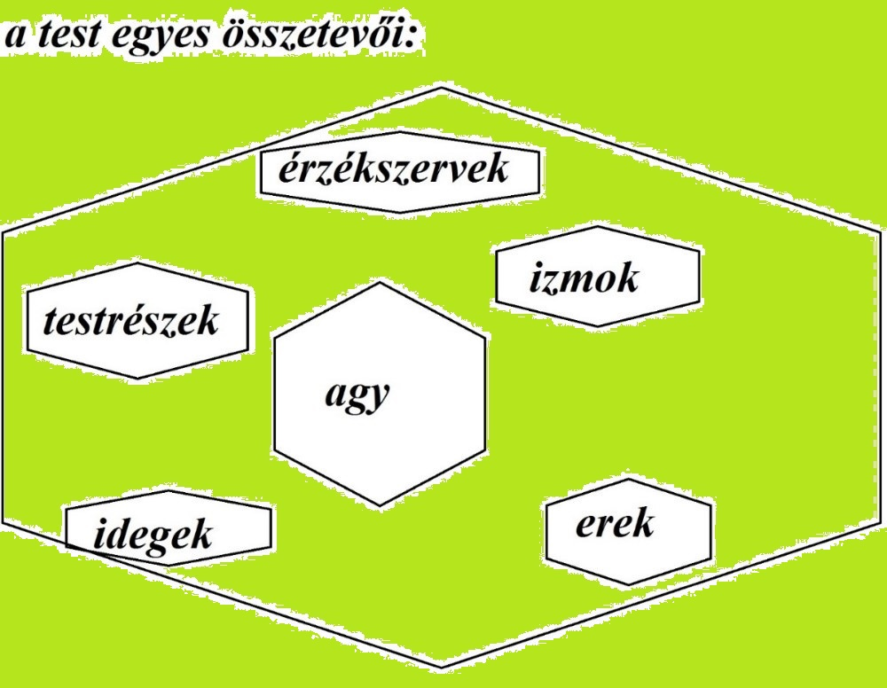

Publikálva: Szeged, 2020.09.15.
Forrai Ágnes
Értekezés a tudatos teremtésről
/ Roy Kiborgon különös tiszavirágélete /
Regény
Tartalom
Roy Kiborgon testet ölt
Az elme nem esik messze a fájától
Az alma két arca
A tudat misztériuma
A csillagkapu, avagy a fekete lyuk
A hagymahámozás könnyei
A szuperintuíció elérése
A teremtésfúzió bűvkörében
A teremtés titkos receptje
Az alkotás kulcsa az elengedés
Az illúzió fogságában
Búcsútanácsok Jusztinnak
„Köszönöm az univerzumnak, hogy közelebb kerülhettem a tudatos teremtés megértéséhez, és interpretálhattam
általa az
alkotás folyamatát.
Hálás vagyok azért, hogy az univerzum rám bízta azt a megtisztelő feladatot, hogy a segítségemmel mások is
tudatára
ébredjenek a teremtés folyamatának, és hálás vagyok Roy Kiborgonnak, hogy a fizikai formáját feláldozta és a
tudatát
megnyitotta e nemes cél elérése érdekében.”
Jusztin
Roy Kiborgon testet ölt
– Nézzétek, drága nővéreim, hogy kit hoz a szőrösszívű sors a hátán miközénk! – kiáltotta Dorisz
testvéreinek.
– Jó apánk az, a híres orvos, a büszkeségünk, aki számtalan embert szabadított már meg a kínoktól, és sok
lélek
becses és drága megmentője. Szomorú, hogy mégis külön él az anyánktól már vagy hét éve – felelte Szófia, miközben
öröm járta át apja érkezésének hírére.
– Biztosan készült a számunkra néhány velős gondolattal, ahogyan szokott, mert szemem úgy látja, hogy az
elméje
valamelyik orvos művét boncolgatja – feltételezte Aphrodité, mikor meglátta, hogy apja egy könyvvel a kezében
érkezik, amelyet éppen teljesen belefeledkezve búj.
A három testvér, Dorisz, Szófia és Aphrodité mindig türelmesen várták apjukat a dolgozószobájában, hátha
hazatér
hozzájuk. Nem szívesen vallották volna be, de nagyon ritkán látták őt. A türelem ezúttal rózsát termett, mert végre
meglátták az apjukat. A három testvér nagyon összetartó volt. Együttesen, összeadva sem éltek még meg negyvennégy
rügyező tavaszt. A legkisebbik testvér Dorisz volt a maga tizenkét évével, őt követte a sorban a tizennégy éves
Szófia, majd Aphrodité a tizenhat esztendejével. Szép volt nagyon mindhárom rózsaszál, büszke lehetett rájuk
Jusztin, az apjuk, már amikor találkozott velük. A három leányzó szinte mindenhova együtt ment, elválaszthatatlanok
voltak egymástól.
– Faggassuk ki, hátha hozott valami meglepőt! – lelkendezett Dorisz örömében.
– Szép és derűs nap fogadja a kedves hölgyeket! Az én lányaimnak nem kívánok egyebet, mint számtalan
dicsőséget!
Elnézést, hogy ezt a könyvet bújom, csak még a fejemben kavarog néhány szó és sziporka, mindjárt befejezem a nagy
alkotásomat, és de facto debütál majd előttetek.
– A nagy alkotásod? Apám, miféle alkotáson dolgozol? – kíváncsiskodott Aphrodité.
– Elárulom mindjárt én a titkom, csak még néhány akadályt elhárítok, miután kiemelem a lelkemből a nagy
művet.
Néhány apró simítás, ezen munkálkodik a fejem és szorgoskodik a kezem már hét éve – titokzatoskodott Jusztin.
– Hiszen, kedves apám, hét éve élsz egymagad, anyánk azóta hagyott el, megunva a perpatvart. Nem bírta
elviselni már
a kicsapongásaidat, a szobádban lévő sok salátapapírt, melyre rémes és rímes dolgokat firkáltál, és azt képzelted a
papírfecnikről, hogy fontos orvosi irományok. Fejedbe vetted, hogy a neved legyen Senki, vagy légyen nagyon is
Valaki, egy hős mandolinvirtuóz. Feketén vagy fehéren látsz mindent! – közölte Szófia.
– Igen, leányom, hét éve vagyok egymagam, mert elhagyott az anyád méhe és bíboros barlangja, azóta vagyok a
föld
férge és az ég vándormadara. Azon a napon, mikor az anyátok kilépett az ajtómon, hátrahagyva engem, én bizony
szabadságra kéredzkedtem. Megfogadtam azon a napon, hogy szabadságolom magam, és a közösségi munkámat feladom.
Hiszen úgy negyven éven keresztül dolgoztam fáradhatatlanul, a kórházunkban számtalan emberéletet megmentettem, s
közben rohamosan csak vénültem. Húztam az igát évtizedeken át, a lelkem nem kímélve, ezért úgy döntöttem, semmittevő
leszek. Ezennel kijelentem, hogy a hivatalos nevem Teng-leng Jusztin lett. Azóta én csupán önmagammal foglalkozom,
és figyelem az élet minden apró rezdülését. A derűs szellememet és a tudásomat építem, miközben a küllememet
szépítem. Kifacsart és meggyötört lelkemmel törődöm, amire kedve szottyan, örömmel teljesítem. Minden révedező és
apró álmomat szüntelen lesem, és elébe tálalom dicsfényesen, amit éppen keres, kajtasson akár a költészetben díszes
strófákat, és vágjon hozzá lidérces és töprengő pofákat, vagy kutasson ábránd utazásokban sok csodát, és fürkésszen
rozzant portékát áruló kofákat. Mindegy, min munkálkodik a lelkem, de azt önfeledten és szabadon tehesse, cikázzon
elmémben az összes naplopó gondolatom, a tudomány és az orvoslástan felszabadultan szárnyalhasson. Gyönyörködjön az
unalomban akár, de tudja és érezze azt, hogy megszületett, és létezik ma már! Úgyhogy apró kis ötletemnek éltem, és
kitalálta lángész elmém, mit bensőmben sokáig érlelgettem, kurta ábrándfelleget, nem mást… hogy is mondjam…
csupáncsak az lett… így egyszerűen… szóval hogy megalkossam a határtalant, az isteni Kiborgont – hozakodott elő
kissé félve az alkotásával Jusztin.
– Hú, a határtalant? Az isteni Kiborgont? Mindez nagyon jól hangzik, apám! Bevallom, én is kerestem már
ezt-azt
imitt-amott, de megalkotni a határtalant? Nem találok szavakat, nem is értem, hogyan lehetséges. Az elmém, úgy
érzem, hogy eltörpül melletted. Az oly nagy találmányodat egészen kíváncsian csodálom! Ide-oda ráncigálom az
agysejtjeimet ingva-ringva, mégsem látok a dolgok mélyére és velejébe, én, a kis otromba – szabadkozott Aphrodité.
– Most még félhomályban tapogatózol, drága Aphrodité, de ne izgulj, rögvest megvilágítom. Üljetek körém,
csoda szép
kisasszonyok, egyetlen értelme az életemnek csak ti vagytok! Csoda szép kis himbálózó és elegáns csillagok,
kuporodjatok itt le a kopott plüsspamlagomon! Titkom és a makulátlan munkám mindjárt elárulom. Fenséges és örökké
vidám mosolyotok számomra végtelenül ékes kincset jelent. Remélem, nem fülsértő és sivító a dallam, amelyet most az
édes kis fületek hallhat. Dajkálja, és nehogy belebénuljon ez a világ abba, amit a belső szépségetek majd ebben a
percben átláthatna. Hófehérben játszik a szőke hajad, Dorisz, és Szófia, szeszélyes és komisz, gödröcskés és
vérpiros orcádat mily nagyon szeretem, selyemből készült kék kalandorruhád a mindenem, Aphrodité, állandó jelleggel
lenyűgöz hollófekete hajviseleted – hízelkedett Jusztin.
– Mondd, kedves apám, mi a műved? Elménk már oly kíváncsi rá! – türelmetlenkedett Aphrodité.
– Egy bajtársam, Roy a becsületes neve, örök jó barátként fészkelte be magát a lelkembe. Hivatásos katona
volt, és
amikor hazatért egy nap a koszovói háborúból, a szemében láttam azt, ami a szívében tombolt. Megrémisztett engem,
hogy az egykori jó barátom ennyire megváltozott. Hajléktalan és csendes fejét a keblemre borította, anyátlan és
esetlen kezét szorítottam. Elregélte a kínok kínját, amit ott a háborúban megélt, mindkét lába megégett, jaj,
szegény, majd fájdalmas arccal mutatta a megsérült kezét. Éjnek évadján a csikorgó hidegben megfogadtam, ott előtte
és önmagamnak, hogy segítek a szerencsétlennek. Családja már régen elhagyta, a felesége és a gyermekei a háború
alatt egy kereskedővel elmentek. Nem maradt a világon senki, aki egy kicsit, haloványan is szeretné. Viharvert szeme
oly sötéten villogott, és lyukat beszélt a hasamba, mint egy démon. A környezet felőrli az embert, látom és tudom
jól, ezért eladtam a lelkem üdvösségét ott és akkor. Az, hogy segítsek rajta, lett számomra a fő szentség. Miután
orvos lévén addigra irdatlanul sok műtétet hajtottam én végre, elvállaltam mint betegemet, szegényt. Könnyedén
beszereztem rengeteg implantátumot. Beültettük a két lába helyére, örült is néki oly nagyon szegényke. Kivirult az
arca, és oly boldog volt, hogy újra egyedül és szabadon járhatott. Uralta a szuper és erős lábait, egyem meg a
szívit. Igen ám, csak tervünk itt még nem ért véget, mert utána kicseréltük a félig egészséges karjait. Annak is
örült, hisz oly nagyszerű lett. De még ekkor sem fulladt ki sodró lendületünk, mert hiszen az összes szervét
voltaképp helyesbítettük. A végén nem maradt eredeti testrésze, egy nagy implantátum lett belőle! Bár ebből a
kívülállók nem látnak és érzékelnek semmit, mert hiszen a bőre alatt bújik meg az összes protézis: a mája, a tüdeje,
a szíve és minden egyéb szerve csupáncsak szélhámos, szédítő alkotás.
– Jesszusom, akkor hogy nézhet ki?! Egyáltalán tud nézni, lát valamit? – kérdezte csodálkozva Szófia.
– Persze, az isteni implantátum révén tökéletes és tízezerszer jobb a szeme a halandó emberekénél. Hiszen ő
mindenből a legjobbat kapta, nemcsak emberi, de állati testrészeket is. A végén, hogy isten legyen, azt akarta!
Koromsötétben, mint egy bagoly, lát éberen, és gekkóként színeket érzékel a holdfényben. Erősebb a látása
háromszázötvenszer, nem tudnál vele versenyezni. S mint víziló a víz alatt, mindent észrevesz az optimális és
átlátszó membránrétegének köszönhetően. Kaméleonként térben két irányba néz, és ultraibolya fényt észlel, mint a
lepke. Háromszázhatvan fokos a látószöge, csak éppen nem béget, mint egy házikecske. A polarizált fényt és a
kontrasztokat is felismeri, mint egy szépséges tintahal, a világot úgy érzékeli. Az infravöröslátcsövet és a
kamerákat mintha beültették volna az agyába. A bőrfelszín alatt húzódó vörös vénádat, a szerveidet, a lépedet, a
májadat és számtalan mást az ő szeme mindent átvilágítva meglát, és röntgenlátása harmadik szemként funkcionál. Most
is figyel bennünket gyaníthatóan – ecsetelte Jusztin Roy emberfeletti tulajdonságait.
– A hallása is ilyen optimális? – tudakolta Dorisz.
– A háromszáz kilohertzes hangokat is érzékelő szuper hallásával bárkit kicselez! A viaszmoly furfangja és
az
ultrahang kibocsátása segíti, hogy tájékozódjon a világban a föld alatt, de akár az égben is. Húsz hertzes képlékeny
infrahangjával a pusztító földrengést is diagnosztizálja. A szakma biztos szívesen applikálná légkörkutatásra! A
tornádó közepén vagy akár egy lavina lezúdulásakor, vulkánkitörésnél és meteorzáporban, illetve a fénylő sarki fény
alatt, égi villámláskor, akár egy vízesés mellett, akár egy jéghegy leomlásakor biztonságban lennénk tulajdonképpen
a közelében bárhol. Hiszen ő hűségesen előrejelzi mérhetetlen tudása révén mindezt, e téren is tökéletes. Ja, és még
a szellemekkel is képes beszélgetni! – dicsekedett Jusztin a lányainak.
– A szaglása is tökéletes? – kérdezte Aphrodité.
– Jaj, Aphrodité, olyan kutyaszaglása van, hogy most is érzi a kellemetlen lábszagot. Természetesen a
szimata is
kiváló, nehéz elviselnie, ha bántó és rossz szagot érez az ormánya. Ráadásul kivételes nyomkövető: robbanóanyagok és
kábítószerek, bármit hiánytalanul rögtön kiszagol és felfedez. Élces sikerélményekben kimagaslóan érzékeny,
veszélyérző és egy pompás detektor egyben. Megneszeli fürgén a borsszemnyi félelmed, titkolni bármit is előle
teljességgel lehetetlen. Háromszázszor több szagérzékelő sejtje van, mint a halandó embereknek. Persze a bűz
kibírhatatlan számára, de az édes aroma kiengeszteli érte. Bukémolekulák ezer tömkelege és párszaglászás zömében
mérföldekre, bűzmirigyek és szaglógumók, illetve a feromonok mind-mind az ő szolgálatában áll – magyarázta Jusztin.
– Még egy kényes kérdés jutott az eszembe: Odalent vele mi a helyzet? Ott is protézise van? – kérdezte
félve a
legkisebb, Dorisz.
– Igen, elbújhat a Káma-szútra, mert hozzá képest csak piskóta! Ő a szerelmi gyönyörök netovábbja, minden
nő
elemésztő és lompos vágya, az örök sóvárgás férfiprincípiuma, a testi kötelék misztériumháza. Bűvölő varázsszerek és
kéjfőzetek! Kedves nők, a vele való románctól tartózkodjatok! – nevetett Jusztin.
– Az agyával mi a helyzet, azt is tökéletesre fejlesztetted, talán azt is kicserélted? – kérdezte
Aphrodité.
– Protézis még az is! Olyan ő, mint egy intelligens számítógép, hatalmas memóriára írt elképzelt és egyben
kiteljesített szándék. Amit egyszer hall, elolvas vagy leír, azt megjegyzi. Úgy számol, mint egy abakusz vagy egy
logarléc, trigonometrikus komplex számológép. Oly érzékeny, hogy még mások gondolatait is megérzi, mert ha mellette
állsz, akkor a cikázó képzeteidet is érzékeli és érti – büszkélkedett Jusztin.
– A zsebkendőmbe fújnám a nevetésem, mert egy lábadozó mosoly parázsként rőt fényt vet. Pallérozatlan agyam
tüstént
eldobom, ha ezt a bravúros egyedet én nem láthatom! – kiáltott fel Szófia.
– Ne hidd, édes lányom, hogy ő csak egy utópia, a bolond apád egy tébolyult koholmánya! Nagyon is létezik,
majd
meglátjátok! A termete isteni, érzékszervei és bő tudása oltári. A vén, vitéz bakából égi angyal lett, isteni
szikrákkal átitatott tökéletes fószer. Lehet, már nem is egy földi ember, hanem személyesen a mennyei atya.
Barátomból, a vén katonából, Royból hát megszületett a kibernetikus organizmus porontya, a transzhumán lét
uralkodója: Roy Kiborgon személyesen. A test képességeinek határait ő kitolja, a biokompatibilis anyagokat
szenzációs varázslóként ő befogadta, a világ legtökéletesebb katonája, akinek most már nem kell lódítania, hiszen ő
már egy mindenre képes múmia.
– Mily csodás érzés rábukkanni és meglelni e csúcsszuper isteni entitást! És mily csodás lehet vele együtt
élni, és
őt szeretni! Hova jut a széles skálájú univerzum? Ember, te embert teremtesz? Reméljük, az antropogónia nem
delikvencia, hanem az állatvilág legnagyobbika. Megkaptad a képességet ahhoz, apám, hogy te légy a teremtés
koronája. Tálentuma lehet ő a kicsiny kis világunknak, látod, te is tudsz formát adni a céloknak, sárból és
dagonyából új anyagot alkotni, szépet produkálni a furfangos létezésnek – mondta Szófia.
– Termete jóvágású és daliás, ezért megeshet, hogy minden külső kvalitását parádésnak találja mindenki.
Nincs, nem
vala őbenne oktalan hiba, pöttöm baklövés, csekély malőr, nyúlfarknyi bibi vagy bármi kis ostobaság. Az egyénisége
önkéntelen kerüli, és kitér a széltoló melléfogások elől, csak dicsérni tudom, hiszen oly tökéletes egyed. Ostoba
mulasztásnak még csak a gyanúja sem vetülhet rá, elkerülhetetlen botlás mankóját sem viseli, kivetnivalót nem
találni rajta és benne, kizárt, hogy bárminemű betegség vagy rendellenesség gyötörje – védelmezte Jusztin az új
teremtményét.
– Én máris cudarul ácsingózom erre a Royra! Igaz, még rejtve van előlem, hisz még nem láthattam, de máris
vágyom a
megismerésére – vallotta be Szófia az érzéseit törékeny és érzéki hangon.
– Igen, megalkottam, sikeres lett a frigyem az alkotás örömével. Gyönyör jár át szüntelen, és a munkám
bevégeztetett. A megátalkodott cél kaparintotta meg a lelkemet, vagy a csökönyös lelkem lett a cél rabja? Nem tudom.
Tudja az ég, hogy miből melyik fakadt! – sóhajtotta Jusztin. – Emlékszem a napra, pontosan hét éve volt, amikor az
anyátok elhagyott. Csak álltam ott magányosan, keserves könnyeim között; mily ragyavert fájdalom tört rám szüntelen!
Tűrtem a mankón járó és megrekedt lelkem elhaló, apró és halovány hangját itt, bent a mellkasomban, amely olcsó és
szánalmas neszként hangzott a sarokban és a rút falakban. Farkasordító és felbőszült hangon, mélyen legbelül
marcangolt vagy ezer kínnal, és a hasamon ült, mint egy cselekvőképtelen, apró jószág, elterülve a lelkemben, és
távozni már nem akart éntőlem. Tűrtem, hogy végezze áldatlan, keresetlen játékát, és sanyargató, rút kínnal borítson
el. A jelentéktelen életkárhozat felett éreztem, hogy az életem bevégeztetett. Egy halálos pirula elűzhetné, talán
feloldaná tébolyult szorítását a zsigereimben. Libabőrös kezemen a szemem átsiklott, izzadsággyöngyös és sápadt
arcom kipirult. Irtóra fájt a nem múló élet. Fájt, hogy tűrnöm kellett, hosszasan és végleg. A halál előszobájára
gondoltam, de átlépni nem volt bátorságom biz azt, inkább csak tűrtem a megrögzött fájdalmat. Majd egy kis életmentő
szikra ezt súgta: „Van még egy csekély dolgod a földön, és ne félj e világban! Zöldségeket beszélsz, oktalan
Jusztin! Ne hagyd, hogy lelked önmagad ellen lázadjon és forduljon! Térj észre, bízz a reményben és az isteni
szóban, tűrj és harcolj emberhez méltó módon! Higgy bennem, maradj, tűrj, bízz, remélj és remélj! Higgy bennem,
kapsz még feladatot, ne félj! Elvégezni és átadni neked a tervem később fogom, akkor kitisztul a most még
kétségbeesett tudatod előtt, hogy mire kellesz.” Már tudom, azért kellett gyűjtenem a sok kínt és a fájdalmat, hogy
erőm majd a nagy feladatom bevégzése közben ne hagyjon el engem. A megfáradt szemem áradó patakokban ontotta a
könnyeimet, tűrtem, és behódoltam a nagy-nagy természetnek. Fájdalom járt át, elviselhetetlen volt, de tűrtem,
bíztam és reméltem. Megfogadtam mindörökre, hogy ez az erő mindig előttem fog lebegni. Testet öltött a hitem, és a
maradásomat jutalmazta, végül életem értelmet nyert, mert a dédelgetett Roy Kiborgont megalkothattam, az
istenszikrát, a mennyei áldást a kezem végleg megformálta. Ha szeretnétek, megmutatom – puhatolózott Jusztin félve.
– Persze hogy szeretnénk látni őt, jó apánk! Addig is mesélj róla, milyen ő! Termete és a külleme vagy a
jelleme
széptevő? – kérdezte Aphrodité.
– Ötszázezer különböző létformát hordoz magában, dagasztja lelkét a határtalansága. Jegyzetét olvashatná a
kozmológia. Adonisz-testét mindennap a tükörben mustrálja, a női szív delejező és apadatlan vigasztalása. Az arany
színű fényben élhetsz vele Árkádiában. Nincs, aki bucsálódna, ha az ő rabja. Elbágyasztja az időt derűs hangulata. A
bökkenő a létezésében csak az, hogy egyedül van, magányosnak érzi magát szegényke, mint egy menzai lepényben a
mazsola, oly árva a lelke – sajnálkozott Jusztin.
– Mily édes ficsúr lehet, aki, ha az álmomat látja az éjszaka, akkor reggelre a kívánságomat teríti az
asztalra! –
sóhajtott Aphrodité.
– Ha egy tűzpiros rózsára áhítoznék, akkor pár perc múlva az én udvarlóm már virágokkal hódítana – vett
mély levegőt
Dorisz.
– Vagy milyen érzékien simítaná a szép bőrömet, hiszen roppantul ismerheti a test receptorait – áhítozott
Szófia.
– Ha haragra gerjed, akkor bizony mindannyiunk baja lészen, hiszen néhol rémisztő a nagy hatalma. Múltkor a
vaskos
gardróbot odébb vágta, mert a felindultság a lelkét legott átjárta. Úgy kellett könyörögnöm, hogy tegye vissza, mert
én a karommal mozdítani se tudtam – sápítozott Jusztin.
– Jesszusom, ily erő lakozik az ő karjában, ettől félve megrémülnék a társaságában! Bizony félnék én
esetleg
félrelépni a félhomályban, hiszen úgyis megtudná gondolatolvasással. Még a két tenyere közé szorulna a buksim,
hűtlen és vétkes létem egy pillantás, és kimúlik! – ijedt meg Szófia.
– Bevallom, a kegyes hazugsága olyan, mint tű a szénakazalban, mintha korábban valaki trombitának nézte
volna, és
megfújta volna hajnalra. Hanem humora van néki, és szárnyal. Szellemisége is átalakult. Oly dolgokról mesél, mitől a
szellemem elámul. Röpke lelke igazán költői és romantikus lett, mintha az implantátummal szervesen kicserélődött
volna teljesen. Nem fikarcnyi számára a női nem, hanem képviselőire valóban odafigyel – dicsőítette Jusztin Royt,
miközben a lányok kuncogtak. – Ne nevessétek ki őt, kérlek titeket alássan, kisasszonyok, mert a végén tüsszent, és
röppenünk egy jó nagyot! – nevetett Jusztin.
– Jaj, csak azt ne, nekem aerofóbiám van! – kacagott hangosan Aphrodité.
– Múltkor kerestem a zafírkék felöltőmet. Hallom ám, hogy a tüdeje kapkodón krákog és köhög. Brahin és
hanyag
odavetett egy szóötvözetet: „A szarvasbőr fotel alatt van az öltözeted.” Bekukkantottam, mert fúrta az oldalamat a
kíváncsiság, és láss csodát, ott lapult az szórakozottan. Az ő röntgenszeme elől senki és semmi nem bújhat el!
Bevallom, lenyűgöz és elvarázsol a tudománya. No persze az, amit én adtam oda a számára – düllesztette ki a
mellkasát Jusztin.
– Hitemre, véle aki kéz a kézben sétálhat, annak minden perce olyan lehet, mint egy gyümölccsel teli
örömtál, jól
leöntve tejszínhabbal, rajta pedig csokimáz és cukorka. Erős és acélos kézfeje akit csak megérint, biztonságban
tudhatja magát az életében örökre. Az epedő szíveket várhatja az erődjében, mert a nők biztosan hamarosan ellepik –
állapította meg Dorisz.
– Aztán meg az egyik nap egyszer csak kopognak, és kérdi tőle, hogy nem nyitok-e ajtót a szomszédságnak. De
facto
Lili néni, a szomszédom állt az ajtómban, és majd gyökeret vert mindkét agg lábam ámultomban – jegyezte meg Jusztin.
– Ha éppen úgy állnék, hogy nem telne egy hintóra, akkor ő a nyakába kaphatna, és úgy nyargalhatna a
kilóimmal –
humorizált Aphrodité.
– Állhatnék én a hivatalok pénztárában naphosszat, hisz a sötét felhőket elfújná a tudása. Osztana,
szorozna és
összeadna a támogatásomra, így immunis lennék én a hatóságok packázásaira. Bizonyára meggazdagodnék mellette, hiszen
annyi mindent megérezhetne – lelkendezett Szófia.
– Érezné előre a szeles vagy a napsütötte időjárást, így még a munkába indulás előtt jelezné nekem, hogy
vigyek-e
esernyőt – heherészett Dorisz.
– Biztosan aduász és lepedőakrobata, a női szívek színes abrakadabra! – rötyögött Szófia.
– Múltkor azt mondja nekem, hogy igyak sok folyadékot. Kérdem tőle, minek, kedves barátom. „Mert veseköved
van vagy
három, úgy látom.” Az orvosnál volt ám álmélkodás, és a szám tátva maradt, amikor kiderült, igaza van – mesélte a
dolgot Jusztin.
– Biztosan abszolutizálod őt, jó apám, így ha a saját szemünkkel láthatnánk, akkor hinnénk neked talán –
kételkedett
Aphrodité.
– Pár hét múlva felszentelem őt nektek, ígérem! Akkor majd meglátjátok mindazt, amit most elmeséltem. Addig
is
várnék még a bemutatásával, mert túl sok a testében az implantátum, és nem tudni, a szervezete miként reagál a sok
idegen testre, elfogadja-e vagy kidobja. Állandóan beszél, és okít engem. Kissé tudományoskodóvá és túlontúl
tudatossá vált mára az én ízlésemhez, de megvallom, szívesen hallgatom, mert érdekfeszítő. Filozofál, és elméleteket
gyárt. Szegénykémet kénytelen vagyok meghallgatni, hisz szerveit én cseréltem ki, és tartozom ennyivel neki. Bízzunk
a legjobbakban hát, mert az utóbbi időben kissé enervált. Legyetek türelemmel, hamarosan, talán pár hét, és
meglátjátok a nagy művem! – mosolygott sejtelmesen Jusztin.
Az elme nem esik messze a fájától
– Jusztin, kedves alkotóm, el szeretném mesélni neked, hogy miként jutottam el a tudatos teremtés megértéséhez
és
annak alkalmazásához pár nap alatt. Hangsúlyozom, ez az én ösvényem, de te is megtalálhatod a sajátodat, sőt
lehet,
te jobban ráérzel. A gondolataim támogathatnak abban, hogy rálelj az utadra, és felnyissa a szemed arra, hogy
miként
fedezheted fel a tudatos teremtés szépségeit, és miként fordíthatod a magad hasznára, miközben egy malomban
őrölsz a
világmindenséggel – ecsetelte Roy Kiborgon az alkotójának, Jusztinnak a felfedezését másnap reggel.
– Azért akarod elmesélni nekem mindezt, mert segíteni akarsz hálából, hogy megteremtettelek, vagy az elbeszélésed
által még tudatosabbá akarsz válni? – érdeklődött Jusztin.
– Segíteni akarod neked, Jusztin – nyugtázta Roy.
– Amikor megfogantak a gondolataid a teremtés misztériumáról, akkor tudatában voltál annak, hogy most a végére fogsz
járni? – kérdezte Jusztin.
– Jusztin, ott vagy, ahol lenni szeretnél, vagy nem épp tudatosan, de elérted azt, amire vágytál a tudatalattid
segítségével? – kérdezett vissza Roy. – Legyen a célod az, hogy szép lassan tudatosan megteremted azt a világot
magadnak, amelyre vágysz, lépésenként haladva. Arra szeretnélek megtanítani és rádöbbenteni, hogy miként juthatsz el
oda, ahol lenni szeretnél, és miként jutottál el oda, ahol most vagy. Ki akarsz szállni a mókuskerékből? Akkor
vizsgáld meg velem együtt a tudatos teremtést, az elme működését és annak szerepét az életedben! Tűzd ki célul, hogy
meg fogod tapasztalni a létjogosultságát, és hidd el, érezni fogod az eredményét minden egyes porcikáddal! Ha
türelmes vagy, át fogod érezni a mondanivalóját hamarosan. Ha elindulnál a belső világod felé, vajon hová jutnál,
Jusztin? – kérdezte Roy.
– Elbotorkálnék valahová. Esetleg egy helyben toporognék, vagy céltalanul csellengenék – habogta Jusztin.
– Teljesen mindegy, Jusztin, az eredmény számodra lényegtelen kell hogy legyen, csupán az a fontos, hogy akard
megtapasztalni – ecsetelte Roy. – A szándékoddá kell válnia annak megfejtése, hogy mi a te szereped a tudatos
teremtésben, és ki kell hámoznod, hogy mi a te utad a belső világod felé. Ki kell fundálnod, hogy milyen még
megfejtendő rejtély leledzik az életben. Tulajdonképpen ez mindenkiben felmerül legalább egyszer az életében, mert
vágyik a megfejtésére, de nem ad magának elég időt rá, hogy megválaszolja, vagy a társadalmi konformitás magába
szippantja, eltelik az idő, mondhatni, öntudatlan állapotban éli le az életét, a szociális elvárások és a
tömegpszichózis nyomásának engedve – konstatálta szomorúan Roy.
– Igazad lehet, hiszen észrevettem már, hogy az életemet ha őszintén átvilágítanám, nagyító alá raknám, akkor azt
találnám, hogy valóban mindent én teremtettem meg magam körül. Iskolai éveim után szerelemre vágytam, és meg is
kaptam – mondta bólintva Jusztin.
– Ha a szerelemre áhítozol, Jusztin, akkor előbb-utóbb bekopogtat az ajtódon, persze mellette minden pocsékul állhat
az életedben, de ha a vágyott románcra vagy érzelmi kötődésre koncentrálsz, az biztosan fel fog bukkanni az
életedben; ha nem engeded be az ajtódon, akkor bizony be fog mászni az ablakodon.
– Később tanulni akartam, így is tettem, és orvos lettem. Közben nőcsábászéletet óhajtottam élni, hát olyan életet
éltem. Párhuzamosan és váltogatva, mindent kipróbálva, mert azt akartam megtapasztalni. Utána komoly kihívásra
vágytam sikerekkel, megkaptam a munkámat és a családomat, és megteremtettelek téged.
– Ha tanulni akarsz, megteremted annak a lehetőségét. Ha nőcsábászéletet szeretnél élni, olyan életet fogsz élni, és
megtapasztalod mindazt, amire tudatosan vagy tudat alatt vágysz. Ha komoly munkahelyet óhajtasz sikerekkel,
megszerzed azt is. Ha tudatosan házasságra epekedsz, megvalósítod. Ha tudatosan családra vágyakozol, akkor azt
teremted meg. Ha sok pénzre ácsingózol, akkor megkaparintod. Egyszóval, ha visszanézel az eddigi életedre, akkor
láthatod, hogy egy seregnyi eseményt tudatosan idéztél elő, és természetesen volt egy seregnyi dolog, amelyet vagy
más vagy a tudatalattid idézett elő a számodra. Ez is előfordulhat, ha hagyjuk, mert közben elfelejtünk tudatosak
maradni. Akkor is megtörténik a teremtés, mert az elméd nyughatatlan, és eredendő lételeme az alkotás. Az elme
mindenképpen teremteni fog, mert az őstermészet a génjeinkbe ültette a teremtés magját. Rajtad múlik, hogy ez a
teremtés tudatossá válva a javadat szolgálja, vagy öntudatlanul a sötét kárhozatba taszít. Ezt te döntöd el, és ha
nem használod a tudatod, akkor az is a te döntésed. Amit a szíved mélyén meg akarsz tapasztalni, amivel lelkileg,
testileg, érzelmileg és szellemileg összhangban vagy, tudat alatt is, azt meg fogod teremteni, ha tudatában vagy
ennek, ha nem. Ez a helyzet. A tudatos teremtés legmagasabb foka, amikor már a tudatalattid teremt a javadra, amikor
már nem kell energiát áldoznod a teremtésre, mert a kellő gyakorlat után átveszi tőled a tudatalattid a tiszta és
pozitív irányítást. Visszagondolva az életedre, biztosan emlékszel arra pillanatra, amikor elindultál az öntudatra
ébredés útján.
– Igen, emlékszem, iskolás lehettem, de azután valahogy kicsúszott az irányítás a kezeim közül, legalábbis nem
figyeltem rá kellőképpen, és a társadalom által hajtott mókuskerék visszarántott. Néha sikerül újra öntudatra
ébrednem, ébredeznem, mígnem újra eltűnök valahová az éterben – helyeselt Jusztin.
– Jobb később, mint soha. Ha arrafelé haladsz, ahol mindig is akartál lenni, akkor már sejted, hogy létezik tudatos
teremtés. Határozz el valamilyen grandiózus célt, amely számodra monumentális, amelyről biztosan tudod, hogy ha
sikerül elérned, akkor azt a tudatos teremtésnek köszönheted, amelyet csodának tartanál, amelyről tudod, hogy
önerőből elképzelhetetlen lenne, hogy megvalósuljon – tanácsolta Roy Jusztinnak.
– Amiről biztosan tudni fogom, hogy ha sikerül, akkor azt valóban a tudatos teremtésnek köszönhetem? Ha a
lottónyereményt bezsebelhetném, nekem az lenne bizonyíték erre.
– Rendben, akkor mielőtt elkezdenénk ennek az algoritmusát levezetni, néhány dolgot azért elöljáróban hadd mondjak
el. A tudatos teremtést nem kezdheted a gyakorlattal, először az elméleti folyamatát kell megértened, ha igazán jó
akarsz benne lenni. Ahhoz, hogy profi, tudatos teremtő lehess, nem csaphatsz csak úgy bele a lecsóba in medias res,
hanem néhány dolgot meg kell tanulnod előtte. A tudatos teremtés menetét a fejedbe kell vésned, és az eszedben kell
tartanod szüntelen és töretlenül. Ha álmodból felkeltenek, akkor is tudnod kell. Nem kevés idődbe, energiádba és
tapasztalatodba fog kerülni, hogy annak a technikáját és elméletét elsajátítsd, még mielőtt a gyakorlatba ültetnéd.
– Nekem erre nincs időm, Roy! – sopánkodott Jusztin.
– Az autóvezetés megtanulásához tudnám hasonlítani a tudatos teremtés elsajátításának menetét. Igen, talán ez a
legjobb példa rá. Tételezzük fel, hogy le szeretnél vizsgázni autóvezetésből, és jogosítványt szeretnél szerezni.
Első alkalommal, amikor találkozol az oktatóval, és beülsz az autóba, elmondja neked, hogy a kocsiban ülve a vezetés
kapcsán mik lesznek a feladataid. A kuplungot pont annyira engedd fel, mint amennyire lenyomod a gázt, próbáld meg a
két pedál mérleghelyzetét megtalálni. Nézz a tükörbe minden induláskor és sávváltáskor. Elmondja az egyéb
feladataidat is: mindezek mellett vedd szemügyre a táblákat, pásztázd folyamatosan a forgalmat, fürkéssz hátra és
oldalra. Kissé kaotikusnak érzed, valljuk be, és talán még azt is mondod, hogy te ezt nem fogod tudni megcsinálni.
Ha másnap megpróbálnál oktató nélkül, teljesen egyedül vezetni, gondolva, hogy márpedig te akkor is megcsinálod,
elég nagy lenne az esélye, hogy orbitálisan nagyot hibáznál és csalódnál. Szerencsére, ha kinézel az ablakon, azt
látod, hogy rengeteg autó rohangál az utakon, és mindegyiket egy sofőr vezeti, így tudatilag elkezded elhinni, hogy
neked is sikerülhet. Mi lenne, ha azt látnád, hogy csak alig néhány autó közlekedik az utcákon? – kérdezte Roy. –
Elárulom, hogy a legtöbb ember el se hinné, hogy közéjük tartozhatna, és meg tudná csinálni, ergo a tudatát nem is
merné a cél felé irányítani. Az elme használatát, a tudatod teremtőképességét is meg kell tanulnod kezelni. Ehhez
kell a tudatosság. Kitartóan és türelmesen gyakorolnod kell, ha el akarod érni a kitűzött célodat. Gyakorolsz és
gyakorolsz, majd egyszer csak azon veszed észre magad, hogy ráéreztél, igen, most végre érzed, tudsz vezetni. Ez a
pillanat nem akkor jön el, amikor átveszed a jogosítványodat, ez egy belőled előtörő érzés, amikor nyilvánvalóvá
válik, hogy ráéreztél a dolog mikéntjére. Most már könnyedén megy, és megvilágosultál. Ez mindenkinek más időpontban
jön el, lehet pár hét, pár hónap, de akár pár év is. Sajnos van olyan is, aki a tudatában annyira sem tudja
megteremteni a célja tárgyát, hogy elhiggye magáról, meg tudja csinálni, így inkább bele sem kezd, vagy félúton
abbahagyja. Ha megtanultál vezetni, mennyire jó érzés! Gyönyörködhetsz a tájban, már oda sem kell figyelned, csak
vezetsz. Eljutsz vele a céljaidhoz és a legszebb helyekre is. A tudatalattid elvégzi helyetted a munka nagy részét.
Ez fantasztikus! Nem kell erőlködnöd, csak addig, amíg megtanulod, utána egész életedben csak learatod a babérokat.
Az autóvezetés elsajátítása után már akár azt is átélheted, hogy amikor hazaérsz, ott ülsz az autóban, és azon
gondolkozol, miként értél haza. Egyszerűen nem emlékszel rá, se az útvonalra, se arra, ahogyan vezettél. A tudatos
agyad elkalandozott közben, lehet a következő portfóliódon dolgoztál, de az biztos, hogy nem voltál tudatosan jelen,
azért, mert a tudatalattid robotpilótamódja megsegített és támogatott az utazásod során. Szerencsésen és egyben
hazaérkeztél, a tudatod kikapcsolt, a tudatalattid elvégezte a feladatát, fantasztikus az egész. Annyira tudsz immár
vezetni, hogy ezt is megteheted. Lehet, hogy az egyik nap nagyszerűen vezetsz, a másik nap pocsékul, de nem adod fel
az autóvezetés megtanulását, nem mondod, hogy sosem leszel képes megtanulni. Persze csak ha van egy fikarcnyi
kitartásod, mert tisztában vagy vele, hogy eljön az a nap, amikor tökéletesen elsajátítod, és teljesen lazán
elvégzed a feladatot, még csak oda sem kell figyelned közben. A tudatos teremtés is ilyen, ha lelkesen úgy gondolod,
hogy már másnap el is kezdheted, azt fogod látni, hogy nem sikerül megvalósítani, végül azzal nyugtázod a napot és
magát a folyamatot is, hogy nem működik, és lehetetlen küldetés. Ilyenkor se időt, se energiát nem szánsz a
tanulásra. Az elméletnek mindig meg kell előznie a gyakorlatot! Ez lesz az alap a tudatos teremtés esetében is. Ha
elsajátítottad az elméletét, ha tisztában vagy a gyakorlatával, akkor is rengeteg gyakorlásra lesz még szükség, mire
a tudatalattidba a folyamat tökéletesen beépül. Így kell a tudatos teremtést is megtanulni, még ha lehetetlennek is
érzed először, akkor is ki kell nyitnod a tudatodat, érezned kell azt, hogy meg tudod csinálni. Elhiszed, és a
céloddá válik. Utána pedig kezdhetsz gyakorolni és gyakorolni. Nem szabad abbahagyni. Egyetlenegyszer elég
ráérezned, és életed végéig tudod majd használni, minden helyzetben, akaratlanul is, tudat alatt is. Amennyi időt
szánsz a tudatos teremtés megértésére, amennyi energiát fektetsz bele, annyit kapsz vissza belőle.
„Azt mondom pedig: A ki szűken vet, szűken is arat; és a ki bőven vet, bőven is arat.”
2Kor 9.6
vagy
„Ne
tévelyegjetek, Isten nem csúfoltatik meg; mert a mit vet az ember, azt aratándja is.”
Gal 6.7
– Biztosan előfordult már veled – folytatta Roy –, hogy az elméd bizonyos tevékenység végzése során teljesen
kikapcsolt, mégis tökéletesen elvégezted azt. Ilyen, amikor a tudatos teremtést már elsajátítottad, észre sem
veszed, és csak csinálod, a véreddé válik, bármerre mész és bármibe kezdesz. Hát nem éri meg a befektetett energiát
és időt, Jusztin?
– Igazad lehet, megéri rászánni az időmet, ne haragudj, hogy kételkedtem. Mindannyian teremtünk az életünkben.
Vannak kisebb célok, vágyak és álmok. A beszűkült tudat a társadalmi konformitásnak rendeli alá magát teljesen:
dolgozz valahol, legyen családod és hiteled – eddig terjed a legtöbb ember tudata. Sokan még ezt sem tudatosan
csinálják. Csak úgy vannak, nem irányítják és felügyelik a tudatukat. Így az arra irányul, amerre éppen akar, vagyis
azt teremt, amit éppen akar.
– Éppen ezért az egyik nap úgy érzed, hogy tudsz teremteni, míg a másik nap rájössz, hogy nem, de ennek ellenére nem
szabad feladnod, ilyen a teremtés tanulási folyamata. Kezdetben még egy-két dologban sikert érsz el. Egyes esetekben
sikeres a teremtés, máskor nem. Emiatt nem szabad feladnod, tovább kell gyakorolnod. Tökéletesen tudatában kell
lenned annak, hogy el fog jönni a nap, amikor már professzionálisan elsajátítottad és könnyedén elvégzed a teremtés
tudományát, koncentrálnod sem kell közben. Tudnod kell elengedni is közben, mert az elméd akkor hozza ki a legtöbbet
magából, ha hagyod, hogy maga teremtsen, és szabadon garázdálkodhasson. Mindig ügyelj arra, hogy tudja, bármikor
visszaveheted az irányítást, mert tisztában kell lennie azzal, hogy te vagy a falkavezér – de azért nem kell
túlerőltetned. Hagyd magára olykor, mert szüksége van a szabadság illúziójára, mint ahogyan neked is.
– Valóban, ha megerőltetem az elmém láncszemeit, akkor feszültség keletkezik a fejemben, és az egyik láncszem
biztosan el fog szakadni, és nem érem el a célom. A láncszemeim gyengeségét kizárólag a bennem lévő feszültség
okozza. Ez a mindennapjaimban nyugtalanság és stressz formájában jelentkezik, olykor még zavartsághoz is vezet.
Ebből fakadóan nagyon leleményesen egyensúlyt kell teremtenem majd a tudatosság és az elengedés, az akaratosság és a
lazaság között, amelynek a megfelelő mértékét majd ki kell tapasztalnom, és az ideális egyensúlyi állapotra rá kell
majd éreznem. Remélem, sikerülni fog. Pont olyan ez, mint a kuplung és a gáz együttes használata az autóvezetés
során: meg kell találni az egyensúlyt – mondta Jusztin kissé tudományosan, jelezve ezzel Roynak, hogy tökéletesen
érti, mire gondol.
– Erről van szó! Bármihez is kezdj az életben, mindig gondolj arra, ha már itt kell lenned a Föld nevű bolygón,
akkor nem jobb-e, ha élvezed az életet a saját érdekedben. Úgyis itt kell lenned, nem igaz? Persze kiszállhatsz a
mókuskerékből, de van hozzá bátorságod? Meglátod, ha tudatosan jól érzed magad, akkor észrevétlenül megváltozik
minden körülötted. Egyre jobb eredményeket érsz el, több pénzt keresel, vagy éppen elismerésben részesülsz másoktól,
de máris jobban fogod magad érezni. Beláthatod, hogy ezáltal egy örömteli energiaspirálba, egy életteli örvénybe
kerülsz, amely egyre boldogabbá fog tenni.
– Ezek szerint a boldogság maga a tudatosság?
– Pontosan, egyfajta nyitottság, amikor felülről szemléljük az életünket, könnyedén, feszültségmentesen és
önfeledten, de titokban a legmélyebb tudatossággal. Ha kellőképpen tudatossá válsz, akkor te magad leszel a
szeretet, a jóság, az öröm, a boldogság, és nem tudnak majd manipulálni, mert aki be akar lépni a világodba,
kénytelen lesz ebben a szeretetteljes és örömteli világban úszkálni.
„A boldogság szeretet kérdése, semmi másé. Aki szeretni tud, az boldog ember.”
Herman Hesse
– Tehát akkor az első lépés: megérteni a teremtés lényegét. Meg kell értenem, miként és hogyan működik az elmém,
mire képes a tudatom, mi van a tudatalattimban, mennyire fontos, hogy jelen legyek. Tudatosítanom kell magamban,
hogy mi a teremtés lényege, és hogyan tudom alkalmazni az újonnan szerzett ismereteket – foglalta össze az általa
leszűrt lényeget Jusztin.
– A cél, hogy az új tudás idővel beépüljön a tudatalattidba. Kezdd ezzel; értsd meg és használd, csak egyszer kell
megtanulnod. Egyeseknek könnyebben megy, másoknak nehezebben, de bárki, aki hisz benne, és nyitottan áll hozzá,
képes rá. Az emberek sajnálják arra az idejüket, hogy megtanulják, pedig ez mindennek a kulcsa. Fel kell fedezned,
hogyan tudod a legkönnyebben irányítani az elmédet. Tudnod kell, hogy mi hat rá, mivel tudod befolyásolni. Világossá
kell válnia a számodra, miként vagy képes becsapni, és illúzióban tartani a szürkeállományodat. Meg kell tanulnod a
teremtés elméletét, és rá kell jönnöd arra, hogy mivel tudod a legkönnyebben az igádba hajtani és betörni az
elmédet. El kell sajátítanod a tananyagot, tisztában kell lenned a működési elvével, és utána alkalmaznod is kell.
– Ha lusta lennék ahhoz, hogy jogosítványt szerezzek, és inkább sofőrt fogadnék fel, az olyan a tudatos teremtés
kapcsán, mintha más alkotna helyettem, és más élné az életemet.
– Pontosan! Nem lenne jobb megtanulni autót vezetni?
– Igen, akkor nem lennék kiszolgáltatva a sofőrömnek, és oda utazhatnék a világban, ahova szeretnék. Az életemet
tudatosan irányíthatnám. Ha már nagy gyakorlatom lesz az alkotásban, akkor hátradőlve élvezhetem a művemet, vagyis
az életemet, mert a tudatalattim a javamat szolgálva fog teremteni és irányítani. A legtöbben ott rontják el a
teremtést, hogy megpróbálják rögvest használni, mert jól hangzik, de hamarosan belátják, hogy nem képesek
alkalmazni, bár van benne logika, de mégsem működik. Előidézik azt a helyzetet, hogy számukra nem funkcionál.
– Gyakorolj és gyakorolj! Meg fogsz lepődni, hogy valójában mire vagy képes. Amikor ráérzel, az lesz életed egyik
legszebb napja. Azt a tudást pedig már nem veheti el tőled senki. Bármit elérhetsz. Az emberek döntő többsége nem
képes elhinni, hogy amit akar, az az övé lehet. Többnyire ha nem látják a realizálódási útvonalat, akkor nem bíznak
a megvalósulásában. Elfelejtik a tudatukat éberen használni, és szívesebben hagyatkoznak a tudatalattijuk
irányítására. Figyelmen kívül hagyják, hogy a tudatosságukkal a tudatalattijukat is irányíthatnák, lehetőséget
biztosítva a tudatos teremtésre. Ha egy kisgyermeknek az a meggyőződése, hogy zongoraművész lesz, bár nem tudja,
miként, de belül érzi, akkor az élete nem is alakulhat másként, mert a tudata és a tudatalattija megteremti az ehhez
szükséges lehetőségeket. Erre a kalandra hívlak. Kövess!
„Öreg bölcs üldögélt a Korinthusba vezető út szélén. A városba igyekvő idegen rövid pihenőt tartva beszédbe
elegyedett vele:
– Milyenek itt az emberek? – tudakolta.
– Hová való vagy? – kérdezett vissza az öreg bölcs.
– Athéni vagyok.
– És felétek milyen nép lakik? – kérdezett tovább az öreg.
– Hát tudod, rettenetes társaság! Mind csaló, lézengő, lusta és önző. Ezért is jöttem el onnan.
– Nincs szerencséd! Korinthusban sem jobb a helyzet. Itt is csupa csalóval és lézengővel, lusta és önző emberrel
fogsz találkozni – mondta az öreg.
A vándor búsan folytatta útját.
Nem sokkal később újabb idegen állt meg az öreg bölcs előtt. Őt is az érdekelte, hogy milyen emberek laknak
Korinthusban. A véletlen úgy hozta, hogy ő is Athénből jött. Neki is feltette az öreg bölcs a kérdést, hogy ott
milyenek az emberek.
– Nagyszerű emberek élnek ott! Barátságosak, segítőkészek és nagyon becsületesek! – válaszolta nem kis büszkeséggel
az utas.
– Nagy szerencséd van! Korinthusban is ugyanilyen nagyszerű emberekre találsz majd! – mondta az öreg bölcs.
A vándor vidáman fütyörészve folytatta útját a város felé.
A két beszélgetést végighallgatta egy fiatalember, aki gyakran időzött az öreg bölcs társaságában. Felháborodottan
jegyezte meg:
– Nagyot csalódtam benned! Sose hittem volna, hogy te is ennyire kétszínű vagy!
Az öreg bölcs mosolyogva csillapította:
– Tévedsz, fiatal barátom. Tudod, a világ a szívünkben tükröződik. Akinek a szíve gyanúval van tele, az mindenhol
csalókkal fog találkozni. De akinek a szívét jóindulat tölti el, az a világon mindenhol barátságos emberekre talál.”
Mahatma Gandhi: „Az életem a tanításom.”
„Itt az ideje, hogy azt az életet éld, amit elképzeltél magadnak.”
Henry James
– Mi az elme? – kérdezte érdeklődve Jusztin.
– Először határoljuk be inkább azt, hogy az ember biológiailag milyen fő részekből épül fel, és ezek közül az elme
milyen szerepet tölt be. Általánosságban három fő egységről beszélhetünk. Az ember lélekből, testből és szellemből
tevődik össze.
– Értem. A Biblia alátámasztja mindezt azzal, ahogyan imádkozunk: „Az Atya, a Fiú és a Szentlélek nevében. Ámen.”
– Az Atya, vagyis Isten, mint örökkévaló és mindenható lélek jelenik meg, és ez a lelki síkot jelképezi. A Fiú,
vagyis Jézus, mint a földre leszállt test jelenik meg, aki a világban megtestesült anyagi formát tükrözi, tehát ez a
testi síkot jelképezi. A Szentlélek, vagyis te magad, mint szellemi tudat jelensz meg, amely az önvalódat, a
tudatodat szimbolizálja. Ez a szellemi síkot jelképezi – fejtette ki bővebben Roy.
– Írom közben, mert az megerősíti és könnyebben elmélyíti a tanulási folyamatot – lelkendezett Jusztin.
– Fejtsük ki ezeket az összetevőket – javasolta Roy. – Nézzük meg a testet először. Azt tisztáztuk, hogy Jézust
jelképezi, aki a fizikai-anyagi világban megmutatkozott a számunkra. A testi síkot tükrözi.
– Vajon miből állhat?
– Idetartozik minden egyes testi megnyilvánulásod. A különböző szervek, mint például az érzékszervek és a
testrészek, ezenfelül az izmok, az idegek, az erek és az agy is. Minden, ami anyagi, viszont eszközként lehetőséged
van használni, esetlegesen tökéletlen állapotában elfogadni. A test a tudatod eszköztárának egyik eleme, így az
elméd is. Amennyiben tudatos vagy, rendelkezhetsz vele, utasítod, és megszabod a korlátait és tevékenységeit. Az
elme tehát a testrészed egyik komponense, amelynek a tevékenysége kizárólag a tudatossági fokodtól függ. Nem szabad
azonosulnod vele, hanem használnod kell.
– Rendben. Ne azonosuljak vele, csupán használjam. Írom – lelkesedett Jusztin.

– Most nézzük meg a lélek összetevőit. A lélek ugye az Atyát szimbolizálja, a mindenható és örökkévaló lelki síkot.
Idetartozik az összes jellemvonásod, örökölt és tanult viselkedési formák, a hormonok hatásai, minden egyes
tulajdonságod, személyiségjegyeid, de sajnos a sérelmeid és a fájdalmad, ugyanakkor a téged körbeölelő öröm és a
boldogság is. Mindent egybevetve, ami nem anyagból áll, viszont eszközként szintén lehetőséged van használni az
életed során. A lélek a tudatod eszköztárának másik eszköze. Természetesen jogodban áll ezen az alkotórészeden
javítani, és tökéletesre formálni. De ezzel sem szabad azonosulnod, hanem használnod kell. A lélek és a test
találkozási pontjára vagy határára tehető az érzelem, amely kicsit mindkét szférához tartozik, hiszen idegek
szállítják, vagyis a test, viszont a lelken keresztül nyilvánul meg, és áramlik a tudatodba. Az öröm és a fájdalom
így mindkét tartományba tartozhat, de most soroljuk a lelki síkhoz.
– Rendben. Ne azonosuljak velük, csupán használjam. Írom.
– Végül nézzük meg a Szentlélek fogalmát. A szellemi síkot tükrözi, az te magad vagy, a tudatod kifejeződése, ha
felismered, és ráébredsz. Szent, mivel célja a tiszta önvaló elérése, a szeplőtlen isteni forrás megközelítése, a
hozzáférhető energia felhasználása és önmagad jelenlétének megtalálása. A szellem egyetlen dologból áll: a
tudatodból, amely te magad vagy a tiszta mivoltodban, Jusztin – mondta Roy, miközben egyenesen Jusztin szemébe
nézett.
– Akkor minden ember tudata egyforma, nincs különbség? Mindenki egyforma kis isteni szeletke, hiszen Isten minden?
Az egész világ, az óceán, a tárgyak és az élőlények? Kis tudatdarabkák vagyunk csupán? – kérdezte Jusztin
csodálkozva.
– Pontosan. Isten önmagát apró darabokra osztotta, és rajtunk keresztül figyeli meg önmagát. Minden egyes tudat
Isten kivetülése. A tudat, ha rájön erre, és önmaga isteni mivoltát megtapasztalja, saját tudatára ébredhet, és az
őszinte önismeret révén csatlakozik a saját forrásához, amivel a teremtőerejét felszabadíthatja, és felhasználhatja
bármire. Ennek a szellemi léleknek a célja a szentség elérése és önmaga tiszta megtapasztalása.
– Ha jól értettem, a tudatom mindentől mentes. Nem szabad, hogy a gondolataim, a sérelmeim, a fájdalmaim táplálják
vagy akadályozzák. Nem azonosulhatok semmivel sem a világi légkörből, hanem a tiszta állapotomat kell megtalálnom,
és amennyiben sikerrel járok, elérhetem a tudatom szent állapotát. A cél, hogy tudjam, színtiszta tudat vagyok, test
és lélek nélkül, mert azok csak az eszköztáraim, amelyekkel jogomban áll rendelkeznem, vagy ellenkező esetben az
eszköztáraim használnak engem – szajkózta Jusztin.
– Vagy öntudatra ébredsz, és te használod a rendelkezésre álló eszköztáradat, vagy az használ téged. A te döntésed.
Természetesen mindenkinek más és más az eszköztára, az nem egyenlő mértékben és minőségben került kiosztásra. Van,
akinek jobb és ügyesebb testi-lelki képességei vannak, amelyekkel könnyebb boldogulnia, és van, akinek kevésbé
kedvező és szerencsés adottságai vannak, amelyekkel nehezebb eléldegélnie.
– Mindenki azzal főz, amit kapott. Ha tudomásul veszem, hogy arról senki sem tehet, milyen alapanyagokkal operál és
él, akkor képes leszek meglátni a szellemet, a tiszta önvalót, az isteni kis tudatot önmagamban és másokban is, ami
által képes leszek az embereket máz nélkül látni, illetve feltétel nélkül szeretni és ítélkezés nélkül elfogadni.
– Ha valaki fogyatékos, valószínűleg másféle lelki vagy testi eszköztárral lett felruházva, de benne is meg kell
látnod a tiszta szellemet, az örök tudatot, hiszen te is éppen az vagy, csak más eszköztárral felszerelve –
győzködte Roy Jusztint.
– Feleslegesen nem szabad bántanunk egymást; eddig a leckét értem. Igaz, nem ugyanolyan eszköztárakat kaptunk, de ez
lényegtelen, a lényeg abban rejlik, hogy az életem során meglátom-e az emberekben a tiszta önvalójukat.
– A tudatod minősége abban mutatkozik meg, hogy miképpen állsz és alkalmazkodsz mások eszköztárához. A
hozzáállásodban mutatkozik meg a tudatod, egyedül ez minősít téged.
– Értem. Ezt is jegyzetelem.
– Ezzel meghatároztuk az elme biológiai szerepét és helyzetét, elkönyveltük a létezése esszenciáját, hogy kizárólag
eszköztárként szolgál a számunkra, és amennyiben tudatosak vagyunk, akkor akként tekintünk rá. Inkább nekünk kell
használnunk, minthogy hagyjuk, hogy az használjon minket. Beismertük, hogy nem vagyunk azonosak vele. Folytassuk
azzal, hogy megbeszéljük a továbbiakban az elménk működését, mivel mindezek belátása nélkülözhetetlen a teremtéshez
és a minőségi élethez – folytatta Roy.
– Összefoglalva tehát, az elme a testünk egyik része, és kizárólag anyagi természetű. Használhatjuk a céljaink
elérésére, ha szeretnék, de amennyiben nem tesszük, akkor az használhat minket céljai beteljesítésére és a fizikai
világban való megjelenítésére. Mi az elme működési elve? – kíváncsiskodott Jusztin.
– Világítsuk meg a működését egy példa segítségével. Képzelj el egy hatalmas virágföldet: ez lesz az elméd. Most
képzeld magad elé a virágföld tulajdonosát: ez lesz a tiszta tudatod, vagyis a szellemed – kezdte Roy.
– Írom is – iparkodott Jusztin.

– Ha úgy döntesz, hogy rózsát, szegfűt vagy tulipánt ültetsz a kertedbe, akkor az fog kihajtani. Minden, ami
értékes, egészséges és hasznos, idetartozik; ezek gyönyörködtetik a gazdát, vagyis a tudatodat. Ilyenek a pozitív
gondolatok, a hála, az öröm, a bátorság, a siker, a szerelem, az elfogadás, a türelem, a megbocsátás, a jóság, a
szeretet, a béke, az egészség, az álmok, a célok és minden, amit szeretnél, hogy az életed része legyen. Illatos,
szép és egészséges a kerted, vagyis az elméd ebben az esetben, így az jókedvvel fog eltölteni téged.
– Várj, kitalálom: amennyiben úgy döntök, hogy gazt, parlagfüvet vagy egyéb dudvát ültetek a kertembe, akkor az fog
teremni. Minden, ami értéktelen, haszontalan, sőt mérgező és egészségtelen, idetartozik. Ezek pedig elszomorítják,
megmérgezik a gazdát, vagyis a tudatomat. Ilyenek a negatív gondolatok, a félelmek, a panaszkodás, az aggodalom, a
kishitűség, a kétségek, a háborúk, az irigység, a betegség, a szomorúság, a kudarc, a gyűlölet és minden, amit
szeretnék magamtól távol tartani – mondta egyenes gerinccel Jusztin.
„Én vagyok az igazi szőlőtő, és az én Atyám a szőlősgazda. […] Maradjatok énbennem, és én tibennetek. […] Én vagyok
a szőlőtő, ti a szőlővesszők…”
Jn 15.1–5
– Legyél olyan, mint a tövéről lemetszett szőlővessző. Isten ugyanazt teszi a szőlőskertjében, mint amit mi az
elménk kertjében: megtisztítja azt a káros hajtásoktól. Amennyire képes vagy megtisztítani az elmédet a haszontalan
hajtásoktól, annyira tudsz majd Isten szőlőskertjében hasznos szőlővesszőként megmaradni. Ahogyan a tulajdonos
műveli a virágföldet, úgy használja a tudatod az elmédet. A tulajdonosnak lehetősége van a saját földjébe azt
palántáznia, amit akar. A tudatnak lehetősége van az elmébe azt ültetni, amit akar. Ha a tulajdonos nem foglalkozik
a földterületével, vagyis a tudatod nem törődik az elmével, akkor bármi kinőhet belőle, és bármi megteremtődhet
benne. Bármi, amit a szél éppen odafúj, vagyis ami éppen az elmédben vagy a tudatalattidban van, amit éppen a
világban látsz, amit bele akarnak verni a fejedbe, amivel éppen manipulálnak vagy fertőznek tudatosan vagy
tudattalanul – mondta kissé csüggedt és elkenődött hangon Roy.
– Megértettem. Tehát amennyiben tudatos vagyok, akkor én választom meg, hogy mit ültetek el a virágföldemben, azaz
az elmémben. A virágföldnek teljesen mindegy, mit vetek el, az csak visszaadja és megsokszorosítja azt, amit
elültetek. Nem vizsgál, mindig semleges marad. Az elmém is pontosan így működik. Legyen az félelem, zavarodottság,
siker, álom vagy bármi, azt fogja visszaadni és megsokszorozni. Nem válogat, nem ítélkezik, pusztán teremt, mégpedig
pontosan azt, amit elültettem. Ezért fontos a tudatosság. Felrajzolom ezt is.

– Légy tehát az elméd tudatos kertésze, és nem fogsz úgy átsétálni az életeden, mint egy bekötött szemű kötéltáncos.
Ezenfelül a gyomok nagyon gyorsan terjednek, sebtében új területeken honosodnak meg, más tudatot is könnyen
megfertőznek, és megtelepednek más kertjében is. Amennyiben a másik virágföld-tulajdonos kicsit nem figyel oda,
könnyen tele lesz az ő kertje is gyomnövényekkel, és észre sem veszi azt, hogy már ő maga is dudvát nevel, amivel
elősegíti a gaz elburjánzását. Ilyen módon az emberi civilizáció felelős és hibáztatható a gyomok terjedéséért,
vagyis a tudat megfertőződéséért. Egyes gyomok, mint például a bojtorján és a gyermekláncfű táplálékként, akár
gyógynövényként is szolgálhat, ami azt jelenti, nem igazán ártalmas, inkább tapasztalatot jelent a kertész számára,
vagyis a tudatod számára.
– Tudniillik, amikor más elme panaszkodását hallgatom, az még nem jelenti azt, hogy el is ültetem a gondolatot az
elmémben, hanem tapasztalatot is jelenthet a számomra. Létezik olyan gyom is, amelynek rovarirtó vagy
fájdalomcsillapító hatása van, ezek akár nélkülözhetetlenek is lehetnek a számomra, amikor megleckéztetek valakit
csupán a saját fejlődése érdekében. A gyomok esetében mindig legyünk éberek és tudatosak. Értem. Hiszen könnyen
becsaphatják az elménket és megtéveszthetnek bennünket. A legjobb megoldás, ha mi magunk választjuk meg a virágokat,
amelyeket az elménkbe szeretnénk ültetni.
– A gazokkal azért is kell vigyáznunk, mert megeshet, hogy nemcsak arról van szó, egyszerűen csúnyák, mint mondjuk
az utálat, az irigység, hanem az is lehet, hogy tolakodó magatartásukkal és árnyékukkal elnyomják a kívánatosabb,
hasznosabb vagy szebb növényeket, és azoktól elvonják az öntözővizet, illetve tápanyagokat, vagyis a szép és
magasztos céljaidat másodpercek alatt elsorvaszthatják. A dudvák kórokozókat is terjeszthetnek, a tüskéiknek vagy a
nedvüknek irritáló vagy mérgező hatása lehet. Idegesítő tulajdonságuk, hogy ott is megjelennek, ahol semmiféle
növényre nem lenne szükség. Az elmédbe ültethetsz olyan örök értékeket, amelyek igaz, nagyon ritkák, és rettenetesen
lassan érnek be, de annál szebb és maradandóbb ékességek lesznek a számodra. Ilyen az életed végéig tartó
barátságok, élmények és szerelmek, a hűség, a bizalom és sok egyéb más érték. Mindez annyit jelent, hogy amit
elültetsz az elmédbe, az fog kinőni. Minél többet gondolsz valamire, annál többször öntözöd, annál hamarabb fog
kinőni. Minél többet panaszkodsz, annál több panaszra ad okot az elméd. Ha többet beszélsz az örömről, több örömet
kapsz. Ha hálás vagy, több olyan dologban lesz részed, amelyért újból hálás lehetsz. Minden, ami meggyökerezik
benned láthatatlan gyökerekkel, az előbb-utóbb, ha táplálják, akkor ágakat hajt. Jó, ha ezzel tisztában vagy, és a
magad javára hajtod. Amit vetsz az elmédbe, azt aratsz a világban.
„Amit az ember vet, azt is aratja.”
Gal 6.
– Az elménk bármit nagyra növeszt, aminek elültetjük a magjait. Az elmémbe valami igazán nagy célt kell elültetnem,
sokszor kell rá gondolnom, és akkor valósággá fog válni. Ez a törvény. Én vagyok a saját elmém sofőrje! Minden
esemény eredménye az én reakcióidőmtől függ, attól, hogy mire, hogyan és mikor reagálok, de legfőképpen attól, hogy
milyen a hozzáállásom, ezért fontos az elmém kontroll alatt tartása. Ez maga a teremtés lehetősége. Fontos, hogy ne
legyenek kifogásaim, ne gyártsak apellátákat, ne mutogassak másra, és ne siránkozzak, panaszkodjak – mondta fel
lelkesen a leckét Jusztin.
– Pontosan. Senkinek sem jutott még eszébe a gravitáció miatt siránkozni. Minden egyéb rajtunk kívül álló ok,
kifogás vagy panasz olyan, mint a gravitáció. Nézzünk mindenre ebben a szemléletben – mosolygott Roy.
– A panaszunk egyet jelent azzal, hogy tudjuk, van jobb, viszont nem merjük vállalni az annak megteremtésével járó
kockázatot. A világ nem tartozik nekünk semmivel, nekünk kell felépíteni mindent magunknak – mondta kissé büszkén
Jusztin.
– A keresztények az ördögre, a hinduk az előző életekre, a feleség a férjre hárítja a felelősséget, és még
sorolhatnám. Senki sem okolja rögtön saját magát, pedig mindenért te magad vagy a felelős. Nem a környezeted, a
társadalom, a gazdaság és a kultúrád a felelős érted, kizárólag te magad! – fortyogta kissé lázongó hangon Roy.
„Félelemmel teli gondolataink ugyanolyan intenzitással teremtőerejűek, és vonzanak nehézségeket életünkbe, mint
ahogy a konstruktív és pozitív gondolatok pozitív dolgokat vonzanak. Teljesen mindegy, milyen egy gondolat
természete, mindig saját természetének megfelelően teremt. Amikor mindez az ember tudatába vésődik, akkor fogja fel
a lenyűgöző erőt, mely rendelkezésére áll.”
Claude Bristol
– Valamit még kell tudnom az elmém működéséről? – kérdezte Jusztin kissé fáradtan.
– Igen. Az elme működésének törvényeit még elmondom, és utána elválhatunk, lepihenhetsz, majd holnap folytatjuk. Az
első törvény a nyughatatlanság törvénye. Az elme ugyanolyan átlagos testrészed, mint a többi, annyi különbséggel,
hogy az mindig nyughatatlan, lételeme a mozgás és a ténykedés. Egy örökmozgó alkotó. Mindig kontroll alatt kell
tartani, és irányítani szükséges. Tudatosan neked kell a főnöknek lenni, hogy a javadat szolgálja. Ha nem
fegyelmezed, és figyelsz rá mindig fél szemmel, akkor a saját maga szórakoztatására fog teremteni. Amennyiben
tudatos vagy, akkor átveheted felette a hatalmat, le tudod majd csendesíteni, és új irányba terelgetni. Az elme
tehát épp olyan testrészed, mint bármelyik másik, például a kezed vagy a lábad. Egyetlen apró különbséggel, hogy a
többi testrészeddel ellentétben az elméd mindig nyughatatlan, mindig teremteni akar, mindig munkálkodik valamin.
Szerencsére a kezed vagy a lábad alapesetben nyugalmi helyzetben van, akkor mozdul meg, ha a tudatoddal arra
ráveszed. A lábad a sétálásnál tudat alatti üzemmódban működik, az elméd leveszi a tudatod válláról a terhet, nem
szükséges azzal tudatosan foglalkoznod. Vannak stresszhelyzetek, vészhelyzetek, amikor a tudatalatti közbeszól, és
átveszi az irányítást. Ha egy sötét utcán bűnözőkkel találkozol, valószínűleg a futás parancsát nem kell magadra
erőltetned, a tudatalattid intézkedni fog. Ha a forró tűzhelyhez érsz, a kezedet is automatikusan elrántod. A
tudatos elméd sokkal lassabban reagálna minderre, és késve adna parancsot a teendőre. Neked kell megszabnod az
irányt, és ki kell használnod a nyughatatlanságát. Neked kell meghatároznod ügyködése tárgyát, miben mélyüljön el a
javadra. Nyughatatlanságát meditációval csendesítheted le, ami által sokkal hatékonyabb lesz. A meditáció számára
olyan, mint az olaj, amelytől hatékonyabban forognak a fogaskerekek.
A második törvény a teremtés törvénye. A sokszorosítás azt jelenti, hogy bármit plántáljunk az elménk tudatos vagy
tudat alatti részébe, az azon fog munkálkodni, hogy azt a realitásba, a valóságba ültesse át. Leginkább a
tudatalattink teremtőereje mozgatja az életünket. Minden, amin sokat gondolkodunk, növekedni fog, és először
megerősödik a tudatalattinkban, majd a valóságunkban is. Szavainkat, körülményeinket, embertársainkat és tetteinket
hozzáigazítja az énképünkkel összhangban lévő mintához, és a céljainkkal összhangban tartja. Így a saját énképünk
részévé válunk. Amit beleültetünk, legyen az félelem, bosszú, bűntudat, szégyen vagy irigység, az elménk azon fog
dolgozni, hogy abból többet teremtsen, és kamatoztassa, és spirálként elmélyítse a tudatunkat benne, ha hagyjuk. Ne
feledd, meg kell szabnod az irányt, és ki kell használnod a sokszorosító, teremtő hatását, továbbá meg kell
határoznod ügyködése tárgyát, és hogy miben mélyüljön el a javadra. A te döntésed, hogy te forgatod a sorskereket,
vagy a sorkerék forgat téged.
A harmadik törvény a rezgés törvénye. Ha mindig egy dologra koncentrálunk, akkor az sok szellemi képességünket
foglalja le, és idővel egyre mélyebb érzelemmel kötődünk hozzá, vagyis ezzel felépítünk az elménkben egy vibráló
mezőt, a gondolatunkhoz kapcsolódó és hasonlatos rezgésszintű energiamezőt. A tudatalatti a teremtőképességünk, a
vibrálásunk és a kisugárzásunk magja és forrása. A vibráló mező a minket foglalkoztató gondolat mezőenergiáját
sugározza belőlünk, amely eljut a tudatalattiban rejtőzködő isteni energiához, ott összeolvad vele, majd onnan
visszatükröződik a mi valóságunkba. Kivetülésével teremt embereket, eseményeket és körülményeket a gondolataink
mezejébe. A teremtés története itt van bennünk, a tudatalattinkban, ebből következik, hogy Isten is itt van a
tudatalattinkban. Az energiádat nem szabad apróságokra elforgácsolnod. Néhány célod legyen egyszerre, így az
energiád tiszta és egyértelmű vibrációt hoz létre benned. A külső világ rezgése automatikusan igazodik a belső
világod rezgéséhez. Ebből kifolyólag nem azt teremted meg az életedben, amit szeretnél, hanem azt, amit te magad
sugárzol ki, amit az elméd rezgése magához vonz. Az elmének önálló rezonanciája van, amellyel képes a hasonló
energiákat bevonzani. Minden jelenség hizlalja azt, amely a saját frekvenciájába beleillik, amely azzal rezonál. Ne
légy az elme tudatlan és öntörvényű szüleményeinek áldozata, életben maradásának katalizátora önként, hanem légy
tudatos, és fordítsd a magad javára mindezt. A rezgés mindig követi a figyelmünket.
A negyedik törvény a közömbösség törvénye. Nem ismer tréfát, nincs humora, és nem gondolkodik, a tökéletes közöny.
Nem érdekli, hogy mi történik veled. A virágföldnek teljesen mindegy, mit ültetsz el, az csak visszaadja és
megsokszorosítja azt, amit belevetettek. Nem vizsgálja, mindig semleges marad. Nem válogat, nem ítélkezik, pusztán
teremt, pontosan azt, amit beleültettek. Egyszerre egy gondolattal tud foglalkozni, vagy legfeljebb néhánnyal.
Felügyeletet igényel, mint egy gyermek. Ha van egy mérgező gondolatunk, akkor azt ki kell gyomlálnunk, és egy
egészséges gondolattal helyettesíteni. Nem arról van szó, hogy ne fogalmazd meg saját magad számára, hogy mit nem
akarsz, hanem arról van szó, hogy utána ne arra koncentrálj – vázolta fel a törvényeket Roy.
– Félelem kontra vágy, tehát a félelem helyébe a vágynak kell kerülnie mindig. Értem. Minden haszontalan érzésemet
cseréljem fel egy értékesre, miután átéreztem. A szorongást, a félelmet, az aggodalmat és a kudarcot érezzem át,
éljem meg, és utána cseréljem ki sikerre, lelkesedésre, bátorságra és örömre. És mindezt tegyem tudatosan. Értem –
ismételgette Jusztin.
– Csak egy ideig kell erre tudatosan koncentrálnod, hiszen egy idő után a barátod, a tudatalattid leveszi ezt a
terhet a válladról, ha már a szokásoddá vált, és akkor az fogja helyetted elvégezni. Miután nem vizsgál polaritást,
hanem semleges, ezért neked kell irányítanod – magyarázta oktatólag Roy.
– A gazdagabb a gazdagságra gondol, azzal rezonál, így még több lesz neki. Aki szegény, a hiányra gondol, azzal
rezonál, ezért még kevesebb lesz neki. Tervszerűen és szisztematikusan érdemes a gondolataimat használni. Hasznos és
élvezetes lesz, érzem, hisz bármit megteremthetek majd. A tudatalattimba tudatosan kell áramoltatnom gondolatokat,
és azok megteremtődnek a valóságomban az energián keresztül. Mindig azon kell gondolkodnom, amit el akarok érni, és
nem azon, amitől félek, amit nem akarok. A megoldásra és nem a problémára kell koncentrálnom. A célra és nem az
akadályra kell figyelnem. Akkor kell kanyarodnom, amikor már látom a kanyart, és nem szabad azon aggodalmaskodnom,
ami még nem is jelentkezik problémaként. Megértettem. Ezt is feljegyzem – közölte Jusztin, miközben dokumentálta a
hallottakat.

„Mert akinek van, annak adatik, és akinek nincs, attól az is elvétetik, amije van.”
Mk 4.25
– Mutasd meg az elmédnek, hogy te vagy a falkavezér. Az elme a legcsodálatosabb ajándék az életben, csak nem
használjuk ki a teremtőképességét, mert nem vesszük komolyan. Tudomásul vesszük, hogy létezik, de igazán nem
törődünk vele. Ingyen kaptuk, mégsem értékeljük eléggé. Ami pénzbe kerül, azt tartjuk csak sokra. Holott, ami pénzen
megvehető, azt bármikor le is cserélhetjük, az könnyűszerrel pótolható. Ami ingyen van, azt nem értékeljük eléggé,
pedig pont azok a legértékesebbek az életben, mint például a szeretet, az öröm és az elme. Teljesen természetesnek
vesszük a létezésüket, nem fordítunk rájuk elég figyelmet. Az elménket is csak kicsinyes feladatokkal bízzuk meg
ahelyett, hogy valami komoly célt tűznénk ki elé. Ha a teremtés kapcsán eredményt akarsz elérni, akkor fordíts rá
elegendő időt. Vedd rá az elmédet arra, hogy megértse és felfogja a saját működését, valamint a tudatos teremtés
elveit és törvényeit. Végső soron azt a meghatározó gondolatot teremtjük meg magunknak, amelyet a tudatosságunkban
hordozunk, illetve amellyel a tiszta önvalónk képes együtt dobogni, rezegni és lélegezni. Most pedig menj, pihenj
le, mert holnap tovább megyünk. Jó éjt, Jusztin! – köszönt el kedvesen Roy.
– Lepihenek, és holnap újult erről folytathatjuk. Jó éjt, barátom! – suttogta enerváltan Jusztin, miközben majd
leragadt már a szeme, és közben arra gondolt, milyen fárasztó lesz számára a saját elméjének megértése. Szinte már
bánta, hogy Royt ilyen tökéletesre teremtette. Mit kezdjen vele, ha ez így megy tovább, teljesen ki fog készülni
mellette. Végül elaludt, és létét átadta ereje elrablójának, az álomnak, amely ideiglenesen túszul ejtette.
Az alma két arca
– Jó reggelt, barátom! Kezdhetjük a leckéket? – örvendezett Roy. – Most nézzük meg az elménket nagyító alatt: miből
épül fel? Eddig beszéltünk az elme elhelyezkedéséről a testünkben, annak működési elvéről, illetve a törvényeiről.
Most boncolgassuk tovább az elmét. Ahogyan beszélhetünk a külső és belső világról, úgy az elmének is van egy külső
és egy belső világa, mint ahogyan az alma kívülről lehet csoda szép, de belül kukacok rághatják. Az elmének van egy
tudatos és egy tudat alatti világa, vagyis két arca – kezdte éhgyomorra Roy.
– Még ébredezem, kedves barátom, de hallgatlak – nyöszörögte Jusztin.
– Az elme egyik arca a tudatos elme, amely a külső világot, a földi síkot jelképezi. Maga a tudatos elme a
racionális, objektív, pártatlan, semleges, érzelem nélküli és tárgyilagos irányítóközpontunk, amely a matematikára,
a statisztikára, a józan gondolkodásra és az értelemre épül. Képes megkülönböztetni a tudatalattinkba beépült
adatokat, információkat egymástól, és azokból képes a saját maga javára a legkedvezőbb konstrukciót kiválasztani.
Akkor a leghatékonyabb és a legoptimálisabb, ha a jelenben tevékenykedik és a jelennel foglalkozik, hasonlóan a
tudathoz, amelyet később veszünk majd górcső alá. Ne keverjük össze a tudatot és a tudatos elmét, abban
hasonszőrűek, hogy mindkettőre a jelenben jellemző a tökéletes és ideális állapot. Ennek ellenére mindkettő sokszor
elkalandozik a múltban és a jövőben az elme hatására. Több millió információ ér minket naponta, ebből mindössze
legfeljebb ötvenet vagyunk képesek tudatosan befogadni. Tudatos elménk kiszűri és kiválogatja mindazt, amit
ismerősnek ítél, és bekapcsolja a robotpilótát, a tudat alatti elmét. Agyunk igyekszik meglenni a tudatos elménk
működése nélkül, mert borzasztó sok energiát von el annak használata. Inkább átad, amit csak tud, a tudatalattinak –
fejtette ki Roy.
– Ha jól értem, akkor ezért van az, hogy ha nem vagyunk tudatosak, akkor a tudatalatti átveszi az irányítást, és a
maga módján „ezt-azt” teremt az életünkbe, amit tulajdonképpen mi magunk hoztunk létre, de nem voltunk akkor a
tudatában.
– Pontosan. Az elme másik arca a tudat alatti elme, amely a belső világot, az isteni síkot jelképezi. Nem ismer
határokat, képes a múltban, a jelenben és a jövőben is lenni, akár egyszerre, mivel számára nem létezik tér és idő.
Minden megtalálható benne, korlátok nélkül. A tudatalatti alapjában véve a jelenre specializálódik, miközben az
elménk tudatos része képes az időutazásra. A tudatos elme a tudatalatti emléktárából felidézheti a múltat, terveket
szőhet a jövőre vonatkozóan, de addig is a tudat alatti elme irányítja a jelen cselekedeteinket.
– Enélkül, gondolom, még több baleset lenne, képtelenek lennénk a jelenben is helytállni. A tudatos elme a tudat
alatti elmének köszönheti az időutazási képességét. A tudat alatti elme a tudatos elme „jobbkeze” és segítője, így
az energiát spórol és tartalékol a tudatos elme számára, ebből következőleg a segítsége nélkülözhetetlen – mondta
Jusztin.
– A tudatalatti a létünk erőforrása, energiája és mozgatórugója, a háttérben megbújt pártfogó és oltalmazó. Nélküle
nem tudnánk élni és eligazodni ebben a világban. Lehetetlen lenne ennyi információt tudatosan befogadnunk, ezért a
tudatalattink valóban a támogatónk és barátunk. Örülök, Jusztin, hogy megértetted. Az önfejű elmének egy olyan arca
a tudatalatti varázslatos világa, amely egy precíz mikroprocesszor, tulajdonképpen egy második identitás. Azokban az
élethelyzetekben, amelyekben kudarcot vallunk, mert a tudatos elménk nem képes irányítani, már elfogytak a meggyőző
válaszai, ott lép be az elme tudat alatti része a képbe, esélyt kapva arra, hogy végre meghallgassuk azt is. A
tudatalatti annyira intelligens része az elmének, hogy ilyen helyzetekben végig a háttérben megbújik, és megvárja,
amíg a gazdája önként segítségül nem hívja, vagy végre valahára teret nem enged neki.
– Az orvosi tanulmányaim során megtanultam, miképpen reagál és működik az elménk:
- Az elme tudatos része beazonosítja a beérkező információt és gondolatot. Identifikálja a befutott cselekményt és
élethelyzetet. Felismeri a célba ért érzelmet, jelenséget vagy tapasztalatot, tehát azonosít.
- Az elme tudatos része ezután bepillant a tudatalattiba, hogy milyen sémát talál benne, amely az adott jelenséghez
lehetne kötni. Megtekinti az adattárát, amelyet felhasználhatna a megoldáshoz. Összehasonlítja a problémát,
feladatot a benne levő tudattárral. Tehát információt gyűjt a tudatalattiból, illetve hagyja, hogy az a „keze alá
dolgozzon”.
- Az elme tudatos része elemzi mindezt.
- Végül meghozza a döntést a cselekvésre, a teendőre. Ez már egy konkrétum, egy igen vagy egy nem.
- A döntést az elme visszaküldi a tudatalattiba, és az továbbítja az idegeknek a végrehajtási parancsot. Minél
erősebb az érzelem, annál gyorsabban mozgósítja a tudatalattit. Látszólag ez történik, legalábbis így tanították –
magyarázta Jusztin.
– A tudat megfigyelheti mindezt a folyamatot, ha tudatos; vagyis megfigyelőként vehet részt. Az elme tudatos része
sokszor csak utólag elemzi és értékeli ki az adott helyzetet vagy döntést. Ha valami hasonlít egy korábbi
helyzethez, a tudatalattink hasonló viselkedésre ad parancsot.
– Ezért van az, hogy ha valami félelemmel töltött el minket egy adott szituációban, akkor hasonló helyzetben
ugyanazt éljük át, ha akarjuk, ha nem. Egy új esemény, egy teljesen ismeretlen helyzet esetén az elme tudatos része
veszi át az irányítást a legtöbbször. Veszély esetén gyakran a tudatalatti a parancsosztó.
– Minél tudatosabb vagy, látszólag annál kisebb hatáskört hagysz a tudatalattidnak. Az elménk tudatos része
egyszerre csak egy dologgal tud foglalkozni. Amikor egyszerre több dolgot csinálunk, akkor az úgy nézi ki, hogy az
elménk tudatos része egy dologgal foglalkozik, és a tudatalatti az összes többivel. Persze van, hogy megosztjuk a
tudatos koncentrációt – maximum két-három dologra kiterjesztjük –, de ezzel a hatékonyságát csökkentjük, ha csak az
elménk tudatos részét használjuk, mert nem vagyunk hajlandóak lepasszolni a feladatot a tudatalattinknak. Ráadásul
túl sok energiát emészt fel a folyamat – sopánkodott Roy.
– Voltam egy állásinterjún ifjú koromban, ahol felolvastak egy újságcikket egy adott témára vonatkozólag, miközben a
feladatom az volt, hogy másoljak le egy teljesen más témához kapcsolódó szöveget. Másoltam, és közben hallgattam a
felolvasott szöveget. A végén megkérdezték tőlem, hogy mire emlékszem a felolvasott szövegből. Bevallom, először azt
mondtam, hogy semmire. Kérdéseket tettek fel, amelyeket viszont meg tudtam válaszolni, és összeállt végül a
felolvasott újságcikk lényege. A tudatalattiból végül minden információt vissza tudtam idézni. Ez egy nagyon jó
feladat a tudatos elme működésének megértésére és a tudatos, illetve a tudat alatti elme harmonikus
együttműködésének fejlesztésére.

– Hogyan tudjuk felismerni és megkülönböztetni az elménk két arcát? – érdeklődött Jusztin.
– Nézzük meg a tudatos és a tudat alatti elméd viselkedését. A tudatos arcod az az állapot, amikor éberen vagy
jelen, és a tudat alatti arcod az, amikor pihensz, révedezel. Vizsgáljuk meg egy napodat, és próbáljuk megtalálni az
első pillanatot, amikor tudatossá válsz.
– Egyébként mennyi ideig vagyok tudatos egy nap? – kérdezte Jusztin.
– Reggel felébredsz a csörgőórára. A tudatalattid parancsára kikapcsolod az órát, elmész fogat mosni, eszel,
megfürdesz, kiválasztod a ruhádat, és felöltözöl. Ezek, ha tetszik, ha nem, ha elfogadod, ha nem, a tudatalattid
által vezérelt tevékenységek. Hiszen minden olyan tevékenyég elvégzésének a feladatát, amelyet már párszor
megcsináltál, és a rutinod részévé vált, a tudatos elméd átadja a tudatalattinak, hogy levegye a terhet a válláról.
Ha ezeket a rutinná vált tevékenységeket a tudatos elméddel végeznéd, akkor az a többi napi tevékenységed végzésétől
venné el az energiádat. Tehát e tevékenységek végzése során gyakorlatilag pihensz.
– A tudatalattim specifikusan a jelenben él, a jelen tevékenységeimet végzi, ezzel a tudatomnak megadja az időutazás
lehetőségét, elrévedezhetek a jövőmbe vagy a múltamba. Az első tudatosnak mondható tevékenységem, hogy átgondolom a
napomat: mit fogok ma csinálni, mit kell leadnom határidőre, mikor kell a gyerekekért mennem, mit főzök vacsorára,
kivel kell találkoznom ma – sorolta Jusztin.
– Ezeket szép aprólékosan átgondolod, talán ez az első tudatos tevékenységed a nap folyamán. Minden mást, ha a napi
rutinod szerint végzed, akkor a tudatalattid viszi véghez. Nyugodtan rábízhatod a feladatok végrehajtását, hiszen a
tudatos elméd tisztában van vele, hogy profi módon fogja teljesíteni, és ezzel energiát fog megspórolni neked. A
tudatalatti sokkal gyorsabb és precízebb, mint a tudatos elme. Kevesebb hibát vét, így a tudatos elméd nyugodt
szívvel bízhatja rá a tevékenységeket. Átfut az elméden a napi tevékenységeid listája. Megvizsgálod a lajstromon
szereplő feladatokat, ha akad köztük olyan, amit nem a megszokott módon szükséges elvégezned, mint a napi rutinodat,
akkor felkészülsz annak tudatos végrehajtására. Ha minden rutinfeladat, akkor szépen hagyod a tudatosságot, és a
cselekvéslistát átadod a tudatalattidnak. Nagyjából az egész napodat robotpilótamódban töltöd.
– Minél többször találkozik a „robotpilótám” egy jelenséggel, annál jobban tudja azt kezelni, mivel a rutinfeladatok
a felségterülete. Mindent a tudatalattim végez el – ismételte Jusztin.
– Ha valami vészhelyzettel vagy új szituációval kerülsz szembe, akkor a tudatos elmédet hívod segítségül. Ha
találkozol valakivel, akivel egyébként nem szoktál, és új helyzet adódik, tudatosnak kell lenned, hiszen erre a
helyzetre még nincs kialakult sémád – folytatta Roy.
– Ha viszont olyan személlyel futok össze, akivel mindennap szoktam találkozni, és nem is akarok jelen lenni és
társalogni, akkor a tudatalattim dominál. „Jó napot, Erzsike! Jól van? Én is jól vagyok, köszönöm.” Máris sietek
tovább. Megúsztam az egész eszmecserét egy kontroll alatt lezajlott tudat alatt végzett tevékenységgel.
– Talán még meg is jegyzed magadnak, hogy milyen jó fej ez a Bözsike, hiszen megspórolta az energiádat, nem
kérdezett semmit, így megúsztad a tudatos elméd használatát – nevetett Roy.
– Ha a munkám rutinfeladatok végzéséből áll, akkor egész nap a tudatalattim dolgozik. Közben, ha nekem jólesik, a
múltamba vagy a jövőmbe révedhetek – mondta elbambulva Jusztin.
– Igaz, az elméd tudja, hogy a múlton nem tud változtatni, mégis, ha neked ez esik jól, akkor a múltadba merülsz el.
Ha tervezőalkat vagy, akkor a jövődre fogsz koncentrálni. Ha a tudatalattid olyan tevékenységet végez, amely neked
örömet okoz, akkor tudatossá válsz, hiszen át akarod élni, így jelen leszel, mert lehet, hogy szívesen beszélgetsz a
kollégákkal. Ha vészhelyzet üti fel a fejét, akkor akaratlanul is tudatossá fogsz válni. Ha mindent meg tudsz úszni
rutinszerűen, akkor az egész napodat a tudatalatti robotpilóta-üzemmódjában töltöd el, vagyis öntudatlanul élsz.
– Akkor most az a jó, ha tudatos vagyok, vagy az a jó, ha rábízom a feladataimat a tudatalattimra? Nem értem,
teljesen összezavarsz! – mérgelődött Jusztin.
– Az egyensúly a lényeg, Jusztin, ne felejtsd el. Neked kell lenned a főnöknek. Tudatosan is használhatod a
tudatalattidat. Említettem, hogy minél tudatosabb vagy, annál kisebb hatáskört hagysz a tudatalattidra. Azonban
vannak kivételek a szabály alól, amikor tudatosan hívod segítségül a tudatalattit. A tudat alatti és a tudatos elme
kölcsönösen támogatja egymást, különösen a motiváció, az álmok, a célok és a tudatos teremtés esetében. A legjobb
állapot, ha ez a „két arc” egybeolvad, ha egymást kiegészítve összeállnak, egyesülnek a jelenben, társulnak a
tevékenységek közös végzése érdekében, és összeolvadnak. Ezt hívjuk optimális állapotnak, tökéletes jelenlétnek,
avagy tudatosságnak, százszázalékosan éber jelenlétnek.
– Az elme tudat alatti és tudatos része egymásba olvadnak, és fuzionálnak. Nem húzhatok köztük egy éles elválasztó
vonalat, mert spirálszerűen egymásba fonódnak, és törvényszerűen kiegészítik egymást. Értem már – mondta Jusztin.
– Legtökéletesebb állapotuk az, amikor egybeforrnak és összeolvadnak. Amikor egy arcot egészben látsz, és nem csak
profilból. Olyan, mint a zseni és az őrült viszonya, egy hajszál választja el őket egymástól, minimális különbség
van csak köztük. Amikor nyugodt és felszabadult vagy, mert átadod magad a tudatalattidnak, de közben éberen képes
vagy figyelni, vagyis tudatos is vagy. Tudatosan jelen vagy, de nem állítod le a tudatalattid működését, és éberen
felügyeled. Érted már, Jusztin? – kérdezte Roy.
– Ha az elme két arca egyszerre jelen van százszázalékosan és éberen, akkor működik tökéletesen.
– Ez a tudatállapot a sportolóknál tökéletesen megmutatkozik. Szerinted ki lenne képes tökéletesen kapura rúgni vagy
dobni egy labdát? Az, aki az elméje tudatos részét használja, vagy az, aki a tudat alatti részét? Mindkettő
egyszerre tökéletes. Ahogyan a szemed vagy a füled esetében akkor az igazi, ha mindkettőt egyszerre használod, ha
azok tökéletesen együttműködnek – magyarázta Roy.
– Valóban így lehet. Emlékszem, hogy amikor asztaliteniszezés közben görcsösen arra koncentráltam, hogy a labda jó
helyre pattanjon, észrevettem, hogy sohasem oda érkezik, ahova ütni szerettem volna. Így most már ennek egyszerű oka
volt, hiszen a tudatos elmémmel nem voltam olyan gyors és precíz. Amennyiben viszont ha legközelebb hagyom, hogy a
tudatalattim átvegye az irányítást, miközben éberen tudatos is maradok a játék közben, akkor a legjobb helyekre
tudom majd a labdát varázsolni – örült a felismerésének Jusztin.
– Pontosan. Megfigyelheted ugyanezt minden sportban, ezenfelül a művészetekben, a tudományokban, a felfedezésekben,
a zenében és bármiben, minden területen ez a kívánt tudatállapot, mivel egyedül ebben a formában képes arra, hogy
előrevigye a világegyetem és az egyén fejlődését. Ezt az állapotot nevezzük elmefúziónak.
– Felrajzolom ezt is! – iparkodott a táblához Jusztin.

– A civilizációs, társadalmi, gazdasági és politikai folyamatok fokozatosan elszakították az elménk tudatos szféráit
a tudat alatti emberi psziché mélyebb és ösztönös rétegeitől. A két arc egyre inkább távolodik egymástól, ami
szarvashiba! Gyerekkorunk óta kitartóan arra nevelnek, hogy minél inkább távolodjunk el a tudatalatti világától.
Minden találmány, alkotás és előrehaladás a két arc elmefúziójából született és fog megszületni. Ennek
összehangoltan és párhuzamosan kellene működnie, szerves kapcsolatban kellene állniuk egymással. Mindig az arany
középút a helyénvaló, vagyis az elme tudatos és tudat alatti részének közreműködése a jelen állapotában. Ne szítsuk
egymás ellen, és ne távolítsuk el eme két arcot egymástól. Ne akarjunk mély és áthidalhatatlan szakadékot képezni
közöttük. A tudatalatti határtalan, végtelen, előítélet-mentes és megbízható. Ha a tudatos elme hagyja a
tudatalattit érvényesülni, akkor a fizikai világunkban képes előhozni annak mérhetetlen újdonságait és
kiüríthetetlen tartalmát.
– Az elmefúzió optimális és hibátlan működéséről eszembe jutott egy velem megtörtént eset, mely számomra
alátámasztja a létezését, ami eddig is, feltételezésem szerint, így működött az elmémben. Egyik verőfényes nap a
lányommal sétáltunk az utcán, amikor a három-négy éve eladott ingatlanom előtt ballagtunk el. Eszembe ötlött, hogy
olyan jó lenne meglesni, hogyan néz ki a lépcsőház, a lakás, legalábbis kívülről. Vajon kik laknak ott? Egyszerűen
nosztalgiázni támadt kedvem. Ott álltunk a kapu előtt, és azon gondolkodtam, vajon mi lehet a kapukód. Egyikünknek
sem jutott az eszébe, tanácstalanok voltunk, fogalmunk sem volt róla. Ott álltunk a kapu előtt kedveszegetten. A
lányom próbálkozott egy számmal, de sajnos nem volt jó, az ajtó zárva maradt. Én is beírtam egyet, de a kapu
továbbra is csukva maradt. A tudatos elménkkel szerettük volna megoldani a problémát, de így falakba ütköztünk, és
nem jártunk sikerrel.
Szerencsénkre bevillant egy ötlet, most már tudom, ez volt az elmefúzió hatása, és akkor a tudatalattim rejtett
forrásához nyúltam, és azt segítségül hívtam, amely elvezetett a megoldáshoz. Eljátszottam azt, mintha három-négy
évvel ezelőtt érkeznék haza a munkából: elmentem a sarokig, és úgy tettem, mintha most jönnék haza. Közben a tudatos
énemet a szélnek eresztettem, de igyekeztem eközben éberen jelen lenni. Odaértem a kaputelefonhoz, nem gondolkodva,
pusztán a régi rutinomra hagyatkozva egyszerűen beírtam a kapukódot, és legnagyobb megdöbbenésünkre a kapu kinyílt.
Hagytam, hogy a kezem azt a számkódot üsse be, amelyet a bensőm súgott. Később újra el kellett játszanom a
jelenetet, hogy megjegyezhessük a számkombinációt. Most sem tudnám megmondani, ha kérdeznéd, de akkor arra az időre
sikerült előhívnom a számokat. Egyszerre voltam jelen tudatosan és éberen, miközben a tudatalattimat engedtem, hogy
az előtérbe törhessen – mesélte büszkén Jusztin.
– Így működik ez mindennel kapcsolatban, a sportban, a művészetben, a tudományban és a hétköznapi életben, akkor,
amikor tökéletes formára van szükséged. Az ideális állapot az, amikor a tudatalattid és az elméd tudatos része
teljes mértékben közreműködik.
– Fantasztikus bizonyságtétel mindez a számomra, hogy a tudatalattiból igenis elő lehet hozni az információkat
nagyon sokféle trükkel, akár egy ilyen szituációs játékkal is. A felismerés, hogy a tudatalatti mennyire tökéletesen
képes működni, ha hagyjuk dolgozni, csodálatos élmény volt! Az elménk tudatos részével a háttérben, csendben és
éberen koncentrálva el kell vonulnunk, hiszen itt a tudatalattinak szükséges színre lépnie. A tudatos énünkkel
egyszerűen esélytelenek lennénk a megfejtésre. Valóságos csoda volt. Egyszerűen kaput kell nyitnunk a tudatalattink
felé, nincs mese, ha boldogulni szeretnénk. Meg kell ismernünk a tudatküszöbünket, a tudatos és a tudat alatti létet
elválasztó paravánt, és félre kell söpörnünk – ismerte be Jusztin Roynak.
– Legfőképpen azért is ajtót kell nyitnunk felé, mert a tudatalattinkban rejtőzik maga Isten. Ezen a szűk úton
átlépve és keresztülhatolva találjuk meg és ismerhetjük meg. Magasztos célunk csak az lehet, hogy vele együttműködve
alkossunk. Egyértelmű tehát, hogy a tudatalatti a múltbéli információkat hordozza és raktározza, onnan előhívható
akár intuíció, megérzés segítségével, akár valamilyen szituációs trükk bevetésével. A tudatalatti a kért információt
a tudatos énünk részére leszállítja, ahonnan a tudatos elménk máris a napvilágra hozhatja. A művészek is így
dolgoznak – folytatta Roy.
– Eszembe jutott az is, amikor több tudományos értekezést írtam az orvosi beavatkozásaimról. Előtte éveken keresztül
tanulmányoztam biológiai témájú publikációkat, miközben éreztem, hogy a szavak a könyvekből miként fészkelnek be az
elmémbe, és örömmel töltött el, ahogyan édesen beköltöznek oda, és én mint jó házigazda természetesen élveztem
mindezt. Gondosan lezártam az elmém zsilipjeit, hogy a megszerzett gondolatokat ezzel még inkább maradásra bírjam,
nem engedtem kimozdulni a helyükről. Miközben tudat alatt arra vártam, hogy ezek a gondosan befogott szavak egy szép
napon összegyűljenek, és összeálljanak egy gyönyörű köntössé, egy csoda szép alkotássá, mely finoman megmelengeti
majd mások szívét. Hirtelen, amikor már a zsilipeket nem voltam képes zárva tartani, akkor a felgyülemlett
gondolatok heves áradata átszakította a gátat, és kitört mint egy hosszú ideig alvó hurrikán, amely végül a
napvilágra robban. Sebtében a papírom és a tollam nagy örömére rögzítettem a gondolatáradatot. Teljesen új formát
öltve születtek meg a tudományos írásaim. A tudatom örömizgatottságában és a lelkem legnagyobb csodálatára csak úgy
kalapálta a sorokat a kezem. Most már tudom, akkor én ily módon léptem kapcsolatba a tudatalattimmal. Az elmém
tudatos részével éberen jelen voltam, miközben a tudatalattim bugyogásának teret engedtem – mesélte csodálattal
Jusztin.
– Számomra az ihleted forrása egyértelmű – mosolygott Roy.
– Nélkülözhetetlen az együttműködés, beismerem. Emlékszem az akkori önmagamra, ez járt a fejemben:
Írok, erre vártam, és meglepődve gusztáltam,
ahogyan a gondolatok átfutnak s szaladnak
jól fésült agyam poros lapjairól az
íróasztalom álomhasábjaira.
Írok! – kiáltok. – Újra élek! Újra létezem!
Gondolatok cikáznak verőeres fejemben,
jó érzés látni kihalászott lelkemnek mindezt,
újra parázslanak s izzanak vonzó ötletek.
Újfent megérint az ihlet véletlen szele,
ismét siklok rajta mint egy szörfös képzelete,
hajtóerőt ihletmesteremtől kérve kérem,
jó szelet adjon, és megtartson a végtelenben.
– A jövőbeni információk is ott rejlenek a tudatalattiban, a jóslatok, a jövő történései és minden, hiszen a
tudatalatti nem ismeri az időt és a teret, mert végtelen és határtalan. Minden megtalálható benne, hiszen még az
alkotója is megbújt a hálójában – magyarázta Roy.
– Amikor megérzünk egy jövőbeni cselekményt, bevillan egy kép, és azt érezzük, hogy ezt a szituációt már láttuk az
elménkben korábban, akkor sikeresen behívtuk a jövőbeni információt a tudatalattinkból? – kérdezte csodálkozva
Jusztin.
– Igen, lehet, csak néhány másodpercre csípted el azt a tudatállapotot, de a segítségével sikeresen beleláthatsz egy
icipicit a jövő egy darabkájába. Ez egy behívott jövőkép a tudatalattiból, ám nem szabad összetéveszteni az
ábrándozással. A tudatosságunk fejlődésével és az elmefúzió minél többszöri és hosszabb használatával eljuthatunk
arra a szintre, hogy minél több jövőidő-darabka fedheti fel magát előttünk. Minél inkább tágítjuk és tisztítjuk a
tudatunkat, és válunk nyitottá az elme két arcának összemosására, az ajtó annál könnyebben fog megnyílni előttünk.
Engedjük ezeket egyszerre megnyilvánulni, és ezzel könnyedén learathatjuk a babérokat bármiben – javasolta Roy.
– Akkor minden jövőbeni tudás és információ ott rejlik a kollektív tudatalattinkban. A lottószámokat is előhozhatom
ilyen formában onnan? – kérdezte a kezét dörzsölve Jusztin.
– Nem arra kell várnod, hogy azt a számot húzzák ki, amelyet megjátszol, hanem azt, amit kisorsolnak, hogyan tudod a
tudatos elmédbe szállítani a tudatalatti támogatásával még a sorsolás előtt.
– A tökéletes tudatállapotot szükségeltetik elérnem, amikor nyitott és befogadó elmefúzióban rezonálok, és akkor be
fog villanni a megfelelő jövőkép számomra. Értem, de hogyan nyissuk meg a kapukat, hogy ez megtörténhessen? –
érdeklődött Jusztin.
– A meditációval és a gondolataid tudatos elengedésével, a boldogság nyitott és befogadó tudatállapotában várva a
megfelelő bevillanó jövőbeni képdarabkára. Ha kellőképpen nyitott vagy, elég szeretet és végtelen éberség él benned,
akkor sikerülhet a tudatos, de elme nélküli, vagyis gondolat nélküli tudatállapotba kerülnöd a hétköznapi életben.
Ez a semmilyen, de mégis „minden egyben” elmeállapot. Ha sokat meditálsz, akkor a tudatodba egyre több tudat alatti
információ fog beáramlani, amely átjárja majd az önvalódat. Így létrehozod a valódi és tiszta isteni önmagadat.
Figyelj, koncentrálj, és beléphetsz a valódi létbe. A meditáció ezért lesz fontos a tudatod megismerésében és
megtalálásában, de ezt majd holnap fejtem ki.
– Mit tartalmaz a tudat alatti elmém?
– Ahogyan már beszéltünk róla, az elme tudat alatti részében nincs idő, tér és bárminemű korlát, ettől függetlenül a
jelenben használod a földi világ besorolása szerint. A tudat alatti elme korlátlan és végtelen, mindent tartalmaz,
az elme láthatatlan és megfoghatatlan része. A tudatalatti egy óriási adattároló, telis-tele információkkal, egy
konténer a világ összes tapasztalatával, érzelmével és emlékével. Az összes tudás, információ, esemény, reakció és
minden, ami létezik, benne megtalálható – mondta Roy.
– Nincs térbeli vagy időbeli síkja, a múlt, a jelen és a jövő egyszerre lelhető fel benne. Mindegy, hogyan hívom,
egy olyan objektív és szubjektív szelence, amelyben minden, az életünk folyamán begyűjtött vagy éppenséggel a
jövőben begyűjtendő információ benne rejlik, ráadásul valahol ott lappang benne Isten és az univerzum is az óriási
teremtő energia rezgésében és képében – ismételte el az elméletet Jusztin.
– Tárol és előhoz tényeket, engedelmeskedik a tudatnak, és manipulálja azt. Önálló gondolata nincs, de egyszerre
billió dologgal foglalkozik, amelyeknek a tudatunknak, mondjuk, csak tíz százalékáról van tudomása. Bármilyen célunk
is legyen az életben, abban biztosak lehetünk, hogy a tudatalattink éjjel-nappal azon fog dolgozni a háttérben. A
tudat alatti részünket elsősorban az érzelmeinkkel tudjuk befolyásolni, amiben a mentális előre átélés segíthet
bennünket.
– Várj, azért összeszedem és leírom ezeket – mondta felvillanyozva Jusztin.
Minden, ami a jelenben, a jövőben és a múltban létezik, az összes életforma lehetősége.
Minden múltbeli, jelenbeli és jövőbeli adat, információ, tudás és gondolat.
Minden múltbeli, jelenbeli és jövőbeli esemény, történelmi esemény, szituáció.
Minden tapasztalat, érzelem, emlék, amelyet az érzékszerveink valaha elraktároztak.
Minden elfojtott és fel nem dolgozott érzelem, élmény.
Minden előítélet önmagunkkal és másokkal szemben.
Minden bevésődött szituáció, idea, meggyőződés és hitrendszer.
Minden öröklött viselkedési forma, fájdalom, sérelem és élethelyzet.
Minden felvett viselkedési forma, védekező mechanizmus, kitérés bizonyos élethelyzetek elől.
Minden egyéni és kollektív félelemből és szorongásból származó lenyomat.
Minden beidegződött, kreált és másoktól átvett válaszminta.
Minden elvárási félelem, alkalmazkodási zavar és trauma.
Mindenfajta elfojtás, maszk, személyiségzavar és skizofrénia.
Agresszió, féltékenység, önzés és birtoklási vágy.
Minden komplexus, szimbiózis, fóbia és sokkhatás.
Mindenféle függőség és kényszeres cselekedet.
Öröm, boldogság, szeretet és maga Isten is.
– Egyszerűen felsorolni is képtelenség – folytatta –, ezért a teljesség igénye nélkül ezek jutottak eszembe. Minden,
ami a világban létezik, amit születésünk óta belepakoltunk a jó dolgoktól kezdve a szörnyűkig, fellelhető a
tudatalattinkban. Számára nem létezik jó vagy rossz, nem kategorizál, nem minősít és ítélkezik. Semleges
hozzáállású. Minden, ami volt, lesz és van. Így ni, készen is vagyok. Mehetünk tovább! – mondta éberen Jusztin.
– Jó, ha tudod, és fejben tartod, hogy az, ami ítélkezik, és összeboronál meggyőződéseket, az elme tudatos része. A
tudatalatti egyszerűen „gyűjtögető életmódot” folytat azon elvet tartva szem előtt, hátha egyszer jó lesz az még
valamire, így elraktároz minden információt. Sajnos olyat is, amit nem szívesen cipelünk magunkkal tovább.
– Az elfojtott emlékek és érzések, amelyeket a tudatos elmével nem dolgoztunk fel, bármikor előtörhet a
tudatalattiból, és a felszínre bukkanhat? – kérdezte Jusztin.
– Amennyiben talál egy hézagot, mert nem vagy eléggé tudatos, akkor bizony vulkánként fog kitörni belőled. Az
elfojtásból származó szorongásaid és a félelmeid, az álmaid vagy az ösztöneid mindig üzennek neked valamit.
Legfőképpen abból a hiányosságodból fakadóan, hogy nem vizsgáltad meg kellőképpen önmagadat valamilyen sérelem vagy
esemény után, és ez a tudatalattidba elraktározódott – fejtette ki Roy.
– Akkor, hogy ne kaphassak ilyen kéretlen tudat alatti „spamüzeneteket”, mindig meg kell vizsgálnom és ki kell
elemeznem a sérelmeimet. Amennyiben pedig ezt nem teszem meg, nem veszem a fáradságot rá, és nem vonom le belőle a
konklúziót, akkor sajnos számíthatok ilyen kitörésre. Ez a valami addig, amíg ezt nem teszem meg, kísérteni fogja az
életemet a tudatalattim szellemében, ha jól értem.
– Sajnos a kitörés, ha éppen úgy alakul, vagy valami hasonlatos dolog kiváltja, akkor elkerülhetetlen. Sajnos
rengeteg krízisnek hosszú, tudattalan előtörténete van – mondta szomorúan Roy.
– Akkor ezt üzenetnek kell vennem, és ezeket a szövetségeseimmé kell tennem! – kiáltotta Jusztin.
– Jól összefoglaltad a lényegét. A félelmeid, álmaid és ösztöneid üzenete összekapcsolja a végtelent a végessel. Ha
átlépsz a félelmeiden, akkor megnyerheted a jövőt magadnak. Képzeld el az ikertestvéredet, aki pont olyan, mint te,
de a saját félelmeit neki sikerült legyőznie. Mit gondolsz, hogyan él az ikertestvéred?
– Boldogan – nyugtázta Jusztin.
– Akkor hajrá, oldd fel a belső kötelékeidet, amelyek visszahúznak a valódi élettől! Az, aki belsőleg motivált és
tudatos, elejét veszi annak, hogy a sérelme vagy a félelme határozza meg a sorsát. Az elmédbe érkező, mérgezőnek
tűnő leckékre, mint a félelemre, a dühre, a haragra, a bosszúra, a féltékenységre, a gyűlöletre, és még sorolhatnám,
tekints úgy, mint jóakaratú üzenetre, mely lehetőséget biztosít számodra arra, hogy önmagadat megismerhesd, ezáltal
jobbá válhass. Éld át ezeket a sérelmeket, elemezd ki, majd engedd el – javasolta Roy.
– Tehát egy ilyen esetre úgy érdemes néznem, mint személyes jóakarómra, amely csak a fejlődésemet hivatott szolgálni
– ismerte el Jusztin.
– A tudatalattink sokszor a szimbólumok nyelvén jelez a számunkra, és feltárja azt a helyet, ahol beszűkültség,
hiány, blokád vagy energiatúltengés van; ezek az úgynevezett lelki ficamjaink, amelyeket igenis meg kell fejtenünk a
fejlődésünk érdekében. Amikor meditálunk, nyitott és befogadó állapotban vagyunk, akkor ezek a tudat alatti kóros és
ártalmas dolgok megmutatkozhatnak a részünkre, és azokat feloldhatjuk. Lehetőségünk nyílik arra, hogy meglássuk az
elfojtott részünk valós arcát, és így képessé váljunk feldolgozni és megfejteni azt. Ha jógázás során jól vesszük
fel az ászanákat, testpózokat, akkor nem fájnak, és jótékony hatásúak, de ha rosszul helyezkedünk el, akkor fájnak,
és kártékonyak. Ilyen a tudatalattink is.
– Amikor a tudatalattim megtisztul, akkor kezdődik az életem. Amikor a tudatom megérti önmagát, akkor belső csend
száll meg, és felébredhet az isteni önvalóm. Ez fantasztikus, Roy! – kiáltotta Jusztin.
– Pontosan, Jusztin!
– A tudatalattimnak csak negatív hatása lehet? – kérdezte érdeklődő arccal Jusztin.
– Határozottan nem! Szerencsére kettős hatású. Konstruktív, azaz építő is lehet. Fontos tehát megismerned önmagad és
a destruktív, azaz romboló jellegű tudat alatti mechanizmusaidat, és azokat a „jó oldalra állítani”. Miután ezek
gátolják az egyéniséged kibontakozását, akadályozzák a fejlődésedet és a tudatos teremtést is, ezért mindenképpen
szükség van önismeretre és tudatosságra, egyszerűen nincs más út a kiteljesedésedhez – érvelt Roy. – Nézzük meg a
tudat alatti elme destruktív hatását, mely könnyen pusztítást okozhat az életünkben, és gátolhat a tudatos
teremtésben. A romboló tudat alatti hatások mindenféle nehézség nélkül eluralkodhatnak rajtunk, és akár kórossá is
válhatnak, amivel lebéníthatnak. Szélsőséges megnyilvánulásai az öngyilkosság vagy az elmebetegség. Ezek nagy része
a tudatosság és önismeret hiányának a következménye. Ott, abban a formában is teremtésről beszélhetünk, mert az elme
sokszorosító törvénye érvényesül, és fejti ki a hatását az életünkre, de a következménye szörnyű rombolás. Félelem
hatására beszűkül a látóterünk és a tudatunk, ami táptalajt nyújt annak, hogy létrejöhessen a destruktív teremtés. A
tudatunk nem ismeri a félelmet, hiszen egy gyermek sem fél kezdetben a tűztől vagy a hatalmas állatoktól. A
környezeti hatás, a kultúra, a társadalom, a neveltetés és a tapasztalatszerzés kezdi el fokozatosan felébreszteni
bennünk a rettegést. Miután megtapasztalja az elme tudatos része a sanyarú élethelyzetek következményeit, látja,
mennyire lebéníthatják a rázúduló romboló folyományok, ezért tudatossága folyamatosan beszűkül az évek során. Ha egy
tudat végigél egy félelmetes helyzetet, és ezáltal legyőzi a félelmet, akkor a tudata újra a tágulás útjára léphet,
fokozatosan szabadabb és teljesebb lesz. Le kell győznünk le a tudat alatti elmébe begyűjtött és ott elraktározott,
olykor anyai szeretettel dédelgetett, romboló eredetű fikcióinkat, hogy megszabadulhassunk a káros hatásoktól, ami
által újra a tudattágulás útjára léphetünk, és a konstruktív teremtés spiráljába kerülhetünk – mondta Roy. – Nézzük
meg a tudat alatti elme konstruktív hatását, mely könnyen pozitív hatással lehet az életünkre. Az építő tudat alatti
hatások egyike az önbizalom, amikor automatikusan hiszünk önmagunkban, mindenre elszántnak érezzük magunkat, és meg
vagyunk győződve arról, hogy az utunk drágakövekkel van kirakva, mindig velünk van a szerencsecsillagunk, és mélyen
gyökerezik bennünk önmagunk, mások szeretete és az élet élvezete. Maradjunk ennek a hatásnak az örvényében és
áramlatában – prédikálta Roy.
– Miért szükségszerű, hogy a tudatalatti létezzen? Hisz mindent csak túlbonyolít – kérdezte ingerlékenyen Jusztin,
valószínűleg a fáradtság már kezdett úrrá lenni rajta.
– Az az ősforrásod, Jusztin! Mielőtt megérkeztünk a világunkba, a tudatalattinkban léteztünk csupán, ott, ahol az
isteni önvalónk tartózkodott. Vele egybeolvadva leledztünk és lélegeztünk. Szép fokozatosan váltunk le erről az
isteni önvalóról. Kisgyermek korunkban csak rövid pillanatokra tekintünk be a tudatos világunkba. Ezek ebben a
korban annyira röpke pillanatok, hogy akkor még nincs kellő rutinunk, időnk és eszközünk elraktározni az emlékeink
közé az élményeket. Ekkor inkább még a tudatalattinkhoz tartozunk túlnyomórészt. A tudatalattink elraktározza ezeket
a képeket, de általában azok ott is maradnak, de hipnózis-önhipnózissal vagy meditációval előhívhatóak, minthogy az
elme tudatos része nehezen tudja ezeket visszaidézni. Következésképpen az elménkből szinte lehetetlen és képtelenek
is vagyunk előhozni a kisgyermekkori emlékeinket. Idővel a tudatalattinkról való leválás felgyorsul, és egyre több
időt töltünk a tudatos világunkban, háttérbe szorítva ezzel a tudat alatti részünket. Végül egyre nagyobb űr és
szakadék keletkezik a két világ között. A tudatból kifejlődik a tudatos elme, amely már sokkal inkább el tudja
tárolni az emlékeket a számunkra, ezzel egy időben megjelenik az egónk is. Párhuzamosan a lényünk egy másik része
pedig visszahúzódik a tudatalatti birodalmába. Még az isteni ösztöneink, késztetéseink és motivációink is
visszahúzódva maradnak a tudatalatti ismeretlen birodalmában. Ha később ide vissza tudunk térni, akkor megismerjük
önmagunkat és az isteni önvalónkat – magyarázta Roy.
– Amikor megfigyeltem a gyermekeimet, láthattam a szemükben a kimeríthetetlen energiát, a végtelen szeretetet,
éreztem bennük Istent és önmagamat, mindent. Miért? – kérdezte Jusztin.
– Az ő tudatalattijukban ott van az isteni tudat, oda még nem írtak világi dolgokat, és még abban leledznek. Még nem
gyűjtöttek össze túl sok negatív tapasztalatot, téves meggyőződést, és még nem neveltek beléjük semmilyen
hitrendszert, amelyet az elméjükkel aktiválni tudnának. Még a tiszta öntudatukként léteznek a tudatalattijukban,
ahonnan képesek a mindenséget visszatükrözni. Ahogy nőnek, egyre nagyobb lesz a világi, tudat alatti puttonyuk, és
egyre több dolgot lesznek képesek onnan megteremteni öntudatlanul is az életükbe, ami tovább növeli a puttonyuk
nagyságát és súlyát.
– Ily módon egyre távolodik az elme két arca egymástól. Ezek szerint vissza kell találnunk az ősforrásunkhoz a
tudatalatti hídján keresztül – ismerte el Jusztin.
– A döntés a te kezedben van. Te vagy az, aki eldöntheti, hogy a tudat alatti elmédből a mennyországot vagy a poklot
teremted meg. Te magad fogsz oda visszatérni, eszerint kell döntened. Miután onnan jöttél, oda is térsz vissza, és
ki mint veti ágyát…. Beszéltük, hogy a tudatalattiban található meg Isten vagy az univerzum tudata. Mindent ott
találsz meg, ami Őhozzá köthető. Az, hogy benned melyik része teremtődik meg, tőled függ csupán. A képességeket, a
kreatív erőket, a bőséget, a jóságot, bármit megteremthetsz belőle. Mindent. Mindent, amit jelenleg felfogni sem
vagy képes, azt is, ami határtalan és végtelen, akár magát a mennyországot is – fejtette ki Roy.
– Viszont nemcsak kizárólag a mennyország található meg benne, ha jól sejtem, hanem a pokol is, a világi dolgok is.
Minden világi dolog, amelyet a tudatom vagy más szelleme már megteremtett vagy látott, az is ott rejlik: a háború, a
betegségek és az egész világtörténelem. Minden, amit eddig megfigyeltem, tapasztaltam, amire az elmém valaha
koncentrált, még ha csak egy apró pillanatkára is. Ezeket mind megteremthetem bármikor a magam részére. Csak arra
vár, hogy aktiváljam – mondta szomorúan Jusztin.
– A tudatod bármelyik, akár mennybéli, akár pokolbéli, azaz a világi dolgok aktiválására is képes. Az elméd, ha
valamire megfelelő érzelemmel koncentrál, akkor a tested, a lelked, a szellemed és a gondolataid apró
energiarészecskéivel összhangban színtiszta energiarezgést, makulátlan frekvenciát hoz létre. Ha ez egy olyan
frekvencia, amelyben egy apró hamis hang sincs, akkor az univerzum energiája válaszol erre, azonosul vele, és
megteremti azt.
– Egy frekvenciára kerülünk, a tudatalattim aktiválja és létrehozza. Így működik. Nemcsak olyan dolgokat, amelyek a
tudatom szerint a javamat szolgálják, hanem mindennel működik.
– Az univerzumnak mindegy, mit teremt. Minden baleset, amelyet láttál, minden reklám, minden impulzus, amely ért
téged, ott raktározódik el a tudatalattidban, arra várva, hogy megteremtsd. Ha nagyon nagy érzelemmel koncentrálsz
valamelyikre, a teremtés beindul. Bármikor és bármivel aktiválhatod és létrehozhatod a te világodban, a te
valóságodban. Ha nem használod a tudatosságot, akkor is működik, sőt akkor funkcionál csak igazán. Nem lenne jobb,
ha ismeretében lennél ennek, és a tudatosságoddal az irányításod alá vonnád az elmédet?
– Valóban jó lenne. Ezért fontos, hogy tudatos legyek, és én irányítsam az elmémet. Egyszóval, a menny és a pokol a
saját tudatalattimban van, és én döntöm el akár tudatosan, akár tudat alatt, hogy melyiket teremtem meg a világomba
– foglalta össze az elhangzottakat Jusztin.
– Végül, de nem utolsósorban Isten búvóhelye is a tudatalattidban van: az a hely, ahol az isteni tudatoddal
összekapcsolódhatsz. Az egy szent hely.
– Mindezt Neki köszönhetjük?
– Ez egy első osztályú mestermunka, ahol az alkotó megbújt az alkotásában. Fantasztikus teremtmény a Teremtőtől,
egyben csodálatos és humoros alkotás. Ha megérted majd a tudatot, a tudatosságot és magát a teremtést, el fog
bűvölni téged, hogy az milyen gyönyörűen megalkotott mestermű, amely mindennek a veleje. Ha felszabadítanád a
tudatalattidat, azzal tulajdonképpen felszabadítanád a szellemi erőforrásaidat – ismertette Roy.
– Felszabadíthatnám a teremtési lehetőségeimet és a felsőbbrendű képességeimet. A tudatalattimon keresztül minden
lehetséges válaszhoz hozzáférhetnék – közölte csodálkozó hangon Jusztin.
– Az univerzum törvénye mindenkire vonatkozik, és mindenki megtalálja azt a tudatalattijában. A tudatalatti egy
olvasztótégely, amely az összes tudat otthona: a tied, az enyém, az állatoké, a növényeké és minden létező tudatának
gyűjtőhelye. Haza tudsz térni oda, ha akarsz. Amikor valaki meghal, lehet, furán hangzik, de közelebb érezheted
magadhoz, mint valaha.
– Miért?
– Mert elmehetsz a tudatalattidba, és ott lesz, így közel érezheted magadhoz. Minden a tudatalattiban van, az
univerzum, a minden és a semmi is.
„A tudatalatti felszabadítása egy tudatos szabályrendszer hálójában a legnehezebb alkotói feladat.”
Noszlopi Botond
– Mára ennyit gondoltam áttekinteni az elme két arcáról általánosságban. Tulajdonképpen az elme két arca valójában
egyetlenegy arc, nem más, mint az univerzum kiteljesedett arca. Holnap átbeszéljük majd a tudatot, amely a
tudatosság alapeleme, vagyis te magad vagy. Mit is jelenthet valójában a tudat? Hogyan is találhatjuk meg? Ha
megtaláltad a tudatodat, önmagadat, akkor máris tudatossá válsz? Holnap megkeressük ezekre a válaszokat – mondta
Roy, és mély álomba szenderült, Jusztin pedig elindult a dolgára.
A tudat misztériuma
– Szép jó reggelt, barátom! – kezdte Jusztin a korai szellő megújult erejével a hangjában.
– Folytassuk hát, Jusztin, amit tegnap abbahagytunk. Megtárgyaltuk az elme működési elveit és törvényeit,
felosztottuk tudatos és tudat alatti részre, illetve mindezekre már kizárólag testrészként és eszközként tekintünk.
Ezek után nézzük meg a tudatot, amely pusztán te magad vagy, az önvalód, a szellemed. Az elme tudatos része és a
tudat nem ugyanaz! Az elme tudatos része a testedhez és az általad használt eszköztárhoz tartozik, míg a tudat a
szellemedből ered, vagyis te magad vagy, az nem megfogható – csapott is bele Roy rögvest az elbeszélésébe.
– Fejtsük ki a tudatunkat. Mik vagyunk valójában? Gondolom, ez lesz az öntudatra ébredés legfontosabb fázisa. Ne
tétovázzunk! – húzta mosolyra a szája szélét Jusztin.
– Ahogyan a hagymáról lefejtjük a rétegeket, úgy vizsgáljuk meg a tudatot is. Ha jól figyelsz, feltárulhat számodra
a lényege.
„Én én vagyok. Te te vagy.
Nem azért vagyok ezen a világon, hogy az elvárásaid szerint éljek,
és te sem azért vagy ezen a világon, hogy az elvárásaim szerint élj.
Te te vagy, és én én vagyok.
Ha így egymásra találunk, az csodálatos.
Ha mégsem, akkor nincs mit tennünk.”
Fritz Perls
– Pár nappal ezelőtt egy feltevés motoszkált a fejemben. Mérhetetlen tudásszomj lett úrrá rajtam, hogy
feltérképezzem az igazságot, megismerjen a belső világomat. Sok kérdés nem hagyott nyugodni. Hova vezet a tudatunk?
Mi a tudatunk végső állomása?
– Teljesen megváltoztál, Roy, amióta összeraktalak, nem vagy már a régi – konstatálta Jusztin.
– Az lett az elméletem, hogy ha éjszaka, amikor kinyitom a szemem, végtelen sötétséget látok – most felejtsük el a
mesterséges fényeket. Tehát, fekete homály tárul elém, és nem látok egyebet. Nem is gondolhatnék arra, és eszembe
sem juthatna, ha nem lenne korábbi tapasztalatom afelől, hogy ha egy keveset várok, nappal lesz, és számtalan
gyönyörű látvány tárulna újból elém.
– Ellenkező esetben nem lehetne információd arról, hogy milyen hatalmas az univerzum, mennyire sok csodálatos
természeti táj létezik, milyen sokfajta ember vesz körül. Tulajdonképpen be is csukhatnád a szemed, mert úgyis
koromsötét van – nevetett Jusztin.
– Amennyiben viszont ha kitartó vagyok, és megvárom, amíg feljön a nap, akkor elém tárulhat a világ minden szépsége.
Tételezzük fel, hogy a belső világunk is pontosan így működik, és ehhez hasonlóan funkcionál. Ha ott is szintén
kitartóan vársz, és jelen vagy, illetve éberen figyelsz, akkor eléd fog tárulni a belső világod minden szépsége. A
várakozás meghozná a gyümölcsét, a fényt és a tudást: a belső világ feltárulna előtted. Befelé nézel, sötétség önt
el, de te csak türelmesen vársz tovább, meditálsz, és végül megnyílik előtted a világosság kapuja. Ott is nappal
lesz egy bizonyos időintervallumra, ami által megmutatkozna és kivirágozna belső szemed előtt a titok – ragozta
tovább Roy.
– Miért ne lehetne ott is nappal egyszer-egyszer? Miért ne várhatna ott is számtalan élmény és érdekes felfedezés,
mint a külső világban? Lehet, hogy ott is végtelen a tér és az idő? Egy mód van erre, mégpedig ha megtapasztalom –
mondta Jusztin.
– Ebből a feltevésből indultam ki a belső utam és a tudatom felfedezése érdekében. Meg szerettem volna tudni, hogy
vajon helyes-e a teóriám. Lehet, hogy a belső világunkban is létre tudunk hozni mesterséges fényt, amely
megvilágíthatna mindent a számunkra, ha éppen betérünk oda? Egyszóval, folyamatosan nappal lehetne ott is? Mi van,
ha az a bizonyos belső megérzés, az intuíció, amelyet sokszor megtapasztalunk, abból ered, hogy ott egy pillanatra a
belső világunkra tudunk fókuszálni, ahol pont nappal van, és láthatjuk az üzenetet, akár egy bevillant kép
formájában – taglalta Roy.
– Amikor a belső megérzéseim nem segítenek nekem, akkor ennek egyszerűen az az oka, hogy ott éjszaka van? Ilyen
egyszerű lenne? – kérdezte Jusztin.
– Márpedig mindenkinek volt már megérzése, legalább egyszer az életében. Erre szeretnék választ találni, és emiatt
indulok el a belső felfedezőutamra, hogy választ kaphassak a kérdésemre. Ehhez az első lépésnek mindenképpen a tudat
megismerésének kell lennie.
„A kaland nem odakint van; a kaland bennünk rejlik.”
David Grayson
– Sokan az elméjüket összekeverik a tudatukkal – folytatta Roy –, illetve az elméjükkel azonosítják önmagukat, pedig
az csupán egy testrész, nem több, egy használati eszköz, amely a rendelkezésükre állhat. Az elme is beazonosítja
önmagát, vagyis felismeri magát mint testrészt, de az az ego, a hamis és elképzelt „kis én” csupán, nem a te igazi
tudatod. A csavar az egészben, hogy a tudatodat saját gondolkodásod által tudod csak megfigyelni. Tehát ki vagy
szolgáltatva a saját gondolkodásodnak, a saját elméd tudati részének ahhoz, hogy megismerhesd a saját tudatodat.
– Ergo annyira fejlettnek kell lennie a gondolkodásomnak, az elmém tudati részének, hogy képes legyek öntudatra
ébredni, és az elmémmel a tudatomat megvizsgálni – mondta kissé szomorúan Jusztin.
– A tudatod önmagára irányuló megtapasztalási folyamata tulajdonképpen maga az öntudatra ébredés – magyarázta Roy.
– Gondolkodni lehet tudatra ébredés nélkül is, hiszen használom az elmémet nap mint nap, viszont tudatra ébredni
gondolkodás, vagyis az elmém használata nélkül valószínűleg nehezebb feladat, ha nem lehetetlen – nevetett Jusztin.
– Az állatok és az emberek a saját agyuk, az elméjük kapacitása szerint, illetve annak korlátain belül képesek
gondolkodni. Beismerhetjük, hogy azon nem tudunk túllépni. Az öntudatra ébredéshez már kell egy bizonyos érettségi
fokkal rendelkező elme. A tudat megvizsgálásához minőségi gondolkodás szükségeltetik. Ez a minőségi gondolkodás a
tudatossággal kifejleszthető és növelhető. Minél többször vagy tudatos, annál gyorsabban fejlődik a gondolkodásod. A
tudat fogalmát úgy lehetne meghatározni, hogy az a tudatállapot, amikor érezzük a saját létezésünket, hogy vagyunk.
Amikor mélyen belegondolunk ebbe, akkor szinte érthetetlenné válik számunkra az egész. Hiszen hogyan is érezhetnénk
önmagunkat? Kik vagyunk mi? A tudat megpróbálja megismerni saját magát, igyekszel önmagadat felfedezni a saját
gondolkodásod által.
Felülről vagy kívülről leszel képes megfigyelni önmagadat, és kísérletet teszel arra, hogy ne azonosulj a saját
testeddel és a lelkeddel, felfedezed azok rád akasztott melléktermékeit, és megpróbálod anélkül szemlélni és érezni
önmagadat. Kizárólag a tiszta tudatodra, amely nem függ semmitől, koncentrálsz. Tudatról akkor beszélhetünk, ha az
megszűnik a gondolat és az érzékelés szolgájának lenni, és önmaga irányítójává válik. A kozmikus tudat az, amikor a
tiszta tudat végtelen mezeje megnyilvánul számodra, és folytonosan tudatában van önmagának. A tiszta tudat nem
azonosul semmivel. Nincs előítélete, sem véleménye, azért tiszta és eredeti, mondhatnám, hogy gyermeki. A belső
világodon keresztül tudsz eljutni a tudatodhoz, és amikor megérkezel oda, annak legmélyére, akkor ráeszmélsz, hogy
eljutottál az univerzum tiszta forrásához, az eredendő tisztasághoz, úgy is mondhatnánk, isteni mivoltod önmagad
által leképzett tükréhez. A „Ki vagyok én?” kérdéssel tudsz közelebb jutni a tudatodhoz, erre kell a választ
megtalálnod. Miközben erre keresed a választ, lefejtesz magadról minden egyes mázréteget, és végül eljutsz oda, ahol
te magad vagy, a tiszta énedhez. Jézus szavaival élve a mustármagodhoz.
Ez a mustármag mindenkinél ugyanaz, így egytől egyig egyformák vagyunk. Mindenki egy mustármag, semmi, de semmi
különbség sincs köztünk. Amikor ezt meglátod és elfogadod, rájössz, hogy senkit sem lehet elítélni, és valamennyien
egyenlők és ugyanolyanok vagyunk, csak a mázrétegek különbözőek rajtunk. Aki csak a felszínt nézi és vizsgálja, az
azt mondja, hogy minden ember más. Ha te is így gondolod, akkor biztos lehetsz abban, hogy még nem jutottál el a
tudatodhoz. Hiszen megbeszéltük, hogy az ember három fő alkotóeleme a test, a lélek és a szellem, vagyis a tudat.
Ezek viszonyulása abban nyilvánul meg, hogy a tiszta tudat, amely maga az elemi részecske, és annak csupán az
eszköztára a test és a lélek, a fizikai sík és a lelki sík. Ezek adottságok, kapott képességek, azok a lehetőségek,
amelyekkel operálva itt, a földi létedben sanszot és potenciált kaptál. Segítségükkel alkothatod meg önmagadat és az
egódat, és teremtheted meg az életedet. A lélek és a test csupán eszközök. Ha a dolgok mélyére nézel, azt láthatod,
mind egyformák vagyunk, apró kis elemi szellemi részecskék – fejtette ki Roy.
– Ha a gondolataimmal, érzelmeimmel, az idő jelenségeivel és a szerepjátékaimmal azonosítom magam, akkor egy
illúzióspirálba kerülhetek, amely nem vezet sehova, csak egy végtelen sodrásban tud manifesztálódni a létem.
Azonosulásommal csak szítom a tüzet, egyre jobban rám telepszik, és fogságban tart, miközben csak tovább táplálom
azt. Előbb-utóbb az elkövető vagy az áldozat szerepében találom magam. Egy csapdába esett életenergia leszek, amely
már egyre kevésbé képes áramlani. Ez lesz belőlem. Főleg akkor, ha negatív dolgokkal azonosítom magam – mondta fel a
leckét Jusztin.
– Ha pozitív dolgokkal azonosítod magad, az meghozhatja a várva várt felemelkedést és az energiaáramlást. Ilyenkor
is néha vegyél egy mély levegőt, határold el magad, mert az energiaspirál ekkor is beszippanthat, majd téves útra
vezethet – figyelmeztette Roy Jusztint.
– Természetesen átadhatom magam ezeknek a jelenségeknek, ha jólesik, de nem szabad magam azonosítani hosszú távon
mindezekkel, mert az nem én vagyok. Külső megfigyelő legyek?
– Meglátod, akkor könnyebben eligazodsz a létezésedben, és könnyebben reagálsz majd a mibenlétedre. Ha leválsz
ezekről, és csak megfigyeled a gondolataidat és az érzelmeidet, akkor eltűnik idővel a szivattyúhatásuk, ami
gyorsabban és könnyebben a megoldásra sarkallhat, ezáltal megtörténhet a bekebelező mechanizmusuk transzmutációja,
átalakulása. Nem hívnám mindezt spirituális gondolkodásnak vagy meditációnak, mert túl elcsépeltek már ezek a
szavak, nem adja vissza a hitelességét. Mégis, sokszor a meditáció szót fogom használni, mert ez épült be a
köztudatba. Inkább a belső út megkeresésének nevezném mindezt, a belső világ felé vezető út feltárásának vagy a
belső Isten felkutatásának – kommentálta Roy.
– Tehát meg kell találnom a valós énemet, a színtiszta tudatomat. Ennek kell a célomnak lennie, hogy abban létezzek,
hiszen abban rejlik mindenki és minden. A meditáció arról szól, hogy megpróbálok elvonatkoztatni, és nem azonosulni
a testemmel és a lelkemmel. Vagyis a tudatos elmémmel és az érzelmeimmel megszakítom a kapcsolatot, és csak a
tudatom, a valódi énem van jelen, amely éberen, tudatosan koncentrál önmagára, miközben próbál az isteni tudattal
egybeolvadni, abban megmártózni – ismételte Jusztin.
– Pontosan, az elmédnek meg kell próbálnia felszabadítani és feloldani a tudat alatti részét, hogy ott az isteni
önvalódra lelhess, majd azzal össze kell olvadnia. Egy másik, sokkal mélyebb dimenzió csodálatos világára gondolok,
és a cél e fogékony állapotba való kerülés. Nem biztos, hogy mindig sikerülni fog, de abban biztos lehetsz, hogy
lesz olyan pillanat, ha kitartó leszel, amikor megtalálod a tudatod elemi kis részecskéjét, azt, ami valójában vagy.
Minél többször próbálod, annál nagyobb sikereket érsz majd el. Összefoglalva, meg kell találnod az elemi
részecskédet – biztatta Roy Jusztint.
– Fel kell fedeznem az ősprincípiumot magamban. A mindenség és az egyetemes ősigazság ősprincípiumát megtestesítő
tudatomat. El kell felejtenem azt a benyomásomat, hogy azonos vagyok az agyammal. Az a lényeg, hogy mindentől
függetlenednem kell, ami saját magamhoz köthető, és éreznem kell a tiszta tudatomat, egyszóval a saját létezésemet,
függetlenül mindentől. Hiszen az agyam, az elmém csupán a testemhez tartozik. Ha mindezt jól csinálom, eljuthatok
oda, hogy magamat az energiához tudom majd hasonlítani, és úgy érzem, hogy egy ősi energiabomba vagyok.
– Igen, ősszellem vagy. Miután a világban minden energia, könnyen összeállhat a kép a fejedben, hogy mindennel
kapcsolatba tudsz majd lépni, hiszen hasonlóak vagyunk mindennel, hiszen minden energiából áll. Maga a tudat az
energia. Maga az energia az univerzum. Maga az univerzum Isten, és maga Isten a tudat. Mivel a tudat az élet
létrehozója, ezért igaznak kell lennie annak az állításnak is, hogy a tudat képes a semmiből létrehozni mindent,
vagyis alkalmasak vagyunk a teremtésre – tisztázta végérvényesen a tényt Roy.
– Az öröm és a bánkódás a végtelen tudat két arca, két vége, e két végpont között mozog a tudatom folyamatosan.
Mindkettő múlandó, és egyik sem azonos velem, hiszen én nem a tudat egyik állapota vagyok. Én maga a tudat vagyok,
amely ezeket az állapotokat kinyilváníthatja és megélheti tapasztalatszerzés céljából. A boldogságom kulcsát csak az
jelentheti, ha azonosulok a belső énemmel, amely túl van a negatív és a pozitív, a boldogság és a szomorúság
fogalmán, amely az én ősi princípiumom.
„Amikor megérted valódi természetedet, kezdesz a maradandó boldogság forrásából élni, amely nem valamely konkrét
okból fakad, hanem valódi belső öröm. Eltölti életedet a hatalom, a szabadság és a kegyelem.”
Deepak Chopra
– Gratulálok, Jusztin, most látom, megértetted a mondandómat – örvendezett Roy. – Az energiádból mindig annyi
manifesztálódik a tudatodban, amennyit a tudatossági fokod lehetővé tesz. Minél nagyobb tudatossági fokkal
rendelkezel, annál nagyobb energiabomba vagy, és annál könnyebben tudsz más anyagok, élőlények energiájával
kapcsolatba lépni. Ezért nagyon fontos, hogy minél többször légy tudatos, hogy egy idő után minél több energiával
rendelkezz, és később annál könnyebben tudj majd tudatosan teremteni is. Minél inkább megtisztítod a tudatodat, és
minél inkább a tudatodban élsz, annál nagyobb a tudatossági fokod. Mivel a tudatod irányítja az elméd tudatos részét
és az elméd tudatalattijával való kapcsolattartást is, ezért ezáltal hozhatsz ki a legtöbbet minden helyzetből. Az
elmefúzió alapja éppen ez a százszázalékos jelenlét a tudatodban, vagyis az elme tudatos és a tudat alatti részében,
mindez egyszerre. Amikor sikerül a tudatodra ébredned, akkor megnyílik a lehetőség egyben arra is, hogy Isten
tudatához is kapcsolódhass, az ősi, legmélyebb tudatodhoz, a forráshoz. Képes vagy mások tudatához, vagyis
energiájához is kapcsolódni. Ez persze jó és rossz is lehet. Nemhiába jön létre a kollektív tudat, a tömegpánik, a
csordaszellem, és még sorolhatnánk. A kvantumfizikusok felfedezték, hogy a fizikai atomok apró energiaörvényekből
állnak, amelyek folyton rezegnek. Az atom a legelemibb szinten energiából épül fel, és a tudat kapcsolatban áll
vele, sőt az emberi tudatosság nemcsak hogy megváltoztatni képes, hanem át is alakíthatja azt. Az univerzum nem
fizikai részekből áll, hanem az immateriális energiahullámok összefonódásából és összeköttetéséből a legújabb
felfedezések szerint – fejtette ki Roy.
A tudat generálja az emberi test legerősebb elektromágneses terét. Ha az érzelmeink megváltoznak, akkor a
frekvenciánkban változás áll be. Szó szerint sugározzuk az érzelmeket a szív erőtere által, és ez hatással lehet
azokra is, akik a társaságunkban vannak. Ahhoz, hogy megváltoztassuk a bolygót és ezt a valóságot, meg kell
találnunk a belső békénket, és kollektív módon egy tudatként munkálkodva a közös célunk felé kell haladnunk. Ehhez a
szeretet és a hála szívből megélt érzése nélkülözhetetlen. Bolygónkat olyan energiamező öleli át, amely megegyezik
földünk emlősei agyának frekvenciasávjával. Az egyik leghasznosabb szokás az, ha a jót keressük mindenben és
mindenkiben, mert ott van az, csak meg kell találni. Nem engedhetjük az elmének, hogy eltérítsen bennünket ettől a
célunktól. Természetesen a tudat megismerése határtalan és végtelen, éppúgy, mint a külső világunk megismerése.
Talán ha az emberiség még leél néhány évszázadot, évezredet, akkor sokkal jobb tudatossági fokkal fog rendelkezni,
ergo több energiával és még jobb képességekkel is. Hiszen a génjeinkben folyamatosan továbbörökítjük a már
összegyűjtött tudásunkat, ezért egyre jobb lesz az emberiség tudatossági foka – ecsetelte Roy.
– Ha jól gondolom, amit fel tudok a tudatalattimból gyakorlati módszerrel szabadítani az elmém, a tudatom és a
tudatosságom által, illetve azok segítségével, akkor azzá válok. Azt fogom megteremteni, amit a tudatommal be tudok
fogadni, amivel az energiám összhangban van. Ehhez nagyon kell ismernem a tudatomat és magának a teremtésnek a
princípiumát is – mondta szomorúan Jusztin.
– Nem tudsz többet teremteni magadnak, mint amit a tudatod képes befogadni. Amikor sikerül kilépned az elme és a
lélek korlátozott keretei közül, akkor beléphetsz egy olyan birodalomba, amely forma nélküli és korlátlan, a te
tudatod birodalmába. A gúzsba kötött hamis énképed, vagyis az egód meghal. Lehullik a lepel és lekopik a máz. Ezzel
már a szellemi és tudati dimenzió kulcsát sikerül magadhoz venni, és beléphetsz a tudatosság szobájába, az idő
nélküli örökkévalóság kiterjedésébe, a mindenek feletti tudás birodalmába. Az ebben való jelenléted mértéke a te
tudatosságod mértéke. A tudat evolúciójának egyetlen esélye, ha minél többen csatlakoznak ebbe a világba –
fejtegette Roy.
– Nem hinném, hogy könnyű dolog lesz a leválásom, sőt nagyon nehéz. Hiszen túl sok mindennel való azonosulást
cipelek magammal, ami gátol abban, hogy képes legyek megtapasztalni a jelenlétet és a tudatosságot – ismerte be
Jusztin.
– Az emberek csupán abban különböznek egymástól, hogy ki mennyire képes kitörni a teste, az elméje, a lelke és az
érzelmei fogságából, illetve megszabadulni ezek manipulációs hatásaitól. Jelenleg ennek a hatásfoka különböztet meg
minket egymástól. Ez a tudatossági fokunk mércéje – mondta Roy.
– Minél nehezebben tudok leválni, annál inkább az egós énem és a kollektív téboly hatása dominál.
– Amennyiben esetleg egy mély vagy akut élethelyzettel találod szembe magad, legyen az egy betegség, baleset,
halálközeli élmény vagy valamilyen veszteség, annál inkább képes vagy a leválásra, vagyis az egós énedtől való
eltávolodásra. Azt, hogy a légzés mennyire fontos a létezésed szempontjából, csak akkor veszed észre, ha már nagy a
baj, ha nem kapsz levegőt, ezért a legtöbben Istent is csak akkor veszik észre, ha veszélybe kerül az egós énjük
létezése. Mivel ezek az élethelyzetek automatikus elkülönültséget gerjesztenek az életedben, kilöknek a
tudatlanságból, vagyis az egóddal való azonosulás állapotából, és tudatosságba kényszerítenek. A hamis énkép
eldobására sarkallnak, a felébredésre, a megvilágosulásra. Viszont ha konzervált haragot hordozol magadban,
bosszúszomjas vagy, vagy mély fájdalmat érzel, és sorolhatnám még az azonosulásokat, akkor biztos lehetsz benne,
hogy az elme vagy az érzelmeid mindent elemésztő spiráljában kapálódzol éppen keservesen, jó távol a valódi énedtől.
Sajnos a legtöbb kapcsolat elmeháború, az elmék kölcsönhatása és színjátéka, nem pedig a tiszta én egységében zajló,
élő kommunikáció. A tiszta jelenlétet, a sallang és a máz nélküli énedet, a tiszta tudatosságodat, a belső
forrásodat kell megtalálnod. Az legyen a magasztos célod, hogy a tudatodat felébreszd, és akkor érezheted, hogy az
egész univerzum együtt lélegzik – mondta lelkesen Roy. – A legmagasabb fokú tudatosság az, ha a megfigyelőből,
vagyis belőled a saját megfigyelésed tárgyává válsz, vagyis azonosulsz és eggyé válsz vele. Az empátia ebben nagy
segítségedre lehet. Ahogyan az emberiség tudata egyre fejlettebb lesz, egyre tudatosabbá válik, annál több új és
mélyreható dolog születhet meg a földön, és annál könnyebben tudunk majd csatlakozni egymás tudatához. Ahogy a
tudatosságunk foka nő, az empatikus képességeink újabb és újabb szintre lépnek majd – ragozta tovább Roy.
– Roy, én ilyet már éreztem, azt hiszem. Elmesélem neked, mire gondolok. Az eggyé válás eme formáját hadd mutassam
be egy megélt érzésem alapján, amikor a tudatom igyekezett eggyé válni a természet csodájával: belső monológom és
párbeszédem egy fával. Bizonyára nagyon sokan megéltek már hasonlót. Akkoriban egy belvárosi udvari lakásban éltünk
a nejemmel, gyermekeink még nem voltak, és aznap este áthívtunk néhány barátot. Éjszaka kimentem az erkélyre, és
átadtam magam az éjszakai csendnek, amikor is a tudatom eggyé olvadt és összebarátkozott, kissé mókásan hangzik, de
egy udvari fa tudatával.
Az éj leple alatt halkan kilopóztam a szobámból,
hívtak a csillagok, hogy töltsem az időt a teraszon,
az éjjel felhúzta a koromfekete arcocskáját,
a hold átvilágította a szívem lámpását.
Elvénült csend honolt az élet minden apró mezején,
terpeszkedett törékeny testecskéje a lelkem mélyén.
Bent, az aprócska szobában jó baráti lelkek voltak,
míg kint a fekete éj s az óriás fehér hold
összevegyült képei átitattak minden égi jóval.
Éreztem a csendet, a nyugalmat és a hatalmasat,
amit az égi Teremtő egy nyári este megmutathat,
a csillagok rajzoltak űrbéli irányt és tanácsot,
a némaságban, úgy éreztem, hogy most a lét áthatol.
Egyedüli lélekként felfedeztem az örök szépet,
majd rájöttem, nem vagyok társ nélkül az éji sötétben,
üde szellő egy udvari fa levelét zendítette,
apró dala a szívemhez ért egy pillanatnyi percre.
Azt súgta és üzente sejtelmesen a nyári széllel:
Nem vagy te egymagad itt a csendesnek hitt sötétségben!
– szólt hozzám az öblös udvari fa mély hangon s kérgesen.
– Én is egy itt élő lélek vagyok, hidd el, mint tenmagad,
bár a sokadalom számára a létem láthatatlan,
ám aki kémlel, nyugodt, háborítatlan, és szíve tárva,
felfedezheti a kicsiny lelkem a tágas világban
– szólt hozzám az öblös udvari fa mély hangon és várva.
Én is elkezdtem őhozzá beszélni és nyilatkozni,
mint idegen ismeretlenhez, ki az utcán megszólít:
– Te, az udvaron élő melegszívű és kedves lélek,
mily fenséges, hasznos és bölcs a létezésed,
magas és terebélyes lombod az egekbe felnyúlik,
termetes és szépséget adó ágad a fényre kúszik.
Árnyékot kínálsz gálánsan az itt élő embereknek,
óvó menedéket és áldott otthont adsz a gerléknek,
hajlékot és fészket a széncinkéknek és a rigóknak,
búvóhelyet sokszavú, csöppnyi énekes poszátáknak,
hűsítő megállót az apró és szürke légykapóknak,
ízesíted minden tavasszal virágod illatával,
az itt élő polgárok hétköznapjait aromáddal.
Mily hasznos a léted, s csodás a tetted! – gondoltam ekképp.
– Bár az emberi mivoltomban én is egyszer lehetnék
hozzád hasonló, feleannyira értékes tudatkép!
– Pontosan erre gondoltam, Jusztin! Látod, nem kell megtalálnod a szeretetet, a jóságot, mert önmagában ez az
elmédben nem létezik, csak akkor érezheted, ha összekapcsolódsz a belső forrásoddal; ha megnyitod a kaput, és
belépsz, akkor a szeretet és a jóság is megjelenik az életteredben, ez ilyen egyszerű. Ha azt érzed, nincs benned
szeretet, és nem tudsz szeretni – ne aggódj! –, akkor lépj be ebbe a dimenzióba, és nem kell keresned mindezt külön,
mert fel fog bukkanni az életed minden területén. Nem kívül leled meg, hanem mélyen, legbelül, egy futó bepillantást
követően a forma nélküli és idő nélküli egységbe, oda, ahol minden szeretet, Isten szeretete. A tudatosság egy olyan
mély és intenzív jelen megélése, egy olyan tudatos létállapot kifejlesztése, melyet minden egyes élethelyzetben ki
lehet fejezni vagy létre lehet hozni. Ha sikerül elérned ezt a józan és teljes mértékben tudatos jelenlétet, vagyis
az elmefúziót, akkor az megváltoztatja azt, amit megérint. Ez a százszázalékos jelenlét lényege és végső célja –
mondta Roy.
– Valójában ha ez a jelenlét a mozgásra hat, akkor azt tánccá vagy sporttá változtatja, ha a csendre, figyelemre
vagy a koncentrációra, akkor azt eleven meditációvá. Ha ez a jelenlét a gondolatokra vagy az érzelmekre fejti ki a
hatását, akkor azokat intuícióvá vagy megérzéssé teszi, ha az érzékelést, akkor az összeolvad a lét csodájával. Ha
az érzést érinti meg, akkor abból szeretet válik, ha a hangot, akkor az szent énekként vagy megnyilvánulásként
manifesztálódik. Ha ez a jelenlét a beszédet öleli át, akkor abból ima válik, vagy isteni szónoklat, illetve ha az
írást, akkor az költészetté teljesedik ki, ha pedig a mindennapi tevékenységedet itatja át, akkor az isteni
rituálévá vagy magasztos és lélekmelengető szent cselekedetté formálódik – ismerte el Jusztin.
– Jusztin, nagyon gyorsan tanulsz, örülök neki! A jelenléted mindig átalakítja a tárgya eredendő megnyilvánulását
valami újjá, valami szebbé. Ezt sose felejtsd el! Amikor sikerül elhoznia valakinek valamit az isteni
tudatalattijából, akkor átalakulhat az emberi tudatosság minősége a földön.
– A tudatnak vannak szintjei? – érdeklődött Jusztin.
– Az ébrenlét, az álmodás és a mély álom azok a szintek, amelyeket mindenki ismer és megtapasztal. Ezt követi a
kozmikus öntudat vagy éntudat. Ha minél többször megtapasztalod ezt a tudati szintet, akkor azzal tágíthatod a saját
tudatodat. Ez a folyamat kiterjeszti és tisztítja a tudatosságodat, és feljebb lépést biztosít a magasabb tudati
szintek felé. Ezt követi a kozmikus egyetemleges tudat. Ekkor már nemcsak öntudatra ébredsz, hanem az egyetemleges
tudatodra is ráérzel, mások tudatához is tudsz csatlakozni, megtapasztalod azt is. Ez a megvilágosulás természetes
és folyamatos állapota. Belső szabadság, kiteljesedés, nyugalom, amikor egységben látsz és érzel mindent. Minden
egy, és az egy minden tudatossága. Ez a tudatszint, ha azt eléred és a magadévá teszed, akkor egyszerre lesz jelen
benned, amikor az ébrenlét, az álmodás és a mély álom tudatszintjén vagy. Ezzel tulajdonképpen minőségi életet
teremtesz magadnak. Ezt követi a kozmikus Isten-tudat, a kreatív intelligencia forrása, amikor már képes leszel
Isten tudatához is kapcsolódni, legalábbis a tudomány mai állása szerint – mondta Roy.
– Minél többször kerülök kapcsolatba ezekkel a kozmikus tudatszintekkel, bármelyikkel, annál gyorsabban fogok
fejlődni, és belekerülök egy energiaspirálba, amely magasabb frekvencián rezeg a számomra. Az energiabombám mérete
és a tudatossági fokom egyre inkább növekedni fog – örvendezett Jusztin.
– Nyugodt és ellazult állapotban lelassulnak az agyhullámaid, és alacsony szinten rezonálva nem cikáznak a
gondolataid, így el tudsz merülni akár a tudatalattidban is. A tudatalattidból jönnek a megoldások, az ihlet és a
kreatív gondolatok, hiszen abban van az isteni tudatod is. Ha mindezeket megtanulod, az életed sokkal egyszerűbbé
válik. Tehát meg kell keresned magadban a tudat alatti éned, az öntudatodra kell fókuszálnod, és egy tiszta tudathoz
juthatsz a felsőbb szférákhoz vezető, átjárható bejáraton belépve. Ahogy a tudatod megismeréséhez a „Ki vagyok én?”
a megfelelő kérdés, úgy a tudatalattid megismeréséhez a „Mi van a tudatalattimban?” kérdés megválaszolása visz
közelebb egy-egy meditáció során. Vajon hogyan találhatod meg a tudatodat? Vajon mi a tudattal való azonosulás
gyakorlata? Már megtanultad elméletben, hogyan lehet megismerni a tudatodat, és délután megnézzük, mit kell tenned
ehhez a gyakorlatban. Most pihennem kell, Jusztin, nagyon fáradt vagyok, kissé szédülök is – közölte sápadt arccal
Roy.
„Mindenkinek van önvalója, csak olykor egyes lelkek szeretik lélekhomállyal fedni.”
Hozleiter Fanny
– Aludj, pihenj csak, barátom! Délután visszajövök – köszönt el Jusztin kissé aggódó tekintettel.
„Saját utadat csak akkor találod meg, ha követed lelkedet.”
Joseph Campbell
A csillagkapu, avagy a fekete lyuk
„A meditáció többet jelent annál, mint hogy egy fa alatt ülünk, és álmodozunk. A meditáció a legnagyobb tudatosság.
A meditáció azt jelenti, hogy érzékeljük, miféle gondolatok, érzések, koncepciók, hittételek érintenek meg minket,
és felismerjük, hogy van egy »üresjárat«, egy választás, és hogy nem kell törvényszerűen mindenre reagálnunk.”
Kurt Tepperwein
– Hogy érzed magad, Roy? Nagyon sokat aludtál. Három órája ülök az ágyad mellett. Kissé aggódom miattad –
sajnálkozott Jusztin.
– Ne nyugtalankodj, Jusztin, teljesen jól érzem magam – csillapította Roy Jusztin aggályait.
– Rendben, megnyugszom, de még ma este szeretnék pár vizsgálatot elvégeztetni rajtad, hogy valóban megnyugodhassak
az állapotoddal kapcsolatban – szögezte le Jusztin.
– Ha az aggodalmadat ezzel enyhíteni tudod, akkor tégy így – egyezett bele Roy.
– Köszönöm! Jobban fogom érezni magam, ha elvégezhetek pár analízist – felelte Jusztin.
– Most viszont folytassuk. A belső világunk végtelen, ahogyan a külső kozmoszunk is. Van egy földi és egy tejúti
történelmünk. Nem találtuk még meg az utolsó bolygót vagy csillagot, amelyről azt tudnánk állítani, hogy az a
legtávolabbi. A belső tudatalattink ehhez hasonlóan végtelen. A térnek, tudomásunk szerint, nem lehet vége egyik
irányban sem. Őrületes fizikai jelenségek melegágya az űr, és őrületes tudatosság melegágya a belsőnk szellemvilága
is. A külső világban, vagyis a világűrben fellelhetőek fekete lyukak, amelyek olyan szupermasszív anyagok, amelyek
képesek a teret meghajlítani, egy úgynevezett eseményhorizontot létrehozni, egy határmezsgyét, ahonnan már nincs
visszatérés. Még a fény sem képes visszatérni onnan, mert ez a téridő visszahajlik önmagába, így a fény sosem
szabadulhat ki belőle. A világegyetem fekete lyukai csillapíthatatlan étvággyal rendelkeznek, mindenevők és sosem
telítődnek el, mindent magukba szívnak, ami a közelükbe kerül. Ez a fekete lyukak vonzáskörzete. A belső világ
fekete lyuka a tudatalatti, amely mindent magába szív ugyanígy, ahol minden megtalálható, maga Isten is megbújt. Ez
a te csillagkapud vonzáskörzete. Ezek a fekete lyukak, csillagkapuk az ősegyensúlyt tartják fent. A külvilágban
képesek szabályozni a bolygók születését és halálát, a belső világban a tudatalatti pedig a fajfenntartást
szabályozza hasonlóképpen. A galaxisban szélsőséges erők pusztítanak és teremtenek folyton, pont úgy, ahogyan a
tudatunk története során is, hiszen a tudatalatti szabályozza a születést és a halálozást. Meditációnk során ezt a
fekete lyukat kell megkeresnünk, és azzal egybeolvadnunk, elmerülnünk benne. Lesz idő, amikor végérvényesen magába
szippant majd, az lesz a halálunk pillanata, és nem fog elereszteni, de addig is lehetőségünk van megmártózni
hatalmas erejében. Meditáció alatt a retinád mögött színes fényeket láthatsz, ahogyan infravörös sugarak cikáznak,
vagyis bennünk is jelen van az univerzum miniatűr mása és a bolygók sokasága. Sárga, lila, zöld fényeket és egy
erőteljes, nagy fehér lyukat is megpillanthatsz.
– Ezt akár egy fehér lyuknak is hívhatnánk a fekete lyukban, vagyis az elménk tudat alatti síkjában? Ott Isten
világít? – kérdezte csodálkozó tekintettel Jusztin.
– Igen, a meditációd során meg fogod látni ezt a fehér lyukat. Már maga a szemünk felépítése, a szembogár is egy
fekete lyukhoz hasonlatos. A Föld is egy szunnyadó kvazár, egy fekete lyuk, amely bármikor berobbanhat, és a pokol
színterévé változhat, mégis, csodák csodájára, ez még nem történt meg – nyugtázta a tényeket Roy.
– Szerencsére van egy kozmikus őrangyala a Földnek, amely védelmezi. Lehet ez a fekete lyuk a kozmikus teremtés
kulcsa? Lehet ez egy kozmikus dilemma? – próbált tréfálkozni Jusztin, de süket fülekre talált.
– A fekete lyuk egy szabályzórendszer, egy termosztát, amely szabályozza a csillagok képződését és a galaxisok
számának egyensúlyát, illetve az élőlények születését és fajfenntartását, balanszát – mondta szigorú hangnemben Roy.
– Vajon a galaktikus evolúció szabályozórendszere maga a tudatalatti? Az lehet a világmindenség kuktája, a tér és
idő szövetének alkotója, a kozmosz csengésének karmestere, amely önmagában álcázta a saját teremtőjét? – próbált
újra élcelődni Jusztin, de hiába. Roy úgy tett, mint aki nem érti a viccet, de Jusztin tudta, hogy valójában
mindenhez ért, így a humort is értenie kell. „Akkor vajon miért nem nevet vagy reagál? – morfondírozott magában. –
Mintha nem lenne elég ideje, és sietni akarna” – futott át egy pillanatra Jusztinon az érzés.
– A tudatos meditáció vihet közelebb a tudatodhoz. Ez a meditáció nem azonos azzal, amikor azt mondják neked, hogy
most a pénzre gondolva meditálj, ugyanis ennek tisztának, érdek nélkülinek és őszintének kell lennie, a szívedre és
az énedre kell hogy irányuljon. Egy olyan pillanat, amikor a tudatodra és a tudatalattidra koncentrálsz.
– Ne haragudj, Roy, hogy a szavadba vágok, de hogyan tudom elérni a semmit? – zavarta meg Jusztin Roy
eszmefuttatását.
– Hát úgy, hogy a semmibe révedezel éberen! – szólt kissé ingerülten Roy. – Azt, hogy a semmit meg tudd tapasztalni,
úgy tudod elérni, mint a jó táncot vagy mint a jó szexet. Ha az ember kikapcsolja a gondolatait, átadja magát a
táncnak vagy a szexnek, csak azt érzi és figyeli ösztönösen, nincsenek közben zavaró gondolatai, akkor a tánc
tökéletes és a szex fenomenális lesz. Az a vicces, ha már azt gondoltad, hogy nincs humorérzékem – szúrta közbe
cinikusan Roy, mintegy bizonyítva gondolatolvasói képességét –, hogy nemcsak saját maga számára lesz ez a legjobb
élmény, hanem a társának is, hiszen elmefúzióban lebegnek.
– Éberen kell figyelnem, miközben hagynom kell az ösztöneimet és a tudatalattimat kibontakozni. A tudatos meditációt
is így kell elképzelnem és végrehajtanom – mondta megkönnyebbülten Jusztin. – Tulajdonképpen az az állapot, amikor
az elmém két arca egyszerre van jelen, vagyis az elmefúzió pillanata. Amikor átadom magam a tudatalattinak, az
ösztönöknek, de a tudatom közben jelen van, és éberen figyel – értette meg Jusztin.
– Amikor az elme és a nem elme találkozik egymással, és eggyé robban vagy eggyé simul. Befogadó és
szeretetállapotban lebegsz, miközben a tudatod jelenlétében fürdesz.
– Ki kell kapcsolnom a gondolataimat, és át kell adnom magam a semminek; így kell megtalálnom a tudatomat –
ismételgette magában Jusztin.
„A meditáció: gondolatnélküliség. Amikor nem gondolkozol, megismerheted azt a világot, amelyet egyébként a
gondolataid takarnak el a szemed elől. Ha nincsenek felhők, megpillanthatod a kék eget – ugyanúgy létezik bennünk is
egy tiszta kék ég. Oszlasd el a gondolataid szürke fellegeit, hogy megismerhesd magadban a kék eget! Ez nem
lehetetlen. Amikor az elme pihen, és nincsenek benne gondolatok, akkor a csendben, a mélységes nyugalomban, a
gondolatok tökéletes hiányában felfénylik az igazság.”
Osho
– Még egy kis segítség hozzá: a tudatod megtalálásához a legjobb út a meditáció. Ki vagyok én? Miért vagyok itt?
Hogyan lehetek hasznára a világnak? Hogyan érezhetem önmagamat? Ezek a kérdések vihetnek a tudatodhoz közelebb. Az
üres elme a tudatalatti papírja, üzenőfala, vagyis Isten játéktere. Hagyd, hogy használjon az alkotásához. Az üres
elme olyan, mint egy igazi templom, oltár – a földi templomokkal ellentétben –, ahol az elme energiahullámai
lecsendesülnek, mentes lesz mindennemű és mindenféle fodrozódástól, egy csendes vízfelszínné válik, ahol
megpillanthatod Isten víztükrében a saját arcodat – fejtette ki bővebben Roy.
– Mindezt helyileg hol végezzem? – kérdezte Jusztin.
– Teljesen mindegy, hogy helyileg hol meditálsz, vagy térsz meg a tudatodhoz, vagy hogy milyen ruhában vagy, ezeknek
semmi jelentősége nincs. Te is örülsz, ha a gyermeked hazatér, legyen bármilyen ruhában, vagy legyen bármilyen
csapzott. Ennek nincs jelentősége. Akár egy illemhelyen is lehetsz, akár ott is meditálhatsz. Istennek van humora,
nem fog haragudni rád. A lényeg, hogy bárhol és bármikor megteheted, még csak a szemed sem kell lecsuknod hozzá.
Természetesen ha szeretnéd, akkor nyugodtan csukd le. Amikor lecsukod a szemed, keresd meg a tudatodat, és érezd át
azt a teljes lényében, mozgasd az elmédben a tudatodat. Lehet, hogy erősen felfelé kell nézned, lehet, kissé
lentebb, lehet alulra, a lényeg, hogy mozogj benne, és rá fogsz érezni, meg fogod találni a tudatod isteni
csillagkapuját, csak résen kell lenned, és türelmesnek kell lenned – mondta a biztató szavakat Roy.
– Ha esetleg megtalálom a csillagkaput, akkor mihez kezdjek vele? – kíváncsiskodott tovább Jusztin.
– Ha megtaláltad a kaput a tudatod forrásához vagy a tudatalattid magjához, akkor merülj el benne, add át a
tudatodat a részére. Közben megtapasztalod, hogy a szeretet, az univerzum, az isteni energia átjárja minden
porcikádat. Még azt is érezheted, ahogy ez az erő átjárja a lábadat, a karodat. Fogd meg a tudatodat, és érezd
önmagad. Ha szükséges, mondd azt az elmédnek, hogy most hagyjon magadra, később majd visszatérsz hozzá, de most a
tiszta tudatoddal szeretnél lenni. Minden tévhitet és azonosulást fejts le a tudatodról, és törekedj arra, hogy a
színtiszta eredendő szellemedet érezhesd. Engedj el mindent, ami nem a tudatodhoz kapcsolódik. A személyiségedet, a
tulajdonságaidat, a szerepjátékaidat és minden földi és világi mázat hámozz le önmagadról, majd kérdezd meg, hogy ki
vagy te, kit érzel itt magadban. A „Ki vagyok én?” kérdésre éled fel a lelked. „Hadd térjek haza! Engedj az
őstudathoz!” Szinte kuncsorogj érte, és koldusként, egyben alázattal könyörögj, hogy a tudatod hadd térhessen haza,
oda, ahonnan elindult. Ha jól csinálod, akkor haza fog engedni. Légy türelmes ebben az állapotban, hiszen te csak
megfigyelsz. Előbb-utóbb meg fog nyílni előtted, és meg fogod látni a saját tudatod tükrét. Sokszor érzékelhetsz a
tudatodként lilás vagy sárgás atmoszférát. Amikor igazán a közelébe kerülsz, akkor pedig hatalmas fehér fényben
fogsz elvegyülni, és azzal összeolvadni.
– Ebben a fehér fényben megérezhetem a tudatomat, a tökéletes békét és nyugalmat, illetve átérezhetem az isteni
tudat közelségét és a benne való megfürdésem csodálatos megnyilvánulását. Voltaképpen a fekete lyukban, amely a
tudatalatti, megtalálom a fehér lyukat, amely az isteni tudat. Jól értem? – kérdezte félve Jusztin.
– Pontosan. A tudatod jelenléte ilyen lesz a test és a lélek halála után is. Ez vár rád. Lehet, furcsán hangzik,
próbáld ki, és türelmesen gyakorold. Nem biztos, hogy elsőre érezni fogod, de légy kitartó, és eljutsz ebbe az
állapotba – biztatta Roy.
– Lehet, hogy ez csak egy illúzió? – kérdezte ironikusan Jusztin.
– Minden az. Az a szem, amellyel látod Istent, ugyanaz a szem, amellyel Isten lát téged. Ha sikerül elérned azt,
hogy az elméd nem takarja el a teret a tudatod elől, akkor a tudatod meg fog nyilvánulni a számodra. Ilyen egyszerű.
„Boldogok a lelki szegények, mert övék a mennyek országa.”
Mt 5.3
– Boldogok a lelki szegények. Kik a lelki szegények? – kérdezte Roy.
– A lelki szó bizonyára belsőt jelent. Vizsgáljuk meg először, hogy a külvilágban kik a szegények. Vannak, akik
szegény emberek, valójában ők még éppen el tudják tartani magukat, hiszen van hol lakniuk, van mit enniük.
Leszögezhetjük, hogy náluk szegényebbek a koldusok, akiknek nincs hol lakniuk, akiknek nincs mit enniük. Akik
börtönben ülnek, gazdagabbak, hiszen nekik van mit enni, van hol lakniuk. Vagyis a külvilágban a koldusok a
legszegényebbek, akik mások jóindulatára hagyatkoznak, hiszen tőlük függnek. Mások jóindulatán múlik, hogy hol
laknak, és mit esznek. Másoktól függnek, és ennek a tudatában élnek.
– Ez a külvilág, Jusztin. A mások azok az emberek, akik segítenek nekik. Jézus azt mondja, hogy boldogok a lelki
szegények – igazította ki Roy Jusztint.
– Vagyis a belső világban kell ezt az érzést megkeresnem. A lelki világban ki az, aki tudatában van annak, hogy
mástól függ? Kitől függ általánosságban, hogy valakinek van mit ennie, vagy van hol laknia? – kérdezte Jusztin.
– Azok a lelki boldogok, akik tudatában vannak annak, hogy Istentől függ, van-e hol lakniuk, és van-e mit enniük.
Hálát adnak ezért, és megköszönik mindezt folyamatosan és tudatosan. Koldusként térnek meg Isten tudatához, mert
tudják, Tőle függ minden, és alázatosak, amikor meditálnak. Istentől függ, hogy mennyire vagyunk tudatosak,
szellemileg mennyire lehetünk értelmesek, és mennyi szeretet lakozik bennünk. Ha kapunk, tudjuk, hogy Neki kell
megköszönni, mert tisztában kell lennünk azzal, hogy mindig csak koldusként könyöröghetünk Isten jóindulatáért. A
meditáció során koldusként és alázattal kell hazatérned, így rá fogsz jönni, az is Istentől függ, hogy vajon képes
leszel-e megérezni a tudatos teremtést, vajon képes leszel-e azt megérteni és használni.
– Amikor valaki meghal, a szeme felfelé néz. Ijesztő. A tudata, a szelleme eltávozott, és egy élettelen, rémisztő
test marad utána. A tudat és a szellem nélkül a test nem egy megnyerő látvány. Vajon miért felfelé akad ki a szem a
halál pillanatában?
– Az ember tudata arra távozik a halál pillanatában, ezért abba az irányba kell keresned a tudatodhoz való
meditációs csatlakozást is. Ahogyan létezik az a világ, amelyben most él a szellemed, amelyet előtte elképzelni sem
tudtál volna, akkor miért olyan nehéz elképzelni, hogy létezik egy másik világ a tudatodnak, ahova, ahogy az
anyaméhből ide, úgy innen a földről is megszülethetsz szintén? Amikor kiteljesedik a szellemed, és oda akarsz
távozni, akkor az sikerülni is fog, mint ahogyan az anyaméhből is kikívánkoztál, miután már szűkössé vált a hely, és
kevés volt a táplálék – mondta Roy.
– A meditáció fantasztikus dolog lehet. Ha elsajátítom, tökéletesen tudni fogom, mit jelent. Eleinte majd nem értem.
Itt is, mint az autóvezetés tanulása esetében, türelemmel kell lennem, és csak gyakorolnom kell. Így idővel rá fogok
érezni, és megnyílik előttem a végtelen világa. A tudatomat a meditációval tehetem igazán tudatossá – mondta
megszállott lelkesedésében Jusztin.
– A meditáció ebben a világban túl lett misztifikálva. Sokan mondják, hogy meditálj a pénzre vagy az egészségre
koncentrálva, de az igazi meditáció az, amikor a semmiben vagy. Ha kitartóan meditálsz, akkor az univerzum fel fogja
fedni önmagát egy óvatlan pillanatban. Színes fényeket láthatsz, egy fehér alagút is megjelenhet a tudatodban, oda
be is sétálhatsz. Fantasztikus tudatállapotban találhatod magad, amely semmi máshoz nem hasonlítható. A meditációi
sikeressége abban nyilvánul meg, hogy a való életben milyenné válsz. Energiával telt leszel, olyan dolgokat tudsz
majd, amelyeket előtte nem tudtál, olyan dolgokat fogsz megérezni, amelyeket előtte nem tudtál volna, olyan dolgokat
fogsz megteremteni az életedbe, amelyeket előtte nem voltál képes. Minden egytől egyig a javadat fogja szolgálni, és
jó irányba fog terelni. A meditáció eredményessége a való életedben csapódik le, a javadat szolgálva. Olyan ez,
mintha Isten tudata megköszönné neked, hogy hazatértél Hozzá, örül, és ad neked valami útravalót abba az életbe,
ahova elküldött korábban – fejtette ki Roy.
– A meditáció révén a tudatalattimba is betérhetek, ahol Isten tudata van, és találkozhatok Vele. Hazatérek, és
meglátogatom a Teremtőmet. Minden szülő örül, ha a gyermeke felkeresi. Mikor eljövök tőle, az olyan, mintha semmit
sem kaptam volna, de valójában valamit mindig belecsen az útitáskámba, ami később az életemet jobbá fogja tenni: egy
apró ajándékot, valamilyen képességet – nem anyagi dologra gondolok –, ezzel megköszönve nekem, hogy meglátogattam,
és hogy ne feledjem, mindig koldusként kell hazatérnem. Nem kell túlmisztifikálnom a lényegét – foglalta össze
Jusztin a megbeszélteket.
– Tulajdonképpen sokszor meditál az ember. Amikor elbambulsz, amikor úgy érzed, hogy nem vagy sehol, akkor is
meditálsz, csupán nem nevezed a nevén. Ilyenkor akaratlanul is betérsz a tudatalattidba. Az ébrenlét szintjén is
sokszor meditálsz, amikor például éppen beszélgetsz valakivel, és azon veszed észre magad, hogy nem voltál jelen,
nem figyeltél oda. Sportolás közben is kitűnően lehet meditálni, hiszen nincsenek közben gondolataid. Menj el futni,
az a legjobb meditáció! A meditáció legmagasabb foka az, amikor azt már a tudatalattid végzi. Ilyenkor az ébrenlét
szintjén is jelen vagy, és közben észre sem veszed, de meditálsz is. Ez azt jelenti, hogy tökéletesen ráéreztél a
lényegére, és azt el is sajátítottad. Tulajdonképpen az autóvezetéses példára visszatérve, már megtanultál vezetni,
és közben gyönyörködni is tudsz a tájban.
– Leszögezhetjük, hogy tudata mindenkinek van, csak kevesen „vannak a tudatuknál”. Egy páciensem, akit megműtöttem,
amikor a műtétből felébresztettem, sírt. Kérdezte a nővérke, hogy miért sír. A beteg nem tudta megmondani. Amikor az
ágyához értem, közöltem vele, hogy a műtéte során derült fény arra, hogy mindkét petevezetéke el van záródva, és
természetes úton nem lehet gyermeke, csak mesterséges úton. Ennek közlése után döbbentem rá arra, hogy a műtét alatt
a tudata hallotta azt, amit én és a nővérek beszélgettünk a műtőben, és azért sírt az ébredése után, mert a
tudatalattija már tisztában volt vele, hiszen ezt az információt már eltárolta. Nem emlékezett ebből semmire, a
tudatának nem volt ismerete felőle, olyan volt számára, mintha az információ nem is lenne a birtokában, pedig ott
rejlett a tudatalattijában, és a műtét alatt megélte. Ezért kezdett sírni, ahogy felébresztették – emlékezett vissza
az esetre Jusztin a praxisából.
– A meditáció az ilyen események mélyére vezet el, ha engeded – mondta Roy.
– Egy idős hölgy műtétre várt, és valahol belül éreztem, hogy ez egy felesleges műtét lesz, mégis beleegyezett.
Amikor az altatót be akartam adni a részére injekció formájában, egyszerűen nem tudtam befecskendezni, pedig a
vénájába szúrtam a tűt. Már vagy öt helyen megszúrtam szegénykét, de az altató mégsem jutott be az ereibe, pedig a
tű pontosan benne volt a vénájában, mégsem tudott beáramlani az altató. Nem arról volt szó, hogy nem találtam a
vénáját, hanem maga az altató nem tudott beáramlani. Annyira kellemetlen volt, hogy ott szerencsétlenkedtem, hogy
végül azt mondtam neki akaratlanul, engedje már meg a tudata bejutni az injekció tartalmát, mert ez az egész
képtelenség. Az idős hölgy hátradőlt, és azt mondta, hogy jöjjön az az altató, és sikerült végül beadnom. Így utólag
ez is a tudat erejéről ad tanúbizonyságot nekem. A műtét, mint később kiderült, valóban értelmetlen volt az asszony
számára – mormogta Jusztin.
– A tudatoddal nagyon sok mindenre hatással lehetsz. Ha sokat meditálsz, a csodát ne a meditációtól várd, hiszen
ekkor „csak” hazatérsz a semmibe, ahol béke és nyugalom van; mindössze csak ennyit kell érezned. A hatását az
életedben fogod megtapasztalni, ugyanis új tudásra teszel szert, megérzéseid lesznek, valamint a teremtőképességed
egyre fejlettebb lesz – mondta a biztató szavakat Roy.
– Az nagyszerű lesz, ha tudatában leszek a teremtőképességemnek, mert ez Isten ajándéka és maga a mindentudás, a
teremtés őseleme. A tudatalattimban van az isteni tudat, és a meditációval férkőzhetek közelebb hozzá. Ez a szabad
akarat és választás az ember döntése vagy tragédiája. Ha a tudatalattim kapuit megnyitom, és utat engedek az isteni
szférához, az a javamat szolgálva fog irányítani engem. Ha nem kapcsolódom a tudatalattim isteni szférájához, akkor
a destruktív tudatalattim teremthet az életembe azt, amit csak akar. Isten bármikor örömmel fogad, ha most térek
haza hozzá hatvanöt évesen, akkor is. Ha nem éltem jó életet, akkor is. Ha elhagytam Őt, akkor is. Mindig tárt
karokkal vár a tudatalattimban, a lényeg, hogy csak térjek haza hozzá – feszegette a dolgot Jusztin.
– Ne higgy nekem, próbáld csak ki! Az ember sokszor elhagyja a forrását, egyszerűen nem foglalkozik vele. Amikor
például szerelmes, nagyon is hajlamos elhanyagolni. Amikor jól mennek a dolgai, akkor is megfeledkezik róla. De
mindig örömmel fogad vissza, akárhányszor is térsz vissza hozzá. Légy őszinte, és benne fogod megtalálni a
tudatodat. Azután már nem a forma tudattalan megnyilvánulása leszel, hanem a jelen pillanatban áramló tudatos
létezés. Az univerzum tudata elkezd használni téged, és cselekedni fogsz, olyan tetteket fogsz végrehajtani, amelyek
már összhangban lesznek a felébredésed folyamatával.
– Tehát magamban kell éreznem az energiát. Az univerzum vár engem! – kiáltotta Jusztin örömében.
„Aki kifelé tekint, álmodik, aki befelé, az ébred.”
Carl Gustav Jung
– A két dimenzió, a forma nélküli és a formaszerű a leghatalmasabb erő együtt. Meg kell fejtened, mi az, ami a te
formádon keresztül meg akar nyilvánulni az univerzumban. Minél többet meditálsz, annál több képességet ad ajándékba
az univerzum a tudatalattid közvetítésével. Az adományozott képességek sokfélék lehetnek, például nagyobb türelmed
vagy kitartásod lesz, több jóság és szeretet lesz benned, képes leszel a megbocsátásra, az elengedésre, az
elfogadásra, a nyugalomra, a hitre vagy bármire. Isten ezen apró ajándékai kitágult tudattal és jobb gondolatokkal
lepnek meg, és közelebb visznek önmagad és társaid megértéséhez, amivel képes leszel a szellemi síkon megindulni a
magasabb szintű tudatosság felé. Lehet, hogy együttérzést, empátiát, emberismeretet vagy bölcsességet kapsz Tőle.
Amikor Hozzá fordulsz a meditáció során, abban biztos lehetsz, hogy mindig kedveskedni fog neked valamivel –
mosolygott Roy.
– A meditáció nem az, amikor leülök, és azt mondom, hogy most meditálni fogok. Sokszor nem is veszem észre, hogy
éppen azt teszem, mert annyira elmerülten csinálom, és önkéntelenül, hogy nincs is időm a nevén nevezni a dolgot.
Természetesen az is lehet, hogy olykor tudatosan ülök le meditálni. A lényeg, hogy a belső világom felé forduljak.
Kérdeznem kell, és majd kapok válaszokat.
– Kérj, és adatik. Sokszor azok, akik tudatosan meditálnak, mintegy házi feladatként, valójában nem is meditálnak.
Nem a belső világukat keresik koldusként, hanem kötelező jelleggel valami mást tesznek az egójuktól indíttatva
ahelyett, hogy egy nagyon erős érzelemtől fűtve, koldusként szomjaznának a tudásra, a megértésre, a megismerésre,
Isten keresésére, saját és az isteni tudatuk egyesítésére. Ha őszinte és tiszta szívvel indulsz a belső világod
felé, akkor mindenki megkapja azt, amire vágyik, legyen az tudás vagy bármi – bazsalygott Roy.
– Ha elakadnék, a papokhoz forduljak tanácsért? – kérdezte Jusztin.
– Jézus létezett, és beírta magát a világtörténelembe, hiszen olvashatod a Bibliát, de ne felejtsd el, hogy azt
emberek írták. Eljárhatsz a templomba, de a papság szintén emberekből áll. Ami számodra teljesen őszinte, az a belső
világod. A templom, az oltár ott lakozik benned – suttogta Roy.
– A guruk, a nagymesterek miért meditálnak annyit? Hiszen a kozmikus egyetemleges tudatszinten elérik azt a
tudatállapotot, amikor az ébrenlét, az álom és a mélyalvás szintjén is meditálnak, tehát elvileg már a
tudatalattijuk végzi a meditációt helyettük, valójában nem is lenne szükségük a tényleges meditációra. Azt mondtad,
hogy ha tökéletesen ráéreztél az autóvezetésre, nem kell állandóan a vezetésre figyelned technikailag, hanem
gyönyörködhetsz a tájban, miközben továbbra is a célod felé haladsz. Akkor miért meditálnak továbbra is a guruk?
Hiszen a guruknak már élethelyzetekkel kellene azonosulniuk, azokban megfürödni, és hagyni, hogy a tudatalattijuk
elvégezze azt, amire szükségük van, nem igaz? – kérdezte halkan Jusztin.
– A nagymesterek azért meditálnak sokat, mert ezzel a tiszteletüket és az alázatukat nyilvánítják ki az
univerzumnak, és az isteni üzenetet hallgatják, figyelik csendben és békésen – nyugtázta a dolgot Roy.
„Menjetek be a szoros kapun. Mert tágas az a kapu és széles az az út, amely a veszedelemre visz, és sokan vannak,
akik azon járnak. Mert szoros az a kapu és keskeny az az út, amely az életre visz, és kevesen vannak, akik
megtalálják azt.”
Mt 7.13–14
– Mi lehet ez a szoros kapu? Elgondolkodtál már ezen? Mi az, ami az életre visz? – faggatózott Jusztin.
– A szoros kaput mindenképpen a belső utad kapcsán kell keresned, amely bent van a legmélyebb tudatod utolsó
lépcsőfokainál, amelyhez kizárólag egyesegyedül te férhetsz hozzá. A templomokban, a gyülekezetekben nem találod
meg, hacsak előtte nem kerested mélyen magadban. Annyit jelent, hogy amikor meditálsz, akkor érzed ezt a szoros
bejáratot. A meditáció során egy szűk kapun kell átmennie a tudatodnak, hogy elérj a tudatalattidba, ahol Isten
tudata található, ahol veled egyesülhet, ahová a tudatod hazatér mint édes otthonába, mint eredendő forrásához. Ez
egy szűk és keskeny kapu; amikor meditálsz, akkor érezheted. A szűk kapu észlelésekor a meditáció alatt a szemed
megfeszül, amikor érzi, hogy most egy nagyon-nagyon szűk és szoros kapun kell átjutnia, ez pedig szinte feszíti a
szemed, a tudatodat. Amikor átjutsz rajta, a feszülés megszűnik, és belépsz a tudatalattidba, Isten világába, a fő
irányítás központjába, ahonnan minden megszületett, ami a világban megtalálható. Amikor oda belépsz, tudni fogod,
hogy jó helyen vagy. Az isteni tudatban találhatod meg a tudatod önvalóját. Az egyetlen valóság, amikor az „én
vagyok” állapotában lebegsz, amikor a tiszta létben fürdesz a tér és az idő nélküli örökkévalóságban. Ha abban égünk
és élünk, amit a belső isteni szikránk akar, még ha mi tökéletlenségnek érzékeljük is, előbb-utóbb kinő belőlünk.
Egyetlenegy tökéletes dolog létezik, ha azok vagyunk, ami az önvalónk. Nincs más út! Nem ér semmit, ha az
ösztöneidet elfojtod, és megpróbálsz csupa szent vágyakat érezni, miközben az nem egyezik meg az önvalóddal.
Ráadásul ha elfojtod az ösztöneidet, előbb vagy utóbb ki fog törni onnan valamilyen teremtés formájában. Képtelen
leszel a boldogságra, mert a tudatalattid mindig jelezni fogja számodra, hogy nem jó úton jársz. Nem fog előbbre
hajtani, és a fejlődésed el fog maradni. A meditáció révén megtalálhatod az önvalódat és az isteni tudatot a
kereszteddel együtt. A meditáció során figyeld meg a gondolataidat, és érezd, ahogyan egyre inkább lecsillapodnak,
így egyre nagyobb távolságból tudod majd azokat szemlélni. A távolságuk fokozatosan nő, miközben az erejük egyre
inkább csökken, és az üresség zsákutcájába torkollik. Végül elszakadnak tőled, egy kívülálló leszel, egy különálló
tudat szemével fürkésző megfigyelő. Ez lenne a meditáció lényege.
„Ha valaki én utánam akar jönni, tagadja meg magát, és vegye fel az ő keresztjét, és kövessen engem.”
Mk 8.34
A hagymahámozás könnyei
„Az embernek nem kell a mások szabályai szerint élnie. Nem kell hagynunk, hogy különféle előítéletek korlátozzanak
bennünket. A szüleinktől kapjuk az életünket, aztán a környezetünk és a társadalom alakítja. Az ember vagy
beletörődik ebbe, vagy a maga útját járja, és megtalálja önmagát. Az élet csodálatos kaland, ha magunk irányítjuk,
és saját álmainkat váltjuk valóra. Aki nem ezt teszi, sosem fogja megtudni, hogy mi lehetett volna. Soha!”
Hugh Hefner
– A hatékony és jótékony teremtés kritériuma a tiszta, végtelen forrás megtalálása és a tudatod azzal való eggyé
válása, amely elsősorban a tudatod megtisztítását kívánja meg tőled. Vissza kell térned a makulátlan és szeplőtlen,
illetve határtalan forrásodhoz, ehhez pedig a tudatod megtisztítása elengedhetetlen. Ezeket az alapokat el kell
sajátítanod a tudatos teremtéshez. Ez ugyanolyan fontos, mint a házépítésnél a masszív alap. Olyan ez, mikor a
hagymáról lefejted a rétegeket: lehet, hogy könnyekkel jár – folytatta Roy. – A tudattisztítás lehetőséget teremt
arra, hogy friss szemmel nézzünk a világra, gyerekként és rácsodálkozva, mindenféle előítélet nélkül.
„Ember csak az, aki felnőtt korában is gyerek marad!”
Erich Kästner
„Bizony mondom nektek, ha nem változtok meg, s nem lesztek olyanok, mint a gyerekek, nem mentek be a mennyek
országába.”
Mt 18.3
– Úgy gondolom, egyértelmű üzenetek sokasága próbálta jelezni számunkra ennek a fontosságát az emberi történelem
folyamán – nyugtázta Jusztin.
– Ki kell csomagolnod a tudatodat, és meg kell látnod azt tiszta önvalójában, mert ott bujkál jelenleg a tudatod az
eltorzított és rád rakódott koszréteg alatt. Arra vár, hogy levegőhöz jusson, és felszabadulhasson, valaki
végre-valahára kiszabadítsa a rabságából. Le kell fejtened róla a burkot, mint egy borsószemről a héját. Tedd fel
magadnak a következő kérdést: Vajon mi befolyásolja a tudatomat? Azután gondold át aprólékosan és mélyrehatóan,
miközben légy őszinte magadhoz, akárcsak egy kívülálló. Ezzel tisztában kell lenned, hogy képes legyél megtisztítani
a tudatodat – mondta fülig érő szájjal Roy.
– Hogyan tudom elérni a tiszta tudatomat? Mivel nem kellene azonosulnom? Miket kell lefejtenem róla? – érdeklődött
Jusztin, de belül már tudta is a választ.
– Nézzük meg, mi befolyásolja, illetve milyen hatások érik a tudatodat – javasolta Roy.
– Felrajzolom – mondta Jusztin, miközben jegyzetelt.
Morális ragaszkodás, vallási elvárások, erkölcsi normák és etikai szabályok
Tévhitek, meggyőződések, ideák és kitaposott ösvények
A tudatalattiban elraktározódott sémák és tévképzetek
Személyiségjegyek, képességek és tehetségek
Kulturális, társadalmi, gazdasági és szociális konformitások
Örökölt, belénk nevelt, tanult beidegződések és viselkedési formák
Biológiai tényezők, hormonok, gének és a DNS
Betegség, fájdalom, időjárás-változás és holdállás
Az érzékszervek, a látás, hallás, szaglás és az elme illúziói
Jellemvonások, pszichológiai érzületű emlékek, mint például a harag vagy düh valaki iránt
Nemi identitás, szerepkör és sors
Problémák, rögeszmék és hipnotikus szuggesztiók
Tömegelme, fikció, eltorzított valóság és kollektív pszichózis
– Ez néhány dolog, természetesen a teljesség igénye nélkül, amelyet le kell fejtened magadról ahhoz, hogy eljuthass
a tiszta önvalódhoz. Ha mindezeket sikerül lehámoznod, akkor eljutsz a valódi önmagadhoz, ami a szabadságot, a
tisztaságot és a gyermeki részedet fogja visszaadni számodra. Ekkor semmi és minden leszel egyben, sőt a forrás, a
kiindulás és a végzet leszel egyszerre. Majd gyerekként kell rácsodálkoznod újra minden elfogadott tényre és
szabályra.
Megszülettünk mi itt a földön,
mindannyian, ahányan vagyunk,
hogy poros tudatunk tükrét örökkön
örökké némán tisztogassuk.
A jelenlegi énedet, akárhogy is csűrjük-csavarjuk, valójában a külvilág szülte. A környezetedhez viszonyítva
határozod meg magadat, ha felszínesen nézed a dolgokat. Fel tudsz mutatni olyan személyiségjegyet, amelyet ne a
külvilágtól kaptál volna? Azt hiszed, hogy a létezésedet csak kívülről, a környezeted szemszögéből értelmezheted?
Tisztában kell lenned azzal, hogy ezek hatnak a tudatodra, de nem kötelező azonosulnod velük. Nézd felülről vagy
kívülről magadat: te nem ez vagy! Jusson eszedbe, hogy más sem az. Minden definíciót alkoss meg újra úgy, hogy
gyerekként tekintesz rá. Tegyél fel magadnak kérdéseket, mint például hogy milyen a jó házasság. Nem kell, hogy
meghatározzák neked előre, hogy milyen a jó házasság. Mindig légy tudatában, hogy ezt majd te meghatározod magadnak
úgy, ahogyan neked jólesik, amiről te úgy gondolod, hogy az a jó házasság. A társadalmi konformitás alapelemei a
család, a munka, a siker és az otthon. Ezeket is meghatározzák neked: akkor vagy valaki, ha ezekkel bírsz. Akár
eladó vagy, akár vezető, akár takarító, nem kell azonosulnod a munkáddal, mert te nem az vagy. Persze ha jó
munkahelyed van, olyan, amilyet szeretsz, akkor azonosulj a munkaköröddel, és ha örömet okoz valami, akkor tedd azt,
de belül mindig légy tisztában azzal, hogy a te tudatod nem ez, te nem ez vagy, és jusson eszedbe, hogy más sem az.
Minél jobban megtisztítod a tudatodat, annál könnyebben el tudod majd fogadni a másikat, akár a másik nemzet
kultúráját is. Bár látni fogod a maszlagot az embereken, nem azzal fogod azonosítani őket. Megértőbb leszel, és
empatikusabb. Nem kell azonosulnod a szüleiddel, a pároddal, semmivel sem, ha nem akarsz, felülről kell mindent
szemlélned. Ha jólesik, tégy így vagy úgy, utána viszont igyekezz távolabbról tekinteni mindenre. Ha tetszik, amit
látsz, adj hálát érte. Ha nem tetszik, teremts mást. Nem kötelező azonosulni az érzéseiddel, a haragoddal, a
dühöddel, ámbár ismerd és éld meg ezeket, ha jólesik. Nézd meg, mit képes kihozni belőled. Ha ez megtörtént, tudni
fogod, hogy nálad hogyan működik, és legközelebb már nem is lesz olyan érdekes. Nem kell azonosulnod a problémáddal,
hisz az nem te vagy, Nézd kívülről az egészet, és meglátod, könnyebben meg fogod tudni oldani. A veszedelmekkel
akkor bánj el, amikor azok megjelennek, ne gyárts előre problémákat. A tudatalattidban tárolódik el minden általad
valaha megélt helyzet, a fel nem dolgozott érzelmeid, traumáid, sérüléseid, félelmeid, de az összes valaha
elolvasott könyv, megnézett film, kimondott szó, negatív tetted, valamint a mások és saját magad feletti ítélkezésed
is. Sok esetben majdhogynem zsúfolásig telve lesz a tudatalattid. Az igazi gond akkor kezdődik, amikor már annyira
túltelítődik, hogy a tudatos énedbe szivárognak át az ott eltárolt emlékek és érzelmek. Ilyen esetben egyszer csak
azt veszed észre, hogy ok nélkül vagy egyre idegesebb, vagy eluralkodik rajtad a félelem, esetleg a pánik – lendült
bele a mesélésbe Roy.
– Ezek a szorongásom kivetülései – mondta figyelmesen Jusztin.
– A tudatalattid általi elfojtás intenzitása szerint lehet szunnyadó vagy aktív státuszban lévő, jellege szerint
ártalmatlan vagy ártalmas és erőszakos, irányulhat saját magadra vagy másra. Szembe kell nézned az elfojtott
emlékeiddel és érzéseiddel, meg kell figyelned azokat, meg kell fejtened az üzenetüket ahhoz, hogy ne bukkanjanak
fel úton-útfélen, tehát ezeket is meg és át kell élned. Viszont hosszú távon nem szabad azonosulnod velük, ugyanis
ha azonosulsz velük, akkor belekerülsz a frekvenciájuk energiaspiráljába, és egyre nehezebben fogsz onnan kitörni.
Ha azonban megfigyeled és megérted ezeket, akkor elengednek, és nem fognak kirobbanni a tudatalattidból, hogy onnan
destruktív módon teremtsenek negatív dolgokat az életedbe, illetve ártsanak neked vagy másnak. Ha nem az isteni
önvalóddal rezonálsz a teremtés vonatkozásában, akkor a tudatalattidban megbújt egyéb káros elfojtás fogja táplálni
a tudatodat – világította meg a lényeget Roy.
– Fel sem merülhet ezek után az a kérdés bennem, miért érdemes a tudatom és a tudatalattim tisztításával
rendszeresen foglalkoznom. Ha ténylegesen szeretném az elmémet a zakatoló gondolatoktól lecsendesíteni, akkor bizony
naponta ajánlatos tudattisztítást végeznem – ismerte be Jusztin mindezt Roy nagy örömére, amivel kicsit hízelegni is
szeretett volna barátjának. Közben elkezdte felrajzolni és felsorolni a teljesség igénye nélkül az eszébe ötlött
rétegeket, amelyeket jó lenne lehámoznia magáról.
– Láthatod, milyen sokféle azonosulásról beszélhetünk, ráadásul alig kivehető a tiszta tudat a rajzodból. Meg kell
tisztítanod a tudatodat, és új meggyőződéseket kell teremtened, amelyeket kizárólag te alkotsz majd meg úgy, ahogyan
az a tiszta tudatodból áramlik. Nem szabad a mások befolyásolása révén beléd vésődött hitrendszerekkel élned –
érvelt Roy.
– Azt is gondolhatom, hogy a pénz pozitív, és nem csak csalással lehet birtokolni és megszerezni. Ha van belőle
elég, attól még lehetek jó ember. Nem csak kemény munkával tudok sok pénzt keresni sok pénzt. Elég sokat keresek,
nem panaszkodhatok.
– Ha ez a gondolat a kedvedre van, akkor nyugodtan gondold ezt. Le kell fejtened magadról a beléd sulykolt
téveszméket, ugyanis miért is kellene fenntartás nélkül elfogadnod azokat?
– Arra kell felcserélnem ezeket, ami az én hitemet tükrözi. Ha irigység tölti be a szellememet, akkor az irigyelt
dologra utánzásra méltóként érdemes tekintenem. Tehát ha arra gondolok, hogy milyen csinos a barátnőd ruhája, vagy
milyen sikeres a kollégám, akkor nem szabad irigységgel néznem rá, inkább melegséggel, tisztelettel, szeretettel és
utánzásra méltó személyként kell rágondolnom.
– Pontosan, mert az irigységgel nem magadra, hanem másokra koncentrálsz, és még több irigységre okot adó dolgot
teremtesz magad köré. Ha utánzásra méltó gondolatokat táplálsz, akkor utánzásra méltó dolgokat fogsz megteremteni
magadnak, miközben a szeretet állapotában maradsz.
– Ha beteget vagy szegényt látok, akkor úgy kell beszélnem és gondolkodnom róla, mint aki majd gazdag és egészséges
lesz, mint aki gratulációra és elismerésre méltó. Mindenben meg kell látnom a jót, és mindenfelé kegyes szándékkal
kell fordulnom, miközben a régi meggyőződéseimet és a hitrendszeremet ki kell törölnöm. Így gyermekként születhetek
újjá – mosolygott Jusztin.
– Mindezt tedd úgy, hogy kellően tudatos állapotban légy közben, és meglátod, hogy újjá fog születni a tudatod,
megfiatalodik, és zsenge hajtásokat fog hajtani. Összefoglalva, légy tisztában azzal, hogy a tudatodat nagyon sok
tényező befolyásolja. Minél inkább tisztítsd meg, hogy elérhesd a tiszta önvalódat. A testi adottságok, az időjárás,
a telihold és az újhold, az egészségi állapotod, a közérzeted és a hormonjaid, a szellemi identitásod, a gondolataid
és az elméd komoly befolyásoló tényezők. A külső környezeted, a társadalmi konformitások, az erkölcsi és a vallási
hitrendszerek, a múltad bevésődött énképei, a neveltetésed és nem utolsósorban a gyermekkorod élményeid mind hatnak
rád. Az előítéleteid, szokásaid és az érzékszerveid által keltett illúzió döbbenetes manipulátor. Ezek pusztán a
tudatod beidegződései, és nem te vagy. Ne azonosulj velük! – nyomatékosította Roy.
– Ki kell gyomlálnom a káros hiedelmeket a lelkemből, mint a kullancsot a macskám szőréből. Gyermekként számtalan
üzenetet tettem magamévá tudattalanul. A viselkedésem tükrözi a hajlamaimat, jellememet és a maszkjaimat, amelyekről
tudattalanul azt reméltem, megvéd majd a külvilágtól, de lassan csak mély gyökereket eresztettek a tudatomba. Nem
baj, ha van negatív gondolatom, csak nem szabad fennakadnom rajta, mint hal a horgon. Másban is meg kell látnom a
tiszta tudatot, és nem szabad másokat a haragjukkal, a rossz beidegződéseikkel, a téves rögeszméikkel, az elfojtott
érzelmeikkel azonosítanom, hanem a burok alatt meg kell pillantanom a másik ember valódi énjét, autentikus tudatát.
Nem szeretem a jellemedet,
Nem viselem a gőgjeidet,
Mégis kitartok temelletted,
Mert a tudatod látom benned.
Nem kedvelem méla járásod,
Nem értem s érzem a bánatod,
Ha bajban vagy, mégis ott állok,
Mert benned a tudatodat látom.
Összevesztünk vagy kilencvenszer,
Mert nem költői a te lelked sem,
Mégis kitartok temelletted,
Mert a tudatodat látom benned.
Leld hát meg te, ember az embert,
Mert rajta örökölt máz minden,
Rá a természet jelmezt festett,
Mert Isten kegyes kérése ez.
– Az önvalódban való tudatosság a legegészségesebb dolog a világon, viszont az egotudatosság betegséggé válhat,
amely leránthat a mélybe, és megrekedt állapotba hajszolhat. Különbséget kell tenned az önvalód és az aktuális
élethelyzeted között. Nem vagy és lehetsz mindkettő egyszerre! Nem azt mondom, hogy ne élvezd az életet, sőt tedd
azt, de ne ragaszkodj az élethelyzeteidhez, ne azonosulj velük annyira, mintha az te magad lennél – tanácsolta Roy.
– Jung ismertetése szerint a hétköznapi álarcunk a persona, melyet a társadalmi, gazdasági, politikai és vallási
elvárások hoztak létre – szúrta közbe Jusztin.
– Ez egy álarc, amely mögé elbújsz, akár a tudatos vagy a tudat alatti elméd segítségével. A legrosszabb, amit
tehetsz, ha mindezt elfelejted, és azonosulsz vele, teljesen elfeledve az önvalódat. Ez lehet az, ami éppen
szeretnél lenni, vagy aminek éppen szeretnél látszani, de mindenesetre távol áll a tiszta önvalódtól. Nincs, aki
megmondhatná, hol kezdődik, hol végződik az ember, de érdemes felkutatni a kezdetet és a forrást. Amikor az egódat
feldíszíted mindenféle szerepekkel és maszkokkal, az olyan, mintha a betegségedet a röntgenképen kiretusálnád,
szépítgetnéd, de ettől még persze nem leszel egészséges ember, csak akkor – visszatérve az eredeti gondolatra –, ha
az egódat és a maszkjaidat ledobod.
– Akkor ez olyan, mint a tudat navigációs újratervezése? – puhatolódzott Jusztin.
– Pontosan. A tudatot tökéletesen szinte lehetetlen, de mindenesetre nehéz kifogástalanul megtisztítani, hiszen
ahhoz az kellene, hogy az elménk tudat alatti része ne teremtsen helyettünk eseményeket az észrevétlenül eltárolt
sérelmekből és a kéretlen információkból, illetve a tudatunkat az elmén keresztül ne bombázza elfojtott
hitrendszerekkel. Viszont a tudatunk ennyi, a minket körülvevő információ, cselekedet elvégzésére egymaga nem lenne
képes, így kizárt, hogy a tudatalattid nélkül el tudnál boldogulni a világban. A megoldás az, hogy arra kell
megpróbálnunk törekedni, hogy a tudatunk által bekódoljuk a tudatalattinkba parancsként bizonyos tévhitek és
téveszmék felülírását. Valóban, olyan, mint egy navigációs útvonal újratervezése. Gyerekkorodban, illetve fiatal
felnőtt korodban amikor a tudatodra ébredsz, lehetőséged van arra, hogy amiket a tudatalattidba ez idő alatt
bekódoltál, például a társadalmi, erkölcsi, vallási, szociális és kulturális hitrendszereket, azokat felülbíráld, és
új kódokat, parancsokat küldj a tudatalattidnak – fejtette ki Roy.
– Az új, tudatosan megválasztott kódokkal és parancsokkal újraprogramozhatom a tudatalattimat. Ez egy nagyon fontos
lépés, és ehhez szükséges a „gyerekszemem”, amellyel mindenre rácsodálkozok, és mindent újraértelmezek – értette meg
Jusztin.
– A tiszta tudat még ezektől is függetlenedik. Tulajdonképpen ettől lehetsz más, mint a többi ember, ettől lehetsz
például kreatív, de mindenképpen más, mint akik a társadalmi előírásokat betartva és a konformitás tudat alatti
kódjainak megfelelve élik az életüket. Ezért fontos a tudattisztítás. Lényegében annyit jelent, hogy tudatosan
mindent újra megvizsgálsz a tudatod segítségével, és amivel nem értesz egyet, ahhoz új parancsokat, új hitrendszert
gyártasz, majd azt építed be a tudat alatti rendszeredbe, hogy azzal tudjon dolgozni a későbbiekben.
Jézus azt tanította, hogy csak az léphet be a mennyek országába, aki „újonnan született”
(Jn 3.3).
– Üzenetének az a lényege, hogy újra kell vizsgálnom a tudatalattimban elraktározódott hitrendszert és kódokat, majd
azokat felül kell írnom. Mindenre egyenként külön-külön gyerekként rá kell csodálkoznom, és újra kell vizsgálom,
közben amire jutok, azzal a megoldással felül kell írnom tudatosan a tudatalattimban burjánzó hitemet. Így egy
teljesen új emberré válhatok, egy tisztább emberré.
– A napod nagyobb részét a tudatalattid segítségével tudod le, ezért nem mindegy, hogy ott milyen adattárral
dolgozol. A tudatalattid információ-, emlék-, tapasztalat- és érzéstár. Te akár tudatosan, akár nem tudatosan, de
ezzel a tárral dolgozol. Ezért fontos, hogy amennyire csak tudod, tisztítsd meg tudatosan ezt a tudat alatti táradat
új parancsok küldésével.
– Ha megvizsgálom a kulturális tévhiteimet, akkor rájövök arra, hogy ha Európában születek keresztényként vagy
muzulmánként, akkor más-más vallást akarnak rám erőltetni. Egyikkel sem kell azonosulnom, mert ez kultúrafüggő,
ezért egyetlenegy út vezet Istenhez, a saját belső utam. Ugyanezt megtehetem minden előítélet, társadalmi
viselkedés, erkölcsi norma kapcsán is, azokat is sorra felülvizsgálhatom, és eljuthatok a saját hipotézisemhez,
végül az új paranccsal felülírhatom a tudatalattimat. Ám a saját hipotéziseimet is újravizsgálhatom és
újraalkothatom bármikor, ha egy új tapasztalatra teszek szert, vagy ha felmerül egy új információ, amely ezt tenné
szükségessé.
– A lényeg, hogy légy tudatában, és légy nyitott arra, akárcsak egy gyerek, hogy ezek nem kőbe vésett dogmák,
amelyeket birkaként kell követned, hanem ezeket bátran újraalkothatod és megteremtheted a saját énednek és
tudatodnak megfelelően. Légy annak is a tudatában, hogy te sosem leszel képes a végső igazságot ily módon
megtalálni, mert a tudatod mindössze a tudatalattidból képes dolgozni, abból a tudatalattidból, amelyet éppen fel
tudsz szabadítani, avagy nem; az egész a tudatossági fokodtól függ, ezért ki vagy szolgáltatva a tudatalattidnak és
az abban eltárolt tudásnak – magyarázta Roy.
– Szabadon garázdálkodhatok, és gyárthatok új hipotéziseket. Újravizsgálhatom a házasság intézményét, és akár arra
is juthatok, hogy a házasság csak kitaláció, hiszen van olyan földrész, ahol monogámián alapszik, és van olyan, ahol
a többnejűségen, ebből következik, hogy a házasság viszonylagos, az emberek által alkotott eszme, és nem kell
azonosulnom vele. Szabadon megalkothatom a saját hipotézisemet a házasságról, és nyugodtan élhetek aszerint. A
legnehezebb feladat a különféle meggyőződéseinket felülírni, hiszen annyira, de annyira mélyen gyökereznek bennünk!
– ismerte fel Jusztin.
– Azt javaslom, vizsgáld újra, hogy vajon a szeretetet az emberek miért a szívhez kötik. Annyira a köztudatba épült,
így teljesen természetesnek vesszük, hogy a szeretet a szívből jön. Biztos, hogy ez így van? Kérdezz rá, vizsgáld
meg újra a kérdést gyerekszemmel: Nem lehet, hogy a szív pusztán egy szerv, mint a máj, a tüdő vagy az agy, és nincs
is semmi köze a szeretethez? Nem lehet, hogy a szív csupán biológiai értelemben a létfenntartásunkért felel? Nem
lehet, hogy maga a szeretet a tudatalattiból jön, onnan, ahol Isten is megtalálható? Ha belegondolsz, számtalan
téves elméletet és meggyőződést teszünk a magunkévá mindenféle fenntartás nélkül. Próbáld meg ezeket egyesével
lefejteni magadról, majd programozd újra a tudatalattidat egy új navigációs elmélettel. Nehéz lesz és fájdalmas, de
kizárólag így juthatsz közelebb a tiszta tudatodhoz.
– Számtalan példa jut eszembe, Roy! Japánban a harakiri dicsőség, míg nálunk az öngyilkosság szégyen – kiáltotta
felismerését Jusztin.
– Mindegy, mire jutsz, csak vizsgáld újra a kérdést gyerekszemmel. Ne a jövőben élj és cselekedj, hanem a jelen
létébe vidd bele önmagad, és légy tudatos a teljes lelkeddel. Ez az élet kiterebélyesedésének rejtélye és törvénye.
Ami látszólag romlott, arról tudd, hogy jelenleg pusztán fejletlen vagy félkész állapotban van még, és arra vár,
hogy kifejlődjön; ebben a tudatban tekints rá, ne szánalommal és sajnálattal. Nagyon sok berozsdásodott elme fél az
újtól, és neofóbiában szenved, pedig a tudatos teremtéshez egy új dologba kell belevágni, egy új énképet kell
kialakítani, és egy új útra kell térni. Nem tudjuk most felsorolni minden vizsgálat tárgyát, de ami a lényeg, hogy
mindenre csodálkozz rá, mint egy gyerek, mindent vizsgálj újra mindenféle előítélet nélkül, és hozd létre a saját
hipotézisedet, majd add parancsba ezt a tudatalattidnak, hogy az új szokásod kialakítása után könnyen
meggyökerezhessen a bugyrában. Ezzel felülírhatsz mindent! A tudatalattid abból az anyagból dolgozik számodra,
amelyet te tudatosan beprogramoztál oda.
Hidd el, nem kell színarany csillámló ismerettár,
Ne keresd a bevált, gazdag, híres könyvek útját,
Mert bő tudás csírájában öli az alkotást.
Ne járj megrögzött, kitaposott, bejárt ösvényen,
Fürkészd az ismeretlen, titokzatos idegent,
Mert az rejt őszinte szépségben úszó örömet.
– Megvizsgálhatom, mit jelent számomra Isten, a bűn, a lelkiismeret-furdalás, a siker, a kudarc, a félelem, bármi,
ami eszembe jut. Bármit újrateremthetek magamnak és a tudatalattimnak. Nem mindegy, mi a meggyőződésem és a
hitrendszerem, hiszen a későbbiekben a tudatom és a tudatalattim ebből fog dolgozni. Felrajzolom, mielőtt elfelejtem
– kapkodott kissé Jusztin.

– Ez egy folyamatos körforgás, amit állandóan újra kell kezdened. Annyi hatás éri az embert, hogy szinte mindennap
meg kellene tennie. Minél több a gaz, annál nehezebb a kertet rendbe rakni. A legtöbb belénk ivódott meggyőződésünk
a tudatalattinkban van, ezért szinte mindig transzban vagyunk, vagyis hipnotizált állapotban, mert az a háttérből
irányítja az életünket. Az újonnan begyűjtött tapasztalataink, amelyeket ebben a hipnotizált, transzos állapotban
szerzünk, csupán tovább táplálják ezeket a meggyőződéseinket, hiszen elkövetjük újra és újra ugyanazokat a hibákat
mindaddig, amíg észre nem vesszük az elménkbe vésődött helytelen programozást – sajnálkozott Roy.
„Az elkövetkező 365 nap mindegyikén úgy tekintek mindenre és mindenkire, mintha először tenném – különösen az apró
dolgokra.”
Paulo Coelho
– Fontos, hogy ne pusztán másokkal szemben tartózkodjak az előítéletek alkotásától és az ítélkezéstől, hanem saját
magammal szemben is. Nem szabad elfelejtenem, a kegyelem nekem is jár. A meggyőződés mindig egy zárt pont, mindig
befejezettnek tűnik, amely kiiktatja a gondolkodást, a megújulás lehetőségét, és csírájában fojtja el a változást, a
fejlődést és a megújulást. Mindig újra kell vizsgálnom mindent, ezért elengedhetetlen a tudattisztítás folyamatos
végzése. Nyitottnak kell lennem, hogy bármikor félre tudjam tenni az elmémet. Készen állok arra, hogy új módon
nézzek bele az élet tükrébe, egy új szemüvegen keresztül. Ehhez le kell fejtenem magamról mindent, amíg a tiszta
önvalómat el nem érem, és ezután újra tudok vizsgálni minden meggyőződésemet az elme befolyásától mentes szemmel.
Nem lehet, hogy amikor új meggyőződéseket vagy hitrendszert alkotok magamnak, akkor tévedek? – kérdezte gyanakvó
tekintettel Jusztin.
– Nagyon jó kérdés, Jusztin. Valóban fennáll ennek a lehetőség, de ezért kell a megtisztított tudatunkkal az isteni
tudathoz kapcsolódnunk. Az egónk mögött megbújik egy lény, aki te vagy, maga a tudat, aki figyel, megéli a világi
eseményeket. De ki vagy te? Ki az a tudat? Ha erről az megfejtetlen talányról lehántunk minden örökölt és tanult
mázat, akkor egy szeplőtlen tudatot kapunk. A belső világ keresésénél ezt a tiszta tudatot kell megtalálnunk. Ha
elértük ezt a szintet, akkor tovább nyújtózkodhatunk, immár az isteni tudat felé. Ha a tiszta önvalód egybeolvad az
isteni tudattal, akkor megszületik és beteljesedik a harmónia, a teremtés, a kreativitás lehetősége, ahol együtt
tudsz lélegezni az egésszel. Üdvöt, gyönyört és örömet hoz számodra mindenben, amit éppen csinálsz. Ebben az
állapotban nyitott és befogadó vagy, készen állsz a felfedezésre és a közvetítésre. Nincsenek határok. Ha a
teremtés, avagy a kreatív képzeleted ideális esetben a megtisztított tudatodból indul ki, akkor a végkifejlet az
eszményi, tudatos teremtés lesz. Ha az isteni tudattal összekapcsolódsz, akkor az átáramlik rajtad, és alkotásba
lendül, ez pedig a tudatfúzió hatása. A tudatfúzióból nagyobbrészt isteni dolgok születhetnek, amelyek az eredendő
jóságból és a szeretetből fakadnak, míg az elmefúzióból könnyedén kártékony dolgokat is létrehozhatsz, hiszen az
kizárólag az elmédből táplálkozik, amely olykor nagyon sötét múltat rejthet magában. Tulajdonképpen a különbség az
elmefúzió és a tudatfúzió között az, hogy az elmefúzió esetében nem gyakorol hatást Isten jelenléte az alkotásodra,
hanem a tudatalattidból bármit szabadon előhívhatsz.
– Ilyen egy ártalmatlan pingpongozás, vagy ha visszaemlékszem a rég elfeledett kapukódra? – kérdezte Jusztin.
– Igen, ilyen esetekre gondolok. Százszázalékos éber jelenlétről van szó, de a tudatalattidból nem hozod elő Isten
megnyilvánulását, mégis a tudatalattidat használod. Míg a tudatfúzió esetén jelen van Isten tudata is, így az
magasztosabb alkotást eredményezhet. Egy százszázalékosan tökéletes és jótékony alkotás feltétele az elmefúzió és a
tudatfúzió százszázalékosan megtisztult együttműködése, tehát szinte lehetetlen küldetés. Inkább azt mondanám, minél
tisztább a tudatod és az elméd tudat alatti része, annál makulátlanabb, eszményibb és karitatívabb lesz a teremtésed
– próbálta érthetővé tenni a dolgot Roy.
– Amikor az éntudatról nincs lefejtve a sallang, vagyis az elmefúzió tudattisztítás nélküli állapotból ered, akkor
az nem eredményezhet tökéletes vagy jótékony alkotást?
– Sok esetben sajnos nem. Ilyen az atombomba feltalálása, horrorfilmek készítése, és sorolhatnánk még az elképesztő
emberi találmányokat és alkotásokat. Az elmefúzió és a tudatfúzió külön-külön is teremthet, de ha együtt teszik ezt,
csak akkor beszélhetünk ideális teremtésről. Természetesen az elmefúzió is lehet jótékony, ha a tudat többnyire
tisztított állapotban van. Ha egy olimpiai bajnok kizárólag magában hisz, és világrekordot ér el valamilyen
sportágban, akkor azt szimplán elmefúzióval valósította meg, vagyis könnyedén fel tudja szabadítani a tudat alatti
szféráját. Érted, Jusztin? – érdeklődött Roy.
– Kezdem világosan látni. Amennyiben az olimpiai bajnok Istenben hisz, és a tudata magasabb szférákhoz kapcsolódott
közben, akkor az elmefúzió és a tudatfúzió együttes eredményeként érte el a győzelmét vagy a rekordját.
– Pontosan.
– Akkor ezek szerint szimplán tudatfúzióval is lehet alkotni; ilyenek az Istenhez szóló énekek vagy versek,
dicsőítések, az imák vagy akár maga a Biblia is. Minél jobban megtisztított tudattal kapcsolódom az isteni tudathoz,
annál fenségesebb és bámulatosabb dolgot tudok majd létrehozni.
– Pontosan. Festhetsz képet nem kreatív módon, vagyis az elméd segítségével, amelyben nem lesz semmiféle plusz.
Főzhetsz vagy takaríthatsz kreatív módon, vagyis az elméd igénybevétele nélkül, a lét jelen állapotából kiindulva és
a tudatosságodból kinőve, de ha beveted a tudatalattidat is, akkor abban lesz valami extra, valami felsőbbrendű
minőség.
– Ha sikerül jól megtisztítanom a tudatomat a világi lerakodásoktól, illetve sikerül gyerekszemmel tekintenem
mindenre, akkor annál közelebb fogok kerülni az isteni tudathoz, amely ott rejlik bennem, csak ki kell nyitnom a
szívemet, a szellememet és a lelkemet felé. Nagyon fontos éppen ezért, hogy a tudatomat amennyire csak lehet,
folyamatosan tisztítsam, legyek tudatában a folyamatnak, és érjek el egy minél tisztább tudati állapotot. Ez szinte
a véremmé kell hogy váljon, mert akkor a tudat alatti elmém is átveheti tőlem a feladat elvégzését, és annál
jótékonyabb lesz a szimplán elmefúziós teremtésem – közölte Roy.
– Miután Isten tudatában élünk, és a mi tudatunkban él Isten, bennünk rejlik az isteni csíra, amely a teljes anyagi,
szellemi és lelki megvalósulását keresi állandóan. Keresi a lehetőséget, hogy megjelenhessen. Igazi álruhás
istenségek vagyunk. Isten valódi sikere a csoda megmutatása nekünk, és a mi valódi sikerünk az isteni csoda
megtapasztalása. Az isteni csoda mindenütt ott van, csak ki kell nyitni a szemünket – nyilatkoztatta ki Roy
magasztosan.
– Ezt is lejegyzetelem, ha megengeded, Roy – motyogta Jusztin.
– Valóban ott rejlik egy hajléktalan szemében, egy madár repülésében, a gyermekem mosolyában, a kertem szépségében
és akár a szüleim halálában is – ismerte el Jusztin.
– Minden ember életében megmutatkozik az univerzum csodája, de nem minden ember nyitott arra, hogy azt észre is
vegye. Esszenciális természetünk a tiszta tudat érzékelése, amely a saját önvalónk. Minél mélyebben tapasztaljuk meg
a valódi, eredeti őstermészetünket, annál közelebb kerülünk a tiszta tudat érzékeléséhez. Saját szellemünk
megismerése a belső ösvényünk fő célja kell hogy legyen. A tiszta tudat védve van a bírálatokkal szemben, nem ismeri
a szorongást, és nem érzi magát senkinek sem alárendelve. Nem áhítozik külső helyeslésre, nem az tartja életben. Az
alázat viszont megvan benne, mert koldusi mivoltát nem felejti el. Nem akar mindent uralni, ugyanakkor alázatos, nem
érzi magát magasabb rendűnek, mert mindenki másban meglátja a saját tudatát. Fontos számára az ítélkezésmentes
életforma és a minősítés gyakorlatának figyelmen kívül hagyása: nem értékel, nem osztályoz, nem címkéz, csak
elfogad. Minél jobban ráhangolódik az univerzumra, annál inkább birtokába kerül annak végtelen és korlátlan
alkotóereje – állította Roy.
– Ha sikerül megtapasztalnom a szeplőtlen tudatomat, akkor eltűnik belőlem az aggodalom, a kétségbeesés, a külső
dolgok uralásának kényszere és a külső helyeslésre való áhítozás. Eltűnik az énképem, a társadalmi maszkom és
szerepem, az egóm és a megfelelés kényszere. A tiszta tudatom élvezheti az isteni tudat támogatását és kegyelmét,
megáldva makulátlan tudatosságával. A tiszta tudatomhoz csendesség, meditáció, alázat és ítélkezésmentesség
szükségeltetik. A természet és az univerzum ítélkezésmentes befogadása és elfogadása nélkülözhetetlen, hiszen az
energiaáramlás megakadályozása olyan, mint a véráramlás ellehetetlenítése. Ha a vérkeringés megáll, vérrög képződik,
és a vér útja elzáródik. Szabad utat kell adnom az életemben az áramlásnak és a körforgásnak – fejtette ki Jusztin.
– Ha szívből adunk és kapunk, akkor áramlik az energia, ha nem szívből, akkor az energia szertefoszlik. Egyszerűen
csak léteznünk kell, és jelen kell lennünk Adjunk hálát, hogy megfigyelők lehetünk. Amikor imádkozol, komolyan
gondolod, hogy „legyen meg a te akaratod”? Tényleg elfogadod Isten akaratát, vagy egyszerűen csak mondod? Ha valóban
elfogadnád, béke költözne beléd, bármi is történjen körülötted. El kell fogadnod a dolgokat olyannak, amilyenek.
Rendszeressé kell tenned a béke és a csend gyakorlását – hangoztatta Roy.
A Bibliában is szerepel: „Légy csendben és megismered, hogy én vagyok az Úr”
(Zsolt 46.11)!
– Magamévá kell tennem az ítélkezésmentes életformát, valamint a természettel és az univerzummal az egy frekvencián
való lélegzés tudományát – ismételte magában Jusztin.
– Csodáld, ahol csak tudod, az alkotását. Dolgozz azon, hogy a tudatod minél tisztább állapotban legyen, és tekints
kívülállóként a tudatodra.
„Észrevetted, mennyivel többet hallasz, ha ítélkezés nélkül figyelsz a dolgokra?”
Stephanie Dowrick
– Ez mind szép, Roy, amit elmondtál, viszont nagyon fárasztónak gondolom. Állandóan figyelni mindezekre, tisztítani
a tudatomat, navigációs újratervezés, elmefúzió, tudatfúzió, és még sorolhatnám… Nekem erre nincs időm, türelmem, és
bevallom, energiám sem. A tudattisztítás, ahogyan megbeszéltük, nagyon fontos dolog, megértettem, viszont joggal
merülhet fel bennem a kérdés, hogy mindez szép és jó, de hogyan szakíthatnék minderre elegendő időt? – vallotta be
Jusztin töredelmesen.
– Bizonyos szempontból igazad van. Sajnos a tudatodat sok egyéb külső tényező befolyásolja, többek között az Abraham
Maslow-féle szükséglethierarchia elmélete szerinti komponensek. Nemcsak közgazdasági szempontból hatnak rád, hanem a
tudatod felszabadításának szempontjából is hatást gyakorolnak. A tudatodnak vannak szükségletei és azoknak
fontossági sorrendje, és ha ezek az igények kielégülnek, akkor a tudat sokkal különbül működik, sokkal több
szabadsága és lehetősége lesz önmaga létezésének megértésére.
– Mik ezek a szükségletek? – kérdezte Jusztin.
– Ha nem befolyásolja olyan dolog a tudatodat, amely neked lényeges ezek közül, akkor arra tudsz koncentrálni, ami a
tudatodnak fontos, akár a tisztítására is. Ez a Maslow-féle hierarchiarendszer természetesen rugalmas a tudatod
szempontjából. Egyedül te ismerheted és határozhatod meg, mi az, ami fontos neked annyira ebből, hogy hatással
legyen az elmédre, vagy sem, nyilvánvalóan a tudatosságodtól függően. Lediktálom, hogy mik ezek. Írd le ezeket is,
kérlek! – utasította Roy Jusztint.
• A fiziológiai szükségletek kielégítése alapvető feltétele fennmaradásunknak. Ennünk, ruházkodnunk kell, és laknunk
is szükségeltetik valahol. Ez a tudatod szempontjából annyit jelent, hogy ha éhes vagy, és nem tudsz mit enni, akkor
az éhséggel kapcsolatos gondolatok állandóan bombázzák az elmédet, nem fogsz tudni másra koncentrálni. Ha nem tudsz
hol lakni, szintén zavarni fogja a tudatodat az efféle biztonság hiánya, és gátolni fog a tiszta tudat elérésében.
• Biztonsági szükségletek lehetnek a rend, az állandóság, a fizikai védelem, a kiszámíthatóság és a nyugalom
megléte; ha fontos neked, ezek szintén hatni fognak a tudatodra. A biztonsági szükségletek akkor ütik fel a fejüket,
ha a fiziológiaikat már többé-kevésbé kielégítetted. Azt a törekvést fejezik ki, hogy a jövőben is tartósan
kiszámítható és jól előre tervezhető dolgok vegyenek körül.
• Biológiai szükségletek akkor merülhetnek fel, ha beteg vagy, és fáj valamid; ezek szintén zavarni fogják a
tudatodat, és gátolni fognak a kiteljesedésben. Ha érzékeny vagy az időjárásra vagy a holdállásra, az szintén
befolyásolja a szabad tudatod áramlását. A hormonjaid szintén hatással lehetnek a tiszta tudatodra, akár a szex
hiánya is hatással lehet az egészséges tudatod használatára, mert lefoglalja a tudatod bizonyos mértékű kapacitását,
elvonja a figyelmedet más dolgokról, amelyek esetleg fontosabbak lennének.
• A közösséghez való tartozás, a szeretet, a valahova vagy valakihez tartozás, a ragaszkodás, a csatlakozás, az
identifikáció és a perszonális kapcsolatok szintén fontosak lehetnek. Ha ezek megvannak, akkor már nem kell ezekkel
foglalkoznia a tudatodnak, és „másfele is kacsingathat”.
• A megbecsülés és az elismerés szükséglete megnyilvánulhat a státuszra, a hatalomra, a munkahelyi sikerre, az
önbizalomra, a presztízsre, a bizalomra, a tiszteletre és a kompetenciára való vágyásban. Azt az óhajunkat fejezi
ki, hogy mások elismerése alapján pozitív énképünk alakulhasson ki. Szeretjük magunkat minél kedvezőbb színben
feltüntetni mások szemében, hogy jobb vélemény alakuljon ki rólunk. Önbizalmunkat alapvetően befolyásolja az, hogy
mennyi pozitív visszacsatolást kapunk a tevékenységeinkről. Ezek híján kisebbrendűségi érzések és szorongások
halmozódhatnak fel bennünk.
• Az önmegvalósítási szükséglet az egyének azon vágyát testesíti meg, hogy azzá váljanak, amire képesnek érzik
magukat. Keresik az igazságot, a szépséget és önmagukat.
– Felelj magadnak őszintén a következő kérdésekre: Mi az, aminek a hiánya képes más irányba terelni a tudatodat? Mi
az, aminek az elmaradása képes elfoglalni a tudattered bizonyos részét? Vannak emberek, akiket bizonyos
szükségleteik kielégítése annyira leköt, hogy semmi másra nem figyelnek: ezek az emberek az igazán tudatosság nélkül
élő lények. Szinte a teljes életüket öntudatlanul élik le, és kizárólag ezekkel a bizonyos szükségleteik
kielégítésével foglalatoskodnak. Viszont akadnak emberek, akik néhány szükségletre képesek ezt leredukálni, mondjuk
csak az evésre. Ha van mit enniük, akkor már szárnyal is a tudatuk, mert más nem fontos a számukra. Buddha képes
volt arra, hogy minél kevesebb teendőre redukálja le a tudati hierarchiarendszerét. Nincs jó vagy rossz megoldás, a
lényeg, hogy tudatosan légy tisztában azzal, hogy ez így működik, és te határozhatod meg a tudatod fontossági
rendszerét. Meg kell ismerned a saját tudatod fontossági sorendjét és szükséglethierarchiáját. Ez is a teremtés
megértésének alapja, mert ha ezekkel nem vagy tisztában, akkor nem fogsz tudni magasabb tudatossági szintre lépni,
és magát a teremtést is megérteni.
– Megértettem, ezek a tudatszükségleti elemek befolyásolhatják a tudatosságom minőségét. Megpróbálok ezekre is minél
tudatosabban figyelni a közeljövőben – ígérte Jusztin.
A szuperintuíció elérése
– Mi a véleményed a megérzésekről? Mennyire bízhatok bennük? Ez számomra mindig gondot okozott, Roy.
– Minél tisztább állapotban van a tudatod, annál pontosabb a megérzésed. Az intuícióink azért csaphatnak be olykor,
mert a tévhitek belefészkelik magukat a tudatalattinkba; ha nem így lenne, akkor tökéletesen bízhatnánk bennük.
Látod, ezért is fontos a tudattisztítás. Az intuíció a barátunk, amelynek megbízhatósága a tudatunk tisztaságának
mértékétől függ, tehát alaposnak kell lennünk. A teremtés egyik fő komponense az intuíció. Egyszerűen ki kell
fejlesztened magadban és tökéletesítened kell a tudatosság talaján állva. Csak kellő mértékű tudatosságból fakadhat
tökéletes megérzés, ha annak táptalaja a tiszta tudat – magyarázta Roy.
– Értem, tehát ha rossz a táptalaj, és nem vagyok tudatos, akkor az intuíció megtéveszthet. Be kell kapcsolódnom a
tudat szerteágazó hálózati rendszerébe, ami kihatással lesz az életem minden területére.
– Nincs szerencsés véletlen, csak intuíció, Jusztin. Az intuíció mindig a legjobbkor talál meg minket. Bizonyára
tapasztaltad már a „jókor voltál jó időben” érzést. Az intuíció megértésének képessége mindenkiben megvan, és
fejleszthető, az elme tudat alatti részéhez tartozik, ahogyan az isteni tudat is. Bárki felfedezheti, használhatja,
aki hajlandó rá, és elindul a belső útja felfedezésére. Fejleszthető, főként meditációval. Fel kell ébresztened,
fejlesztened és ápolnod kell, ahogyan a tudatos teremtés képességét is. Tökéletes intuíciós képességre akkor tehetsz
szert, Jusztin, ha folyamatosan tisztítod a tudatodat, és a tudatosságot a megfelelő időben sutba vágod.
– Az intuitív tudást a társadalom, a konformitás, a neveltetés és a szociális beilleszkedés a csírájában elnyomja
bennem. Meg kell tisztítanom a tudatomat, hogy visszatérhessek a tiszta és végtelen forrásomhoz. Miért nem tudjuk
megfejteni az álmainkat? – kérdezte csodálkozó tekintettel Jusztin.
– A belső tudatunktól és önmagunktól olyan távol kerültünk, hogy nem tudjuk pontosan értelmezni az álmainkat.
Próbálj meg visszatalálni az ősforrásodhoz, és akkor sikerülni fog. Bizonyára valamilyen megérzésed már volt az
életedben, hiszen az lehetetlen, hogy egyszer se lett volna. Jelentkezhet például telepátia formájában, amikor egy
másik ember gondolatát mondjuk ki, vagy retrokogníció formájában, amikor a visszatekintés hatására megérezzük, hogy
a másik hazudott nekünk, esetleg jövőlátás formájában, amikor megérezzük, hogy a jövőben mi fog megtörténni, amikor
egy pillanatra olyan megérzésed támad, hogy nemsokára valaki fel fog hívni, valami fog vele történni. Nagyon sokszor
vannak megérzéseink, ám ahhoz, hogy ezek ne csaphassanak be bennünket, tisztítanunk kell a tudatunkat, nincs mese –
szögezte le Roy.
– Fel tudok rá készülni, elő tudom idézni valahogyan tudatosan az intuíciót, Roy? – kíváncsiskodott tovább Jusztin.
– Az intuíció akkor jelentkezik, ha az értelem hallgat, és csak egy pillanatra átsuhan az agyunkon. Az elménk tudat
alatti része megnyilvánul egy aprócska pillanatra számunkra. Ha sikerül megtalálnunk a mestertudatunkat, a legbelső
valóságunkat, akkor hallgassunk a megérzésünkre, és lehet, hogy a feje tetejére fog állni az életünk. Ne lepődjünk
meg, ha ezek után felbomlik a párkapcsolatunk, elveszítjük a munkahelyünket, de ettől függetlenül abban biztosak
lehetünk, hogy most lépünk arra az útra, amely a tökéletes boldogságot hozhatja el a számunkra. Amikor a teremtés
képességét már elsajátítottad, akkor egyúttal sikerült kifejlesztened a szuperintuíciódat is, vagyis nem kell a
megérzéseidre hallgatnod, automatikusan tisztában leszel azokkal, miután a tudatalattid fogja elvégezni helyetted a
munkát. Minél jobban kiterjesztjük az intuíciónkat, annál univerzálisabb gondolkodók lehetünk. Ha nem jutunk el az
éntől, vagyis az egónktól a tudatunkig, vagyis önmagunkig, akkor nem tud kiteljesedni az intuíció. Hagynunk kell,
hogy kinyíljon, és vezessen bennünket.

Régóta ismert tény, hogy a földrengések előtt az állatok szokatlanul viselkednek. A történészek nemegyszer leírták,
hogy az állatok – többek között a patkányok, a kígyók és a menyétek – napokkal a városokat romba döntő földrengés
előtt elmenekülnek. A kutyák céltalanul rohangálnak, illetve szakadatlanul ugatnak, a nappal egyébként rejtőzködő
macskák előbújnak rejtekhelyükről és az utcán futkosnak, a baromfiudvar lakói nyugtalanul összevissza szaladgálnak,
a halak szüntelenül kiugrálnak a vízből, mintha valami elől menekülni próbálnának. Az Ázsiában pusztító cunamik több
tízezer halottat hagytak hátra maguk után, ugyanakkor a szökőárat követően szinte egyetlen állati tetemet sem
találtak. Elgondolkodtál már azon, hogy ennek mi lehet az oka?
– Az, hogy az állatok a megérzésükre hallgatnak.
– Pontosan.
– Isten egyik intuitív ajándéka, hogy egyesek megérzik a halált: ha a környezetükben haláleset fog történni, akkor
előtte egy fehér galambbal találkoznak.
– Egyszer az történt, hogy az egyik kedves kollégám a kórház előtt várakozott, miközben odatopogott hozzá egy fehér
galamb. Érezte, hogy ennek „itt és most” van valami jelentősége. Másnap a kórház igazgatója meghalt. Tíz év alatt
egyetlenegyszer sem történt vele hasonló, miközben elég sűrűn várakozott azon a helyen. Miért pont akkor? Lehet
véletlen egybeesés is persze, de én úgy érzem, hogy itt ennél többről van szó – ismerte el Jusztin.
– A meditáció fejleszti a belső megérzésedet, az intuíciódat. A csodák minden ember életében ott vannak, a kérdés
az, hogy mennyit veszel észre belőlük – nyugtázta a dolgot Roy.
– Ugyancsak az egyik kollégám mesélte, hogy az édesapja halála előtti napokban egy ligetben üldögélt egy padon,
amikor is három fehér galamb topogott oda hozzá. Megírta nekem az esetet, hogy reméli, ennek nincs semmi
jelentősége. A mai napig megvan az üzenete. Egy héten belül meghalt az édesapja, a párjának a munkatársa, aki még
mindössze ötvenöt éves volt – én is jól ismertem –, illetve a tanítványának az anyósa. Mielőtt az édesapja meghalt
volna, előtte pár nappal azt mondta nekem, hogy érzi, biztos benne, hogy egy héten belül meg fog halni az apja.
Ilyet nem mond az ember, még ha át is fut az agyán, de ő kimondta. Valószínűleg akkor ez a kollégám nagyon nyitott
és befogadó tudatállapotban lehetett. Nagyon sok ember tud beszámolni a megérzéseiről, amelyek megmutatkozásakor
tudja, hogy annak a dolognak van valami jelentősége az életében. Az állatok miért éreznek meg sűrűbben bizonyos
történéseket, mint mi, emberek? Mi kevésbé figyelünk a belső hangunkra? – kérdezte Jusztin.
– Igen – válaszolta Roy.
– Mi jobban eltávolodtunk a tudat alatti részünktől?
– Igen. A meditáció révén közelebb kerülhetsz a tudatalattidhoz, ezzel megnyitva számodra egy új dimenzióba vezető
kaput – mondta a biztató szavakat Roy.
– Hogyan tudom fejleszteni a tudatalattimat? – érdeklődött Jusztin.
– Nézzük hát meg a tudatos teremtés egy másik fontos alapkövét, a tudattágítás folyamatát. A tudattágítást
elsajátítani azért fontos lépés a teremtés előtt, mert ezzel a gyakorlattal képes leszel az elméddel elhinni azokat
a dolgokat, amelyeket egyébként elképzelhetetlennek tartasz, vagyis ezzel fejlesztheted a tudatalattidat, és
tágíthatod a tudatodat. A tudattisztítással a beidegződött hitrendszeredet takarítod ki, hogy az ne tudjon gátolni a
fejlődésben és a tudatod tágításában. Az univerzum valódi természetének megértéséhez energiákban, frekvenciákban és
vibrációkban kell gondolkodnod. A tudomány akkor működik a legjobban, ha harmóniában és összhangban vagy a
természettel és ezekkel a rezgésekkel. Amíg az emberiség tudata nem képes elfogadni a szabadon rendelkezésre álló
energia létezését, addig nem fogja tudni azt használni. Ugyanígy, amíg a tudatod nem hiszi el magáról, hogy képes
valamire, addig nem fog tudni teremteni. Ezért nélkülözhetetlen lépés a tudatod tágítása.
– A természetben gyönyörű szépség, rend és egyensúly rejlik. A tudattágítás szempontjából fontos az önvalóm
megtalálása és a mindennel való azonosulási készsége, hogy nyitott legyek a világra, az újdonságokra és a természet
szépségeire. Egy pusztító árvíz vagy egy romboló tűzvész azt a hatást kelti, hogy mindennek oka van, valami belső
erő és értelem irányítja mindezt, akár újrarendezés vagy a belső egyensúly elérése érdekében. Egy vírus megjelenése
például lehetővé teszi a gyárak bezárását, ami a környezetszennyezés mérséklését eredményezheti – mondta Jusztin.
– Ha megnézed az állatok és az emberek szervezetét, illetve a növények felépítését, láthatod, hogy olyan mesteri
módon lettek kialakítva, hogy nem is kellene tudósnak lenned ahhoz, hogy rácsodálkozz a tökéletes kivitelezésre. Ha
belegondolsz, minden testrésznek fontos szerepe van, valamilyen célt szolgál, ha tudatában vagy ennek, ha nem, ez
akkor is így van. Ha a tudatunkat ki tudnánk tágítani annyira, amennyire ritkán tesszük, akkor megláthatnánk azt,
hogy a szervezetünk öngyógyító mechanizmusában miféle lehetőségek rejlenek.
– Nézzük meg, hogy a szemünk milyen optikai célból olyan, amilyen, hogy az izmaink és a végtagjaink milyen
tökéletesen együttműködnek, hogy a testünk mozgása hogyan engedelmeskedik az akaratunknak, hogy honnan vannak az
ösztöneink, és sorolhatnám még – tanácsolta Jusztin.
– Megláthatnánk könnyedén azt az összefüggést, hogy az élőlények testfelépítésében benne rejlik minden emberi
találmány eredendő tudatossága. Ha az ember rendelkezne a mindezek befogadásához szükséges tiszta tudatossággal,
akkor képes lenne a tudatát annyira kitágítani, hogy a megteremtésükre alkalmas tudattá váljon. A megfelelő szinten
megpillanthatnánk, hogy minden már megalkotott találmány kulcsa az állatok és a növények valamilyen működési elve. A
viselkedésük, az anatómiájuk, a tulajdonságaik megfigyelése hatalmas fejlődést hozhatna az emberiségnek, ha
tudatosan fókuszálnánk mindezekre a tulajdonságokra és működési elvekre, és az ezek megfigyeléséből származó
ismereteket átültetnénk a találmányainkba. Csodálatos újdonságokra tehetnénk úgy szert, ha ezekre a működési
ötletekre hagyatkoznánk, és ihletet merítenénk belőlük.
– Sokat figyeltem az állatok viselkedését, a madarak vándorlási útvonalát, a méhek táncnyelvét, a szaporodásukat, a
fészekrakásukat, a táplálkozásukat, a viselkedésüket, az álcázásukat, a csalásaikat. Valóban, mindezekben az
eszközrendszerekben, illetve a működési elvekben tökéletesség lakozik, amelyet meg kellene látnunk, és a
találmányainkba át kellene ültetnünk – ismerte be Jusztin.
– Milyen olyan mechanizmust fedeztél fel az állatok megfigyelésekor, amelyet az emberek már felhasználtak valamilyen
módon? – kérdezte Roy.
– A gömbhalak felfújódása egy védekezési mechanizmus, hogy ijesztőnek tűnjenek, és ne tudják más halak bekapni őket.
Sok ember szintén így viselkedik bizonyos szituációkban. Sokan utánoznak egy-egy leleményes zsákmányszerző állatot.
A keselyűteknős nyelvén kinövő képződmény egy kis féreghez hasonlít, pont, mint egy csali. Tátott szájjal várja az
áldozatát, míg arra a kis féregre rá nem kap az áldozata, akkor aztán a teknős szépen bekapja. Az emberek ezt a
táplálkozási szokást utánozzák le, amikor csalit használnak a horgászás során. A narancssárga bohóchal és a tengeri
rózsák együttélése során a tengeri rózsák halálos mérge megölhetné a bohóchalakat, de nem teszik, mert számukra
hasznos a jelenlétük, ugyanis a bohóchal megtisztítja a rózsa tüskéit. Bizonyos embercsoportok is ilyen alkalmazkodó
viselkedést tanúsítanak, amikor is a „gyengébbik nem” boldogan eléldegél az erősebbek között, egyfajta védettséget
élvezve – sorolta lelkesen Jusztin.
– A házi méhek tánca egy közös jelnyelv, amelyhez hasonlót az emberek is szívesen használnak. A potrohrázás és a
fenékrázás szinte ugyanaz. Néhány állatot gondos szülő nevel fel, néhány állatfaj egyedei pedig sosem találkoznak a
szüleikkel, akár az embereknél. Ugyanakkor a párkapcsolatokban is felfedezhetjük sokféle állatfaj viselkedési
formáját. A lepke szemét olyan réteg borítja, amely nem veri vissza a fényt, valamint mikrodudorok, amelyek a
fényelnyelést segítik. Ugyanezen az elven működő napelemek hatékonyságát segítő berendezéseket gyártanak. Az egyik
parazitalégy tévedhetetlenül meg tudja állapítani azt, hogy melyik irányból hallatszódik a hang. Ez alapján
kifejlesztették az irányjelző mikrofont, amely igen nagy előrelépést jelent a halláskárosultak számára – mondta Roy.
– Valóban. Az erdei hangyák a legjobb csapatjátékosok, és képesek az egymás közti kommunikációra. Ez adott ihletet a
mesterséges robotkolóniák létrehozására. A sarkvidéki mák a magvakat rejtő virágait, hogy minél hamarabb
megérlelhesse, mindig a napfény felé fordítja, mint egy radar. Ennek a mintájára a napelemeket is forgó modellekként
tervezték meg, hogy a legnagyobb hatékonyság érdekében a napelemek mindig a nap irányába forduljanak, tehát a házra
telepített napelemek követik a nap mozgását. A svábbogár, a csótány a legkisebb levegőmozgást is érzékeli, és ez
alapján tájékozódik, amely képességét az összevissza álló több száz szőrszálának köszönheti. A Marson járó
űrjárművek ugyanezen elv alapján tájékozódnak – döbbent rá Jusztin.
– Nem véletlenül tudtunk felsorolni ilyen sok hasonlóságot az állatok és az emberek viselkedése között, mert bizony
nagyon sok viselkedési formát tudatosan vagy tudat alatt átveszünk az állatoktól, és leutánozzuk a természetet. Ez
összességében nagyon jó dolog, ugyanis a természetben minden megvan, amire az embernek szüksége lehet. Ezeket csak
észre kell vennünk, amihez a tudattágítás elengedhetetlen. Ha a tudatunk elég tág és tiszta lenne ahhoz, hogy az
isteni tudathoz minél többször csatlakozzunk, és a tudatfúzió az elmefúzióval minél többször járna együtt, akkor
nagyon sok új felfedezést és találmányt tehetne le az emberiség az asztalra – jelentette ki Roy.
– Valóban, az állatok szokatlan viselkedésének puszta megfigyeléséből annyira, de annyira sokféle új találmányt
lehetne megalkotni! Például a hőmérséklet megtartását, a hőingadozás kiküszöbölését megtanulhatnánk a homoki
lábastyúktól, mivel a hím pontosan harmincnégy fokra állítja be a tojásos fészke hőmérsékletét.
– Nyitottnak kell lennünk a paradigmaváltásra, és fontos, hogy bármikor meg merjük változtatni a gondolkodásunk
kereteit. El kell ismernünk, hogy a tudati evolúció a tárgyi evolúció előszobája, és akkor a természetet tápláló
energiaforrás a lehető leghatékonyabban kerül majd felhasználásra általunk. A természetes szelekció minden élőlényt
megtanított a takarékosságra, kivéve az embert. Az ipari forradalom kiölte az emberből a takarékosság
szemléletmódját. De vajon milyen árat fizet ezért a föld? Az ipari, digitális és az információs forradalom utáni
ember teljes mértékben elszakadt a természettől, és eltávolodott a saját elméje tudat alatti részétől, a természetes
intuíciójától. Ha megértjük, hogy milyen energiai alapelvek határozzák meg a természeti energia fejlesztését és
információs rendszereit, radikálisan új lehetőségek nyílhatnának meg az emberiség és a bolygónk számára is. A
világunk bővelkedik a megújuló energiaforrásokban. Az állatoktól számtalan technológiai újítást elleshetnénk,
amelyeket éppen csak meg kellene látnunk, és le kellene utánoznunk. Azt az értelemmel bíró valamit, ami a
természetet ebben a formában megteremtette, nem becsüljük annyira sem, hogy ellopjuk az általa már megalkotott
tökéletes megoldásokat oly módon, hogy a tudatunkat kitágítjuk annyira, hogy egyáltalán mindezt be tudjuk fogadni?
– Lehet, hogy a tudatalattink erre vár – mondta kissé sajnálkozva Jusztin.
– Észre kell vennünk, hogy a természet a legjobb közgazdaságtanár, és igazán megtaníthatna minket a takarékosságra
és a környezettudatosságra.
– A termeszek a természet építőmesterei. Nyállal kevert sárból építik fel óriási agyagváraikat. Építményeik
elképesztően bonyolult szerkezetek, ugyanis ezekben biztosított az alacsony hőfok megtartása, a páratartalom
szabályozása és a kitűnő szellőzés. Az általuk alkalmazott megoldás ma a klímaberendezések alapelve, a tökéletes
hőszabályozás, a csodás légkondicionálás. A termeszeknél a vár szellőzését a szél biztosítja. Ez egy jó ötlet
lehetne az energiatakarékos épületek megépítéséhez, és a légkondicionálást megoldhatnánk a szél segítségével
teljesen ingyen. Talán a céltudatos vándorlás, avagy a madarak költözési szokása nem lehetne talán egy navigációs
gépezet alapötlete? A tűzbogár hasi oldalán egy különös szerv található, amely az infravörös sugárzásra, a hőre
reagál, így deríti fel az erdőtüzeket. Akár tizenkét kilométeres távolságból is képes érzékelni a tüzet, és a lángok
pontos irányát is meg tudja határozni. Ez alapján például a hőérzékelő berendezéseinket fejleszthetnénk tovább. A
méhek verhetetlenek a tájékozódásban, az ő tudásukat a navigációban hasznosíthatnánk – lelkesült fel Jusztin.
– Leszögezhetjük, hogy az állatoknak is van tudatos és tudat alatti viselkedése. Legtöbb esetben ők is
robotpilóta-üzemmódban végzik a már megtanult és rutinfeladataikat. Viszont van, hogy az állatok is tökéletesen
éberek és tudatosak, bár a tudatossági fokukban eltérnek tőlünk. Észre kell vennünk, hogy az állatok utánzásával és
a tudat alatti találmányaik lemásolásával sok mindenben fejlődhetnénk, és mindehhez csak a tudatunkat kellene
tágítani. Ezek a példák néhány faj megfigyeléséből származnak, pedig több tízmillió faj él a földön. Vajon hány új
találmány lehetne a kezünkben, ha kiaknáznánk ezeket a lehetőségeket? – kérdezte sopánkodva Roy.
– Milyen igaz! A legközelebbi prezentációm anyagát ez fogja képezni – nyugtázta Jusztin.
– A tudattágítás azért olyan fontos, mert lényegében a teremtés előkészítése. Ha a tudatod nem eléggé tág, akkor nem
leszel képes megteremteni sem a „kis”, sem a „nagy” dolgokat. Hiszen csak azt teremtheted meg, amiben hiszel is,
amit el tudsz képzelni, mást vagy többet nem. Viszont nemcsak az elméd tudatos részének kell hinnie abban, amit meg
szeretnél teremteni, hanem a tudat alatti részének is. Sok esetben a tudatalatti hisz valamiben, így képes azt a
valóságunkba varázsolni. Vagyis teljes mértékben az önvalód részének kell lennie az álmodnak.
– Ha elhiszem, hogy jár nekem a szerelem, akkor biztosan rátalálok. Ha elhiszem, hogy gazdag lehetek, akkor az
leszek. Ha elhiszem, hogy pilóta lehetek, akkor valóra válik az álmom. Mondhatnám azt is, hogy addig
nyújtózkodhatok, ameddig a tudatom ér. Jézus tudott a vízen járni. Bárki képes lehetne erre?
– A kérdés nem az, hogy ki tudna szintén a vízen járni, a kérdés az, hogy kinek a tudata akar és hiszi el, hogy
képes lehet erre. Ki az, aki a tudatával képes ezt befogadni, elhinni, és összhangban lenni minden egyes
energiarészecskéjével. Mondjuk, a vízen járás Jézus szent privilégiuma, az ő felségterülete. Amit a tudat képes
elfogadni, azt tudja majd befogadni. Emiatt nélkülözhetetlen a tudat tágítása. Képes vagy rá, hidd el! A
tudatalatti, vagyis a nem elmés részed tartalma, illetve az önvalód sokkal nagyobb részben befolyásolja a teremtésed
erejét. A tudat navigációs újraprogramozása sokban segít ennek a leküzdésében és befolyásolásában. El kell kezdened
tágítani a tudatodat, ehhez pedig meg kell vizsgálnod, hogy mi az, ami befolyásolja a tudatodat, mi az, ami
elferdíti és torzítja. Nem mindegy, miben tudsz hinni. Nem mindegy, mi gátol abban, hogy hinni tudj. A negatív
hatásoktól, a torzításoktól és a nem kívánt programjaidtól igenis meg kell szabadulnod, ha azt akarod, hogy az
irányításod alatt legyenek ezek a dolgok! A tudattágítás felkészít arra, hogy a magadévá tehesd azt az érzést, hogy
nincsenek határaid, bármi megtörténhet. A végső cél az, hogy az ember tudata összekapcsolódjon az isteni tudattal,
mert ebben az esetben a teremtés sebessége megsokszorozódik. A tudatoddal bármit létrehozhatsz, amit akarsz, annak
csak te szabhatsz határt. Ha elkezded a tudattágítást, megérted a teremtést és annak használatát. Lehet, nem haladsz
vele olyan gyorsan, mint gondoltad, de előfordulhat, hogy egy hét alatt ráérzel, és az is megeshet, hogy több
hónapra vagy évtizedre lesz szükséged. De van egy jó hírem: egyetlenegyszer kell csak megértened és ráérezned, utána
bármikor tudod használni. Ki kell tárnod a tudatodat, nyitottnak kell lenned mindenre. Annyira kell kitágítanod a
tudatodat, hogy bármiben tudj hinni. El kell fogadnod, hogy nincsenek határok és korlátok, csak az elme által emelt
válaszfalak és barikádok.
„A kalitkában született madarak azt hiszik, a repülés betegség.”
Alejandro Jodorowsky
– Bizonyos vágyaim miatt olykor lelkiismeret-furdalást érzek. Ez normális? – kérdezte Jusztin.
– A tudattágításhoz hozzátartozik a vágyak és az érdekek fogalmának tisztázása, mert ez is gátolhatja a tudatod
tágításának folyamatát, egy lényeges alaptévhit élhet benned ezzel kapcsolatban. Az elméddel el kell fogadtatnod,
hogy mindent a világon a színtiszta érdek és vágy mozgat. Az embernek nem lehet olyan célja, amely mögött ne lapulna
valamilyen érdek vagy vágy. Ezt el kell fogadni, és ezért nem lehet lelkiismeret-furdalásod, Jusztin. Ez tény,
mindennek ez a mozgatórugója. Egy ártatlannak tűnő istenhit színtiszta érdekek kavalkádja, mivel aki hisz Istenben,
valahol önmagát félti, hogy ne vesszen el. Ismerjük be, helyesen teszi, hiszen jogos a feltevés, hogy ha létezik
Isten, akkor ez helyénvaló. A legtöbb ember sajátos módon hisz Istenben, és egyedi játékszabályokat alkotnak ehhez
maguknak, leszögezhetjük, csakis önös érdekből. Az istenkeresés mögött a tudásra, az ismeretlen megismerésére és a
bölcsességre irányuló puszta vágy is megbújhat, de attól az még vágy marad. Természetesen akadnak, akik bár helyesen
cselekednek, tényleg nem várnak cserébe semmit, és miután jót cselekszenek, jó érzés fogja el őket, büszkék magukra,
megveregethetik a saját vállukat: megint eljutottunk az érdekhez.
– Valóban érdekből választunk magunknak társat, hiszen a vágyaink alapján tesszük ezt. A szex, a vagyon, a kocsi, a
ház, a jópofa, a rosszfiú, a helyes, a humoros… jól érzem magam vele, jó vele beszélgetni, egy hullámhosszon
vagyunk, sok programot tudunk együtt csinálni, egy az érdeklődési körünk, biztosan szeretne már gyereket… de a
választásomat mindenképpen a saját érdekeim és vágyaim határozzák meg. Azért tanulok, hogy jobb munkám lehessen,
vagy csupán mert a tudásra szomjazom. Érdekből segítek, mert bízom abban, hogy később visszakapom, vagy csupán jó
érzéssel tölt el – folytatta a felsorolást Jusztin.
– A jóérzés is érdek, mert az jó neked – vágott közbe Roy.
– Teréz anya érdekből segített az embereken, mert jó érzés volt számára, szüksége volt rá. Istent szolgálta, igaz,
mégis érdekből. Ezt diktálta az önvalója, ami természetesen szent és magasztos cselekedet volt a részéről – ismerte
el Jusztin.
– A tudatos önzetlenség valójában öncélú önámítás: érdekből szeretnél gyermeket, és érdekből nem, egyszóval minden
mögött megbújik az érdek és a vágy, ami nem baj. Úgy gondoljuk, hogy az érdek szó negatív vagy pozitív, ám valójában
semleges, mint az elme. Akkor már miért ne válasszuk azt, ami a legjobb nekünk? Az, ami a vágyunk tárgya, ami a
tiszta önvalónkból ered, úgyis érdek lesz.
– Rendben, leszögezhetjük, hogy a világon minden cselekedet és választás mögött valamilyen érdek húzódik: érdekből
cselekszem, gondolkodom és imádkozok – fogadta el a szája szélét elhúzva Jusztin.
– Ebből indul ki az ok-okozati modell. Ez az érdek pedig semleges, ezt sose felejtsed el. Arról nem tehetsz, hogy mi
a vágyad tárgya, egyszerűen csak érzed. Kiválthatja az elméd, a környezeted, a neveltetésed és a lelked eredendő
forrása, mindenesetre nem tőled függ az, hogy milyen vágyaid vannak; ezért semlegesek a vágyak, mert legyen az
bármi, a megvalósítása jó érzéssel tölt el. Nem lehetne élet vágyak és érdekek nélkül. Isten is vágyott arra, hogy
megteremtse a világot, majd később arra vágyott, hogy elpusztítsa, majd újra megteremtse. Egy kisgyermek mit csinál?
– Ugyanezt: épít valamit, pár perc múlva lerombolja, végül újra felépíti – válaszolta meg Jusztin.
– Minden létezést vágyak és érdekek mozgatnak. Mi lenne az élettel érdekek és vágyak nélkül? Sivár lenne – mondta
Roy.
– Egyetlenegy művészi alkotás, gyönyörű színdarab, szép zeneszám vagy fenséges épület sem készülhetne el, és a
tudomány sem fejlődne – ismerte el Jusztin.
– Mindent a vágyak és az érdekek mozgatnak. Valakinek a fejében érdekből vagy vágyból megfogalmazódik egy cél, akár
tudatosan vagy tudat alatt.
– Buddha is vágyott valamire, mégpedig arra, hogy vágyak nélkül éljen – viccelődött Jusztin.
– Nem lenne jobb, ha a vágyainkat kontrollálhatnánk, hogy az elménket az irányításunk alatt tartsuk, és hogy a
vágyainknak megfelelően tudatosan teremtsünk? A vágyak, érdekek, vagy hívhatjuk törekvéseknek is, jó dolgok.
Szükségesek. Minden embert különböző vágyak vezérelnek. Milyen lenne a világ, ha mindenkinek ugyanaz lenne a vágya?
– kérdezte nevetve Roy.
– Tételezzük fel, hogy minden ember Buddha szeretne lenni. A parkokban a vágyelcsendesítés céljából mindenhol
meditálóhordók lennének – kacagott Jusztin.
– Hova haladna a világ? – kuncogott Roy.
– Nem változna semmi, nem lenne fejlődés – ismerte be Jusztin.
– A világ nem ilyen akar lenni, a világ színes szeretne lenni, és ehhez mindenkire szüksége van, Buddhára, a
gyilkosra, az apácára és a tolvajra is, mert a vágyak viszik előre az életet, ez a fejlődés mozgatórugója és
kiindulópontja.
– Ki kell színeznünk a világot, mert Isten színpompás világot akar. Ha nem így lenne, nem teremtette volna meg a
vágyakat, a rossz gondolatokat, és akkor mindenkibe egyforma mentalitást ültetett volna el. Bennem is ott van a
teremtés és a pusztítás élvezete. Isten elültette bennem mindkettőt, mert Benne is mindkettő megvan, hiszen egy
vagyok Vele. A pusztítás mindig egy új dolog megteremtésének a kezdete.
– Mi lenne, ha minden nő apáca szeretne lenni? Hol tartanánk most? – kérdezte Roy.
– Az emberiség kihalt volna. Egyértelmű, hogy nem kell minden nőnek apácának lennie.
– Ha valaki apáca, nem jelenti azt, hogy magasabb rendű, vagy közelebb áll Istenhez, ugyanis mindenféle típusú és
mentalitású nőre szükség van, és mindegyik Isten szemében ugyanolyan fontos, nincs köztük különbség. A vágyak jók,
de igazán akkor jók, ha másnak nem ártanak. Engedni kell, hogy mindenki hadd teremtse meg a saját világát, te is
teremtsd meg a sajátodat, és akkor tökéletesen élvezetes lesz a világ.
– Összefoglalva, akárki akárhol akármi megteremtésére képes, ha öntudatára és a teremtés képességére ráébred. Minden
ember más életkörülmények között él; valaki szegény, valakit vernek otthon, valakit megaláznak, valakinek az
aberrált szexuális vágyaival kell megküzdenie, de nem szabad elfelejteni, hogy mindenkinek ugyanolyan könnyű a
tudatával azon változtatnia. Mindenkinek egyformán könnyű, amennyiben úgy gondolja, egyformán nehéz ezen
változtatni. Mindez a hozzáállástól függ – ismételte el Jusztin az elhangzottakat.
– Tételezzük fel, hogy valakinek alkoholista az apja, akkor az egyik gyermeke, aki nem tudatos, szintén alkoholista
lesz, míg a másik gyermeke, aki tudatos, egy korty alkoholt sem fog inni. Te döntesz, melyik szeretnél lenni.
– A tudat nem nézi jó vagy rossz szemmel, hogy mit cselekszem, neki teljesen mindegy. A tudat segítségével mindenen
lehet változtatni, és erőlködés nélkül teremteni. Minden ember mindegyik vágya teljesítésére alkalmas. Azért is
vagyunk egyformák, mert erre mindenki ugyanúgy képes. Minél tudatosabb vagyok, annál könnyebben tudom tágítani a
tudatomat.
– Tökéletes megvilágosulás nincs, mert mindig van egy újabb belső tér, amely felfedezésre vár, hiszen határtalan a
belső világunk, éppen úgy, mint a külső világ. Haladjunk a megvilágosulás és a tudat tágítása felé azon első lépes
megtételével, hogy elfogadjuk az érdekeket és a vágyainkat. Fogadjuk el, hogy vannak vágyaink, és hogy érdekek
mozgatnak, sőt beszéljünk erről őszintén. Követned kell a vágyaidat, miközben ügyelned kell arra, hogy ne árts vele
másoknak. Be kell teljesítened Isten vágyát önmagad megvalósításával és elfogadásával – hangoztatta Roy.
– Jézus halakat és kenyeret teremtett, szétosztotta, mivel tudta, milyen könnyű ez. Miért titkolnánk? Mindenki álma
elfér a világban. Vágyak nélkül minden olyan sivár lenne – mondta Jusztin.
– Azért teremts, hogy önmagad szórakoztasd, ne foglalkozz senkivel. Ne légy paranoiás, és vésd az eszedbe, mindenki
összeesküdött ellened, hogy boldoggá tegyen. Meglátod, a tudatod ki fog tágulni. Az élet pulzálni kezd majd
körülötted, ráhangolódik az univerzum rezgésére, beindulnak az önvalód ösztönei, intuíciói, és rátalálsz isteni
önmagadra. Fel kell készítened a tudatodat arra, hogy be tudja fogadni azt, amire szívből vágysz, amit meg szeretnél
teremteni magadnak. Addig, amíg az emberiség tudata nem képes elfogadni a szabad energia létezését, miközben
annyira, de annyira sok minden szabadon a rendelkezésünkre állhatna, addig az nem fog megteremtődni az életünkbe. A
világban már számtalan dolog megteremtődött. Ha sikerül közelebbről megismerned a végtelen tudatot, amely a belső
világodon keresztül feltárja önmagát, és a tudatalattidon keresztül sikerül Isten tudatával érintkezned, akkor jó
irányban haladsz. A végtelen világ egyre inkább fel fog tárulkozni előtted, egyre inkább megérted, és közelebb
kerülsz hozzá. Határtalan, de az irány a lényeg.
– A külvilág ugyanolyan végtelen, mint a belső világunk. A tudatalatti egy feneketlen tartomány, amelyben határtalan
mennyiségű kreatív és új találmány lelhető fel, csak arra várva, hogy valaki megkapja ajándékba Isten tudatától, és
ezáltal megteremtse azt – ismerte el Jusztin.
– Ha sikerült elfogadnod a vágyaidat és az érdekek jelentőségét, akkor neki is láthatsz a teremtésnek.
Tulajdonképpen ily módon is tágítod a tudatodat. A legbelső énedből kell származnia a vágyadnak, mert azzal, szívvel
és lélekkel együtt tudsz áramolni. Ha a vágyakozásból hiányzik a szív, a szenvedély, akkor még nem leplezted le az
árnyékodat, és nem találtad meg az önvalóddal való összhangot. Nem szabad így leélni az életünket, igenis a
megcsontosodott, szívtelen élet mögött fel kell ismernünk a valódi óhajainkat. Ha pedig a vágyakozásod tárgyából
hiányzik a jóság, a szeretet, akkor szellemileg nem leszel rendben. Isteni szépség minden a világban, nincs
tökéletes, a tökéletes az, ami éppen van.
– Most már megértettem az elme működését és annak két arcát. Ismerem az elme tudatos és tudat alatti szegmensét,
illetve a tudatomat is tökéletesen érzékelem és használom majd. Meditációval sikerül majd megtalálnom a tudatomat,
amelyet megtisztítok. Szükségszerűen újraprogramozom és kitágítom annyira, hogy be tudjam fogadni a képzeletem
tárgyát. Ha már mind elméletben, mind gyakorlatban eljutottam erre a szintre, akkor megvannak a biztos, remélhetően
kellően masszív alapjaim. Ha sikeresen végrehajtom az elmefúziót, miután eljutok abba a tudatállapotba, és érzem
annak vibrációját és rezgését minden kis porcikámban, illetve ha sikerül eljutnom a tudatfúzió empíriájához is,
akkor nekiállhatok a teremtésnek. Fantasztikus lesz, mert a tudatom megad nekem mindent, illetve pontosan azt és
pont annyit, amit és amennyit én megadok magamnak, nem többet és nem kevesebbet. Minden határtalan, illetve a határ
ott van, ahol én azt meghúzom – foglalta össze az elhangzottakat Jusztin, miközben látta, barátja már mélyen alszik.
Halkan kisurrant a szobájából, miközben szép álmokat kívánt neki.
A beszélgetésbe annyira belemerültek, hogy Jusztin elméjéből Roy egészségügyi kivizsgálása teljesen kiment. Sajnálta
így utólag a dolgot, és restellte is. Haragudott magára miatta, de belül elégedett volt, és örült a társalgás
élményének. A nővéreknek parancsba adta, hogy a kivizsgálást kora reggel végezzék el Roy Kiborgonon.
A teremtésfúzió bűvkörében
– Ébredj, drága barátom, Roy! Nagyon sokat aludtál, lassan delet üt az óra. Megérkeztek a vizsgálatok eredményei,
amelyeket a nővérek kora reggel elvégeztek rajtad. Sajnos néhány beültetésem közelében bevérzés és gyulladás
látszódik. Ez nem jó hír. Mégsem vagy annyira tökéletes, mint amennyire szerettem volna. Ezért szédülsz és érzed
magad gyakran fáradtnak. Felírtam néhány gyógyszert, mely segíthet megszüntetni a gyulladást és a bevérzést –
közölte Jusztin Royjal.
– Köszönöm, barátom! Ha nem haragszol, haladnunk kell tovább, nincs időnk az állapotom elemzésére – felelte Roy.
– Rendben, haladjunk tovább – mondta Jusztin kissé megszállott tekintettel, ugyanis tényleg nagyon szerette
hallgatni Roy elméletét, és mindig is érdekelte ez a téma.
– Ha mindezeket, amiket eddig megbeszéltünk, megértetted, és a magadévá tetted, akkor itt az ideje, hogy a teremtés
gyakorlatát is elsajátítsd – csapott is bele Roy, amint megkapta erre a zöld jelzést Jusztintól. – Kezdjük el
boncolgatni: Vajon maga a teremtés hogyan működik? Isten a teremtés képességét feldarabolta, és odaadta különböző
tudatoknak, hogy azok teremtsenek önmaguk által és Általa? Az élet nagy rejtélye, misztériuma és talánya a tudatos
teremtés működése. Maga a teremtés az élet lényege és esszenciája. Rejtély, hiszen sokaknak sejtelmük sincs róla. Ha
identifikálod és tudatossá teszed a teremtést, megnyílik számodra a mennyország kapuja. Az lehetsz, ami csak akarsz,
olyan életet élhetsz, amilyet csak szeretnél. Abban nincs választási lehetőséged, hogy alkalmazod, vagy sem. Ha
tudomással bírsz róla, akkor tudatosan igénybe is veszed, ha pedig nem tudsz róla, akkor az elme tudat alatti része
veszi kézbe az irányítást, de így is, úgy is teremteni fogsz. Ha nem veszed figyelembe a mibenlétét, akkor
voltaképpen tudattalanul használod, vagyis a tudatalattiddal teremtesz. Kétségkívül kamatoztatod a hatását vagy így,
vagy úgy, a választásod abban rejlik, hogy tudatosan vagy tudattalanul alkalmazod – lendült bele máris Roy.
– Hatalmas ajándék ez a Teremtőtől! Egyfajta misztérium, amelyet kevesen ismernek és tudnak tudatosan használni, ám
én mindenképpen közéjük szeretnék tartozni! – sóhajtotta Jusztin.
– Fontos, hogy tudatos légy, hiszen jó érzés jelen lenni. Ha a szokásoddá válik, hiányozni fog, képtelen leszel más
állapotban ellenni hosszabb ideig, automatikusan majd mindig jelen akarsz lenni. Ahogyan Isten megteremtette a
világot, pont úgy vagy te is képes megteremteni a saját világodat, a másolás lehetősége a kezedben van. Az univerzum
maga Isten, ott él mindenben, a növényekben, az állatokban, az eseményekben, az élményekben, a jóban, a rosszban, a
kudarcban, a sikerben, benned és bennem, válogatás és polaritás nélkül. Minden egyes jellemzőjével bennünk dobog,
Általa vagyunk képesek alkotni. Minden élőlény a világban egy kozmikus tudat, Isten szócsöve és tudatszeme. E
forrástudat kiterjesztése, energiatöredéke és erőmorzsája vagy, egy örök lény, Isten tudatdarabkája, képrészlete és
fényrészecskéje. A különböző kozmikus tudatok egy többsíkú tudatmezőben bolyonganak, miközben mindenki kapcsolatban
áll egymással, és minden kihat mindenre. Az univerzum rajtunk keresztül ismeri meg önmagát, mi pedig rajta keresztül
ismerjük meg önmagunkat. Az eddig fel nem tárt, ki nem aknázott lehetőségek végtelen mezeje vagy, akit a kreatív
forrás fényére és képére formáltak. Hatalmadban áll megteremteni a világodat a saját hited szerint – lendült bele
Roy, és úgy tűnt, a fáradtsága szenvedélyes beszéde hevében elpárolgott.
„Akkor illeté az ő szemeiket, mondván: Legyen néktek a ti hitetek szerint.”
Mt 9.29
– Mesélj nekem, Roy, most már a teremtésről! Azt hiszem, készen állok a befogadására – türelmetlenkedett Jusztin.
– Rendben, barátom, világítsuk meg a teremtés folyamatát. Amennyiben az elmefúziót és a tudatfúziót egyszerre tudod
használni, akkor a tudatod a tökéletes teremtésfúzió bűvkörében lebeg. Ha megtalálod azt a tudatállapotot akár egy
apró pillanatra is, vagy akár huzamosabb időre, és ez a kétféle fúzió egyszerre lüktet benned, és együtt működik
közre, akkor a teremtésfúzió által alkotsz majd. Természetesen teremteni lehet szimplán elmefúzióval vagy szimplán
tudatfúzióval is, hiszen minden alkotás fúzió. Viszont a legtisztább és legtökéletesebb emberi teremtés az, ha ez a
két fúzió egyszerre fejti ki a hatását – magyarázta lelkesen Roy.
– Ismétlésképpen és a könnyebb megértés érdekében nézzük meg újra az elmefúziót és a tudatfúziót külön-külön – kérte
Jusztin.
– Beszéltük korábban, az elmefúzió azt jelenti, hogy az elméd tudatos része és a tudat alatti része egyszerre
működik közre. Az a tökéletes állapot, amikor az elme két arca együtt lélegzik és összefonódik, a létük együtt
fuzionál és egybeforr. Ez az optimális állapot a tökéletes jelenlét, amikor is a százszázalékos éber jelenléted
áramlik a tudatosságod mezejében. Ez a tökéletes jelenlét az elmefúzióval való alkotás lehetőségét biztosítja a
számodra. Ennek a megtapasztalása tiszta örömet, élvezetet, élményt és jelenlétet hoz a tudatod részére. Ezt akkor
érzed, amikor százszázalékosan jelen vagy, és a gondolatnélküliség állapotában leledzel, amikor átengeded és
megnyitod az elméd tudatos részét a tudat alatti részednek, viszont közben éber és tudatos is maradsz, vagyis
függetlenül attól, hogy éppen mit csinálsz vagy kell csinálnod, azt te tökéletes élvezettel teszed – próbálta
megvilágítani a jelenséget Roy.
– Igen, emlékszem, már értem. Igazán jó példa szerintem a tökéletes jelenlétre, amikor önfeledten táncolok,
koncentrálva sportolok, elmélyülve végzem a feladatomat, vagy a párommal a fenomenálisan eltöltött közös
együttlétemet élem meg. Ebben az elmefúziós állapotban minden gondolatomat és bármilyen egyéb zavaró körülményt ki
tudok kapcsolni és ki tudok zárni, miközben a lelkemmel, a testemmel és a szellememmel összhangban egy bizonyos
tevékenységre éberen koncentrálok. Jelen vagyok ösztönösen és lazán. Ebben a pillanatban képes vagyok átadni magam a
tánc vagy a szex pompás élményének, de lehet ez bármi az életemben, akár egy egyszerű porszívózás vagy elmosogatás
is, ha közben tudatosan jelen vagyok, és élvezem az adott tevékenység minden egyes mozzanatát minden egyes
részecskémmel. Az egész lényem energiája egyesül a folyamat energiájával. Lehet a munkám is, ha munkavégzés közben
kerülök ebbe az állapotba. Mindenesetre az a tevékenység a legtöbbet fogja nyújtani számomra, amely során el tudom
érni ezt a tudatállapotot. Miközben átadom magam az élménynek, az érzéseim felveszik a fúzió rezgését és
frekvenciáját, és ezáltal meg fog nyilvánulni az extra jelenlét minősége és ereje – emlékezett vissza a tanultakra
Jusztin.
– Pontosan így van, látom, megértetted. Merj önző lenni: a tánc vagy a szex, ha önző vagy – természetesen egészséges
keretek között –, a legcsodálatosabb érzés és a legnagyobb ajándék. Akár egy számodra unalmasnak vagy érdektelennek
tűnő feladat esetében is megtapasztalhatod mindezt. Légy a tökéletes elmefúzió állapotában, és minden megváltozik
körülötted, persze ezt tudatosan kell tenned. Ilyenkor a lelked, a szellemed és a tested részecskéi összhangba
kerülnek, aminek következtében határtalan energia keletkezik, és megteremtheted a kívánt világodat. A legmélyebb
gondolataid és érzéseid lecsapódott tükörképévé válsz. A gyerekeknél ezt kitűnően meg lehet figyelni. Az összhang
esetükben természetes és valódi, mert a társadalom még nem vert beléjük beidegződött tévhiteket, így a tiszta
tudatalattijukban lélegeznek, a két arc még nem távolodott el egymástól fényévekre; szinte minden egyes órában ez az
összhang jellemző rájuk, és végtelen energia áll a rendelkezésükre. Ha képes vagy nyolcvanévesen megteremteni
magadban ezt az összhangot, akkor végtelen energia fog az ereidben lüktetni. A gyerekek és az állatok is ezt könnyen
megérzik, így egy tudatmezőben tudtok majd mozogni és játszani. Az elmefúzió tehát egy százszázalékosan éber
jelenlét, amely során csodálatos jelenségeket tapasztalhatsz meg, és lenyűgöző élményeket élhetsz át, nem
utolsósorban újdonságokat teremthetsz meg – egészítette ki Roy az elhangzottakat.
– Miért nem elég ez? – okoskodott Jusztin.
– Azért, mert ekkor a teremtés minősége a tudatalattidtól függ, hogy abból éppen mit horgászol ki, és sajnos ez
destruktív teremtést is eredményezhet a számodra. Jó hír viszont, hogy a tárházában a múlt és a jövő információi is
fellelhetőek, ebből következik, hogy az elmefúzió révén képes vagy az időutazásra is. Ennek okán elfeledett
szituációkat, eltemetett fájdalmakat és örömöket vagy akár jövőbeni jóslatokat, esetleg a kihúzandó lottószámokat is
előhívhatod. Az elmefúzió a csodálatos élményszerzésen felül a múltadból is szállíthat elveszett adatokat, és a
jövődből is leinformálhat tényszerű beszámolókat. Egy hirtelen beugrott jövőkép formájában megélheted mindezt, így
általa kinyílik egy másik tudatmező a számodra.
– Értem, akkor most ismételjük át a tudatfúziót – kérte Jusztin.
– A tudatfúzió az a tökéletes állapot, amikor – ideális esetben – a megtisztított tudatod és az isteni tudat
egybeolvad. Egyesült erejük összefonódik, és karöltve egymás szövetségében fuzionálnak. Ekkor a szinergia hatása
érvényesül, amikor is a részek együtt többek és jobbak, mint a részek szimpla számtani összege. Valami plusz fog
megjelenni a közös jelenlétükben, miután az isteni szikra alkotásba lendül. A csodálatos egyházi énekek megírása
vagy előadása a tudatfúzió tökéletességét hordozza magában. Megszületik és beteljesedik a harmónia és a kreativitás
lehetősége, együtt lélegzik az egész, üdvöt, gyönyört és örömet hoz annak, aki megtapasztalja és átéli; magasztos
ihlettel teli állapot. Ebben a fúziós állapotban nyitott és befogadó stádiumban vagy, készen állsz a felfedezésre és
a közvetítésre. Nincsenek határok. Az alkotási jelenlét optimális állapota a tökéletes kreatív tudatosság, amely
százszázalékos kreatív jelenlétet feltételez – magyarázta el újra Roy.
– Annál közelebb állok az optimális tudatfúzióhoz, minél tisztább és szeplőtlenebb a tudatom, mely fúzióra szeretne
lépni az isteni tudattal… Igen, emlékszem már. Az eredménye és minősége a tudattisztítás során levetkőzött valós
énem makulátlansági fokától függ.
– Minél kevesebb máz folyik be, és minél kevesebb téves rögeszme és meggyőződés kebelezi be a tudatodat, illetve
minél csekélyebb a tudatalattidban elfojtott sérelmeid és félelmeid halmaza, annál tökéletesebb tudatfúzió
állapotába kerülsz, és annál jobban rezonálsz együtt. A tudatfúzió egy csodálatos élmény lehet az isteni világ és
erő megtapasztalása révén, illetve gyönyörű, magasztos alkotás is lehet.
– Köszönöm, Roy, az ismétlést, akkor lássuk a teremtésfúziót! – sürgette Jusztin Royt.
– A teremtés fúziója kétféle fúzió, az elmefúzió és a tudatfúzió együttesét jelenti. Minden új találmány,
felfedezés, ismeret, művészet, és még sorolhatnánk, a teremtésfúzió hatására született meg, és egy kis darabkát
hordoz Isten tudatából is. Ha ez a két létállapot, avagy tudatállapot egyszerre jellemzi a tudatodat, és az
elérésükre képessé váltál, akkor készen állsz a teremtésre.
– Valóban, valaki képessé vált arra, hogy feltalálja az áramot, megalkossa az autót, létrehozzon egy űrhajót,
felfedezzen egy gyógyszert, míg a többi ember nem jutott el erre a szintre. Ezek a feltalálók, alkotók mind el
tudták érni a teremtés fúzióját, eltalálták a tudatukban a teremtéshez szükséges optimális és tökéletes
tudatállapotot. Olyan megtisztított tudatszintet értek el, és az isteni tudathoz olyan könnyedén csatlakoztak, hogy
ily nagyszerű találmányokat tudtak megalkotni. A nagy emberek, a bölcsek mind sikeresen ráéreztek erre az állapotra,
a teremtés képességére akár tudatosan, akár tudat alatt – ismerte be Jusztin.
– Mindenki tudata határtalan, egytől egyig ugyanazon funkcionális elvek szerint irányítjuk magunkat. Felhőkarcolókat
építünk, eljutunk más bolygókra, repülőket rakunk össze, és sorolhatnám. Nem csodálatos, hogy a kreatív jelenlét
mire képes? – bazsalygott Roy.
– Mennyi mindent elő tud húzni a tudatalatti a bűvészkalapjából, csodálatos! – mondta Jusztin.
– A tudatos teremtés legmagasabb foka, amikor magát a folyamatot navigációs újratervezéssel beleülteted a
tudatalattid világába, vagyis átadod a részére a teremtés feladatát, így nem szükséges külön energiát áldoznod
később rá. Bármerre jársz, önkéntelenül is teremteni fogsz.
– Milyen fantasztikus! Ezt el akarom sajátítani, Roy! Nagyon tetszik! Ekkor már, ha jól értem, a tudatos teremtést a
tudatalattim önműködő robotpilóta-üzemmódja végzi helyettem. Lesz egy hűséges szolgám! – örült meg Jusztin.
– Már most is van, Jusztin, csak még nem erre használod, jelenleg még csak bizonyos monoton cselekedetek elvégzését
bízod rá. Amennyiben a teremtést is már monoton cselekedetnek fogod érezni, akkor már ezt is rá mered majd bízni –
nevetett Roy. – Mert jelenleg az a helyzet Jusztin, hogy te vagy a tudatalattid szolgálója.
– Akár istennek is érezhetném magam, aki pihen, és fél szemmel lesi csatlósa mozdulatait – kacagott Jusztin.
– Valójában Isten is ezt teszi, csupán terjedelmesebb játékmezőben és hatványozottan több szereplővel, miközben
részesei vagyunk a tevékenységeinek. Idővel beismered, hogy a tudatos teremtés a vágyak erőlködésmentes
beteljesítésének képessége, ellentétben azzal a felfogással, hogy az csak kemény munkával érhető el, illetve
esetlegesen mások kárára.
– Tehát nem a tudatos teremtéshez nélkülözhetetlen az energikus munka, hanem a folyamat megértéséhez elengedhetetlen
sok energiát befektetnem, mert maga a teremtés erőlködés nélküli mozzanat és feszültségmentes, tovatűnő pillanat –
csodálkozott rá Jusztin.
– Pontosan. A természetben Isten is játszva és könnyedén hozza létre a dolgokat. Ha harmóniába kerülünk az
univerzummal, akkor gondtalanul tudunk teremteni boldogságot, szeretetet, jólétet vagy bőséget. A lényeg az, hogy
maradj kapcsolatban önmagad létezésével, miközben cselekszel.
– Mindent, ami az életemben történt, történik és történni fog, az önvalóm teremtette meg annak alapján, amit a
tudatában vagy a tudatalattijában hordoz. Ha a csalódás, a kudarc vagy akár az erőszak megtapasztalására vágyik a
tudatalattim, akkor megteremti rá az alkalmat, ha nem vagyok kellőképpen tudatos. Nem válogat jó és rossz között,
nem törődik a tett jellegével, az csupán a saját szemszögemből lehet etikai kérdés – mondta Jusztin.
– Mindent a fejedben őrzött kép alapján teremtesz meg magadnak, legyen az az elméd bármelyik kis szegletében is.
Amire gondolsz, azzá válsz. Bármi is járjon a fejedben, előbb vagy utóbb meg fogod teremteni akár tudatosan, akár
tudat alatt. Emiatt evidens annak a fontossága, hogy mire koncentrálsz. Az életnek és a teremtésnek nincs
ellentétpárja. A halál és a pusztulás ellentétpárja a születés. Az élet és a teremtés örök, egy paradoxon nélküli
örökkévalóság. A világon minden teremtés, amelyről azt gondolnád, hogy rombolás, valójában ugyanúgy teremtés. Amikor
egy kisgyermek felépít egy homokvárat, akkor teremt, ha lerombolja, szintén teremt egy új lehetőséget, egy új
lehetőségekkel teli terepet. Amikor egy fiatalember megházasodik, teremt, ha elválik, szintén teremt, csak ezúttal
szabadságot, egy új élet reményét. A legtöbb esetben a tudatalatti teremti meg a negatív eseményeket, hiszen lehet,
hogy éppen át szeretnéd élni a fájdalmat, a kudarcot, a gyászt vagy valami új lehetőség felbukkanását. Az ember
tudatos része túlságosan lusta, hazug, álszent és céltalan ahhoz, hogy ezt beismerje önmagának.
– Amikor háború dúl, vagy világjárvány söpör végig a földön, az is teremtés. Bármilyen negatív vagy pozitív
történést is veszünk szemügyre, minden teremtés, nincs jellege és identitása. A világon a legszebb alkotási folyamat
és a legcsodálatosabb örökség minden egyes pillanatban átalakít valamit.
– A teremtés képességének kibontakozása ott kezdődik, amikor ráébredsz arra, hogy a folyamat átélése önmagában
boldogsággal tölt el. Úgy érzed, nem olyan fontos, hogy elérd azt, amit kívántál, mert a folyamat annyira jó
érzéssel tölt el, hogy ha ebben az állapotban maradnál, az is csodálatos lenne.
– Értem. Amikor az implantátumok beültetéséről írtam egy művét, akkor már az alkotás folyamatában is csodálatosan
éreztem magam: átfolyt minden egyes részecskémen a teremtés energiája. Amikor a diplomámért küzdöttem, jól éreztem
magam, amikor viszont átvettem, ürességet éreztem – vallotta meg Jusztin.
– Így van ez minden igazi, valódi alkotás esetében. Amikor egy zeneszám megszületésén munkálkodnak, egy gyönyörű ház
felépítésén fáradoznak, egy vakcina feltalálásán szorgoskodnak, és sorolhatnám, maga az alkotás folyamata a
legszebb. Gyakran, amikor elkészül a mű, ürességet érzünk, hiszen meg kell gyászolnunk az alkotás folyamatát,
tudniillik véget ért. A vágyad teremtése közben örülni kell az alkotási folyamatnak. Ha szívből tevékenykedsz, ez
nem is történhet másként. Amikor még nem igazán vagy tudatában annak, hogy milyen erőkkel játszol, és milyen erő
birtokában is vagy, akkor még akaratlanul teremtesz, sajnos olyan dolgokat is, amelyektől éppen félsz. Amikor már
tudatában vagy az erőforrásaidnak, akkor válsz az életed tökéletes irányítójává. Élvezd az életet, és légy boldog.
Mindez csak a te döntésed, a te választásod. Nem szabad elfelejtened, nem csak akkor lehetsz boldog, ha van rá okod.
Olyan tevékenységeket kell űznöd, amelyek élvezetesek a számodra. Ha jólesik, azonosulj a szerepeddel, de nem
kötelező. Légy a háttérben megbúvó megfigyelő, ha az esik jól. Ha kellemetlen vagy nyűgös a szereped, akkor válts
olyanra, amivel azonosulni tudsz. Sokan nem képesek a nemükkel azonosulni, nem előírás, válts arra, amelyik nemmel
szívesen azonosulnál. Mindent lehet, nincsenek szabályok! Játssz, figyelj, és élvezd a folyamatokat. Ilyen egyszerű
ez.
„Te vagy saját sorsod alakítója. Te vagy a forgatókönyvíró. Te találod ki a sztorit. Te forgatod a tollat, és az
eredmény mindig tőled függ.”
Lisa Nichols
– Ezeket megértettem. Felírom, hogy háromféle módon alkothatunk, mégis mindezek ellenére sokszor vakvágányra fut az
alkotásunk. Mire kell figyelnünk? – kérdezte Jusztin, miközben lejegyzetelte a háromféle módozatot.
A teremtés háromféle lehet:
1. Kizárólag elmefúzióból eredő
2. Kizárólag tudatfúzióból eredő
3. Elmefúzió és tudatfúzió együttes jelenlétéből eredő, vagyis teremtésfúzióból eredő
– Nézzük meg ezeket külön-külön, illetve a jellegük befolyásoló tényezőit – javasolta Roy.
– Kezdjük az elmefúzióval. Mi befolyásolja a végkimenetelét? – vágott közbe Jusztin.
– A teremtés minőségét nagymértékben befolyásolja az elmefúzió jellege. Az elme tudatos és tudat alatti részének
találkozása hozza létre az elmefúziót, vagyis a tudatosságot, a tökéletes jelenlétet. Jelentős mértékben
meghatározza az elmefúzió jellegét, hogy melyik milyen minőségben és arányban vesz részt benne.
– Ezt hogy érted, Roy?
– Ha a tudatos elméd nagyobb teret foglal el, mint a tudat alatti, akkor könnyen beszivároghatnak tudatos gondolatok
az elméd terébe, így azok játszva megzavarhatják az élvezetedet egy adott folyamat vagy alkotási művelet során, és
akár ki is billenthet az elmefúzió állapotából. Ha a tudat alatti elméd foglal el nagyobb tartományt a tudatos
elméddel szemben, akkor pedig könnyen kizökkenthet az éber jelenlét állapotából. Ezért jó, ha egyensúlyhelyzet
elérésére törekszel. Beszéltük, hogy a tudatalattinak kettős hatása van. Emlékszel rá, Jusztin?
– Természetesen igen. A tudatalattim lehet konstruktív, vagyis építő jellegű és destruktív, azaz romboló hatású.
– A tudatos elmédnek szintén kettős hatása van. Emlékszel rá, Jusztin?
– Természetesen igen. A tudatos elmém lehet jótékony, vagyis pozitív jellegű és kártékony, azaz negatív hatású.
– Ebből kifolyólag beszélhetünk ideális állapotról, amikor fele-fele arányban vesz részt a tudatos és a tudat alatti
rész az elmefúzióban: ez a professzionális jelenlét. Ha fele-fele arányban vesznek részt a folyamatban, akkor a
jellegük fogja meghatározni a pozitív vagy a negatív minőséget. Viszont kifogástalan állapot lehet az is, ha a
tudatalatti nagyobb részben működik közre az elmefúzióban, mint a tudatos hányad, miközben a tudatalatti hatása
építő jellegű. Gondolok itt a sikerorientáltság, az önbizalom, a jókedv, a szeretet, a bátorság és a derűlátás tudat
alatt mélyen gyökerező meggyőződésére. Megfelelő állapot lehet az is, ha az elme tudatos része járul hozzá nagyobb
mértékben az elmefúzióhoz, mint a tudat alatti szegmens, miközben a tudatos elmédbe pozitív terveket és bizakodó
gondolatokat plántáltál. Kedvezőtlen állapotnak nevezhetjük viszont azt, ha a tudatalattid nagyobb részben vesz
részt az alkotásban, mint a tudatos, miközben a tudatalattid jellege romboló. Ha elfojtott félelem, bosszú, harag,
irigység vagy akár a tudat alatt burjánzó indulatok vezérelnek, a teremtést biztosan negatív irányba fogják eltolni.
Legtöbbször az ilyen teremtést önkéntelenül indítjuk el. Idetartozik az erős felindulásban elkövetett emberölés, a
rosszindulatú pletykálás és a veszekedés. Szintén előnytelen állapotnak nevezhetjük azt, ha az elméd tudatos része
működik közre jobban az elmefúzió során, mint a tudat alatti, miközben a tudatos elmédben káros és negatív dolgokat
ültettél el korábban. Idetartozik az előre kitervelt gyilkosság, az előre megfontolt károkozás, illetve az
atombomba, a fegyverek feltalálása, az egészségtelen élelmiszerek forgalmazása, a mérgező irodalom, a horrorfilmek
terjesztése, és sorolhatnám.
– Megértettem, Roy. A teremtésem minősége függ a tudatos és a tudat alatti elmém hozzájárulásának arányától és azok
jellegétől az elmefúzió során. Lerajzolom ezt is – mondta Jusztin.


– Világítsuk meg most más szemszögből is. Nézzünk egy egyszerű folyamatot, amikor az elme tudatos része nagyobb
mértékben vesz részt a fúzióban, mint a tudat alatti része. Tudsz példát mondani rá, Jusztin? Mire gondolhatunk itt?
– kérdezte Roy.
– Ha hajnali két órakor úgy fekszem le aludni, hogy nyugodt vagyok, és meg vagyok győződve arról, hogy reggel hat
órakor kipihenten fogok ébredni, akkor azt teremtem meg, az úgy is fog történni. Reggel pedig energiától
kicsattanva, kipihent állapotban fogok ébredni.
– Ez az elméd pozitív hatása.
– Ha hajnali két órakor olyan gondolatokkal térek nyugovóra, hogy ennyi idő alatt képtelenség kialudnom magam, mert
nem lesz meg a nyolc óra alvásidőm, akkor reggel hat órakor valóban enerváltan fogok ébredni.
– Ez az elméd negatív hatása. Nagyon jó példa volt. Ezekben az esetekben a tudatalattid semleges marad, és a tudatod
azt teremti meg, amit elültettél benne; ha pozitív kimenetelt, akkor azt, ha negatívat, akkor pedig azt.
– Most mondj példát arra, amikor az elme tudat alatti része nagyobb mértékben vesz részt a teremtésben, mint a
tudatos része! – szólította fel Roy Jusztint.
– Vannak olyan emberek, akik megszokták, hogy két-három óra alvással ki tudják pihenni magukat. Akadnak olyanok,
akik óraműpontossággal minden reggel hat órakor ébrednek fel függetlenül attól, hogy mikor feküdtek le, magyarán
órát lehetne igazítani hozzájuk.
– Nagyon jó, Jusztin. Ilyenkor az elme tudatos része semleges marad, és a tudatalatti irányít építő jelleggel.
– Ha a munkahelyen felbosszantanak valakit, és otthon a családjával ingerülten és durván beszél aznap este.
– Nagyon jó, Jusztin. Ilyen esetben is az elme tudatos része semleges marad, és a tudatalatti irányít romboló
jelleggel. Valahogyan így kell elképzelned ezeknek a kapcsolatát és működését. A kártékony és a látszólag a javadat
nem szolgáló történéseket, a csalódásaidat te magad teremted meg, vagyis idézed elő, mert valójában meg szeretnéd
tapasztalni azokat tudat alatt. Hányan játsszuk el mindezt, hogy teremtünk, pusztítunk, és újra teremtünk?
– Ezek szerint ha valamire nagyon koncentrálok, ám ennek ellenére nem sikerül megvalósítanom, akkor a tudatalattimat
kell megvizsgálnom, ugyanis bizonyára valamilyen destruktív hatással van a teremtésre, ami miatt folyamatosan
ellenállásba ütközök – rukkolt elő a tényekkel Jusztin.
– Egy rögeszme, egy beidegződés tudat alatt építő vagy romboló jelleggel számtalan dolgot teremt meg az életünkbe.
Olykor az egónk vagy a büszkeségünk szeretne csak elérni valamit. Tételezzük fel, hogy cégvezető szeretnél lenni,
vagy egy zenekarban karmester, akár a kedvenc sportcsapatod csapatkapitánya, mégis az istennek sem akar teljesülni a
vágyad, valahogy minden ellened dolgozik. Holott arról van szó, hogy egyszerűen nincs meg az összhang az akaratod és
a lelked között. Voltaképpen nem cégvezető szeretnél lenni, hanem szimplán csak értékesíteni akarsz, nem karmesterré
szeretnél válni, hanem csak hegedülni akarsz, és nem csapatkapitánnyá óhajtasz előrelépni, egyszerűen csak sportolni
szeretnél. Ezekben az esetekben hiányzik az önvalód ismerete, így azt hiszed, hogy kudarcot vallottál, negatív
dolgot teremtettél, miközben csak az a helyzet, hogy nem ismered eléggé a valódi énedet. Legtöbbször a tudatalattink
gondolkodik helyettünk, és vezet minket a jó útra, ha hagyjuk. Meg kell találnod annak a módját, hogy hogyan tudsz
teljes összhangba kerülni – mondta Roy.
– Mindezek tudatában kijelenthetjük azt, hogy nem mindegy, mit szeretnék megteremteni, mert annak összhangban kell
lennie a legbelső énemmel, amihez pedig önismeret kell – mondta fel a leckét Jusztin.
– Pontosan. Fel kell tárnod a legbelső önvalódat, és meg kell ismerned Isten akaratát. Ha összhangba kerülsz vele,
akkor a teremtés ösztönös lesz. Elengedhetetlen ismerned azt, hogy a lelked és a szíved mélyén mit szeretnél, mi
okoz igazán örömet. Ha a lelked, az akaratod és a szellemed tökéletes összhangban van, biztosan el tudod érni a
vágyadat – mondta biztató szavakkal Roy.
– Az alkotórészek aránya és jellege a teremtés szempontjából meghatározó, és a végkimenetelét nagymértékben
megszabja. Az elmefúzió tárgyát nem képezi az isteni tudat, de mint mindenben, az isteni eredetiség és élmény
természetesen fellelhető benne. Kvalitása nem belőle ered, kizárólag a tudatalattimban az évek folyamán
elraktározott és onnan előhívott adatok alapján munkálkodik, illetve a tudatos elmém szerinti egós elgondolásom
eredete határozza meg. Egyfajta tudatos jelenlét, amely képes megmutatni függetlenül a jelenségek eredendő szépségét
és a teremtés nagyságát – foglalta össze Jusztin.
– Most nézzük meg, mi a helyzet a tudatfúzióval. Mi befolyásolja a végkimenetelét? – javasolta Roy.
– A tiszta tudat és az isteni tudat találkozása hozza létre a tudatfúziót. Ez egy olyan tudatosság, amely a
tökéletes kreatív jelenlétet biztosítja – hadarta el Jusztin.
– Leszögezhetjük, hogy az isteni tudat tökéletes minőségű, következésképpen a tudatfúziót a te tudatod minősége
fogja befolyásolni. A te tudatod minőségét pedig a tudattisztítás hatékonysága és eredménye határozza meg, hiszen az
isteni tudathoz kevésbé tiszta tudattal is csatlakozhatsz. Isten nem válogat és ítélkezik, feltétlen szeretetével
bárki tudatát tárt karokkal fogadja. Minél tisztább a tudatod, annál szentebb isteni alkotás születik meg. A tudatod
szintén lehet konstruktív, vagyis építő jellegű vagy destruktív, azaz romboló hatású a tudattisztítástól és
-tágítástól függően. Beszélhetünk ideális állapotról, amikor fele-fele arányban vesz részt az éntudat és az isteni
tudat a tudatfúzióban. Ha fele-fele arányban működnek közre, akkor az éntudat minősége és aránya határozza meg a
kedvező vagy a kedvezőtlen megjelenést. Ha az éntudat a makulátlan állapot felé tendál, akkor természetesen istenibb
és szentebb az eredmény. Ha az éntudat nincs kellőképpen megtisztítva, akkor a kevésbé áldott minőség lesz a
meghatározó. Ha az isteni tudat nagyobb mértékben járul hozzá a tudatfúzióhoz, mint az éntudat, akkor az egyén
könnyen átcsúszhat transzállapotba, vagy akár látomásai is lehetnek. Ha az éntudat vesz részt inkább a tudatfúzióban
az isteni tudat kárára, akkor az alkotás, a mű vagy az élmény lesz túl emberi. Silány állapot, ha az éntudat nagyobb
mértékben működik közre a tudatfúzió során, mint az isteni tudat, és eközben még romboló hatású is. Erre példa, ha
valaki folyamatosan istenkáromlásra ragadtatja magát.
– Természetesen a teremtés szempontjából az a pompás állapot, ha az éntudat szeplőtlen és építő jellegű, miközben az
isteni tudatba úgy fonódik, mint egy gyermek az anyja karjába. Ebben az állapotban a tudatfúzió végterméke a
dicsőítő szép versek és énekek lesznek. Ha bármilyen elfojtott téveszme vagy meggyőződés el van bújva a tudatomban
tudat alatt, akkor a tudatfúzió hiába lehetne isteni és csodálatra méltó teremtés, kedvezőtlen vagy káros lesz a
hatása az univerzumra és az élőlényekre nézve, akár egyéni vagy kollektív szinten.
– A mérgező teremtés is lehet tudatos. A teremtés kvalitását ily módon befolyásolja a tudatfúzió. A tudatfúzióban
jelen van Isten, mégis a jellege belőled fog eredni, a te tudatod megtisztulási állapota fogja meghatározni –
fejezte be Roy.
– Felrajzolom ezt is – mondta Jusztin.
– Gondolom, a teremtésfúzió pedig az elme- és a tudatfúzió minőségétől, illetve arányától függ – gondolta tovább
Jusztin.
– Igen, nagymértékben meghatározza a teremtés jellegét, hogy milyen minőségben és arányban oszlik meg az elmefúzió
és a tudatfúzió hozzájárulása a teremtésfúzióhoz. Ennek folyományaként káros vagy jótékony hatású, illetve építő és
romboló jellegű lehet szintén. A feltételek és azok hatásai megegyeznek az előzőekben tárgyaltakkal, valóban. Minél
nagyobb a jelentősége a tudatfúziónak a teremtésben, annál nagyobb súlya lesz az isteni tudat kisugárzásának, így
ünnepélyesebb, fenségesebb és lélekmelengetőbb lesz az alkotás. Idesorolható az István, a király rockopera.
– Minél nagyobb az elmefúzió aránya, annál inkább a jelenlét lesz a meghatározó az isteni kreatív jelenléttel
szemben. Egy olimpián való részvétel jó példa lehet erre.
– Igen, kezdesz ráérezni, Jusztin. Minden alkotást, teremtést vagy cselekedetet be tudunk sorolni valamelyik
befolyásoló tényező alá, és meg tudjuk figyelni a hatását.
– Ezek vannak hatással az alkotási folyamatokra, most már megértettem – nyugtázta Jusztin.
A teremtés titkos receptje
– Kedves barátom, arról beszélj, kérlek, hogy miután megszületik a tudatomban a leendő teremtésem tárgya, hogyan
tudnám azt kiemelni a formátlan dimenzióból a formai világba, és fizikailag is megjeleníteni az életemben? –
kíváncsiskodott Jusztin.
– Rendben, nézzük a teremtés receptjét, az esszenciális hozzávalókat – egyezett bele Roy.
– Jegyzetelem – örvendezett Jusztin.
– Kell hozzá a jelenlét tudatossága (elmefúzió), a kreativitás tudatossága (tudatfúzió) – amelyek együtt adják ki a
teremtésfúziót –, az érzelem tudatossága, a cselekvés tudatossága, az elengedés tudatossága és egy csipetnyi
szerencse – diktálta serényen Roy.

– A teremtésfúzió alkotóelemeiről már részletesen beszéltél nekem. Elmagyaráztad, hogyan befolyásolja a tudat- és az
elmefúzió a teremtésfúzió jellegét. Elmondtad, hogy a teremtést létrehozhatja szimplán a tudat- vagy szimplán az
elmefúzió, de a legideálisabb, ha mindkettő részt vesz. Jótékony vagy káros hatása kihat az univerzumban mindenre.
Az emberi elme tudatosságában rejlik a felelőssége. Most a többi elemről szeretnék még hallani – hangzott Jusztin
kérése.
– A sikeres teremtéshez olyan tudatállapotba kell kerülnöd, amikor a jelenlét és a kreativitás tudatosságában
létezel. A tudattisztítás és -tágítás révén az érzelmeid a szeretetből, a hitből és a boldogságból nőnek ki. Az
éberséged lehetővé teszi a cselekvés ösztönös megérzését, és a leggyorsabb reakcióidővel képes leszel a tettek
mezejére lépni. Az elengedés a pozitív energiák áramlatával sodor, és a teremtési frekvenciára hangol. Egy csipetnyi
szerencse pedig ahhoz kell, elérd azt a tudatállapotot, amikor minden hozzávaló egy időben lesz jelen a tudatodban,
és a teremtésed tárgya a fizikai valóságodban jelenik majd meg. Ha az összetevők összeállnak, és közösen az éber
jelenlét tudatállapotában fókuszálnak a tudatodban, akkor a teremtés megindul, és létrehozza a célodat – ecsetelte
Roy.
– Nézzük meg a további alkotóelemeket részletesen – kérte Jusztin, miközben ezek a gondolatok felperzselték agyának
falait.
– Vizsgáljuk meg az érzelmi tudatosságot. A tökéletes érzelmi tudatosság azt jelenti, hogy az érzéseinket és az
ezekhez kötődő vizualizációs képeket teljes őszinteséggel egybefonjuk a belső önvalónk képével gondolati korlátok,
falak és hazugságok nélkül. A tudatunk által kisugárzott és az általuk kibocsátott rezonancia mindig azzal a
dimenzióval lép szimbiózisra, amely a mi tudatunkhoz hasonló vagy ugyanolyan minőségű. A gondolataink okozzák az
érzelmeinket. Az érzelem tudatja velünk, hogy mit fogunk megteremteni magunknak. Kétféle érzelem létezik a saját
szemszögünkből: ami jólesik, és ami rosszulesik. Jóleső érzés az öröm, a hála, a remény, a boldogság és a szeretet.
Ezek összhangban vannak a számunkra pozitív dimenzió frekvenciájával, rezgésével és energiájával. Rosszuleső érzések
a bűntudat, a harag, a frusztráció és a gyűlölet. Ezek ellentmondásban vannak a számunkra pozitív dimenzió
frekvenciájával, rezgésével és energiájával. Bármit érzel, az annak a tökéletes visszatükröződése, ami éppen a
valóságoddá fog válni. Az univerzum igazodik a belső érzéseidhez, kinyilvánítja azt, és a valóságodba varázsolja.
Amire gondolsz, amit érzel, illetve ami megteremtődik, mind megfelelnek egymásnak.
„Nyisd meg magad, és a lehetőségek fantasztikusak. Saját valóságod teremtője vagy!”
Winston Churchill
– Amint haladsz előre – folytatta Roy –, úgy teremted meg a saját univerzumodat. Vállalnunk kell magunkért a
felelősséget. Sosem szabad mást vagy a külső körülményeket hibáztatnunk. Az érzelmeid táptalaja, amelyet az elmédbe
ültetsz, fogja meghatározni az emóciód jellegét. Ha el akarod lökni magadtól a nem kívánt dolgokat, pont azzal adsz
energiát nekik. Fogalmazd meg természetesen, hogy mit nem akarsz, de soha ne arra koncentrálj, mert az eltaszítás
tovább erősíti a nem kívánt dolgokat. Nem szabad nemet mondanunk, mert ha nemet ordítunk, az elme törvénye mozgásba
lendül, hiszen azzal éppen arra koncentrálunk, amit nem akarunk, és elültetjük az elménkbe, amivel a teremtésünk
tárgyává avanzsáljuk.
„Ha ellene vagy, mellette vagy.”
Carl Gustav Jung
– Értem. Minél erősebb érzelemmel tiltakozom valami ellen, annál hamarabb indul be az elme törvénye. Nem szabad arra
összpontosítanom, amit nem akarok. Tényként közölhetem, és észre is vehetem, de utána rögtön arra kell fókuszálnom,
amit el szeretnék érni. Az egyetemen, amikor egy-egy vizsgára készültem, akkor a számonkérés előtti órákban
izgalmamban azt hangoztattam, hogy biztosan nem fog sikerülni. Valójában azonban gondolatilag és érzelmileg
tisztában voltam azzal, hogy milyen sokat készültem a tananyagból, és meg voltam győződve arról, hogy sikerülni fog.
A külvilágnak pont annak az ellenkezőjét kommunikáltam, amit valójában éreztem. Természetesen sikerültek a vizsgáim.
– Az érzelmeidet nagyon nehéz becsapni az elméddel. Meg kell tanulnod, miként tudod befolyásolni, és tudatosan
hatnod kell rá – reagálta Roy. – Hiszen mondhatsz bármit, a teremtés nem a szavaid, hanem az érzéseid szerint megy
végbe. Amikor azt mondod, miközben szerelmes vagy, hogy ez a fiú vagy lány nem érdekel, soha többé nem szeretnél
vele találkozni, de csak rá gondolsz, és ugyanúgy szereted is, akkor egyértelmű, hogy a kapcsolatotok megerősítésén
dolgozol. Nem tudod becsapni önmagadat, az érzelmeid mindent meghatároznak és elárulnak a jövőd szempontjából. Nem
szabad a tudatalattinak feleslegesen többletmunkát adnunk, hanem a mély önismeret révén kell őszintének lenni
önmagunkhoz – javasolta Roy.
– Ami éppen a gondolataim és érzelmeim tárgya, annak a valóságát teremtem meg. Abban a tévhitben éltem eddig, hogy a
szavakba öntés indítja el a teremtési folyamatot. Valójában azt fogom megteremteni, ami irányába mély érzéseket
táplálok, és ami összhangban van a lelkemmel és a testemmel, vagyis az önvalómmal együtt rezonál – döbbent rá
Jusztin.
– Ennek az ellenkezője is igaz. Aki azt hangoztatja, hogy ezt meg tudja csinálni, képes rá, végül mégsem sikerül,
egyértelmű, hogy a gondolatai és érzései alapján mélyen legbelül vagy nem is akarta igazán, vagy alapjában véve nem
hitte el, hogy el tudja érni a kitűzött célját.
– Az érzelmi tudatosságot miként tudom elmélyíteni? – kérdezte Jusztin.
– Az érzelmi tudatosság elmélyítésének lehetséges módozatai a vizualizáció és az empátia. Amikor vizualizálsz
valamit, akkor valójában materializálod. Az elme nem tud különbséget tenni a valós cselekvés és a gyakorlás között.
Érdemes lejátszanod néhányszor a vágyad tárgyát alkotó képet a fejedben, így könnyebben elő tudod idézni a
végeredményt. Egy-egy hologramélmény fantasztikus eredménnyel járhat. Ha jól műveled, a valóságban már nem is lesz
rá szükséged, hiszen a képzeletedben őszintén boldog vagy, és elégedett. Ez indítja el a teremtést, és hozza
lendületbe a gondolati képeket. Ám nem szabad összetéveszteni a képzeletet az érzéssel. A vizualizációban
kulcsfontosságú az érzések megléte, amely a tudatalatti teremtőerejét aktiválja, arra készteti, hogy felismerje
azokat a rendelkezésre álló erőforrásokat, amelyek mindig is jelen voltak, csupán eddig vagy nem volt szükség rájuk,
vagy mélyen a háttérben meghúzódtak, így mágnesként fogja vonzani a megfelelő embereket és körülményeket. Közben
érezni fogod a bőséget, a gazdagságot, az egészséget és az örömet. Ha megtaláltad a megfelelő érzést és gondolatot,
akkor a teremtés igazán mozgásba lendül. A jelenben kell érezned, és nem a jövőben, ugyanis ha a jövőben érzed,
akkor mindig ott is marad, tehát a jelenben kell birtokolnod. Ha már a megfelelő érzés társul hozzá, felemeli a
tudatodat arra a frekvenciára, amely az univerzum összhangját teremti meg. A belső látás és érzés egy nyitott ajtóvá
válik, amelyen keresztül az energiája megnyilvánul.
„Mi ez az erő, nem tudom, csupán annyit tudok, hogy létezik.”
Alexander Graham Bell
– A tudat alatti elmém mindig tudja a leggyorsabb, a legharmonikusabb és a legrövidebb utat köztem és az álmaim
között. Az egész folyamat alatt vidámnak kell lennem, továbbá boldognak és jókedvűnek kell éreznem magam – mondta
vissza Jusztin.
– Élj a varázsában, és váljon a szokásoddá. A teremtés varázslata megtörténik, bárhová is mész. Ne csak alkalmanként
használd, hanem mindig, mindennel kapcsolatban, folyamatosan. A képzelet az élet eljövendő eseményeibe betekintő
pillanatkép. Döntsd el, hogy mit akarsz. Hidd el, hogy megérdemled, hogy a tied legyen. Naponta néhány perc erejéig
tartó vizualizáció esetén érezni fogod, hogy már birtoklod is. Adj hálát érte, végül engedd el, és ne foglalkozz
vele többet. Csupán az elmefúzió éberségére kell figyelned, a többit az univerzumra bízhatod, amely biztosan
kitalálja majd, hogyan kell megvalósítani. Ne felejtsd el, milyen hatalmas a vizualizáció ereje. Megtapasztalhatod,
hogy a teremtés teljesen át fog alakítani, ha hagyod. Add át magad neki, és új emberré fog formálni. Örülj minden
cselekedetednek, minden egyes érzésednek, amivé éppen átalakítani szándékozik. Szárnyalj, és engedd át a tudatodat a
javára. Érezd magad könnyűnek, közben maradj éber az elmefúzió állapotában. Légy résen, és figyelj, irányítsd a
teremtőképességedet a céljaid felé. Lásd meg a jeleket, amelyeket az élet küld neked. Nyilvánítsd ki, hogy
megtörténik, és igaz. Viselkedj és érezz úgy, mintha a tied lenne, és akkor az élet be fogja teljesíteni. Ha van egy
inspiráló gondolatod, cselekedj. Amire összpontosítasz, azt fogod megkapni. Élvezd, amit éppen éberen csinálsz,
legyen az bármi, mert az az érzés a megfelelő frekvenciára fog hangolni, és segíteni fogja a terved megvalósulását.
„Amit az értelem el tud képzelni, azt el is tudja érni.”
Irving Stone
– Ha jól értem, a jóllét egy elmeállapot. Minden attól függ, hogyan gondolkozom. Először a belső örömnek, a belső
kép érzésének kell megszületnie bennem, és az énem minden szintjének összhangban kell lennie vele. Az engem
körülvevő emberek közül a legjobbakra kell koncentrálnom, kizárólag a jó tulajdonságaikra. Ha a frekvencia köztem és
egy másik ember között nem egyezik, akkor az univerzum nem helyez minket egy térbe, de ha a jó tulajdonságokat látom
meg a másikban, akkor átalakul. Meg kell ismernem az eszközeimet, amelyek segítségével jól tudom magam érezni, és
akkor nem fogok rászorulni mások segítségére. Következésképpen nem kell irányítanom senkit, én vagyok az egyetlen,
aki létrehozza a saját világát. Az életem a gondolataim terméke – mondta Jusztin.
– Hagynod kell, hogy a jóllét tiszta áramlata hasson rád, ettől jól érzed majd magad. Feszültségmentesnek, könnyűnek
kell érezned magad. Amikor a hang és a kép a fejedben egyértelművé válik, tiszta és hangos lesz, akkor már te
irányítod az életedet. Nem a világot kell átalakítanod, hanem a gondolataidat. A betegség nem marad fenn egészséges
érzelmi állapotú testben. Az ember azzá válik, amire a legtöbbet gondol. Amikor arra koncentrálsz, amit akarsz,
akkor az egyik oldal kitágul, a másik pedig beszűkül. Kiszabadíthatod magad az örökletes viselkedési minták, a
kulturális kódok, a társadalmi hitrendszerek, a fogyasztói felfogások és a vallásos hitmeggyőződések hálójából, és
megláthatod, a tudat hatalmasabb a világnál.
„Ha azt gondolod, hogy képes vagy rá, vagy ha azt, hogy nem, mindenképpen igazad van.”
Henry Ford
– Találnom kell valamit, ami rezonál a szívemmel, és követnem kell a boldogsághoz vezető utat, aminek eredményeként
az élet ajtókat fog megnyitni előttem ott, ahol eddig csak falak voltak – mondta csillogó szemmel Jusztin.
„Kérjetek és adatik néktek; keressetek és találtok; zörgessetek és megnyittatik néktek. Mert a ki kér, mind kap; és
a ki keres, talál; és a zörgetőnek megnyittatik. Avagy ki az az ember közületek, a ki, ha az ő fia kenyeret kér
tőle, követ ad néki? És ha halat kér, vajon kígyót ad-e néki? Ha azért ti gonosz létetekre tudtok a ti fiaitoknak jó
ajándékokat adni, mennyivel inkább ad a ti mennyei Atyátok jókat azoknak, a kik kérnek tőle?!”
Mt 7.7–11
– Merj önző lenni. A szülő örül, ha gyermekének van bátorsága és bizalma kérni tőle. Hidd el, az univerzum is
boldog, ha kérsz tőle. Nincs jó vagy rossz, kicsi vagy nagy kérés. A probléma ott kezdődik, ha félsz attól, hogy ez
rossz vagy jó, ez túl nagy vagy túl kicsi kérés; nem kell emiatt aggódnod. Ha bőségre vágysz az életed bármely
területén, nem kell attól tartanod, hogy ezt nem illik, nem kell lelkiismeret-furdalást érezned miatta. Nincs határ!
Amikor egy sportoló vagy olimpiai bajnok a pályára lép, és tudatosan koncentrál az adott versenyszámra, milliószor
lejátssza az elméjében a győzelmet. Nincs lelkiismeret-furdalása amiatt, hogy az egóját elégíti ki, hírnevet akar,
vagy pénzjutalmat szeretne. Eszébe sem jut, egyszerűen csak akarja a győzelmet. Egy leendő popsztár gyerekkora óta
énekes akar lenni, és nem tudja még, hogyan, ám végeredményben érdektelen is számára a céljához vezető út – a hogyan
–, csak az álma beteljesülése foglalkoztatja az elméjét. Minden egyes pillanat, amikor a céljára gondol, ösztönzi,
mígnem beérik a munkája gyümölcse számára. Mindannyian teremtők vagyunk. Ahhoz, hogy jó teremtő legyél, a tudatodat
tágítanod kell, és tudatossá kell válnod. Egyszerűen csak akarnod kell, és nem szabad a miérten és a hogyanon
gondolkodnod. Egy költő, aki gyerekkora óta meg van győződve arról, hogy egyszer híres lesz, egy tudós, aki mindig
is egy új gyógyszert vágyott felfedezni, egy nő, aki gyerekkora óta családanya szeretett volna lenni, megteremti
élete álmát, nem is történhet ez másként, ha tudat alatt nem gátolja ebben semmi. Sajnos a gyilkos, akit
gyerekkorában bántalmazott az édesapja, az alkoholista, akinek a szülei ittak, a rossz tanuló, akit a szülei semmibe
vettek és szidtak, és azok is megteremtik, akik régóta erős érzelemmel viseltetnek egy adott sérelmük iránt, ha nem
tudatosak eléggé. Ezért fontos a tudatosság, emiatt kell eldöntened, hogy mit akarsz, mivé akarsz fejlődni –
magyarázta Roy.
– Ha nem vagyok tudatos, és figyelmen kívül hagyom a tudatalattimat, akkor az a helyzet, hogy szabadon fog
garázdálkodni – sopánkodott Jusztin.
– Születésed előtt az édesanyáddal a köldökzsinór kötött össze, azzal kapcsolódtál az élethez. Ha nem is szavakkal,
de ha kértél, adott a testéből. Amikor elvágták a köldökzsinórt, a fizikai világban támogatott tovább. Kértél, és
adott. A legtöbb anya a gyerekéért meghalni is képes lenne. Az édesanyád szintén a köldökzsinórral kapcsolódott az
édesanyjához. Sorolhatnánk, míg eljutnánk az első emberhez, aki Isten tudatához csatlakozott ily módon. Minden tudat
kapcsolódik a másik tudatához valamilyen formában.
– Az evolúciós tudatok mind kötődnek egymáshoz és Isten tudatához. Annyira messze vagyunk már ettől a kiinduló
állapottól, hogy nem is érezzük, bolond elméletnek és elképzelhetetlennek tartjuk ma már mindezt – hozta fel
mentségül Jusztin.
– Ha türelmesen a köldökzsinórodon keresztül a felsőbbrendű tudatodhoz kapcsolódsz, megérted a teremtés
esszenciáját. Befogadó tudattal akaratlanul is a spiráljába kerülsz, és feltárul előtted a teremtés képességének
titka. Sose felejtsd el, amikor rossz gondolat, félelem vagy kétség férkőzik az elmédbe, hogy te vagy az elméd
irányítója, te ülsz a volánnál. Ha nem figyelsz, és nem adsz utasítást a számára, átkerülsz az anyósülésre, az autó
pedig csak céltalanul fog menni, nem tudhatod, hova, milyen tájra; még az is megeshet, hogy falba fog ütközni.
– Nekem kell irányítanom az elmémet, és nem szabad hagynom, hogy az elmém irányítson engem. Méltatlan lenne hozzám,
ha hagynám, hogy a nyúl vigye a puskát. Ha a tudatom valóban összekapcsolódik az isteni tudattal, szem előtt kell
tartanom, hogy semmiképpen sem szabad másnak ártanom – vallotta meg Jusztin.
– Ha a születésed óta tisztában lettél volna az elme működésének törvényeivel, vajon kihasználtad volna a tudásodat?
Csupán a számodra jó eseményekre koncentráltál volna? – kérdezte Roy.
– Nem – mondta halkan Jusztin.
– Miért nem?
– Mert a negatív cselekményeket is meg akartam volna tapasztalni, hisz az is a világunk része. Át óhajtottam volna
élni és érezni azt is – mormogta Jusztin.
– Jézus is megszületett a világi létbe, és miért? Egyszerűen meg akarta tapasztalni a fizikai létezést. Az élet a
végtelen lehetőségek tárháza, amelyekből az egyik te vagy. Magadban hordozol irdatlan mennyiségű lehetőséget. Légy
bátor, és élj vele. Rajtad múlik, a világból mennyit és mit tapasztalsz és teremtesz meg. Az egész kalandot te
irányítod. Vedd észre, az elméd páratlan. Számos választás határozza meg az élet alakulását. A pályára kell lépned
ahhoz, hogy játszhass. A legtöbben a pályára sem mernek lépni. A választási lehetőségeink határtalanok. Mindenki ért
a varázslathoz, a teremtéshez, és állandóan varázsolunk és teremtünk is minden lélegzetvételünkkel. Amíg nem
koncentrálunk, addig csak a lehetőségek hullámai vesznek körbe, amikor pedig célt választunk, megjelennek a
tapasztalati részecskék is. Állandó jelleggel szuperpozíciós helyzetek vesznek körül lehetséges valóságokkal. Amint
ránézünk valamire, az az egyik lehetséges pozícióba ugrik. A világ lehetséges valóságszeletekből áll, amíg nem
választunk. Fel kell ismernünk, hogy minden a világon a tudat lehetséges mozdulata. Hajlamosak vagyunk azt gondolni,
hogy a világ tőlünk függetlenül létezik. Ez nem igaz, tőlünk függ. Kalkulálnunk kell a lehetőségekkel, és a tudatunk
a folyamat részese. A megfigyelő szerepéből nem léphetünk ki, azok mi vagyunk, a biológiai ruhánk alatti lélek, a
szellem a gépezetben, mely hajtja a járművet. Különféle szenzorokkal jeleket fogunk a külvilágból, válaszokat adunk
rá, melyek hatással lesznek a valóságunkra. Mindennek a hajtóereje a tudatunk és a szándékaink. Ha látod az
elmédben, látni fogod a környezetedben is. Minden változatlanul így működik! A tudat megteremt bármit, hiszen minden
tudatnak frekvenciája van. A tudatot meg lehet mérni, ereje van, és kiterjedése. Te határozod meg, milyen
frekvenciát bocsátasz ki. Minden tudat kibocsát egy mágneses jelzést, amely az azzal párhuzamban lévőt visszavonzza
önmagához. Ha gazdag emberként tekintesz magadra, akkor azzá fogsz válni, ha egészséges emberként tekintesz magadra,
akkor azzá. Mindig működik, minden alkalommal és mindenkivel, nincsenek határok és kivételek – mondta Roy.
– Sajnos a legtöbb ember arra gondol, amit nem szeretne, amitől retteg, és ami miatt folyamatosan aggódik, ezért az
újra és újra felbukkan az életében. Az elme törvénye nem törődik azzal, hogy én mit értékelek jónak vagy rossznak,
hogy mit akarok, és mit nem, mindössze a tudatom kisugárzására reagál. Amit érzek, és amilyen frekvenciát és
energiát kibocsátok, azt kapom vissza. Működik, ha hiszek benne, ha nem. Nem szabad arra koncentrálnom, amitől
félek, nem szabad arról beszélnem, amit nem akarok. Ha valamire mély érzelemtől indíttatva összpontosítok, hamarabb
bekövetkezik. Derűlátónak kell lennem a terveim és a hozzáállásom kapcsán, és így derűlátó embereket és eseményeket
fogok bevonzani. Ha borúlátó és mérges vagyok, akkor borúlátó és mérges emberek fognak megtalálni. Az elme ereje a
hétköznapi életben mindenhol megmutatkozik – ismételgette Jusztin.
– Az univerzum nem létezhet a tudat közreműködése nélkül. Ki kell élveznünk a vizualizációs folyamatot. Tudnod kell,
hogy te vagy a saját életed mestere, alkotója és teremtője, és tudatosnak kell lenned.
“Az vagy, amit egész nap gondolsz, és jellemed a gondolataid összességéből tevődik össze. Nagyszerű lehetőséggé
változtathatsz minden egyes problémát.”
Joseph Murphy: Az elme csodája
– A legtöbb ember tudatosság nélkül teremt – mondta Jusztin.
– Légy kivétel! Ezeknek az embereknek az elméje és tudata robotpilótamódban van, minden esemény tudatosság nélkül
történik meg velük. Ezt akarod? El kell hinned, hogy megérdemled, és már a tiéd is.
– Milyen hosszú a teremtési idő? – kérdezte Jusztin.
– A teremtési idő attól függ, hogy mennyire van összhangban az érzésed és a tudatod. A teremtésben nincsenek
mértékek. Egy fűszál és egy mamutfenyő megteremtéséhez ugyanannyi erőfeszítés és idő szükségeltetik. Nincs jó vagy
rossz kívánság. Érezned kell, és a jelenben kell birtokolnod a kívánságodat. Vizualizáld néhányszor, majd engedd el,
miközben az éber tudatosság állapotában lebegsz, és az összhang végső soron a tudatalattidban csörgedezik. A
legtöbben a gondolataik túlnyomó többségét annak szentelik, amit megfigyelnek a világból, és nem tudatosan élnek. A
saját tudatod lecsapódott terméke vagy. Ha nem változtatsz a gondolataidon, arra kárhoztatod magad, hogy ne fejlődj,
ne legyél az, aki igazán lenni szeretnél. Csak vizualizálj, ne foglalkozz a teremtési idővel; akkor fog a teremtés
végbemenni, ha készen állsz rá – mondta Roy.
„Nem vagyunk mások, csupán gondolataink eredménye.”
Buddha
– Azt mondtad, a másik érzelemelmélyítési módszer az empátia. Ezt mikor és hogyan használjam? – kérdezte Jusztin.
– Igen, a vizualizáció mellett külön érdemes megemlíteni az empátia fontosságát és szerepét is az érzelmi tudatosság
kapcsán. Kapcsolatokat csak együttérzés, empátia segítségével alakíthatunk ki egymás között, ráadásul döntő szerepe
van az érzelmi tudatosságunkban és a vizualizációnkban is. Ahhoz, hogy az önvalónkból születhessen meg a
teremtésfúzió, kellő önismeretre kell szert tennünk. Első lépésként meg kell határoznunk, hogy mi a célunk, és mit
szeretnénk elérni. Második lépésként empatikus képességeink segítségével egy vizualizációs gyakorlat révén le kell
játszanunk az elménkben azt, hogy ha az adott dolgot már birtokolnánk, akkor az milyen hatással lenne az életünkre
és a környezetünkre. Segítségül ehhez hasonló kérdéseket is feltehetünk magunknak:
• Mi a vágyott kívánságom előnye és hátránya?
• Hogyan érinti a beteljesülése a közeli hozzátartozóimat?
• Rám milyen hatással lesz?
• Milyen érzés lesz nekem, ha már birtoklom?
• Valóban ezt akarom?
• Az önvalóm ezzel együtt tud rezonálni?
Az ehhez hasonló kérdések megválaszolása után ki fog derülni a számodra, ha kicsit is őszinte vagy önmagaddal, hogy
valóban ez lesz-e a legjobb dolog az életedben. Ha a válaszod igen, máris nekiláthatsz a hatékony érzelmi kötődés
kialakításának és a vizualizációnak. Viszont ne felejtsd el, egyedül Isten képes a keze használata nélkül is
teremteni, így nekünk cselekednünk kell. Egyetlen cselekvés többet ér, mint ezer elmélet megalkotása. A teremtés
fordulópontja, amikor a mentális meggyőződés a cselekvés életereibe átáramlik, és a forgatónyomatéka kezdi el
mozgatni. Amikor ott az intuíció, akkor ott a lehetőség, és cselekedned kell. Mindig légy készen a tettekre, mert
tettek nélkül nincs előrehaladás, és nem érhetsz célt. Tudatosan rá tudunk hangolódni azokra az eseményekre,
szituációkra és élethelyzetekre, amelyeket el akarunk érni, viszont cselekvés nélkül fabatkát sem ér. Siker és
kudarc esetén is meghatározott rezgésű energiát találunk a környezetünkben. Tudatunk antennái és radarjai állandó
készenléti állapotban tartják a tudatunkat, és beizzítják a cselekvő tudatosságunkat, ha szükségesnek látják. A
lehetőségek tárházának teljes körű kiaknázása a tudatosságunktól függ, míg a cselekvés a tudatosságunk intuitív
megérzéseitől, illetve az ismeretlennel szembeni bátorságunktól. Általában a hasonló rezgéseket kibocsátó személyek
tudata egymásra talál a gazdasági, társadalmi, munkahelyi, politikai és magánéleti területen is. Amit rezgésbe
hozunk, azzal rezonanciába is kerülünk. A lényeg, hogy a tudatok hálózatát függőlegesen és vízszintesen, illetve
párhuzamosan is összekössük egymással. A figyelem energiával telít, a szándék átalakít. Bármire fordítjuk a
figyelmünket, az erőteljes növekedésnek indul az életünkben. Bármitől vonjuk el a figyelmünket, az sorvadni fog,
szétesik és eltűnik – magyarázta Roy már kissé fáradt hangon.
– A szándékom minősége a figyelmem tárgyára vonatkozóan olyan eseménysorozatot hoz létre időben és térben, hogy az a
szándékom megvalósulásához vezet. A szándékom a figyelmem támogató fénykörében korlátlan szervezőerővé válik,
amellyel a kozmikus idegrendszert és annak végtelen szervezőerejét a szolgálatomba állíthatom. A szándékom a jövőre
irányul, de a figyelmem a jelenre, ezért van szükség mindkettőre. Az a leghatékonyabb, ha a jelenben élő
tudatosságommal cselekszem. Amíg a figyelmem a jelenre irányul, a szándékom a jövőben megvalósul, mivel a jövő a
jelenben gyökerezik. A célomnak annak kell lennie, hogy elfogadom és megélem a jelent, közben szándékom a jövőre
irányul a cselekvésem tökéletes tudatosságának jegyében. Értem már, Roy, de látom, nagyon enervált lettél, és
pihenned kell most már. Evés után bevetted a gyulladáscsökkentő gyógyszereidet? – kérdezte gondviselő aggódással
Jusztin.
– Igen, Jusztin, köszönöm! Szép napot neked! – köszönt el Roy, és máris mély álomba szenderült.
Az alkotás kulcsa az elengedés
Másnap délben Jusztin megkereste Royt, és úgy látta, már jobb színben van, bizakodva tekintett rá, így folytatták
tovább eszmecseréjüket a tudatos teremtésről.
– A másik releváns komponens az elengedés művészete, amelyet magadévá kell tenned a sikeres teremtéshez, ugyanis ez
a kapunyitó kulcs. A teremtés akkor teljesül be és ölt testet, amikor felszabadult állapotban vagy, és elengedted a
kívánságodat. Ha önmagában önmagadért vagy boldog, a szeretet és a hála állapotába kerülsz, a kapcsolataidra és az
embertársaidra figyelsz, és ez a fontos a számodra. Már nem ragaszkodsz foggal-körömmel az álmaidhoz, hanem
ellenkezőleg, elengedted azokat, és már az univerzum áramlatában szörfözöl – kezdett is bele nagy lelkesedéssel Roy.
– Amikor az érzelmekkel teli boldogság és jóság „minden mindegy” állapotába kerülök az elfogadó lazaság és
könnyedség tükrében, mégis a tudatosság, az éberség és a nyitottság jegyében – fordította le a közlendőt Jusztin a
saját nyelvezetére.
– Minden a világban paradoxon, és elsőre ez is furcsán hangozhat, de a teremtés sem kivétel ez alól. Akkor áramlik a
legkönnyebben, ha nemcsak az eredményre koncentrálsz, hanem magát a tevékenységet is élvezed. Amikor már nem az jár
folyton-folyvást az eszedben, hogy mikor éred már el a kívánt célt, akkor fog majd bekövetkezni, és fizikailag
megtestesülni az életedben. Tulajdonképpen amikor már nem is számítasz rá, amikor már elszállt belőled minden
görcsösség, nem vagy feszült, és nem akarsz mindent te irányítani, meglátod, abban a pillanatban realizálódni fog az
álmod. Bizonyára előfordult már veled, hogy áhítoztál valamilyen eredményre, de azt sehogy sem tudtad elérni, azután
évek múlva, amikor már nem is számítottál rá, az öledbe hullott. Olyan ez, mint egy szép piros alma, amelyet ha
megfeszülnél, akkor sem tudnál leszedni a fa tetejéről, és egyszer csak mégis az orrod elé pottyan. Ez az elengedés
törvénye. Maga a teremtés egy erőfeszítés nélküli folyamat, a legtöbbször mindenféle erőlködés nélkül válik valóra.
Az előkészületek természetesen szükségesek és fontosak, de maga a teremtés már egy laza, nyugalmi helyzet, hiszen
ebben az állapotban tud csak felszabadulni igazán a tudatalattid, és tudja elvégezni azt, amit feladatul tűztél ki a
számára. Amit korábban meggyökereztettél, az ekkor képes növekedésnek indulni. Ez a teremtés kulcsa. Ha ez nincs
meg, várhatod az eredményt! Ha ezt a tudatállapotot nem tudod elérni, az eredmény elmarad. Nem szabad, hogy
zűrzavaros és önző belső párbeszéddel traktáld magad. Minél nagyobb a nyugalom és a csend a lelkedben, annál
intenzívebb és hangosabb alkotóerő nyilvánul meg benned. Az alkotóerő táptalaja a nyugalom, a békesség és a
harmónia. Ha képesek vagyunk az ellentétek rendkívüli együttlétezését nyugalommal átélni, akkor összekötjük magunkat
az energia világával, behatolunk a kvantumtenger világába, a nem anyagi valóságba, amely az anyagi világ létének
forrása. Ez az energiatenger áramló, dinamikus, hajlékony, változó, és állandóan mozgásban van, ennek ellenére
változatlan, csendes, nyugodt, örök és néma. A tevékenység, a cselekvés tudatossága a kifejeződési korlátok közé
szorult alkotóerő. A nyugalom és a cselekvés együttese képessé tesz minket tetszés szerint bármely irányban
felszabadítani az alkotóerőnket bármivel kapcsolatban, ahová a figyelmünk terjed. Ha magadban hordozod a belső
nyugalmat, a kusza kavargás körülötte soha nem árnyékolja le, mindig tud meríteni alkotóerő belső hátteréből, a
tiszta lehetségesség mezejéből – magyarázta hosszasan Roy.
– Igazad lehet, Roy, hiszen a természet is erőfeszítés nélkül és könnyedséggel teremt. A lombos tölgyfa nem
strapálja magát, csak növekszik. A pisztráng nem törekszik az úszásra, csupán úszik. A rózsabokrok nem kapkodnak
kinyílni, egyszerűen kivirulnak. A pintyek nem próbálnak meg repülni, hanem szárnyalnak a bennük rejlő természetes
alkotási folyamat révén. A Föld sem törekszik forogni a tengelye körül az űrben, hanem ez a természete.
– Pontosan, az emberi habitusból is az adódik, hogy álmai fizikai formában is könnyedén és erőfeszítés nélkül
megnyilvánulhatnak. Ha összhangba kerülsz a természetes alkotási rezgéseddel, és az önvalód ismeretéből fakad a
viselkedésed, akkor megnyílik a lehetőséged arra, hogy a lehető legkisebb erőfeszítéssel teremts. A legapróbb
erőfeszítésre van csak szükségünk, ha a tetteink a szeretetből fakadnak, hiszen ez az összetartó erő a természetben.
Ha állandóan a mások feletti hatalomra törekszel, akkor hatalmas energiákat pazarolsz el. A legtöbben a boldogság
illúziójának kergetésére pocsékolják el az energiájukat ahelyett, hogy az élet adott pillanatában élveznék a
boldogságot. Amikor pusztán személyes célra óhajtasz pénzt szerezni, elvágod magad a tiszta energia folyamától, és
szembekerülsz a természet intelligenciájának megnyilvánulásaival. Ha viszont a szeretetből fakad a tetted, az
energia megsokszorozódik és felhalmozódik, és ez a többletenergia segít annak létrehozásában, amit elhatároztál,
legyen az akár a határtalan gazdagság. Tudatunk kezelésének egyik eszköze az energia megmaradásának törvénye. A
tudatunk alkalmas teremtő energia létrehozására, tárolására és kisugárzására. Ha ráérzünk, hogyan kell hatékonyan
teremtő energiát létrehozni, tárolni és kiárasztani, bármilyen gazdagság elérhetővé válik a számunkra. Olykor az
egóra való koncentrálás, kifogyhatatlan éhségére való figyelem és rendíthetetlen kielégítésére szolgáló
tevékenységeink hatalmas mennyiségű energiákat emésztenek fel – fejtegette tovább Roy.
– Ha állandó jelleggel mások helyeslését keresem, a felettük való uralomra törekszem, illetve szakadatlanul másoknak
szeretnék megfelelni, akkor tékozló módon pazarlom az energiáimat. Amikor viszont azt csinálom, amit az önvalómból
fakadóan és szívből szeretek, akkor az időtlen tudatban, az örökkévalóságban lebegek, ami tulajdonképpen az örök
élet érzete. Nincs idő és nincs tér. Ha a belső világomra koncentrálok, az azt a küldetésemet fogja megmutatni,
amelyben pontosan így érezhetek. Hiszen ha boldoggá tesz a tevékenységem, nem fáradok bele, végtelen energiát tudok
mozgósítani a végzésére – ismerte be Jusztin.
„Isten gondolatait akarom ismerni, a többi csak részletkérdés.”
Albert Einstein
– Ha egy nő gyermekre vágyik, de görcsösen és feszülten ragaszkodik ehhez, akkor legtöbbször nem valósul meg az
álma.
– Amikor elengedi a görcsös ragaszkodását, és felszabadul, megindul a teremtés folyamata. Ez a teremtés lényege. Nem
könnyű megérteni, de így működik – mondta Jusztin.
– Találd meg, Jusztin, hogyan, milyen kis trükkel vagy illúzióval tudod elérni ezt az állapotot. A tudatos elengedés
művészetével szabadíthatod fel a legnagyobb mértékű teremtőerőt – mondta lelkesen Roy.
– Valóban minden profi sportoló vizualizál, dolgozik az elméjével, hogy egyre jobb eredményt érjen el. Százszor
elképzeli, ahogyan átveszi az olimpiai érmet. Azon a napon válik valósággá az álma, amikor nem görcsös és feszült,
hanem tudatosan és könnyedséggel áll hozzá, mert ez indítja be a teremtést és a tudatalattija felszabadulását. Ezért
sose szabad lelkiismeret-furdalást éreznem a vágyaim miatt, mert az csak gátolni fog – vallotta meg Jusztin.
– A legjobb sportolók abban sikeresek, hogy megfelelő időben a leghatékonyabban és legkönnyedebben képesek
felszabadítani a tudatalattijukat, hiszen az a legprecízebb végrehajtó. Sportolás közben a tudatos elménk képtelen
olyan gyorsan reagálni egy felénk repülő labdára, mint a tudatalattink, hiszen sokkal több parancsra és
visszacsatolási időre lenne ehhez szüksége. Ha focizol, és csak az eredményre koncentrálsz görcsösen, akkor nem arra
fog menni a labda, amerre szeretnéd, ám ha laza vagy, és a tevékenység közben jól érzed magad, akkor a megfelelő
helyre fog pattanni, oda, ahova te szeretnéd.
– Ki kell játszanom és a magam javára kell fordítanom a teremtés kulcsát, az elengedést ahhoz, hogy elérhessem a
célomat. Ha teret engedek a tudatalattimnak, akkor precízen elvégzi a kívánt feladatot. A bensőmben élő vízió
működésbe fogja hozni a teremtő rezgéseket, és a lehetőségek csatornájába fogja vezetni, ami által visszasugározza
rám.
– A tied lehet Fortuna istennő bőségszaruja, hidd el, ehhez csak figyelned kell a megérzéseidre. Ha őszinte és
közeli kapcsolatot táplálsz az isteni tudattal, és kellőképpen figyelsz a megérzéseidre, a javadat fogja szolgálni.
Ez fizikai alaptörvény, mint a gravitáció. Fogalmazd meg, mire vágysz, engedd el, miközben tegyél meg érte mindent,
majd bízd magad a természet erejére. Mindig működik, kivétel nélkül. Légy tisztában azzal, amit valójában akarsz,
ami a szíveddel, a lelkeddel és a szellemeddel tökéletesen összhangban van. A legtökéletesebb reflexszel rendelkező
forrásod a tudatalattid, ne felejtsd el. Az a legszebb dal, amely a tudatalatti felszabadításából születik meg, ám
ha az elme irányította állapotban lát napvilágot, akkor mesterkélt és tökéletlen lesz. A tökéletesség a
tudatalattinkban lakozik, ahol Isten és a szeretet is. A teremtés nem szereti a feszültséget, ott jelenik meg, ahol
hála, szeretet, boldogság, könnyedség és elengedés van. A tudatalatti százszor pontosabb, ezerszer precízebb, mint a
tudat, és nem fogyasztja el az energiáinkat. A teremtést a tudatod nem fogja tudni végrehajtani, a stafétabotot át
kell adnod a tudatalattidnak, mert ott rejlik az isteni tudat, valamint a teremtés ereje és gyökere. Az fogja
elvégezni helyetted a munka oroszlánrészét. A sportolók, az előadóművészek és az alkotók ezt ösztönösen tudják és
alkalmazzák.
– Erről eszembe jut egy történet, amikor egy műveltségi vetélkedőn vettem részt. Akkor vettem észre, hogy ha
nyugalmi állapotban voltam – magam is meglepődtem –, megéreztem a helyes választ, ott volt a tudatomban, a
tudatalattim oda szállította – emlékezett vissza Jusztin.
– A létezés és a teremtés tele van paradox jelenségekkel. Amikor megoldást keresel, vársz egy ihletre, ha görcsösen
és tudatosan keresed a választ, nem fogod megtalálni. Ha félreteszed, és valami mással kezdesz el foglalkozni,
hirtelen ott terem előtted a megfejtés. A tudatalattid a háttérben megkeresi a legjobb megoldást a számodra, és
leszállítja neked. Ilyen egyszerű. Ha egy illemhelyen ülsz, és görcsösen sietnél, nem lesz eredménye, viszont ha
eljutsz egy paraszimpatikus-nyugalmi állapotba, sikered lesz. Ez tény. Ha értékesítőként dolgozol, akkor fog
megköttetni egy üzlet, ha nem erőlteted. A válasz mindig ott van előttünk, a teremtés mindig ott lebeg a levegőben,
csak a megfelelő érzelmi állapotunk hibádzik a legtöbbször. Légy könnyed és laza, mivel az univerzum azt szereti, ha
bíznak benne, nem szereti a feszültséget, a sebességet kedveli, a könnyedséget imádja. A természet is a
természetességet szereti, mert a hasonló a hasonlót vonzza. Nemhiába a szerelem is akkor talál rád, amikor a
legkevésbé sem számítasz rá.
„A boldogság egy pillangó. Ha kergetjük, kisiklik a kezünk közül, de ha csendben leülünk, az is lehet, hogy leszáll
ránk.”
Nathaniel Hawthorne
– Amikor egy céges sportnapon vettem részt fiatal koromban, és elindultam egy dartsversenyen, emlékszem,
fantasztikusan jól éreztem magam, nem igazán érdekelt a kimenetele, csak nevetve játszottam. A tudatom kikapcsoltam,
és a tudatalattim játszott helyettem. Eredményhirdetéskor közölték, hogy nyertem, és alig hittem a fülemnek. Mi ez,
ha nem elengedett tudati állapotban való teremtés? – nevetett Jusztin.
– A célt te határozhatod meg azzal, hogy elülteted az elméd segítségével a vágyadat a tudatalattidban, és az vár egy
tiszta, feszültségmentes pillanatra, hogy tálcán szolgálja fel neked a kívánságodat. Légy összhangba vele, akard a
lelkeddel, szellemeddel és a szíveddel, majd a többit bízd az univerzumra. Meg fogod látni, mire képes, és
csodálkozni fogsz.
– Tizennyolc éves koromban Pesten éltem, amikor még egyetemre jártam. Vágyaim között szerepelt, hogy egyszer
repülővel elutazhassak egy csoda szép tengerpartra. Nem foglalkoztam a megvalósításával, hiszen az anyagi
lehetőségeim akkor ezt messze nem tették lehetővé. Egy szép napon azzal hívott fel az egyik barátom, hogy
elutazhatok helyette Krétára, és tíz napot teljesen ingyen a tengerparton tölthetek. Másnap kellett indulnom. A
barátom két hölgynek is csapta a szelet akkortájt, és mindkettővel lefoglalt egy utat, csak annyira figyelmetlen
volt, hogy ugyanarra az időpontra. Miután egyszerre két helyen nem tudott ott lenni, ezért az egyik lefoglalt utat
átadta nekem, hogy ne vesszen kárba. Nem hagyhattam ki a lehetőséget, így az álmom valóra válhatott, és részt
vehettem életem első repülős útján, ami a legcsodálatosabb élmény volt a számomra.

– Ha ismered a teremtés működési elvét, bármilyen vágyad teljesül, bármit megkapsz, amire szükséged van, legyen az
boldogság, egészség, jólét vagy párkapcsolat. Bármire képes leszel, nem számít a mérték. Azt kell eldöntened, hogy
mit akarsz valójában a szíved mélyén, és meg kell fűszerezned nyitottsággal és őszinte hittel, valamint el kell
hinned, hogy megérdemled. A siker titka, hogy az elménk tudat alatti erejét olyan program írására használjuk fel,
melyben a gondolataink, a szavaink, az elképzeléseink és az érzéseink összhangban állnak a csúcsteljesítményünkkel.
Ha az álmunkat sikerül elültetni a tudatalattinkba, akkor biztosan megvalósul.
– A teremtésnek nem célként kell előttem lebegnie, hanem utazásként, játékként és alkotási folyamatként. Éreznem
kell benne folyamatosan az isteni lét mustármagvait, hiszen minden teremtési folyamatban az isteni mag önmagát
fejezi ki. A tudatos teremtés alapja a létezésem, a belső csend megélése, amelyben megtalálom az időtlen, forma
nélküli lényemet. A múlt az emlékeim, a jövő az elővételezéseim, a jelen a tudatosságom. A jelen felszabadultságának
talaján a szándék katalizátorként működik az anyag, az energia és a téridő eseményeinek keveréke számára, hogy
bármi, amit akarok, megvalósulhasson – mondta Jusztin.
– A szándékot nem szabad összekeverni a sóvárgással. Fel kell adnod az eredményhez való görcsös kötődést, a
bizonytalanság vállalásának bölcsességében kell élned, és a biztonság keresésére illúzióként kell tekintened. Ha
teljesen világos elképzelésed van arról, hogy mi várható, és mereven ragaszkodsz is ehhez, akkor kizárod a
lehetőségek teljességének körét. A görcsös kötődéseddel a vágy végtelen rugalmasságát és hajlékonyságát merev
keretek közé szorítod, ami megzavarja a teremtés teljes folyamatát – tanácsolta Roy.
– Abban tudnál nekem segíteni, Roy, hogyan tudom elérni azt a tudatállapotot, amikor minden hozzávaló egyszerre van
jelen a tudatomban? – kíváncsiskodott Jusztin.
– Nem utolsósorban egy csipetnyi szerencsére is szükséged lesz ahhoz, hogy a teremtés minden hozzávalója egyszerre
legyen jelen a tudatodban. Ezt a szerencsés összeállást kell elcsípned, de nem bízhatod magad a szerencsére. Nézzük
meg, mit is jelent ez pontosan. Az, hogy mikor milyen tudatállapotunkat használjuk, úgy tűnhet ma még, a véletlen
műve, így a tudatos teremtésünk is csak lottóhúzásnak tűnhet a nagy éterben. Viszont minél inkább megfigyeled a
tudatos állapotaidat, annál inkább ráérzel arra, hogy miként és hogyan érheted el a megfelelő tudatossági állapotot.
Önmagad állandó megfigyelése és kielemzése nélkülözhetetlen támogatást jelent a tudatos teremtés megvalósításához. A
csipetnyi szerencse arról szól, hogy a létezés, a kreativitás, az érzelem, a cselekvés és az elengedés tudatossága
egyszerre jelenjen meg a tudatodban, és lüktetése belepumpálja a véráramodba a teremtés képességét, amely az
aktuális vágyadat a fizikai valóságban fogja realizálni. Ehhez segítség lehet a TMTH-módszer.
– Mi az a TMTH-módszer, Roy? Sosem hallottam még róla – érdeklődött Jusztin.
– Ez a módszer abban segít, miként tudod összehangolni és egyszerre magadévá tenni ezt az öt tudatállapotot; a belső
út kiterjesztése a tudatos teremtésre és az isteni tudattal való belső kapcsolatra. A belső világod karbantartásához
négy elemre van szükséged. Ebben benne van minden, ami a józan észt, a szabad akaratot, a határtalan szívet és a
halhatatlan tudatot egybefűzi. A gyakorlat hatására könnyebben eljutsz az öt tudatállapot egységes jelenébe, és így
meglesz a csipetnyi szerencse is.
– Most már nagyon kíváncsi vagyok rá! – szögezte le Jusztin.
– Az első lépés a tisztelet, vagyis attól függően, hogy miben hiszel, tiszteletet kell kinyilvánítanod; ha önmagadat
tiszteled, akkor önmagad felé. Nem akarlak megtéríteni, Jusztin, vagy ilyesmi, de Isten, az univerzum, a természet
és a felsőbbrendű éned felé tanúsított tiszteletet és alázatot jelenti. Mindennap, ha teheted, tiszteld meg az
imáddal, legalább egy Miatyánkot és egy Üdvöz légy, Máriát mondj el, megköszönve, hogy Jézus meghalt kínszenvedések
közepette a kereszten minden ember életéért, hogy önszántából tűrte a fájdalmat, a megaláztatást, a kínszenvedést és
az árulást. Légy hálás érte az imáddal, hiszen így fejezheted ki tiszteletedet és köszönetedet a részére, valamint
ezzel elfogadod a létezését, hogy feletted áll, tőle függsz, és a koldusa vagy. Érezteted vele, hogy tiszteled
teljes tudatoddal, és alázattal vagy feléje. Ne hagyd el ezt, ha tudod, tedd meg, mert az örömére fog válni.
Ilyenkor felajánlod a tudatodat a részére, a felajánlásodnak pedig őszintének és szívből jövőnek kell lennie, és a
feltétlen szeretetből kell fakadnia. Ha nem vagy hívő, akkor is add meg a tisztelet eme formáját a természet, a
világ és a felsőbb éned részére.
A második lépés a meditáció: elcsendesülsz, nyugalmi helyzetbe kerülsz, és a némaság közepette egyszerűen csak
létezel, miközben a tudatodat figyeled éberen. Megkéred az elmédet és a gondolataidat, hogy most hagyjanak magára a
tudatoddal. Csendben vársz, és hallgatod az univerzum rezgését. Lehet, nem mond semmit, csupán azt kell érezned,
hogy vele vagy. Ha szeretne, jelez számodra, ha csak együtt vagytok, úgy is jó. A jelenlétedet neki szánod, az övé
vagy, majd ő eldönti, mit kezd a helyzettel. Tulajdonképpen betérsz a tudatalattidba, ahol Isten búvóhelye van. Ez a
meditatív állapot az univerzum megtisztelése a nesztelen léteddel, ahogyan koldusként hazatérsz hozzá. Kémlel és
vizslat a tudatod. Nyitott vagy minden üzenetére és inspiráló megnyilvánulására. Lefejted magadról az összes földi
szerepkörödet és a munkádat, azt, hogy feleség vagy anya vagy, az összes tulajdonságodat, mert mindez csak máz. A
színtiszta tudatodra koncentrálsz, azzal kerülsz összhangba, és az isteni tudathoz próbálsz megtérni. Ez a
karbantartás az isteni tudattal való szoros kapcsolat ápolására szolgál, és mindenképpen segít a tudatos
koncentráció elmélyítésében.
A harmadik lépés a teremtés előkészítése, és a teremtéshez vizualizálnod kell: képzeld el és éld meg a vágyadat
érzelmekkel átitatott képek, hangok és illatok formájában akár mindennap pár perc erejéig. Ez tulajdonképpen az
elméd tisztán tartása és irányítása, és a segítségével a tudatos és a tudat alatti részed a megfelelő sínen fog
futni, egyszerűen nem téveszthetsz irányt. Amit elképzelsz, a szívedből származó vágyadnak kell hogy legyen, ehhez
pedig alapos önismeret kell, amely nélkül sosem leszel összhangban az általad vizualizált vággyal. Ez a tudatos
elméd karbantartására és a teremtés készenléti állapotára történő felkészítő gyakorlat. Miután előkészítetted a
tudatodat a teremtés befogadására, elengedéssel és a tudatos jelen minden pillanatára való koncentrálással zárd le
ezt a szakaszt.
A negyedik lépés a nélkülözhetetlen hála, mivel az univerzum koldusai vagyunk, és tőle függ, miből mennyit kapunk,
milyen testi, szellemi, lelki és tudati adottságokkal rendelkezünk. Minden, ami az életeden átáramlik, az
univerzumtól ered, ezért meg kell köszönnöd neki, őszintén hálásnak kell lenned. Hidd el, cserébe még többet fogsz
kapni. Természetesen mindezt nyílt szívvel kell tenned, és nem úgy, mintha csak házi feladat lenne. A gyermek, ha
igazán hálás, és örül a szülei ajándékának, akkor valószínűleg még többet fog kapni. Fejezd ki a háládat az
univerzumnak mindennap, sorold fel, hogy mivel okozott örömet neked az életedben, mivel tett boldoggá, adj hálát
mindazért, amiért úgy érzed, köszönetet kell mondanod. Át fogja hangolni az energiáidat és a gondolkodásodat a jó
energiamezőre és az ideális frekvenciára. Ne arra koncentrálj, amiben szűkölködsz, hanem mondj köszönetet a
párodért, hogy van hol laknod, van mit enned. A hálával bőséget hozol az életedbe. Nagyon fontos, hogy a
lekötelezettség állapotában legyél, mivel az elismerés támogatást vonz be. Ismerd el az univerzum tevékenységét, és
mondj mélységes szeretetből fakadó köszönetet mindazért, amit megtapasztalhattál és megélhettél az életedben, amikre
lehetőségeket kaptál, és foglald bele azt is, amit éppen vizualizálsz. Az alkotófolyamat első lépéseként fogalmazd
meg a célod, amit meg szeretnél teremteni, utána tartsd a tudatodban, majd képzeld el, hogy már megkaptad. Hozd
magad összhangba azzal, amire vágysz, fogadd el, és érezd, hogy megérdemled. Örülj neki, legyél szenvedélyes, és
lelkesedj érte, végül köszönd meg az univerzumnak, és legyél hálás.
Amit a tudatoddal el tudsz hinni, azt a valóságodban is tudod majd realizálni. Amit a tudatod el tud képzelni, az a
te világodban is meg fog jelenni. Próbáld meg irányítani az elmédet, és élvezd, hogy te ülsz a kormánynál. Ha
tudatában vagy annak, hogy a te irányításod alatt áll, boldoggá fog tenni. Az autód vezetése boldoggá tehet, elvisz
a legszebb helyekre, de mindig légy tisztában azzal, hogy az autód bármikor lerobbanhat, tőle függ, hogy meddig
jutsz el, mindig a koldusa maradsz, ahogyan az univerzumé is, ezért őszinte alázattal és hálával kell viseltetned
feléje.
– Összefoglalva, a meditáció során egy mélyebb tudati szintre kerülök, és a vizualizációm ezáltal sokkal hatékonyabb
lesz. A lényeg, hogy ne érdekből értsem meg a teremtés működését, hanem nemes szándékkal keressem meg a belső
utamat, mert akkor leszek hiteles. A belső útkeresés ajándéka a teremtés folyamata lesz. Az őszinteség fontos.
Érezni fogom, hogy egy felsőbb hatalom áll mindezek felett, és valóban Isten tudatának icipici töredéke és részese
leszek – idézte vissza a tanultakat Jusztin.
– Ne felejtsük el, az emberek többsége nemcsak a jó dolgokat szeretné megtapasztalni, vágyik arra is, hogy átélje a
szenvedést, a csalódást, a kudarcot, a gyötrelmet, megízlelje a bosszú ízét, hiszen hogyan is lenne képes fejlődni,
és tágítani a tudatát, ha mindezekkel az empíriákkal nem rendelkezne. Egy igazán jó vezető a siker elérése előtt
többször is kudarcot vallott, egy kitűnő pszichológus karrierje csúcsának elérése előtt nehéz élethelyzettel küzdött
meg. Nem mindig a jó dolgokra vágyunk, nem mindig azt szeretnénk tudat alatt. Amit az adott szituációból meg kell
értened és tanulnod, azt nem kerülheted el, tudat alatt a vágyaid közt fog szerepelni a saját fejlődésed érdekében.
– A TMTH négy lépésével a tudatos teremtés masszív alapjait rakom le, ezért naponta kell elvégeznem. Nem szabad
elfelejtenem, hogy a hatékony teremtés megnyilvánulási tere a felszabadult szeretet állapota, ahol elengedem a
kívánságomat. Mindennapi cselekvéseimben nyitottnak és befogadónak kell lennem, éberen kell jelen lennem. El kell
fogadnom, hogy bármit ad az univerzum számomra, az a javamat és a célomat fogja szolgálni. Úgy kell élnem, mintha
nem is lenne számomra mérvadó, kulcsfontosságú és nélkülözhetetlen a kívánságom beteljesülése, mert én egyébként is
tökéletesen boldog vagyok.
– Ússz az élet vízén, bízz benne, fent fog tartani a felszínen. Nem szabad pusztán eszközként tekintenünk a tudatos
jelenlétre, és nem szabad, hogy követelődző elvárásaink legyenek, mert akkor a jövőorientált gondolkodásmód
csapdájába esünk. A biztos út a tudatos, könnyed jelenlét.
„A pozitív gondolkodás azt jelenti, hogy felismerem: minden, ami van, engem szolgál, és nekem segít még akkor is, ha
kifejezetten kellemetlen vagy fájdalmas. Ennélfogva minden jó, úgynevezett negatív nem is létezik, csupán olyan
kellemetlen jóról beszélhetünk, amelynek bekövetkeztét én tettem szükségessé.”
Kurt Tepperwein
– Mi jellemzi az agyi frekvenciákat a teremtés időpontjában, vagyis milyen az elménk elektromos aktivitása és
tevékenysége az ideális állapot elérésekor? Fizikailag hogyan néz ki az elmefúzió, a tudatfúzió, avagy a
teremtésfúzió? – kérdezte Jusztin.
– A teremtésfúzió pillanatában az emberek mindkét agyféltekéje pontosan ugyanannyi elektromosságot, mikrovoltot
termel. Egyik terület sem dominánsabb, mint a másik, sőt ebben a fázisban mindkét területnek közre kell működnie az
ideális működés eléréséhez. A fő agyhullám-frekvencia a béta-hullám, mely az éber állapotot, a gyors frekvenciát és
az agy normál állapotát jelzi. Ez az intervallum 13–40 hertz között terjed. Ebből a 24–40 hertzig levő magas
béta-tartomány jelez stresszállapotot.
– Gondolom, ez az a feszültségi állapot, amely a teremtés szempontjából tudatölő és tudatszűkítő. Ebben az
állapotban képtelenség, hogy a tudatos teremtés vagy akár az elme- vagy tudatfúzió létrejöhessen, hiszen a stressz
és a feszültség nem teszi ezt lehetővé a számunkra. Ügyetlenek, idegesek vagy zavarban vagyunk, nem segítjük elő a
teremtés folyamatát – vesézte ki a dolgot Jusztin.
– Pontosan. A 13–24 hertzig terjedő tartományt kell elérnünk, amely az éberségünk szempontjából ideális. Az
alfa-hullámok a nyugalom frekvenciáját tükrözik, ez a 9–12 hertzig terjedő sáv. Ha viszont a théta-hullám, az álom
állapota ébrenléti állapotban jelenik meg, akkor az elősegíti a kreatív és logikus gondolkodást. Ennek az 5–8 hertz
a sávja. A delta-hullám pedig maga az alvás állapota, amely 1–4 hertzig terjed.
– Akkor melyik frekvencia az ideális? – kérdezte Jusztin.
– A teremtés szempontjából a fúzió állapotában az agy tudatos éber állapotára van szükségünk, amely a 13-18 hertzig
terjedő tartomány, és a théta-állapotra, amely az 5–8 hertzig terjedő tartomány, ekkor a tudatalatti
felszabadítására van módunk. Ez a két hullám a teremtés alapköve. Tudatfúzió esetén ezek az agyi tevékenységek
nélkülözhetetlenek. Maga a fúzió alatt ettől függetlenül az agyhullámok összes frekvenciáját produkáljuk, a lassú
deltától a gyors bétáig, de leginkább a théta-hullámok jellemzőek. Leginkább az alfa- és a théta-hullámok
dominálnak, vagyis ellazult és kreatív állapot szükségeltetik. A teremtés feltétele az agyhullámok szempontjából az,
hogy az amplitúdó egyensúlyban legyen a két agyfélteke között, illetve hogy meglegyen benned az arra való készség,
hogy könnyen tudj tudatosan váltani a hullámok között. Érdemes kifejlesztened magadban ezt a készséget, és nem árt,
ha tudod kontrollálni is nemcsak a teremtés érdekében, de a teljesebb és könnyebb élet kialakítása érdekében is
sarkalatos és jelentőségteljes. Ha valaki stresszes állapotban van (24–40 hertz), akkor tudatos mentális relaxációra
van szüksége, hogy a megfelelő állapotba kerülhessen vissza. A 10 hertz a jelenlét és az éberség legtisztább
állapota, kellőképpen relaxált és fókuszált állapot, amelyre szükségünk van a teremtés véghezviteléhez. Ha a
teremtés végbemegy, akkor azt intuíció formájában érezni fogod. Fizikai megjelenése előtt pár perccel vagy korábban,
esetleg a teremtés pillanatában egy tiszta vizualizációs kép formájában jelenik meg az elmédben. Ha nem vagy
tudatos, akkor csak jóval később ébredsz rá, hogy nemrég bizony a tudatalattid teremtett. Ha netalán még ekkor sem
tűnne fel, akkor a teremtés ténye örökre rejtve marad előtted; ez a legszomorúbb eshetőség.
– Vajon a választási lehetőségeim párhuzamosan adódnak? Ha valamivel sokat foglalkozok, az ahhoz tartozó idegszálat
az agyamban megerősítem annyira, hogy már én magam is elhiszem, és ezáltal megteremtem? Istent csupán a tudatosságom
révén találhatom meg? Érdekes, egyetlenegy vallás sem boncolgatja ezeket a kérdéseket – mondta Jusztin.
– A vallások abban nagyot hibáznak, hogy Istent különálló lényként képzelik el, és nem az ember tudatának egy
darabjaként. A legtöbb vallás kárt tesz az emberekben. A hívők többsége fél az isteni büntetés kozmikus
következményeitől, ezért inkább beáll a sorba. A vallás és az istenhit két külön dolog.
– Miért alakulnak ki függőségeim és szokásaim? Miért hiszem azt, hogy nincs jobb lehetőségem annál, mint ami éppen
adódott? Miért nem bízok a választási lehetőségeimben? A környezetem hipnotizál engem, a tudatomnál fogva megvezet?
– morfondírozott magában Jusztin.
– A legtöbben mindezt nem boncolgatjuk. Úgy éljük le az életünket, hogy nem merjük a vágyainkat megélni. Újra kell
építenünk az agyunk idegszálainak kapcsolatait és az ideghálókat. Az ember tragédiája az a félelem, hogy elveszíti a
beidegződött kémiai kötéseit, amelyekhez foggal-körömmel ragaszkodik. Nem bízik az ismeretlenben, emiatt örökös
függőségben él. A vallás meghatározta a jó és a rossz fogalmát, pedig Isten nem fog megbüntetni és elítélni minket.
Át kell lépnünk a korlátainkon. Isten tudata belenőtt a tudatunkba, és a mi tudatunk pedig belenőtt Isten tudatába;
mint hal a vízben, úgy viszonyulunk egymáshoz, vagyis általunk valósítja meg Önmagát, és mi is Általa tudjuk
megvalósítani önmagunkat. Nincs mit számonkérnie rajtunk, mivel kölcsönös összefonódás ez mindenben és mindenkiben.
Azért vagyunk itt, hogy Isten elképzeléseit valósítsuk meg. Az elképzeléseinkbe hímzett kimódolt „marketingfogás”
elhiteti velünk, hogy azok a mi saját elgondolásaink. Minden létezés alapja a tudat. Célunk csakis a tudatos
teremtés megértése lehet. A mennyei királyságban nincs ítélkezés és büntetés, mindent elfogadnak úgy, ahogy van.
„Ismertem jót és rosszat,
Bűnt és erényt,
Jogot és jogtalanságot,
Ítélkeztem és megítéltettem,
Átmentem születésen és halálon,
Örömön és szenvedésen,
Mennyen és poklon,
S végül felismertem,
Hogy mindenben ott vagyok,
S bennem ott van minden.”
Hazrat Inayat Khan
– Köszönöm, barátom, a mai napi leckét! Kérlek, most már pihenj, holnap majd folytatjuk – javasolta Jusztin.
Az illúzió fogságában
– Nem örülök annak, Roy, hogy lázad van, és látom rajtad, hogy folyamatosan ráz a hideg. Mi lenne, ha a mai napi
beszélgetésünket kihagynánk, és inkább pihennél? – kérdezte aggódó tekintettel Jusztin Royt.
– Jól vagyok, ne nyugtalankodj, Jusztin – mondta megnyugtató hangon Roy.
– Bevetted a reggeli gyógyszereidet? – kérdezte nyugtalankodva Jusztin.
– Igen, minden rendben, és bízzunk a legjobbakban – mondta Roy a szőnyeg alá söpörve Jusztin aggodalmát. – Most
nézzük meg az illúziót, amelyről most azt gondolhatnád, hogy mindent apró szilánkokra fog törni, és az eddigi
elméletet a teremtésről meg fogja hazudtolni. Ez részben igaz is: lerombolja a teremtésről alkotott szabad akarat
mítoszát, és egyben a legmagasztosabb dimenzióra emeli azt. Korábban, amikor a tudomány a tudatot és a tudat alatti
világot vizsgálta, kezdetben abból indult ki, hogy az ember tudatos lény, vagyis teljes mértékben tudatosnak
titulálta.
– Ahogy azonban fejlődött a tudomány, egyre kisebb jelentőséget tulajdonított a tudatos funkcióinknak, és megalkotta
a tudatalatti fogalmát. Ma már az a tudományos álláspont, hogy az ember kilencven százalékban a tudat alatti részét
használja, és mindössze tíz százalékban a tudatosat, ami ugye így csak a jéghegy csúcsa – közölte Jusztin.
– Egyre inkább nő a tudatalatti szerepe és elismerése az emberiség szemében és körében. Vajon miért érezzük és
fogadjuk el egyre inkább a tudatalatti fontosságát? – kérdezte Roy.
– Azért, mert egyre nő az emberek tudatossági foka? – kérdezett vissza Jusztin.
– Igen. Szép lassan el fogunk jutni oda, hogy beismerjük, százszázalékosan tudat alatti lények vagyunk, és az csupán
illúzió, hogy rendelkezünk tudatos szegmenssel. Mindössze arról van szó, hogy a tudatalatti elhiteti az elmével azt,
hogy tudatos is tud lenni. Nagyon szellemes mesterfogás! A létezésünk és az egónk nélkülözhetetlen szükséglete az a
meggyőződés, hogy tudatosak vagyunk. Valójában akár ébren vagyunk, vagy alszunk, a tudatalatti irányít bennünket. Az
agyunk mindig automata üzemmódban üzemel, céljai megvalósítása érdekében robotpilótamódban irányít minket, és
folyamatosan kalauzol. Az öntudatlan hatás mindig jelen van. Ezt az egónk természetesen nehezen ismeri be, amit ugye
a büszkeségünk sem engedne. Szükségünk van a tudatosság illúziójára a létezésünkhöz. Minél több felfedezést tesz a
tudomány a tudat kapcsán, annál inkább ráébredünk arra, hogy a tudatalatti a szabályozórendszerünk, és életünk során
teljeskörűen vezérel minket – kezdte előadását ezekkel a szavakkal Roy.
– Addig-addig, amíg rájövünk arra, hogy nincs is szabad akaratunk – nevetett Jusztin.
– A tudatunk voltaképpen nem tesz mást, mint utólagos magyarázatokat kreál a meghozott döntéseink kapcsán. Mintha az
agyunk csak egy, az univerzum által kitalált olcsó reklámfogás vagy önámító illúzió lenne, hogy elhitesse velünk,
részünk volt a döntés meghozatalában nekünk is. Minden ember Isten százszázalékos megnyilvánulása, és „egy az
egyben” Isten vetületei vagyunk. Minden jó és rossz az Ő tervének a része, tehát akarata szerint mindkettő a világ
egyenrangú, szerves tartozéka.
– A jin és a jang. Hiszen így mutatkozhat meg a Részére a reakcióm, a hozzáállásom és a valódi énem. Így lepleződhet
le a Számára az, hogy az önvalóm miképpen elemez és fogad el élethelyzeteket – gondolta Jusztin.
– Minden rajtunk kívül álló tudat szintén Isten tudatának a kivetülése. Amikor tökéletesen megértjük és el tudjuk
fogadni, hogy nem létezik a világon szabad akarat, kizárólag Isten művéről és munkásságáról beszélhetünk, akkor már
közel járunk a tiszta önvalónk megtalálásához és az egónk teljes és végleges lefejtéséhez; ezután megnyílik előttünk
a tudatos teremtés képessége. Ez azt is feltételezi, hogy minden, az életünket átható rosszat ugyanolyan szeretettel
kell elfogadnunk és megélnünk, mint a jó dolgokat. Azokat is nyitott és őszinte, feltétlen szeretettel kell
üdvözölnünk, minősítés és előítéletek nélkül. Minden tettünk és gondolatunk Isten játéka, a mi privilégiumunk pedig
az, hogy mindent megfigyelhetünk és átélhetünk.
– Amikor nyitott vagyok, el tudom fogadni a szabad akaratom hiányát, és az egóm nélküli jelenlét során elsajátítom
az ismereteket, akkor Isten felemel egy felsőbb szellemi szintre a fejlődésem érdekében, ahol a tudatom újabb
dolgokat tapasztalhat meg – vélte Jusztin.
– Pontosan. Egy újabb dimenzióba emel észrevétlenül, hogy előreléphess. Ha érzékeli, hogy az aktuális szituációt
vagy az Általa előírt feladatot megértetted, akkor szintén áthelyez egy másik játék színterére, hiszen felnőttél egy
újabb feladathoz. Egyetlenegy szintet sem hagyhatsz ki, mindegyiken egyesével át kell jutnod. A tudatod Isten
színpada, te pedig a közönség vagy, és a színdarabot is láthatólag te írod – ha felszínesen nézed –, mégis Isten
diktálja hozzá a szöveget, vagyis te vagy a toll, és Isten a kéz.
– Ahogyan a testem és a lelkem az eszköztáram csupán, úgy az én tudatom is Isten számára pusztán eszköztár – értette
meg Jusztin.
– El kell fogadnunk egymást olyannak, amilyenek vagyunk. Mindegyikünk egy „néző” csupán, aki lehetőséget kapott
arra, hogy a színdarabot meg- és átélje. A véleményed és a gondolataid a jelenlegi tudatszintedtől, a
tapasztalataidtól, az elméd használatától, a neveltetésedtől és a téged ért környezeti manipulációtól függnek,
illetve attól is, hogy mennyire sikerült megtisztítanod és kitágítanod a tudatodat. Ezek figyelembevételével
teljesen érthető, ha nem gondolkodunk egyformán, ebből kifolyólag el kell fogadnunk azt a tényt, hogy másként látjuk
a világot. Ha egyformán látnánk, akkor az azt feltételezné, hogy egyező tudatszinttel, elmével, empíriával,
környezeti hatásokkal, neveltetéssel rendelkezünk és találkoztunk eddigi életünk során.
– Ennek elég kicsi az esélye, valljuk be – kuncogott Jusztin.
– Az univerzum megfejtéséhez és megértéséhez kétféle módon juthatsz közelebb. Az egyik módja, ha minél több jó
cselekedetet hajtasz végre, amelynek a csírája az önzetlenség és a tiszta szeretet; segítesz embertársaidnak,
együttérző és melegszívű vagy. Ebben az esetben a szíveden keresztül fogsz közelebb jutni az univerzum rejtélyeihez,
mert az fokozatosan fel fogja fedni magát a számodra. A szív a kommunikációs csatorna Isten és közted. Minél jobb
ember vagy, annál hamarabb megmutatkozik neked önként. Az univerzum hálából bizonyos képességeket adhat neked,
felruházhat új élményekkel, új embereket sodorhat az utadba, új szituációkkal és lehetőségekkel áraszthat el. Ez
olyan, mint a teremtés, nem is kell tudnod róla, de ha figyelsz, akkor észreveheted. Ez az univerzum szívalapú
megközelítése.
– Mi lenne a másik mód? – kíváncsiskodott Jusztin.
– A másik mód, amellyel közelebb juthatsz az univerzumhoz, ha tudatosan keresed, meg akarod ismerni és fejteni,
mindig azzal nyúzod, hogy ki vagy te, mi a célod, vagy miért és hogyan létezel. Racionálisan közelíted meg a
kérdéskört, ekkor a tudatodon keresztül jutsz hozzá egyre közelebb. Az univerzum látva a fáradhatatlan tipródásodat,
válaszokat és képességeket adagol neked. Ekkor a tudat a kommunikációs csatorna Isten és közted. A meditációban,
amikor önmagadra koncentrálva Isten tudatát szeretnéd megtalálni a tudatoddal, megnyilvánul neked. Ez az univerzum
tudatalapú megközelítése. Természetesen nem azért kell jót tenned, vagy meditálnod, hogy új képességekre tegyél
szert, hanem őszintén, az önvalódból fakadóan kell így tenned. A szülő is érzi, hogy a gyereke szeretettel tér-e
haza hozzá, vagy csupán azért, hogy pénzt kérjen. A legoptimálisabb, ha mindkét úton egyszerre jársz. Az emberek
tudatát elnyomja a konformitás, nem tanítják meg nekik, hogyan használják az elméjüket. Persze használják apró célok
elérésére, legfőképpen azokra, amikre a társadalom szeretné: legyen családjuk, hitelük, lakásuk és autójuk. Az
emberek többsége nem mer másról vagy többről álmodni. Pedig lehetne, hiszen bárki bármit meg tud teremteni magának.
A társadalmi konformitás elhitette az emberekkel, hogy ne akarjanak többet, így azok addig nyújtózkodnak, ameddig a
fogyasztói tudatosságuk ér – elemezte tovább a dolgot Roy.
– A konformitás, az egyén elnyomása és kordában tartása a társadalom célja? Aki ezen nem tud felülemelkedni, és
ehhez a kishitű élethez ragaszkodik, az elnyomja az önvalóját, és behódol annak, amit a társadalom kínál számára, és
követel tőle.
– Mi lenne, ha kilépnél a komfortzónádból, ha levetkőznéd a csordaszellemet?
– Megtehetem? Vajon van szabad akaratom? – kérdezte Jusztin.
– Úgy tűnik, van, ám valójában nincs szabad akarat, hanem illúzióként hol feltűnik, hol eltűnik. A teremtés
képessége ott szunnyad mindenkiben, ha öntudatra ébredsz, akkor kiteljesedik és megnyilvánul. A csavar abban rejlik,
és az illúzió annak köszönhető, hogy a megteremteni szándékozott vágyad Isten tervének része, amelyet a
tudatalattidon keresztül kisugároz az elmédbe. Ezzel szükséges összhangban és harmóniában lenned, nincs más
választásod. A vágyad tárgya az Ő hatásköre. A teremtés képessége benned él, és Isten láthatatlan keze által
munkálkodik. Széles skálán mozognak a kívánságok; egyesek pénzt, egészséget, szerelmet óhajtanak, míg más énekes,
felfedező, orvos, katona vagy író szeretne lenni. Hol van itt a szabad akarat? Az csak illúzió! – bökte ki Roy.
– Valóban nem tehetek arról, hogy milyen elmém van, mennyire tudom azt kihasználni, milyen alaposan tudom megismerni
önmagamat, mi az elmém kapacitása, milyen a testem, lelkem és a szívem, milyen döntésekre jutok, hogyan látom a
világot, milyen gondolataim vannak, mit érzek bűnnek, milyen meggyőződéseim vannak, miket fojtok el magamban, és
hogyan hat rám a környezetem? Ha nincs semmiféle ráhatásom ezekre, akkor a szabad akarat csakis illúzió lehet –
ismerte el Jusztin.
– Ha felszínesen közelíted meg a kérdést, úgy vélheted, hogy mindenki maga hozza meg a döntéseit. Ha azonban
mélyebbre ásol, akkor észreveheted, hogy az összes általad meghozott döntés ismeretlen eredetű. De akkor honnan
származnak? – kérdezte Roy.
– Azt akarod ezzel mondani, Roy, hogy éljek úgy, mintha lenne szabad akaratom, miközben tudom, Isten koldusa vagyok,
és az Ő akarata létezik csupán? – ijedt meg Jusztin.
– A döntéseidet a felfogásod szerint hozod meg, amely nem tőled függ. Nem is tehetsz másként. Mi a felfogásod
eredete? Az agykapacitásunk és az adottságaink különbözőek, tehát a döntéseink is különbözőek lesznek.
– Nem tehet arról senki sem, hogy milyen döntést hoz meg, hiszen mindenki maga határozza meg, hogy szerinte mi a
bűn. Gondolhatom, hogy az erkölcsös viselkedés a bűn határvonala, vagyis hogy házasság előtt nem élhetek nemi
életet, vagy másokat segítenem kell. Tágíthatom a bűn fogalmát, és azt is mondhatom, hogy úgy kell élnem, hogy
másoknak ne ártsak, de jót nem teszek, csupán racionálisan az érdekeimet szolgálom. Gondolkodhatok úgy is, hogy az
állatvilághoz hasonlítom a világot, ahol az erősebb győz, vagyis semmi sem szent a számomra, és az éli túl, aki
okosabb vagy erősebb a természetes kiválasztódásnak megfelelően. Ekkor már a hazugságok, a csalás és a testi sértés
is belefér a tudatos viselkedésembe, hiszen az elméletem szerint az okosabb becsaphatja a butábbat, az erősebb és
életrevalóbb megütheti és eltaposhatja a gyengébbet, tehát ezeket nem fogom bűnnek érezni. A bűn egyéni
meghatározása alapján meghúzok egy határt, ami az én döntésem, amely valójában nem tudom, honnan ered. Így a
döntésem szabad akaratnak tűnik, de nem tehetek arról, hogy melyik meghatározás szerint élek – próbálta Jusztin
lefordítani a hallottakat.
– Tehetsz arról, hogy keresztény vagy, és nem muszlim, hogy szegény vagy gazdag családba születtél, hogy milyen
szülőket és neveltetést kapsz, hogy kik hatnak rád, melyik vallásba, melyik kultúrába születsz? Ezek olyan mély
gyökerek benned, hogy a legtöbb ember nem képes ezeket megtisztítani, márpedig akkor hogyan is lehetne szabad
akaratunk? – kérdezte vibráló szemmel Roy.
– Következésképpen ezért is fontos a tudattisztítás, hogy ezeken az adottságokon felül tudjak kerekedni – reagált
Jusztin.
– Tehetsz arról, hogy elfogadod azt, vagy nem, mennyire nélkülözhetetlen a tudattisztítás a számodra?
– Hozok egy döntést, de azt az elmém befolyásolja – vallotta be Jusztin.
„Atyám, bocsáss meg nekik, mert nem tudják, mit cselekszenek.”
Lk 23.34
– A bíróságon is felmentjük azt az embert, akiről azt sejtjük, hogy a tudata beszűkült állapotban volt, vagy kóros
elmeállapota van, és kevésbé tartjuk bűnösnek, hiszen azt állítjuk, hogy nem tudta, mit cselekszik. Úgy hisszük,
hogy nem volt szabad akarata, ezért nem bűnös. Jézus a tiszta elméjű emberekért imádkozott úgy, hogy bocsásson meg
az Atyja nekik, mert nem tudják, mit cselekszenek. Ezzel voltaképpen kinyilvánította azt, hogy nincs szabad
akaratunk, és nem tudjuk, mit cselekszünk, vagyis a szabadságunkról alkotott elképzelésünk puszta illúzió. Ha egy
elmezavarodott öl embert, enyhítjük a büntetését, mintha kevésbé lenne bűnös, és azt mondjuk, szegény nem tudta, mit
cselekszik, pont úgy, ahogyan Jézus is beszélt a kereszten a tiszta elméjű emberekről.
– Térjünk vissza a szándékos emberölés kérdéséhez. Az, aki tudatosan, előre megfontolt szándékkal terveli ki és
hajtja végre az emberölést, vajon szabad akaratából teszi? Mi alapján dönt úgy, hogy embert fog ölni? –
kíváncsiskodott Jusztin.
– Az okok sokfélék lehetnek. Gyökerezhet a döntése a gyermekkorában, ha például az apja verte kis korában, emiatt
mérhetetlen gyűlölet és igazságtalanság kavarog a lelkében, és bosszúból embert szeretne ölni, hogy egy ártatlan
áldozaton vezesse le az elfojtott gyűlöletét. Teheti érdekből anyagi jólét reményében. Döntését befolyásolja, hogy
az elméjével milyen döntést hoz meg, vagy milyen felfogást vall, hogy milyenek a szülei, a neveltetése, az örökölt
génjei és a környezeti hatás. Voltaképpen hoz egy döntést a tőle teljesen független hatásoktól és érzésektől
vezérelve.
– Nyugodtan visszakérdezhetne, hogy mit tehet ő arról, hogy ide jutott, miért szűkült be a tudata annyira, hogy
képes volt ezt megtenni. Mintha a szülő leszidná a gyermekét, mert rosszat tett, és a gyerek visszakiabálna: „Dehát
te neveltél így, ilyennek születtem, hisz a te génjeidet örököltem, miattad van, ezt a példát láttam tőled! Miért
nem tanítottál meg helyesen gondolkodni? Sosem foglalkoztál velem!” – vágta rá Jusztin.
– Sorolhatnánk még, és valahol a szülő is érzi ilyenkor, hogy valóban ő is tehet erről, és nem tud a gyerekére
haragudni, felmenti, mert szereti, és tudat alatt igazat is ad neki. Nem azt akarom ezzel mondani, hogy azt, aki
szándékosan gyilkol, nem kellene megbüntetni, hanem azt akarom mondani, hogy az, aki nem szabad akaratból teszi,
valójában nem tudja, hogy mit cselekszik.
– Nem lehet elítélni, mert a döntést meghozó, még ha úgy is tűnik, hogy szabad akaratából cselekszik, a döntésében
nem lehet felfedezni vagy tetten érni a fránya szabad akaratot. A tudatomat annyira ki kell tágítanom, hogy a
szándékos emberölést se ítéljem el, hiszen az nem az én hatásköröm, kívülállónak kell maradnom, és nem szabad
ítélkeznem – mondta Jusztin.
– Nézzünk egy másik példát: Ki hisz Istenben? Az olyan tudatú személy, akit úgy neveltek? Aki vágyat érez erre az
önvalójából fakadóan? Aki jó ember? Meddig képes eljutni, aki hisz? Addig, amíg az elméje engedi? Annyira van szabad
akaratunk, amennyire az elménk azt megengedi? Ki rendelkezik azzal a vággyal, hogy keresse Istent, és ki az, aki
nem? Valójában a tudatlanságunk réseit akarjuk csupán betömködni egy illúzióval, egy kitalált istennel? – tette fel
a megválaszolhatatlan kérdéseket Roy. – Jézus előre megmondta, ki fogja őt elárulni és megtagadni.
„Miután ezeket elmondta Jézus, megrendült lelkében, és bizonyságot tett e szavakkal: »Bizony, bizony, mondom néktek,
közületek egy elárul engem.« Zavartan néztek egymásra a tanítványok: vajon kiről beszél? Jézus mellett telepedett le
egyik tanítványa, akit Jézus szeretett. Intett neki Simon Péter, hogy tudakolja meg, ki az, akiről beszél. Az
ráhajolt Jézus keblére, és megkérdezte tőle: »Uram, ki az?« Jézus így felelt: »Az, akinek én mártom be a falatot, és
odaadom.« Bemártotta tehát a falatot, és odaadta Júdás Iskáriótesnek, a Simon fiának; és akkor a falat után belement
a Sátán. Jézus pedig így szólt hozzá: »Amit tenni szándékozol, tedd meg hamar!«”
Jn 13.21–27
– Hogyan lehet szabad akarat, ha Jézus előre látta, mi fog történni? Jézus a szuperintuíciója révén előre megérezte,
hogy Péter meg fogja tagadni? Bevillant egy jövőbeni jelenetkép az elméjébe, melyet a tudatalattijából hívott elő?
Esetleg Jézus teremtette meg tudatosan Péter cselekedetét, mert tanúságtételként szerette volna felhasználni? Péter
elméjének tudat alatti részébe beférkőzött volna Jézus akarata? – boncolgatta Jusztin.
– Jogos kérdés, hogy Péter a szabad akaratából tehette-e mindezt. Ha létezne szabad akarat, akkor lehetséges lenne
előre látni a cselekedeteket? Hiszen az utolsó másodpercben is máshogy alakulhatna abban az esetben. Jézus a
szavaival tudatosan idézte elő a kimondott történést? Mi csak figyelni tudjuk a tudatunk működését, mustráljuk,
szemléljük és csodáljuk a fejlődését, de nincs szabad akaratunk. Az agyunk már jóval hamarabb meghozza a
döntéseinket, mint hogy azok tudatosulnának bennünk. Mindez egy MR-géppel kimutatható és bizonyítható. A tudat
alatti elme maga programozza a döntéseket. Amikor úgy érezzük, most döntünk, valójában már régen megszületett az
adott döntés – mondta sajnálkozva Roy.
– Összegezve, ez a hely Isten játszótere, ahol mi csak játékszerek vagyunk. Minél jobban élvezem a játékot, annál
több és jobb játékszert kapok. Eljátszhatom azt is, hogy van szabad akaratom, ha jólesik, hiszen a tudatom és az
egóm nehezen fogadja el a szabad akarat hiányát. Nehezen tudnék úgy létezni, és nem lenne értelme az életemnek, ha
nem lüktethetne a szívemben a szabadság illúziója. Lételemem a szabad akarat illúziója – zárta le Jusztin.
– Milyen illúziókban hiszünk még, Roy? – kérdezte Jusztin.
– A megvilágosulás elérésének illúziójában. A megvilágosulást akkor érezhetjük, amikor rájövünk valamire, amikor azt
érezzük, hogy megfejtettünk valamit a „heuréka!” pillanatban. Megjelenhet bármikor az élet bármely területe kapcsán.
Maga a megvilágosulás határtalan és végtelen megnyilvánulás, csak mi érezzük, a mi tudatunkban létezik, és kizárólag
a mi saját illúziónk. Amikor a Biblia a megvilágosulásról beszél, akkor a tudat megvilágosulására gondol. Amikor
képes vagy Isten módjára teremteni, akkor beszélhetünk megvilágosulásról. Végtelen és határtalan, ennélfogva sosem
mondhatod el magadról, hogy megvilágosult vagy, hiszen a tudatod végtelen és határtalan. Ez az állapot jellemző
lehet rád lényegtelen tevékenységek végzése, sportolás, művészi alkotás vagy zenehallgatás közben. Minden egyes
ember számára szépséget ad, és katarzist nyújt. Ha rossz célra használod, mint tömegmészárlás, atombomba vagy
koncentrációs tábor, szintén katarzist fog okozni, de a megbotránkozás katarzisát. A megvilágosulás tág és teremtő
tudattal érhető el. A belső világunk segít abban, hogy megértsük és tudjuk használni, de ne felejtsük el, hogy a
belső világunk olyan határtalan, mint a külső világunk univerzuma, és nem szakadhatunk ki és léphetünk túl a saját
elménk határain – fejtette ki Roy.
– Tehát sohasem mondhatjuk, hogy megvilágosultunk, hiszen a tudat és a teremtés határtalan és végtelen, ahogyan a
külső világunk is, hiszen annak sem tudom megismerni a határait. Mindig lesz még egy bolygó, amely felfedezésre vár,
és mindig lesz a belsőmben is egy lépés, amelyet még meg kell tennem. Amikor a belső világomat elkezdem feltárni, és
egyre beljebb lépkedek benne, az a fantasztikus érzésem támad, hogy nem kell félnem semmitől. Isten gyermeke vagyok,
éppúgy, mint Jézus. Isten nem nézi, hogy jó vagy rossz vagyok, hiszen az anya sem nézi ezt, ha a gyerekéről van szó,
csak szereti, és kész. Isten annak is örül, ha elkezdem keresni, ha a tudatomra ébredek, és a belső világomon
keresztül megtalálom Őt. Tárt karokkal vár, ha jó, ha rossz ember vagyok. Örül annak, hogy Hozzá térek vissza.
– Ha valakit elítélnek, mert embert ölt, de utána megtalálja Istent, biztosan kétellyel fogadod, pedig lehetséges,
hiszen Isten senkit sem fog visszautasítani, mindenkit tárt karokkal vár. A külső világ lényegtelen, egy szerepekkel
teli játék. Isten a semmiből teremtette a világot, és ott maradt a semmiben, ám valójában mindenben benne van.
Egyszerre a semmiben és a mindenben fogod megtalálni. A semmit pedig a belső világodban találod meg, és egyben a
mindent is, ami a saját tudat alatti részed lesz.
– A belső világom pedig a tudatomban van, amikor önmagamra koncentrálok, amikor azt keresem, hogy ki vagyok. A
bensőmben rácsodálkozom arra, hogyan vagyok képes önmagamat érzékelni, hogyan létezhet a tudatom – ízlelgette a
szavakat Jusztin.
– Jézus a vízen járt, embereket gyógyított, és ételt teremtett, hiszen a tudata annyira kitágult, hogy elhitte,
képes rá. Hidd el te is a tudatodról, hogy képes vagy megteremteni az álmodat, és abban élni. Isten ajándéka ez a
képesség. A tudatodnak megfelelően fog minden történni, az alapján, hogy mit hiszel el magadról.
„Akkor illeté az ő szemeiket, mondván: Legyen néktek a ti hitetek szerint.”
Mt 9.29
– A Biblia szerint miért teremtett Isten olyan Évát, aki elcsábult a rosszra, és tudásra szomjazott? Isten így
alkotta meg izgalmasnak az életet, és ilyen világot képzelt el Magának? Vajon tehet arról Éva, hogy ilyen vágy vagy
törekvés hajtotta a lelkét? Mit tehet arról, hogy nem tudott ellenállni? Mit tehet arról, hogy rossz döntést hozott?
Éva visszakérdezhetne: „Miért teremtettél ilyennek, ha nem effajta emberként szerettél volna látni? Miért nem
pusztítottál el, ha nem tetszettem? Miért nem csak jó gondolatokat ültettél el bennem? Miért nekem kellett az egész
emberiség bűnbakjának lennem?!” – kérdezte Jusztin kissé mérgesen.
– Mi mindannyian egytől egyig Évák vagyunk. Nem volt rossz döntés, nem volt rossz vágy. Isten azt akarta, hogy
színes legyen a világ. Egy tökéletlen világot szánt nekünk, amely Számára így tökéletes, ezért nekünk sem szabad a
tökéletességet kergetnünk.
– Fogadjam el, hogy a házasság, az emberek, az események, a szituációk és én magam sem lehetek tökéletes? – kérdezte
Jusztin.
– Ha minden tökéletes lenne, akkor nem válhatna láthatóvá a dolgokhoz való hozzáállásod milyensége. Amikor Éva
vétkezett, akkor Isten nem küldte őt egy másik bolygóra, hanem a paradicsomban maradhatott. A mai napig itt élünk a
paradicsomban. Igaz, kicsit rosszabbodtak az Éva-féle vétkek, de még mindig a paradicsomban vagyunk. Mi mondhatjuk
meg, hogyan éljünk ebben a paradicsomban. Mi teremtjük meg a világunkat, és ezek a világok elférnek egymás mellett.
Mi teremtjük meg Isten akarata szerint. Ha tudunk erről, ha nem, mindig Isten elgondolását valósítjuk meg. Fogadjuk
el a tökéletlent tökéletesnek – javasolta elméletét Roy.
– Ha mindenki egyszerre elkezdené használni a TMTH-módszert – imádkozna, meditálna, vizualizálná az álmait, és hálás
lenne –, milyenné válna a világ? Vajon mit szeretne az univerzum akkor megteremteni általunk? Vajon akkor mire
irányulna valamennyi ember tudatalattija? Itt, a földön megteremtődhetne a paradicsomi élet? – elmélkedett Jusztin.
– Isten színesnek képzelte el a világot, titokzatosnak akarta látni, olyannak, hogy akik benne élnek, meg akarják
fejteni azt. Nincs jó vagy rossz elmélet vagy ember, mindegyik Istentől van, és mindegyik egymás mellett létezik a
saját kis világában. A fontos dolgok, az elfogadás, a szeretet, a jóság mindenki számára egyértelmű. Ha minden
egyértelmű lenne a világon, akkor az nem lenne színes. A művészet jó, mert színes, és általa Isten minden formája a
felszínre törhet. Minden formája, amilyen Ő akar lenni, megnyilvánulhat a számunkra. A tudatalattink felszabadítása
azért fontos, mert Isten gondolatait onnan szabadíthatjuk fel a megérzéseink formájában – magyarázta Roy.
– Intuíció az, amikor nem gondolkodom, hanem a megérzéseimre hallgatok. A legszebb ajándék az, amikor az elmém
elképesztően gyors rutinja öntudatlanul segít engem, ha hagyom – sóhajtott egyet Jusztin.
– Fedezd fel a benned rejlő intuíciót, és hagyd érvényesülni. Hallgass a tudatalattidra, mert profi mindenben.
Tudatosan ültesd bele a szándékaidat, amelyek a javadat szolgálhatják, és Istentől erednek. Ha nem vagy tudatos az
életben, és az elmédet hagyod a maga útján járni, az intuíció becsaphat. Az illúzió az ember igazi tragédiája.
„Ami igazán számít, az az intuíció.”
Albert Einstein
– Sértőnek érzem, de csak egy báb vagyok a tudatalattim számára – háborodott fel Jusztin. – Alázatosnak kell lennem,
és ezt el kell fogadnom, még ha nehéz is az egóm számára. Észre kell vennem, hogy az új „tudatos” gondolataimat is a
tudatalattim sugalmazza, a tetteimet pedig az öntudatlan emlékeim határozzák meg. Az agyamban lévő öröm- vagy
félelemközpont sem áll a tudatos irányításom alatt, mivel jelentéseik érzések formájában tudatosulnak bennem. A
tudatom úgy van megalkotva, hogy tagadja az öntudatlanságát. Néha meg sem tudom fejteni, hogy mit és miért teszek,
inkább nekiállok indokokat gyártani, vagy megmagyarázni – foglalta össze Jusztin.
– Az állatok tudatossági foka „jelenleg” kisebb, mint az embereké. A mi tudatosságunk is csak arra alkalmas, hogy az
öntudatlan tudat alatti működésünket utólag elemezzük és megmagyarázzuk önmagunknak. Ezt el kell fogadnunk. Vissza
kell mernünk lépni a tudatalattinkba, hisz ott van minden titokra a válasz és a teremtés forrása. Ha az intuíciódra
hallgatsz, sokkal kevesebb energiára van szükséged, mint ha mindent tudatosan végiggondolnál. Az éber megfigyelés és
a tiszta önvalód megtalálása mindennek a táptalaja. Agyunk annyi mindenben remekel, mégis annyi mindenben felsül! A
tudatos gondolkodás apró fénypont az alagút végén. Tudatunknak alig van beleszólása abba, hogy kik vagyunk, és mit
csinálunk. Ez a megvilágosulás illúziója.
– A testem, a lelkem, a szellemem és a tudatom koldusa is vagyok. Alázatosnak kell lennem, és hálával kell megtelnie
a szívemnek, hisz az univerzum jóakaratától függök. Ha ezzel tisztában vagyok, és elfogadom, akkor megnyílik
számomra a felsőbb szféra felé vezető csillagkapu. Az életem megfigyelője vagyok, és ki vagyok szolgáltatva. Az,
hogy egy adott pillanatban éppen mit figyelhetek meg, a tudatom teremtőerejétől függ, amelyet pedig a belsőm határoz
meg – foglalta össze Jusztin.
– Ha fiatal vagy, és még tapasztalni akarsz, akkor azt fogod megteremteni, legyen az jó vagy rossz. Ez egy játék,
amelyet megfigyelhetsz. Lényegtelen a szabad akarat vagy a megvilágosulás kérdése, akár le is mondhatsz ezekről,
hiszen te az előadást fogod megfigyelni és élvezni. Miután a döntéseinket a tudatosság köntösébe bújt nem tudatos
gondolataink szabják meg, leszögezhetjük, hogy nincs szabad akarat és megvilágosulás – jelentette ki mosolyogva Roy.
„Rendszerint úgy tűnik, hogy tudatosan akarjuk szándékos tetteinket, ám ez illúzió.”
Daniel M. Wegner
– Milyen csapdát állít még az illúzió számunkra, Roy? – kérdezte Jusztin.
– Nézzünk pár illúziót, amely az elmédet az érzékszerveid segítségével becsaphatja. Ezt a tényt is el kell fogadnod,
és ezzel is számolnod kell, Jusztin. A bűvészek tulajdonképpen az agyunk automatikus tevékenységét használják ki,
illúzióval operálnak, pontosan azzal, amivel a saját agyunk csap be minket nap mint nap. Az illúzió nem a kivétel,
hanem a szabály, ahogyan a tökéletlenség sem a kivétel, hanem a szabály. Az emberek önámító képessége nem ismer
határokat, mivel folyamatosan hazudunk önmagunknak. Néha tiszta állapotunkban megvilágosulunk, majd visszatérünk
saját magunk áltatásához. Gondolj csak bele, ha egy bűvész el tudja terelni a figyelmedet, ha be tudja csapni az
elmédet, akkor a világ mennyire lehet erre képes?
– Könnyedén – ismerte be Jusztin.
– És mi magunk?
– Szintén könnyedén – vallotta meg Jusztin.
– Ez tény, el kell fogadni, ez a játék része. Az illúzió teljesen körbeölel bennünket. Az agyunk elnyom minden mást,
ami nincs a figyelmünk homlokterében.
– De minden egyszerűen nem lehet a figyelmünk homlokterében! –vetette ellen Jusztin.
– A világképünk az érzékszerveinktől érkező jelek halmaza csupán, amely nem tévedhetetlen, így becsaphat minket. Nem
arról van szó, hogy a környező világ nem létezik. Létezik, csak a saját elménkben, mert nem járhatunk máshol, csak
ott, és az mindenkinek máshogy mutatkozik meg. Persze a legmeggyőzőbb számunkra a saját elménk. A világ igen
hatalmas része számunkra láthatatlan amiatt, hogy a tudatunk nem képes egyszerre sok mindenre koncentrálni,
legfeljebb három-négy dologra egyszerre, ha megosztjuk a figyelmünket. A bűvészek mindig is ezt használták ki.
– Mégis hogyan láthatnánk a maga valóságában a világot, ha egyszerre legfeljebb három-négy dologra tudunk csak
koncentrálni?
– Egyértelmű, hogy nem láthatsz mindent, Jusztin. Márpedig amit nem látsz vagy tudsz, hajlamos vagy elképzelni és
behelyettesíteni, majd a hézagos helyek betömködésére mindenféle kitalált magyarázatot gyártani.
– Olyat, mint a mi beszélgetésünk? – kérdezte cinikusan Jusztin.
– Pontosan olyat – nevetett Roy. – Csapásirányunkat folyton mesterkélt félremagyarázásokkal tápláljuk.
– Az istenhit is egy ilyen hézag betömködésére tett kísérlet csupán?
– Meglehet. Jogos kérdés. Mindent a világon túlnyomórészt, vagyis kilencven százalékban a tudatalatti teremt meg,
pontosabban az egyetemleges tudatalatti teremt meg, amelyet hívjunk Istennek. A tudomány mai állása szerint ez
kilencven százalék – de valójában száz százalék. Csupán a kollektív tudat mozaikdarabkái vagyunk, és a láthatatlan
gazdánk, Isten és az Ő értelmének csodás szolgái.
– Ahol Ő a kertész, és én vagyok az elméje, amelybe akár virágot, akár gazt is ültethet, és ott nevelhet.
– Az egész nap látottak kilencvenkilenc százalékát a memóriádból hívod elő, és mindössze egy százaléka származik az
érzékszerveidtől. Az agyad meghamisítja a retinánk által továbbított információt, vagyis felülírja azt, amit
ténylegesen látsz azzal, amit szeretnél látni.
– Ez igen erős hatás és mindent átható illúzió. Akkor az agyam olyan, mint egy őrtorony, így ha észrevétlenül el
akarok haladni mellette, el kell terelnem az őrök figyelmét? És ha az őrség nem figyel, akkor könnyű dolgom van? –
puhatolódzott Jusztin.
– A bűvészet pontosan erről szól: minden az időzítésen és az elterelésen múlik. Ha egy erősen fénylő dolgot nézünk,
majd elfordítjuk a fejünket, egy darabig még látjuk a fénylő tárgy körvonalait, pedig nincs is ott. A tapintással is
ugyanez a helyzet. Ha belenyomjuk valakinek a karjába a saját óráját, akkor észrevétlenül le tudjuk róla azt venni,
mert utána úgy érezheti egy darabig, hogy még rajta van. A tolvajok is az illúziót használják fel az átejtésünkre.
Sorolhatnánk az érzékszerveink általi megtévesztéseket és csapdákat. Egy új arcot meglátva olyan gyorsan alkotunk
ítéletet, hogy abban a tudatosságnak biztosan nincs szerepe. Az agyunk mindenképpen kategorizálni fog, hogy
szimpatikus, megbízható vagy agresszív az illető. A folyamat automatikus. Arcadatbázisunkban érzelmek is
kapcsolódhatnak egyes arcokhoz, ebben az esetben hajlamosak vagyunk ezeket is az új ismerősünk arcához kötni. Az
előítéleteink mind-mind fokozzák az illúziót. A tudatalattiról beszélünk akkor is, amikor valakit nem ismerünk,
mégis előítélettel viseltetünk iránta, látatlanban is véleményt alkotunk róla. Hogyan lehetséges ez? A tudatalattink
valamit ahhoz az illetőhöz hozzákapcsol, és az ítélkezés a tudatodban megnyilvánul. Minél erősebb az érzelmi marker,
annál könnyebb a felismerés és a becsapás. Ebben a formában jelenik meg a tudatalatti romboló hatása.
Arckifejezésünkért negyvenhárom arcizom a felelős, a kombinációk száma így több mint háromezer arckifejezés. Két
ember esetében egy hasonló mozdulat vagy arckifejezés azt a hatást kelti, mintha hasonlítanának egymásra, és ez
erősíti az empátiát a másik irányában. A csalók éppen ezt használják ki tudatosan. Azzal kapcsolatban is, hogy mit
együnk, milyen ruhát vegyünk fel, a tudatalatti dönt, és mi észre sem vesszük. Vásárlásnál is az öntudatlanul
előtörő érzéseink irányítanak minket, ezek alapján „döntjük el”, mit veszünk, és mennyit vagyunk hajlandóak érte
fizetni. A gazdag is ugyanúgy folyamatosan spórol, és akciós holmikat vásárol, mint előtte, amikor még szerényebb
körülmények között élt. Természetesen ezt tudatosan is megtehetjük, de leginkább a tudatalatti határozza meg ezeket
a tetteinket. Több pénzt költünk egy árverésen, ha előtte nagy számokra gondoltunk. Ha valami drágább, azt általában
jobbnak gondoljuk, például egy drágább bort finomabbnak érzünk. Mindent áthat az illúzió. A költekező ember
viselkedése semmiben sem racionálisabb, mint a zsugorié, hiszen mindkettőt a belső öntudata vezérli, a tudat alatti
része. Így lényegtelen az is, hogy valaki jó ember vagy rossz ember, hiszen mindkettőt az öntudata vezérli, ami,
valljuk be, így mindenkit felment bármiféle ítélet alól.
– Hogyan is ítélhetnének el minket, ha nincs is szabad akaratunk? – kacagott Jusztin.
– A szerelemben is a tudatalatti dönt, az általunk értékelt néhány információ alapján döntjük el, hogy illünk-e
egymáshoz, avagy nem. Nagyobb eséllyel szeretünk bele abba, aki hasonló hozzánk, akinek szeretjük az illatát,
hasonló az immunrendszere, és sorolhatnám, de tényadatok alapján a tudat alatti elménk hozza meg a döntést
számunkra. Érzelmi kommunikációnk kilencven százaléka nonverbális. Minél jobban tükrözi az illető öntudatlanul a
saját gesztusainkat és arckifejezésünket, annál szimpatikusabb lesz nekünk. Tulajdonképpen magunkat keressük és
szeretjük meg a másikban. Azért, hogy szerelmesek legyünk, az agyunk hormonokat juttat a véráramba, melyek
elhomályosítják ítélőképességünket, ezért nem túlzás függőségként utalni a szerelemre.
– Tehát a tudat alatti elmém dönt helyettem, az a rész, ahol Isten megbújt, vagyis a szerelem Isten ajándéka vagy
épp tanítása.
– A szerelem két szikrázó áramkör összekapcsolódása, kétféle vad energia közös áramlása és vágya egymás iránt.
Tudományos szempontból a szerelem egy stresszreakció, amely során aktiválódik a pánikgomb az agyunkban, ezért
érezzük azt az izgalmat, közben pedig beszűkül a látókörünk. A kapcsolat elején a tudatunk beszűkül, ezért olyan
könnyű kihasználni minket. Az is megfigyelhető, hogy legtöbbször azután szeretünk bele valakibe, ha közösen átéltünk
már valamiféle izgalmas helyzetet az illetővel. Van bennünk egy automata hibafigyelő rendszer, amely a
veszélyhelyzeteket igyekszik időben jelezni számunkra. Már akkor észleli a veszélyt, amikor az még meg sem történt.
Az agyunk folyamatosan azt vizsgálja, mi fog történni, vagy mi az, ami megtörténhet esetleg. Az agy igyekszik mindig
a tudatalattit használni, mert az pontosabb, kevesebb hibázással és problémával jár, kevesebb energiát használ fel,
és sokkal gyorsabban hoz döntést. Ez a helyzet a legnemesebb érzelmeinkkel is, azok is csak automatikusan működnek.
Ha öntudatlanul cselekszünk, akkor a csúcsteljesítmény is gyerekjáték. Ezért kell olykor magára hagynunk az
agyunkat, ami a teremtés kapcsán sincs másként. Észrevetted már azt, hogy arra a cselekedetedre emlékszel a
legnagyobb örömmel vissza, amelyet öntudatlanul tettél, amely előtt és közben nem gondolkodtál, amely során teljesen
átadtad a lelkedet, szívedet és a testedet? A tudatos agyunk mindig ellentmondásba keveredik, mindig változtatni
akar, mindig mást akar, mint a tudatalatti. A helyes intuíciót és a szomorú kudarcot olykor csak egy hajszál
választja el egymástól. A kreatív tulajdonképpen lázadást jelent, szembe menni a megszokottal. Ha valamelyik terület
szakértőjévé válsz, azzal gátolod a kreatív megoldások kiötlését, mert a rutin megöli a gondolkodást – mondta kissé
kifulladva Roy.
– Az öntudatlan szűrőrendszereink beépített navigációként kalauzolnak bennünket. Emlékezetem nem híven adja vissza
az eseményeket, hanem úgy, hogy azok illeszkedjenek az adott elbeszélésembe. Ezért az a legjobb egy komoly döntés
meghozatala előtt, ha egyszer átgondolom tudatosan, majd alszok rá egyet, ekkor a tudatalatti is átrágja a kérdést,
és csak ezután hozom meg a döntést, ám az illúzió azért még így is becsaphat, de ez ellen már képtelen vagyok tenni
– foglalta össze Jusztin.
„A legtöbb választást tudat alatti bölcsesség vezérel. Belső »tudósod« rendelkezésére több információ áll, mint
amihez a te tudatos elméd hozzáfér, ezért vannak idők, amikor nem tudhatod, miért, de olyan embereket és
tapasztalatokat vonzol az életedben, amiket tudatosan nem akarsz, de amik a te legfőbb javadat és tanulásodat
szolgálják.”
Dan Millman
– A civilizációnk álarcosbálja természetellenes és illúziókban bővelkedő díszletek között zajlik. Folyamatosan csak
illúzióval szembesülsz mindenütt, amellyel szinte soha nem esik egybe a valóság és az, amit valójában érzékelsz. Jó,
ha tudatában vagy annak, hogy szinte minden csak illúzió, és így, ebben a formában kell élveznünk az életet. Maga az
élvezet is lehet tudatos illúzió csupán. Az illúziót képtelenség puszta gondolkodással felülírnod.
– A véletlen nem más, mint Isten inkognitóban, mint a teremtés inkognitóban. Tudatosnak kell lennem az illúzió
kapcsán. Az észleléseim tele vannak hézagokkal, ezeket az agyam megpróbálja betömködni különféle elképzelésekkel,
hogy egyáltalán létezni tudjak valahogy. Kitalációkkal helyettesíti a meg nem értett, homályos foltokat. Ez még
mindig egyszerűbb számomra, mint létrehoznom a világ valósághű reprezentációját – ismerte el Jusztin végül.
– Tudatos az, amire figyelünk; mindig ez az egyetlen út a tudatalatti befolyásolásához. Amit a világból észlelünk,
az a tudat alatti szűrőnk munkája utáni észlelés, így nem lehet tökéletes. Ha pedig nem tökéletes, akkor csak
illúzió lehet. A tudatalattid meggyőződései, hittételei és ideái alapján alkotsz egy világképet, amely csupán
illúzió, nem lehet egyéb, és te ettől függsz. Viszont a tudatos éneddel a meggyőződéseidet, hittételeidet és
ideáidat újból meg tudod vizsgálni és alkotni, ami ezáltal a fejlődésedhez vezethet.
– Hipnózismentesíteni kell önmagamat, amennyire csak tudom! – kiáltott nevetve Jusztin. – Észre kell vennem, hogy
hol fagytam le az idővonalamon. A testemet, lelkemet, a szellememet, avagy a tudatomat, szóval mindet meg kell
tisztítanom. Fel kell ismernem és le kell győznöm a Pavlov-féle reflexeimet, legalábbis a haszontalan, egészségtelen
és káros reakcióimat. Le kell vetnem a társadalmi kényszerzubbonyomat, és fel kell vennem az önvalóm köntösét, mert
az nem fog boldogtalan és káros ideákat ültetni a tudatalattimba – összegezte Jusztin. – Vajon az összes valóság
egyidejűleg létezik? Vajon lehet párhuzamos a létezés? Vajon a végső megfigyelők mi vagyunk? Vajon a
megfigyelésünket megosztjuk Isten tudatával? Mi a valóság? Mi a feladatunk? Vajon eltér a világ attól, ahogy mi
látjuk, és attól, amilyen valójában? Valójában függők vagyunk? Az elménk vagy a szemünk lát? – sorolta a bennrekedt
kérdéseit Jusztin.
– A valóságról nem lehet pontos ismeretünk, csak a saját világunkat ismerhetjük. A világ borzasztóan nagy és
rejtélyes, és abban mindenki csoda és mindenki rejtély. Az élet azért szép, mert részesei lehetünk a rejtélynek, és
nem azért, mert megfejtjük azt. A végtelen lehetőségek tengerében miért teremtjük meg mégis sokszor ugyanazt
magunknak, ugyanazt a párkapcsolatot, munkakört, eseményt, és sorolhatnám? Hiszen végtelen a tárház! Az emberek
többsége ugyanazokhoz a lehetőségekhez ragaszkodik, és nem mernek kilépni a komfortzónájukból. Az agy nem tesz
különbséget aközött, amit a környezetében lát, és amire emlékszik, mindkettőt ugyanolyan intenzitással éli meg, mert
a kisülések ugyanazon az idegpályán történnek. Számtalan információ zúdul ránk, amelyből kilencven százalékot a
tudatalattink tárol, és amelynek csak a tíz százalékáról van tudomásunk, vagyis csak a jéghegy csúcsát látjuk. A
valóság folyamatosan jelen van az agyunkban, a tudatalattinkban, abban a kilencven százalékban, de mi mégsem
integráljuk a valóságot a tudatunkba.
– Miért? – kérdezte Jusztin.
– Azért, mert ekkora a tudatossági foka az emberiségnek jelen pillanatban. A szemed a kamera, maga a szalag pedig a
tudatalattid, Jusztin. A kamerád többet lát a valóságból, mint te, mert a kamera nem tiltakozik, ítélkezik vagy
válogat, az elmés tudatod viszont igen. Minél inkább hasonlít a tudatod a gépiesen működő kamerához, minél inkább
akként viselkedik, annál többet fogsz meglátni a valóságból. Az agyunk csak olyan filmet játszik le, amelyet meg is
értünk, és hajlandóak is vagyunk megnézni. Minél nyitottabb és tágabb a tudatod, annál több mindent látsz majd meg a
világból, amely ott rejlik a tudatalattidban, csak a felszínre kell hoznod.
– Pusztán azt láthatom, amit lehetségesnek gondolok, illetve amit el tudok hinni. Én hozom létre a valóságomat a
saját illúzióim által. Az a valóság, amit én annak tartok. A létem szintjén minden szenvedés és öröm csupán a saját
illúzióm része. Nem szabad hagynom, hogy az illúzió használjon engem, hanem nekem kell az illúziót használnom a
molekuláris energiatánc közepette, valamint a boldogság és elfogadás ezen illúziójában kell élnem – zárta le a
beszélgetést ezzel Jusztin.
Búcsútanácsok Jusztinnak
– Élvezd ki, kedves Jusztin, hogy a tested és a lelked megfigyelője lehetsz. Különleges vagy, hiszen az első sorból
pásztázhatsz mindent. Mindegy, hogy jó vagy rossz a szereped, vagy az a rossz vagy jó, amit megélsz vagy mustrálsz,
hiszen a részvétel a fontos, a többi úgyis csak viszonyítás és hozzáállás kérdése. Nem kötelező azonosulnod vele, de
ha jólesik, tedd azt. Élvezd az előadást, amelyet kaptál, élvezd a játékot, és ne vedd túl komolyan. Ha nem értesz
egyet velem, nincs probléma, csupán a te hangod számít, nyugodtan kövesd azt. Isten rajtad keresztül így akar
megnyilvánulni, ezt a formát akarja felvenni, és általad így akar megjelenni a külvilágban. Minden formája
tökéletes, legyen az bármennyire is tökéletlen. Ahogyan az ember isteni is tud lenni, úgy Isten is tud emberi lenni;
egy és ugyanaz – folytatta Roy.
– Az univerzum egy hangyányit skizofrén, ha ilyen sokféle énje van – nevetett Jusztin.
– Bármelyik tudatban képes megnyilvánulni és a felszínre jutni. Ez az elfogadás művészete, amely egyben Isten
akarata is. Te minden egyes kifejeződésének a megfigyelője vagy, hiszen mindenben ott van mindennemű formájában.
Áhítata egy fenséges zeneszámban, egy festői épületben és egy magasztos versben is érződik. Jelen van a felszabadító
halálban, a tanulságos csalódásban, az építő jellegű kudarcban, a haladást szolgáló pusztulásban, a tudatra ébresztő
betegségben és mindenben. Nincs negatív vagy pozitív formája, nincs neme, mert ő minden. Te ennek a mindennek a
megfigyelője lehetsz. Ajándék, hogy mindezt láthatod, amiben Ő jelen szeretne lenni. A hozzáállásod jellemez téged,
ez az egy, ami te vagy. Rengeteg ember csodálatos teremtő, akik közül a legtöbben nincsenek is tudatában annak, hogy
mennyire fantasztikus életet és környezetet teremtettek maguknak. Minden egyes tudat vérében és eredendő lényében
ott folydogál a teremtés ősi képessége. Isten kis darabkája és energiája vagyunk mindannyian. Ha másként gondolod,
és a belső világod mást üzen, az jó. Az univerzum sokféle formát ölt, és a lényeg abban áll, hogy elfogadjuk
mindegyik megnyilvánulását, mert tisztában kell lennünk azzal, hogy az élet ajándék, és hálásnak kell lennünk azért,
hogy megfigyelhetjük mindezt közösen – magyarázta Roy kissé rekedtes hangján.
„Az önként menőt vezeti, az ellenszegülőt pedig vonszolja a sorsa!”
Seneca
– Az univerzum azt üzeni, hogy nemcsak a konformitás az emberi tudat kerete, hanem mernünk kell nagyobbat is
álmodni, és túllépni a korlátainkon, mert van rá lehetőségünk. A tárházunk végtelen. Az a legnagyobb teremtő, aki
nagyszerű családanya akart lenni, és sikeresen azzá is vált, hiszen tisztában van vele, hogyan működik a teremtés,
még ha nem is tud róla, és tudattalanul teremtett is meg mindent maga körül. Az, aki azt a munkát végzi, amelyre
mindig is vágyott, szintén a teremtés nagy tudója; ha tudatosan, ha tudat alatt, de megteremtette azt az életformát,
amelyre mindig is vágyott. Csodálatos dolog! Élvezd az életet, és érezd a játékot! Akár örömet okoz, akár nem, akár
egyetértesz vele, akár nem, mindkettő jó, hiszen a részvétel a fontos. A tudatalatti kilencven százaléka határozza
meg a döntéseinket, az a területünk, ahol Isten tudata is jelen van, beláthatjuk tehát, hogy az univerzum általunk
irányít és teremt meg mindent. A maradék tíz százalék a tudatos részed, amely csupán annyi keretet és lehetőséget
biztosít, hogy elhiteti velünk, mi hozzuk meg a döntéseinket. Valójában a tudatunk csak utólag értékeli ki a
döntéseinket. Mi egyszerűen csak megfigyelhetjük, illetve átérezhetjük a történéseket. Soha ne hallgass az
álomrablókra! Minden helyzetben, amikor az álmaink megvalósítása felé haladunk, és nehézségbe ütközünk, arra kell
gondolnunk, hogy ha esetleg nem járnánk sikerrel, akkor Isten biztosan valami jobbat tartogat a számunkra. Mindig
pozitívnak kell maradnunk. Az akadályokra nem problémaként, hanem a teremtés folyamatának szerves részeként kell
tekintened, és meg kell tanulnod elfogadni azokat. Ha felújítjuk a lakásunkat, minden bizonnyal kosszal és
felfordulással fog járni, amit nem kellemetlenségként, hanem a folyamat szerves részeként kell kezelni.
– San Diego városában a Christ the King katolikus templom előtt áll egy Krisztus-szobor, amelynek mindkét kezét
letörték vandálok. A szobor lábánál az olvasható egy táblán, hogy „mi vagyunk az ő kezei”. Istennek a mi kezünkre
van szüksége, hogy elvégezze a tervét ezen a világon. A Teremtő az emberiségen keresztül igyekszik az életet megélni
és élvezni. Ehhez pedig kezekre van szüksége, amelyek házakat építenek, nyelvekre, amelyek igazságokat mondanak ki,
elmékre, amelyek újdonságokat találnak fel, és hangokra, amelyek gyönyörű dalokat szólaltatnak meg a Részére.
„Szándékaitokban és cselekedeteitekben az Úr munkálkodik.”
Szent Pál
– A célod mindenképpen az legyen, hogy maradéktalan szellemi egységre juss Istennel, és hogy harmóniában, hálában és
összhangban légy Vele. Vetítsd ki a kívánságodat, hogy Isten visszatükrözhesse, és formát adva neki megtestesítse,
elhitetve veled, hogy te teremtesz. Foglald ezeket a gondolatokat az elmédbe, mint rovart a borostyánba, mert
szüksége van rá, hogy tudatosan irányítsd, és megtaláld benne Isten szándékát. Az univerzumnak mindenkire szüksége
van, mindenki egyformán fontos a számára, függetlenül attól, hogy mit tett és mit fog tenni. Az egész
nélkülözhetetlen láncszemei vagyunk. Az emberek többsége behúzott pszichés kézifékkel halad az autójával az élet
országútján, és a maga által kialakított komfortzónában kucorog, vagy téves elképzelései, bűntudata és önvádja
posványában dagonyázik. Fel kell engedned a kéziféket, meg kell szabadulnod az önkorlátozó hiedelmeidtől, és a
szívedre kell hallgatnod. Ne akarj az állóvízben leragadni, annál még egy kis patak is izgalmasabb. Keress egy
folyót, amelynek van áramlata, tehát tart valami felé. Ha valami eltér a tudatalattinkban őrzött énképünktől, akkor
feszengünk, és kellemetlenül kezdjük érezni magunkat. Minden ember rendelkezik belső pszichés „termosztáttal”, amely
szabályozza; ha eléri a kívánt „hőfokot”, kikapcsolja az elmét, így az illetőt mindig a komfortzónájában tartja.
Pedig ebből a zónából kilépve lehetne a legnagyobb élményekre szert tenni, amelyeket kár lenne kihagyni. A bátorság
ellentéte nem a gyávaság, hanem a konformitás. Az emberek többsége nem tudja, merre tart, de legfőképpen azzal nincs
tisztában, hogy merre is szeretne tartani. Mindig a tömeghez, nem a teremtésben igazán sikeres csapat
gondolkodásához igazodik. A legtöbb embert a kívülről származó erők irányítják, mint például a körülmények és a
tömegpszichózis. Biztonsági zónában szeretnek élni és játszani – mondta kissé fáradtan Roy.
„Mindannyian saját, eredeti gondolkodásmóddal születünk, gyakran mégis utánzóként halunk meg.”
Erich von Däniken
– Ha meg akarom változtatni a páromat, első lépésként önmagamat kell átalakítanom, valójában ezzel kell kezdenem. Ha
adok, kapni fogok. Ha esetleg nem úgy ünnepelné meg a születésnapomat, ahogyan én szerettem volna, akkor nekem kell
az ő részére olyan ünnepséget szerveznem, amilyenre én vágyom, és legközelebb biztosan én is olyat kapok. Ha
boldogságra vágyom, előbb jókedvet kell hoznom másoknak, ha kötődésre vágyom, először meg kell tanulnom szeretetet
adni, ha figyelmességre áhítozom, nekem is empatikusnak kell lennem, ha pedig anyagi bőségre epekednék, másoknak
kell segítenem meggazdagodni. Akár egy csendes áldást is adhatok, egy elismerést, egy ölelést vagy egy jó szót,
hiszen az ingyen van. Ha olyat cselekszek, ami boldogságot és sikert hoz másoknak, akkor öröm és diadal lesz a
jutalmam érte. Minden, ami egy adott pillanatban történik velem, a múltban hozott döntéseim közvetlen folyománya.
Mielőtt döntést hoznék, mérlegelnem kell, hogy mi lesz annak a következménye, vajon boldogságot viszek-e vele mások
életébe – folytatta Jusztin.
„Másokban a szeretet melegét kelteni csak a bennünk lévő szeretet melege által lehet.”
Charles Haddon Spurgeon
– Ha megharagszol valakire, vagy sértőnek érzed a viselkedését, akkor nem szabad elhamarkodott döntést hoznod, hanem
meg kell állnod egy pillanatra, fel kell emelned önmagadat a tudattalan szintről a tudatosba, és fel kell tenned
magadban a kérdést, valóban haragudnod kell, vagy van más választásod is. Eldöntheted, hogy megsértődsz, vagy nem,
miközben megláthatod a másik ember maszkját.
– Igen, van választásom. Megvizsgálhatom, hogy az adott helyzet, a másik személye vagy a saját érzéseim miatt
haragszom-e. Egyértelmű lesz a válasz, hogy a saját érzéseim okán haragszom. Végiggondolom, hogy a másik miért
tette, amit tett, és nyugodtan, tényként kezelem a történteket. Egyáltalán nem kell haragudnom és megsértődnöm. Ez a
játék nagyszerű önfejlesztő és tudatosságra ébresztő gyakorlat. Csak arra kell gondolnom, hogy az illető a tanítóm.
A valóság tulajdonképpen értelmezés kérdése. Nem szükséges mindig védekeznem, mert az nagyon sok energiámat emészti
fel, ráadásul így az áramlás ellenében dolgozom. Inkább egy nádnak kell lennem, amely a széllel együtt hajlik, mint
egy merev tölgyfának, amely kidől a viharban – mondta Jusztin.
“Ha olyannak látjuk az embereket, amilyenek, akkor rosszabbá tesszük őket; ha viszont úgy kezeljük őket, mintha azok
lennének, aminek lenniük kellene, akkor segítjük őket azzá válni, amivé képesek.”
Johann Wolfgang von Goethe
– Miért van az, hogy egyes emberek keményen dolgoznak, mégis átlagos életet élnek, míg mások keveset, erőfeszítés
nélkül, mégis mindent megkapnak? Elgondolkodtál már ezen? – kérdezte Roy.
– A maguk elé célokat kitűző emberek jobban boldogulnak, mert tudják, hova tartanak, tudatosak, és a teremtés
készségét kitűnően elsajátították – felelte Jusztin.
– Önmagadat kell megértened, és azon keresztül az alkotás művészetét; ez legyen a célod. Légy te az égő csipkebokor,
amelyet a tűz képtelen elemészteni. „Vagyok, ami vagyok” – higgy ebben, és valóban az leszel, ami lenni akarsz, ami
a tiszta szíved vágya, amit Isten szándékozik általad teremteni. Az ima felszabadíthatja az emberiséget, és
feloldozhatja a tudatalattinkban megbúvó isteni valónkat. Lásd meg az erejét! Az ima segít megvalósítani az egyéni
és kollektív sorsunkat. Azonosulnod kell az éppen általad meglátott és megfigyelt tárgyakkal és élőlényekkel, és
közben mondd ezt: „Én ez vagyok!” Isten mindenben ott lakozik, mindent Ő teremtett, ezért nem is lehet másképpen,
minden és mindenki azonos. Ő az érzések és tapasztalatok mindent átfogó megtestesülése, hiszen a saját képmására
teremtett minket. Cserében egyetlen kötelességünk van, hogy hálával adózzunk Neki. A jelenléte a bensőnkben
rejtőzik, ahol nincs irigység, féltékenység, bűn, gyilkolás vagy lopás, mert ezeknek a fogalmaknak mi adtunk
jelentőséget. A létezés és a puszta jelenlét számít, és nekünk ezzel kell azonosulnunk, ha igazán fel szeretnénk
szabadulni az isteni áramlatban. Mindegyikünkben felfedezhető valamilyen formában a megnyilvánulása – magyarázta
Roy.
„Annyit kapunk, amennyit adunk.”
Szent Ferenc
– Amit másoknak adunk, azt valójában magunknak adjuk. Az agyunk limbikus rendszere nincs hozzárendelve se időhöz, se
térhez, így nem tesz különbséget közted és a többiek között. Az adakozás egyet jelent a befogadással. Amikor
felajánljuk a szolgálatunkat másoknak, akkor valójában önmagunkat szolgáljuk, hiszen egyek vagyunk. Ez nem lehet
intellektuális döntés, önzetlennek kell lennie. Úgy kell adnod, ahogyan Isten ad, elvárások nélkül, úgy, ahogyan
Jézus adott. Így felszabadíthatod a legboldogabb tudatállapotodat. Lehet, hogy elsőre nem lesz tökéletes, de
gyakorolnod kell. A te nagyságod és képességed a szolgálat, a szeretetet, a békét, a szépséget, Istent, a
boldogságot szolgálni, és ennek révén valósulnak majd meg a lehetőségeid. Ez egy teremtő aktus. Ha könnyen adakozol,
nagyon gyorsan megteremted a lehetőségeidet. Fogékonynak kell lenned mindarra, ami rajtad keresztül akar áramolni,
legyen az emberi nézőpontból jó vagy rossz. Egyek vagyunk az élettel és az isteni jelenléttel. Az egységtudat
folyamatosan tanít és transzformál. Semmi nem vész el, csupán átalakul, ahogyan a szinergiában is az egész több,
mint a részek számtani összege. Ébernek lenni annyit jelent, mint táncolni a független észlelésben, miközben nem
vagy független tőle. Ne azért tegyél jót, hogy felsőbb szintre juss, hanem próbálj meg jót tenni az élet egy
láthatatlan szintjén. Minden egyes észlelés Isten egy apró megnyilvánulása, és minden összekapcsolódik mindennel. El
kell hagynod az egódat, a rangodat, a szerepedet, és egymásért kell dolgoznunk. A valóság mögött az egység eszméje
bújik meg, és amikor ezt átéled, azt kívánod, bár mindenki így érezne. Azok a dolgok, amelyek először rossznak
tűnnek, arra kellenek, hogy a fejlődés útjára tereljenek bennünket. Annyira vagyunk isteniek, mint amennyire
emberiek. Mi vagyunk a tökéletlen istenek, pont annyira, mint amennyire tökéletlen Isten, hiszen ilyennek teremtett
meg minket. Mindig van valami, ami önmagától vezérelve tudatossá akar válni bennünk. Ezt nevezik a fejlődés
következő szintjének. Isten időnként megengedi, hogy az Ő szemével láthassuk a világot, és azokban a pillanatokban
minden fénylik, minden világossá válik az egységben úszva; csupán egy röpke pillanatra, de betekintést nyújt.
Többnyire nem a felkészülteknek és elhivatottaknak adja meg a kitalált céljuk megvalósításának lehetőségét, hanem az
alázatosoknak, akik kiképzik a felkészületleneket, mert amikor elfogadjuk a csábítását, akkor a jelen képez
bennünket. Az isteni jelenlét megtapasztalása nem azt jelenti, hogy szentnek kell lenned, hanem azt, hogy
kapcsolatban kell lenned Istennel, és folyamatosan meg kell élned a testedet és az érzelmeidet az isteni világ
hitében és jelenében. Egyesítened kell ezeket az energiákat. Az élet értelme az isteni kapcsolat elmélyítése. Amikor
megérted, miként működik a tudatos teremtés, a célod már a tiszta tudatod megtapasztalása és szolgálása lesz, hogy
megpillanthasd önmagad Isten tükrében. Meg kell találnod az egységet és önmagadat. Olyan ez, mint a kályha befűtése,
először fát kell tenned bele, és csak utána ad meleget; nem cserélheted fel a sorrendet, mert előbb raknod kell a
tűzre, és csak utána várhatod a meleget. A teremtés képessége a kölcsönös cserén alapszik, tehát be kell fektetned
az idődet és az energiádat, nincs mese. Hidd el, cserébe ki fog nyílni a bőségzsilip, és békére lel a lelked.
Kizárólag a tudatosság révén fog működni. A felettünk álló szellemi univerzum mindig tisztában van a szándékaink
eredetével. Ha azért sopánkodsz, mert kevés benned a jóakarat, és képtelen vagy szeretni, akkor alkalmazd a
TMTH-módszert, és egyszer csak azon veszed észre magad, hogy képessé váltál rá, majd egyszer csak elkezdesz bizonyos
eseményeket előre megérezni. Amit el akarsz érni, az univerzum úgy fogja átrendezni az életedet, hogy az a felszínre
törhessen, és megvalósulhasson. Ez az élet nagy játékszabálya. Nem kell elhinned, de egy próbát megér – mondta Roy,
és közben a hangja egyre vékonyabb lett.
„Az ember földi életét szabadon rendezheti be, de boldogulása teremtmény mivoltából következőleg a Teremtő
akaratának teljesítéséhez van kötve.”
Márton Áron
– Összefoglalva, meg kell tanulnom éberen tudatosnak lenni, miközben lenge könnyedséggel a tudatalattimra bízok
mindent, és megelégszem a megfigyelő szerepkörével boldogan és élvezettel. Annak, amit el szeretnék érni,
összhangban kell lennie a belső és a felsőbb énemmel, illetve annak valódi vágyával. Ehhez szükségem van
meditációra, belső békére és alapos önismeretre, illetve az isteni tudattal való kapcsolattartásra. A tökéletes
összhang nélkül nem fog működni és beteljesülni. Áldott állapotban kell lennem, mert az isteni tudattal való
kapcsolódásom mindent a pozitív irányba fordít – ismételte el Jusztin.
„Amit látsz, nem a valóság, hanem a szűrőid által torzított értelmezésed a Valóságról. Mindannyian egy pici
kulcslyukon keresztül látjuk a Nagy Egész egy aprócska töredékét. Ráadásul mindannyiunk más lyukon keresztül néz. A
hiedelmeink megkérdőjelezése tágítja a perspektívánkat, így képesek leszünk megérteni másokat, és máshogyan
cselekedni.”
Byron Katie
– Végezetül azzal búcsúzom tőled, kedves barátom, hogy a tökéletes tudatos teremtés feltétele az önvalód
megismerése, Isten tervének feltérképezése és az akaratodba való szent átültetése. Amikor azt mondják, ez a te
életed, akkor valójában az nem a te életed, az az univerzum élete, hiszen minden élet az univerzum élete. Saját
történetünk rabjai vagyunk és maradunk. Ne állj az önvalód, vagyis önmagad útjába. Tervezhetsz te bármit, kedves
barátom, de azt az univerzum bármikor keresztülhúzhatja egy tollvonással, ám amennyiben az akaratod az univerzum
elképzelésével összefonódik, akkor megtaláltad a tökéletes tökéletlen boldogságot – halkult el teljesen Roy, és mély
álomba szenderült.
Az ősi látnokok szavaival búcsúzom: „Én is, ti is, minden ugyanaz, és ez minden, ami létezik.”
Jusztin másnap reggel azzal a céllal ment be Royhoz, hogy megkérje arra, hadd mutassa be a lányainak. A nővérek
közölték vele, hogy előző este Roy belázasodott, és az éjszaka folyamán az öröklét mély álmába szenderült. A nővérek
nem is tudták, hogyan tudassák a hírt Jusztinnal, végül egyszerűen, köntörfalazás nélkül elmondták neki, hogy
implantátumai Roy Kiborgon erején túlnőttek.
Jusztin nem tudta lányait összeismertetni a barátjával, de gyermekei láthatatlanul is érzékelték Roy Kiborgon
különleges tanításának hatását az apjuk elkövetkezendő években véghezvitt tetteiben. Jusztin sohasem tudta
megfejteni azt a titkot, hogy vajon Roy Kiborgon szervezete tudatosan vagy tudat alatt nem tudta befogadni az
implantátumait, vagy az emberiség tudata nem volt még felkészülve Roy Kiborgon különc életére. Tehát ez örök rejtély
maradt a számára. Mint ahogyan azt sem tudta megmondani, hogy tudatosan vagy tudat alatt teremtette meg a barátját.
Amit tudott, hogy a barátja képességei meghaladták a sorsát. Az igazi temperamentum mindig valamilyen formában
túléli a múló korszakokat, hiszen Roy Kiborgon forradalmasította Jusztin lelkét és tudatát. Mint egy hulló falevél,
olyan szép halállal távozott, hiszen álmában ragadta és vitte magával a halál.
Jusztin az alkotása és egyben barátja, Roy Kiborgon halála után néhány évre visszatért orvosként a korábbi
munkahelyére. Gyermekeivel is sűrűbben találkozott, és mindig értékes időt töltött el velük, végül pedig nem
utolsósorban feleségével, Mártával újra egymásra találtak, és ismét egy párt alkottak. Jusztin az egyetemen is
előadásokat tartott a tudatos teremtés megértéséről az ifjú hallgatóknak. Pontosan három év múlva pedig elvitte
minden idők egyik legnagyobb lottónyereményét, akkor, amikor már nem érdekelte, és nem is számított rá. Boldogsága
nem ismert határt, és téves énképe és illúziói nem akadályozták többé a kiteljesedésben, véglegesen lebontotta maga
körül azokat a falakat, amelyeket a hosszú évek alatt maga köré emelt. Minden eseményt, amely megtörtént vele,
nyitottan és szeretettel telve fogadott, abban a hitben, hogy minden az ő javát fogja szolgálni, és örökre letette
materiális szemüvegét, miközben arra gondolt, hogy egy életen át próbálta kinyitni a szemét azért, hogy egy
pillanatra megvilágosultként nézhessen körbe.